第一章，有状态的流式处理简介
Apache Flink是一个分布式流处理器，具有直观和富有表现力的API，可实现有状态的流处理应用程序。它以容错的方式有效地大规模运行这些应用程序。 Flink于2014年4月加入Apache软件基金会作为孵化项目，并于2015年1月成为顶级项目。从一开始，Flink就拥有一个非常活跃且不断增长的用户和贡献者社区。到目前为止，已有超过五百人为Flink做出贡献，并且它已经发展成为最复杂的开源流处理引擎之一，并得到了广泛采用的证明。 Flink为不同行业和全球的许多公司和企业提供大规模的商业关键应用。
流处理技术在大大小小的公司中越来越受欢迎，因为它为许多已建立的用例（如数据分析，ETL和事务应用程序）提供了卓越的解决方案，同时也促进了新颖的应用程序，软件架构和商机。接下来我们将讨论，为什么有状态流处理变得如此受欢迎并评估其潜力。我们首先回顾传统的数据应用程序架构并指出它们的局限性。接下来，我们介绍基于状态流处理的应用程序设计 与传统方法相比，它具有许多有趣的特征最后，我们简要讨论开源流处理器的发展，并在本地Flink实例上运行流应用程序。
传统数据处理架构
数十年来，数据和数据处理在企业中无处不在。多年来，数据的收集和使用一直在增长，公司已经设计并构建了基础架构来管理数据。大多数企业实施的传统架构区分了两种类型的数据处理：事务处理（OLTP）和分析处理（OLAP）。
事务处理
公司将各种应用程序用于日常业务活动，例如企业资源规划（ERP）系统，客户关系管理（CRM）软件和基于Web的应用程序。这些系统通常设计有单独的层，用于数据处理（应用程序本身）和数据存储（事务数据库系统），如图1-1所示。

应用程序通常连接到外部服务或直接面向用户，并持续处理传入的事件，如网站上的订单，电子邮件或点击。处理事件时，应用程序将会读取远程数据库的状态，或者通过运行事务来更新它。通常，一个数据库系统可以服务于多个应用程序，它们有时会访问相同的数据库或表。
当应用程序需要扩展时，这样的设计可能会导致问题。由于多个应用程序可能会同时用到相同的数据表示，或者共享相同的基础设施，因此想要更改表的结构或扩展数据库，就需要仔细的规划和大量的工作。克服紧耦合应用程序的最新方法是微服务设计模式。微服务被设计为小型、完备且独立的应用程序。他们遵循UNIX的理念，即“只做一件事并且把它做好”。通过将几个微服务相互连接来构建更复杂的应用程序，这些微服务仅通过标准化接口（例如RESTful HTTP连接）进行通信。由于微服务严格地彼此分离并且仅通过明确定义的接口进行通信，因此每个微服务都可以用不同技术栈来实现，包括编程语言、类库和数据存储。微服务和所有必需的软件和服务通常捆绑在一起并部署在独立的容器中。图1-2描绘了一种微服务架构。

分析处理
大量数据存储在公司的各种事务数据库系统中，它们可以为公司业务运营提供宝贵的参考意见。例如，分析订单处理系统的数据，可以获得销量随时间的增长曲线；可以识别延迟发货的原因；还可以预测未来的销量以便提前调整库存。但是，事务数据通常分布在多个数据库中，它们往往汇总起来联合分析时更有价值。而且，数据通常需要转换为通用格式。
所以我们一般不会直接在事务数据库上运行分析查询，而是复制数据到数据仓库。数据仓库是对工作负载进行分析和查询的专用数据存储。为了填充数据仓库，需要将事务数据库系统管理的数据复制过来。将数据复制到数据仓库的过程称为extract-transform-load（ETL）。 ETL过程从事务数据库中提取数据，将其转换为某种通用的结构表示，可能包括验证，值的规范化，编码，重复数据删除（去重）和模式转换，最后将其加载到分析数据库中。 ETL过程可能非常复杂，并且通常需要技术复杂的解决方案来满足性能要求。 ETL过程需要定期运行以保持数据仓库中的数据同步。
将数据导入数据仓库后，可以查询和分析数据。通常，在数据仓库上执行两类查询。第一种类型是定期报告查询，用于计算与业务相关的统计信息，比如收入、用户增长或者输出的产量。这些指标汇总到报告中，帮助管理层评估业务的整体健康状况。第二种类型是即席查询，旨在提供特定问题的答案并支持关键业务决策，例如收集统计在投放商业广告上的花费，和获取的相应收入，以评估营销活动的有效性。两种查询由批处理方式由数据仓库执行，如图1-3所示。
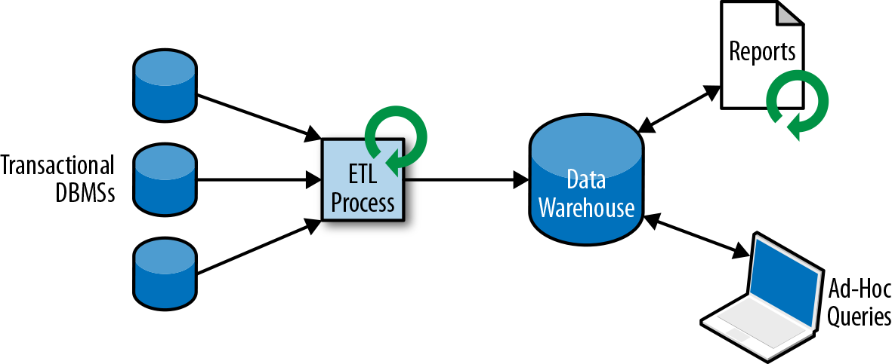
如今，Apache Hadoop生态系统的组件，已经是许多企业IT基础架构中不可或缺的组成部分。现在的做法不是直接将所有数据都插入关系数据库系统，而是将大量数据（如日志文件，社交媒体或Web点击日志）写入Hadoop的分布式文件系统（HDFS）、S3或其他批量数据存储库，如Apache HBase，以较低的成本提供大容量存储容量。驻留在此类存储系统中的数据可以通过SQL-on-Hadoop引擎查询和处理，例如Apache Hive，Apache Drill或Apache Impala。但是，基础结构与传统数据仓库架构基本相同。
有状态的流式处理
日常生活中，所有数据都是作为连续的事件流创建的。比如网站或者移动应用中的用户交互动作，订单的提交，服务器日志或传感器测量数据：所有这些都是事件流。实际上，很少有应用场景，能一次性地生成所需要的完整（有限）数据集。实际应用中更多的是无限事件流。有状态的流处理就是用于处理这种无限事件流的应用程序设计模式，在公司的IT基础设施中有广泛的应用场景。在我们讨论其用例之前，我们将简要介绍有状态流处理的工作原理。
如果我们想要无限处理事件流，并且不愿意繁琐地每收到一个事件就记录一次，那这样的应用程序就需要是有状态的，也就是说能够存储和访问中间数据。当应用程序收到一个新事件时，它可以从状态中读取数据，或者向该状态写入数据，总之可以执行任何计算。原则上讲，我们可以在各种不同的地方存储和访问状态，包括程序变量（内存）、本地文件，还有嵌入式或外部数据库。
Apache Flink将应用程序状态，存储在内存或者嵌入式数据库中。由于Flink是一个分布式系统，因此需要保护本地状态以防止在应用程序或计算机故障时数据丢失。 Flink通过定期将应用程序状态的一致性检查点（check point）写入远程且持久的存储，来保证这一点。状态、状态一致性和Flink的检查点将在后面的章节中更详细地讨论，但是，现在，图1-4显示了有状态的流式Flink应用程序。
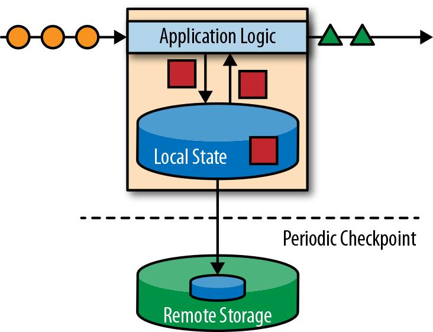
有状态的流处理应用程序，通常从事件日志中提取输入事件。事件日志就用来存储和分发事件流。事件被写入持久的仅添加（append-only）日志，这意味着无法更改写入事件的顺序。写入事件日志的流，可以被相同或不同的消费者多次读取。由于日志的仅附加（append-only）属性，事件始终以完全相同的顺序发布给所有消费者。现在已有几种事件日志系统，其中Apache Kafka是最受欢迎的，可以作为开源软件使用，或者是云计算提供商提供的集成服务。
在Flink上运行的有状态的流处理应用程序，是很有意思的一件事。在这个架构中，事件日志会按顺序保留输入事件，并且可以按确定的顺序重播它们。如果发生故障，Flink将从先前的检查点（check point）恢复其状态，并重置事件日志上的读取位置，这样就可以恢复整个应用。应用程序将重放（并快进）事件日志中的输入事件，直到它到达流的尾部。此技术一般用于从故障中恢复，但也可用于更新应用程序、修复bug或者修复以前发出的结果，另外还可以用于将应用程序迁移到其他群集，或使用不同的应用程序版本执行A / B测试。
如前所述，有状态的流处理是一种通用且灵活的设计架构，可用于许多不同的场景。在下文中，我们提出了三类通常使用有状态流处理实现的应用程序：（1）事件驱动应用程序，（2）数据管道应用程序，以及（3）数据分析应用程序。
我们将应用程序分类描述，是为了强调有状态流处理适用于多种业务场景；而实际的应用中，往往会具有以上多种情况的特征。
事件驱动应用程序
事件驱动的应用程序是有状态的流应用程序，它们使用特定的业务逻辑来提取事件流并处理事件。根据业务逻辑，事件驱动的应用程序可以触发诸如发送警报、或电子邮件之类的操作，或者将事件写入向外发送的事件流以供另一个应用程序使用。
事件驱动应用程序的典型场景包括：
- 实时推荐（例如，在客户浏览零售商网站时推荐产品）
- 行为模式检测或复杂事件处理（例如，用于信用卡交易中的欺诈检测）
- 异常检测（例如，检测侵入计算机网络的尝试
事件驱动应用程序是微服务的演变。它们通过事件日志而不是REST调用进行通信，并将应用程序数据保存为本地状态，而不是将其写入外部数据存储区（例如关系数据库或键值数据库）。图1-5显示了由事件驱动的流应用程序组成的服务架构。

图1-5中的应用程序通过事件日志连接。一个应用程序将其输出发送到事件日志通道（kafka），另一个应用程序使用其他应用程序发出的事件。事件日志通道将发送者和接收者分离，并提供异步、非阻塞的事件传输。每个应用程序都可以是有状态的，并且可以本地管理自己的状态而无需访问外部数据存储。应用程序也可以单独处理和扩展。
与事务性应用程序或微服务相比，事件驱动的应用程序具有多种优势。与读写远程数据库相比，本地状态访问提供了非常好的性能。扩展性和容错性都由流处理器来保证，并且以事件日志作为输入源，应用程序的整个输入数据可以可靠地存储，并且可以确定性地重放。此外，Flink可以将应用程序的状态重置为先前的保存点（save point），从而可以在不丢失状态的情况下更新或重新扩展应用程序。
事件驱动的应用程序对运行它们的流处理器有很高的要求，并不是所有流处理器都适合运行事件驱动的应用程序。 API的表现力，以及对状态处理和事件时间支持的程度，决定了可以实现和执行的业务逻辑。这方面取决于流处理器的API，主要看它能提供什么样的状态类型，以及它对事件时间处理的支持程度。此外，精确一次（exactly-once）的状态一致性和扩展应用程序的能力是事件驱动应用程序的基本要求。 Apache Flink符合所有的这些要求，是运行此类应用程序的一个非常好的选择。
数据管道
当今的IT架构包括许多不同的数据存储，例如关系型数据库和专用数据库系统、事件日志、分布式文件系统，内存中的缓存和搜索索引。所有这些系统都以不同的格式和数据结构存储数据，为其特定的访问模式提供最佳性能。公司通常将相同的数据存储在多个不同的系统中，以提高数据访问的性能。例如，网上商店中提供的产品的信息，可以存储在交易数据库中，同时也存储在缓存（如redis）和搜索索引（如ES）中。由于数据的这种复制，数据存储必须保持同步。
在不同存储系统中同步数据的传统方法是定期ETL作业。但是，它们不能满足当今许多场景的延迟要求。另一种方法是使用事件日志（event log）来发布更新。更新将写入事件日志并由事件日志分发。日志的消费者获取到更新之后，将更新合并到受影响的数据存储中。根据使用情况，传输的数据可能需要标准化、使用外部数据进行扩展，或者在目标数据存储提取之前进行聚合。
以较低的延迟，来提取、转换和插入数据是有状态流处理应用程序的另一个常见应用场景。这种类型的应用程序称为数据管道（data pipeline）。数据管道必须能够在短时间内处理大量数据。操作数据管道的流处理器还应具有许多源（source）和接收器（sink）的连接器，以便从各种存储系统读取数据并将数据写入各种存储系统。当然，同样地，Flink完成了所有这些功能。
流分析
ETL作业定期将数据导入数据存储区，数据的处理是由即席查询（用户自定义查询）或设定好的通常查询来做的。无论架构是基于数据仓库还是基于Hadoop生态系统的组件，这都是批处理。多年来最好的处理方式就是，定期将数据加载到数据分析系统中，但它给分析管道带了的延迟相当大，而且无法避免。
根据设定好的时间间隔，可能需要数小时或数天才能将数据点包含在报告中。我们前面已经提到，数据管道可以实现低延迟的ETL，所以在某种程度上，可以通过使用数据管道将数据导入存储区来减少延迟。但是，即使持续不停地进行ETL操作，在用查询来处理事件之前总会有延迟。虽然这种延迟在过去可能是可以接受的，但是今天的应用程序，往往要求必须能够实时收集数据，并立即对其进行操作（例如，在手机游戏中去适应不断变化的条件，或者在电商网站中提供个性化的用户体验）。
流式分析应用程序不是等待定期触发，而是连续地提取事件流，并且通过纳入最新事件来更新其计算结果，这个过程是低延迟的。这有些类似于数据库中用于更新视图（views）的技术。通常，流应用程序将其结果存储在支持更新的外部数据存储中，例如数据库或键值（key-value）存储。流分析应用程序的实时更新结果可用于驱动监控仪表板（dashboard）应用程序，如图1-6所示。

流分析应用程序最大的优势就是，将每个事件纳入到分析结果所需的时间短得多。除此之外，流分析应用程序还有另一个不太明显的优势。传统的分析管道由几个独立的组件组成，例如ETL过程、存储系统、对于基于Hadoop的环境，还包括用于触发任务（jobs）的数据处理和调度程序。相比之下，如果我们运行一个有状态流应用程序，那么流处理器就会负责所有这些处理步骤，包括事件提取、带有状态维护的连续计算以及更新结果。此外，流处理器可以从故障中恢复，并且具有精确一次（exactly-once）的状态一致性保证，还可以调整应用程序的计算资源。像Flink这样的流处理器还支持事件时间（event-time）处理，这可以保证产生正确和确定的结果，并且能够在很短的时间内处理大量数据。
流分析应用程序通常用于：
- 监控手机网络的质量分析
- 移动应用中的用户行为
- 实时数据的即席分析
虽然我们不在此处介绍，但Flink还提供对流上的分析SQL查询的支持。
开源流处理的演进
数据流处理并不是一项新技术。一些最初的研究原型和商业产品可以追溯到20世纪90年代（1990s）。然而，在很大程度上，过去采用的流处理技术是由成熟的开源流处理器驱动的。如今，分布式开源流处理器在不同行业的许多企业中，处理着核心业务应用，比如电商、社交媒体、电信、游戏和银行等。开源软件是这一趋势的主要驱动力，主要原因有两个：
- 开源流处理软件是大家每一个人都可以评估和使用的产品。
- 由于许多开源社区的努力，可扩展流处理技术正在迅速成熟和发展
仅仅一个Apache软件基金会就支持了十几个与流处理相关的项目。新的分布式流处理项目不断进入开源阶段，并不断增加新的特性和功能。开源社区不断改进其项目的功能，并正在推动流处理的技术边界。我们将简要介绍一下过去，看看开源流处理的起源和今天的状态。
流处理的历史
第一代分布式开源流处理器（2011）专注于具有毫秒延迟的事件处理，并提供了在发生故障时防止事件丢失的保证。这些系统具有相当低级的API，并且对于流应用程序的准确性和结果的一致性，不提供内置支持，因为结果会取决于到达事件的时间和顺序。另外，即使事件没有丢失，也可能不止一次地处理它们。与批处理器相比，第一代开源流处理器牺牲了结果准确性，用来获得更低的延迟。为了让当时的数据处理系统，可以同时提供快速和准确的结果，人们设计了所谓的lambda架构，如图1-7所示。

lambda架构增强了传统的批处理架构，其“快速层”（speed layer）由低延迟的流处理器来支持。数据到达之后由流处理器提取出来，并写入批处理存储。流处理器近乎实时地计算近似结果并将它们写入“快速表”（speed table）。批处理器定期处理批量存储中的数据，将准确的结果写入批处理表，并从速度表中删除相应的不准确结果。应用程序会合并快速表中的近似结果和批处理表中的准确结果，然后消费最终的结果。
lambda架构现在已经不再是最先进的，但仍在许多地方使用。该体系结构的最初目标是改善原始批处理分析体系结构的高延迟。但是，它有一些明显的缺点。首先，它需要对一个应用程序，做出两个语义上等效的逻辑实现，用于两个独立的、具有不同API的处理系统。其次，流处理器计算的结果只是近似的。第三，lambda架构很难建立和维护。
通过在第一代基础上进行改进，下一代分布式开源流处理器（2013）提供了更好的故障保证，并确保在发生故障时，每个输入记录仅对结果产生一次影响（exactly -once）。此外，编程API从相当低级的操作符接口演变为高级API。但是，一些改进（例如更高的吞吐量和更好的故障保证）是以将处理延迟从毫秒增加到几秒为代价的。此外，结果仍然取决于到达事件的时间和顺序。
第三代分布式开源流处理器（2015）解决了结果对到达事件的时间和顺序的依赖性。结合精确一次（exactly-once）的故障语义，这一代系统是第一个具有计算一致性和准确结果的开源流处理器。通过基于实际数据来计算结果（“重演”数据），这些系统还能够以与“实时”数据相同的方式处理历史数据。另一个改进是解决了延迟/吞吐量无法同时保证的问题。先前的流处理器仅能提供高吞吐量或者低延迟（其中之一），而第三代系统能够同时提供这两个特性。这一代的流处理器使得lambda架构过时了。当然，这一代流处理以flink为代表。
除了目前讨论的特性，例如容错、性能和结果准确性之外，流处理器还不断添加新的操作功能，例如高可用性设置，与资源管理器（如YARN或Kubernetes）的紧密集成，以及能够动态扩展流应用程序。其他功能包括：支持升级应用程序代码，或将作业迁移到其他群集或新版本的流处理器，而不会丢失当前状态。
Flink简介
Apache Flink是第三代分布式流处理器，它拥有极富竞争力的功能。它提供准确的大规模流处理，具有高吞吐量和低延迟。特别的是，以下功能使Flink脱颖而出：
- 事件时间（event-time）和处理时间（processing-tme）语义。即使对于无序事件流，事件时间（event-time）语义仍然能提供一致且准确的结果。而处理时间（processing-time）语义可用于具有极低延迟要求的应用程序。
- 精确一次（exactly-once）的状态一致性保证。
- 每秒处理数百万个事件，毫秒级延迟。 Flink应用程序可以扩展为在数千个核（cores）上运行。
- 分层API，具有不同的权衡表现力和易用性。本书介绍了DataStream API和过程函数（process function），为常见的流处理操作提供原语，如窗口和异步操作，以及精确控制状态和时间的接口。本书不讨论Flink的关系API，SQL和LINQ风格的Table API。
- 连接到最常用的存储系统，如Apache Kafka，Apache Cassandra，Elasticsearch，JDBC，Kinesis和（分布式）文件系统，如HDFS和S3。
- 由于其高可用的设置（无单点故障），以及与Kubernetes，YARN和Apache Mesos的紧密集成，再加上从故障中快速恢复和动态扩展任务的能力，Flink能够以极少的停机时间7*24全天候运行流应用程序。
- 能够更新应用程序代码并将作业（jobs）迁移到不同的Flink集群，而不会丢失应用程序的状态。
- 详细且可自定义的系统和应用程序指标集合，以提前识别问题并对其做出反应。
- 最后但同样重要的是，Flink也是一个成熟的批处理器。
除了这些功能之外，Flink还是一个非常易于开发的框架，因为它易于使用的API。嵌入式执行模式，可以在单个JVM进程中启动应用程序和整个Flink系统，这种模式一般用于在IDE中运行和调试Flink作业。在开发和测试Flink应用程序时，此功能非常有用。
第二章，流处理基础
数据流编程简介
在我们深入研究流处理的基础知识之前，让我们来看看在数据流程编程的背景和使用的术语。
数据流图
顾名思义，数据流程序描述了数据如何在算子之间流动。数据流程序通常表示为有向图，其中节点称为算子，用来表示计算，边表示数据之间的依赖性。算子是数据流程序的基本功能单元。他们从输入消耗数据，对它们执行计算，并生成数据输出用于进一步处理。一个数据流图必须至少有一个数据源和一个数据接收器。
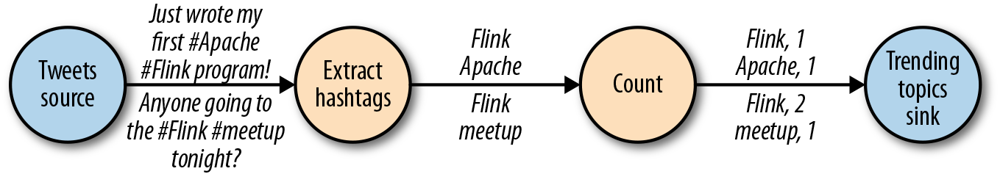
像图2-1中的数据流图被称为逻辑流图，因为它们表示了计算逻辑的高级视图。为了执行一个数据流程序，Flink会将逻辑流图转换为物理数据流图，详细说明程序的执行方式。例如，如果我们使用分布式处理引擎，每个算子在不同的物理机器可能有几个并行的任务运行。图2-2显示了图2-1逻辑图的物理数据流图。而在逻辑数据流图中节点表示算子，在物理数据流图中，节点是任务。“Extract hashtags”和“Count”算子有两个并行算子任务，每个算子任务对输入数据的子集执行计算。
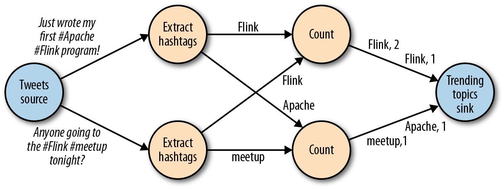
数据并行和任务并行
我们可以以不同方式利用数据流图中的并行性。第一，我们可以对输入数据进行分区，并在数据的子集上并行执行具有相同算子的任务并行。这种类型的并行性被称为数据并行性。数据并行是有用的，因为它允许处理大量数据，并将计算分散到不同的计算节点上。第二，我们可以将不同的算子在相同或不同的数据上并行执行。这种并行性称为任务并行性。使用任务并行性，我们可以更好地利用计算资源。
数据交换策略
数据交换策略定义了在物理执行流图中如何将数据分配给任务。数据交换策略可以由执行引擎自动选择，具体取决于算子的语义或我们明确指定的语义。在这里，我们简要回顾一些常见的数据交换策略，如图2-3所示。

- 前向策略将数据从一个任务发送到接收任务。如果两个任务都位于同一台物理计算机上（这通常由任务调度器确保），这种交换策略可以避免网络通信。
- 广播策略将所有数据发送到算子的所有的并行任务上面去。因为这种策略会复制数据和涉及网络通信，所以代价相当昂贵。
- 基于键控的策略通过Key值(键)对数据进行分区保证具有相同Key的数据将由同一任务处理。在图2-2中，输出“Extract hashtags”算子使用键来分区（hashtag），以便count算子的任务可以正确计算每个#标签的出现次数。
- 随机策略统一将数据分配到算子的任务中去，以便均匀地将负载分配到不同的计算任务。
并行处理流数据
既然我们熟悉了数据流编程的基础知识，现在是时候看看这些概念如何应用于并行的处理数据流了。但首先，让我们定义术语数据流：数据流是一个可能无限的事件序列。
数据流中的事件可以表示监控数据，传感器测量数据，信用卡交易数据，气象站观测数据，在线用户交互数据，网络搜索数据等。在本节中，我们将学习如何并行处理无限流，使用数据流编程范式。
延迟和吞吐量
流处理程序不同与批处理程序。在评估性能时，要求也有所不同。对于批处理程序，我们通常关心一个作业的总的执行时间，或我们的处理引擎读取输入所需的时间，执行计算，并回写结果。由于流处理程序是连续运行的，输入可能是无界的，所以数据流处理中没有总执行时间的概念。 相反，流处理程序必须尽可能快的提供输入数据的计算结果。我们使用延迟和吞吐量来表征流处理的性能要求。
延迟
延迟表示处理事件所需的时间。它是接收事件和看到在输出中处理此事件的效果之间的时间间隔。要直观的理解延迟，考虑去咖啡店买咖啡。当你进入咖啡店时，可能还有其他顾客在里面。因此，你排队等候直到轮到你下订单。收银员收到你的付款并通知准备饮料的咖啡师。一旦你的咖啡准备好了，咖啡师会叫你的名字，你可以到柜台拿你的咖啡。服务延迟是从你进入咖啡店的那一刻起，直到你喝上第一口咖啡之间的时间间隔。
在数据流中，延迟是以时间为单位测量的，例如毫秒。根据应用程序，我们可能会关心平均延迟，最大延迟或百分位延迟。例如，平均延迟值为10ms意味着处理事件的平均时间在10毫秒内。或者，延迟值为95%，10ms表示95%的事件在10ms内处理完毕。平均值隐藏了处理延迟的真实分布，可能会让人难以发现问题。如果咖啡师在准备卡布奇诺之前用完了牛奶，你必须等到他们从供应室带来一些。虽然你可能会因为这么长时间的延迟而生气，但大多数其他客户仍然会感到高兴。
确保低延迟对于许多流应用程序来说至关重要，例如欺诈检测，系统警报，网络监控和提供具有严格服务水平协议的服务。低延迟是流处理的关键特性，它实现了我们所谓的实时应用程序。像Apache Flink这样的现代流处理器可以提供低至几毫秒的延迟。相比之下，传统批处理程序延迟通常从几分钟到几个小时不等。在批处理中，首先需要收集事件批次，然后才能处理它们。因此，延迟是受每个批次中最后一个事件的到达时间的限制。所以自然而然取决于批的大小。真正的流处理不会引入这样的人为延迟，因此可以实现真正的低延迟。真的流模型，事件一进入系统就可以得到处理。延迟更密切地反映了在每个事件上必须进行的实际工作。
吞吐量
吞吐量是衡量系统处理能力的指标，也就是处理速率。也就是说，吞吐量告诉我们每个时间单位系统可以处理多少事件。重温咖啡店的例子，如果商店营业时间为早上7点至晚上7点。当天为600个客户提供了服务，它的平均吞吐量将是每小时50个客户。虽然我们希望延迟尽可能低，但我们通常也需要吞吐量尽可能高。
吞吐量以每个时间单位系统所能处理的事件数量或操作数量来衡量。值得注意的是，事件处理速率取决于事件到达的速率，低吞吐量并不一定表示性能不佳。 在流式系统中，我们通常希望确保我们的系统可以处理最大的预期事件到达的速率。也就是说，我们主要的关注点在于确定的峰值吞吐量是多少，当系统处于最大负载时性能怎么样。为了更好地理解峰值吞吐量的概念，让我们考虑一个流处理 程序没有收到任何输入的数据，因此没有消耗任何系统资源。当第一个事件进来时，它会尽可能以最小延迟立即处理。例如，如果你是第一个出现在咖啡店的顾客，在早上开门后，你将立即获得服务。理想情况下，您希望此延迟保持不变 ，并且独立于传入事件的速率。但是，一旦我们达到使系统资源被完全使用的事件传入速率，我们将不得不开始缓冲事件。在咖啡店里 ，午餐后会看到这种情况发生。许多人出现在同一时间，必须排队等候。在此刻，咖啡店系统已达到其峰值吞吐量，进一步增加 事件传入的速率只会导致更糟糕的延迟。如果系统继续以可以处理的速率接收数据，缓冲区可能变为不可用，数据可能会丢失。这种情况是众所周知的 作为背压，有不同的策略来处理它。
延迟与吞吐量的对比
此时，应该清楚延迟和吞吐量不是独立指标。如果事件需要在处理流水线中待上很长时间，我们不能轻易确保高吞吐量。同样，如果系统容量很小，事件将被缓冲，而且必须等待才能得到处理。
让我们重温一下咖啡店的例子来阐明一下延迟和吞吐量如何相互影响。首先，应该清楚存在没有负载时的最佳延迟。也就是说，如果你是咖啡店的唯一客户，会很快得到咖啡。然而，在繁忙时期，客户将不得不排队等待，并且会有延迟增加。另一个影响延迟和吞吐量的因素是处理事件所花费的时间或为每个客户提供服务所花费的时间。想象一下，期间圣诞节假期，咖啡师不得不为每杯咖啡画圣诞老人。这意味着准备一杯咖啡需要的时间会增加，导致每个人花费 更多的时间在等待咖啡师画圣诞老人，从而降低整体吞吐量。
那么，你可以同时获得低延迟和高吞吐量吗？或者这是一个无望的努力？我们可以降低得到咖啡的延迟 ，方法是：聘请一位更熟练的咖啡师来准备咖啡。在高负载时，这种变化也会增加吞吐量，因为会在相同的时间内为更多的客户提供服务。 实现相同结果的另一种方法是雇用第二个咖啡师来利用并行性。这里的主要想法是降低延迟来增加吞吐量。当然，如果系统可以更快的执行操作，它可以在相同的时间内执行更多操作。 事实上，在流中利用并行性时也会发生这种情况。通过并行处理多个流，在同时处理更多事件的同时降低延迟。
数据流上的操作
流处理引擎通常提供一组内置操作：摄取(ingest)，转换(transform)和输出流(output)。这些操作可以 结合到数据流图中来实现逻辑流处理程序。在本节中，我们描述最常见的流处理操作。
操作可以是无状态的或有状态的。无状态操作不保持任何内部状态。也就是说，事件的处理不依赖于过去看到的任何事件，也没有保留历史。 无状态操作很容易并行化，因为事件可以彼此独立地处理，也独立于事件到达的顺序(和事件到达顺序没有关系)。 而且，在失败的情况下，无状态操作可以是简单的重新启动并从中断处继续处理。相反， 有状态操作可能会维护之前收到的事件的信息。此状态可以通过传入事件更新，也可以用于未来事件的处理逻辑。有状态的流 处理应用程序更难以并行化和以容错的方式来运行，因为状态需要有效的进行分区和在发生故障的情况下可靠地恢复。
数据摄入和数据吞吐量
数据摄取和数据出口操作允许流处理程序与外部系统通信。数据摄取是操作从外部源获取原始数据并将其转换为其他格式(ETL)。实现数据提取逻辑的运算符被称为数据源。数据源可以从TCP Socket，文件，Kafka Topic或传感器数据接口中提取数据。数据出口是以适合消费的形式产出到外部系统。执行数据出口的运算符称为数据接收器，包括文件，数据库，消息队列和监控接口。
转换算子

转换算子是单遍处理算子，碰到一个事件处理一个事件。这些操作在使用后会消费一个事件，然后对事件数据做一些转换，产生一个新的输出流。转换逻辑可以集成在 操作符中或由UDF函数提供，如图所示图2-4。程序员编写实现自定义计算逻辑。
操作符可以接受多个输入流并产生多个输出流。他们还可以通过修改数据流图的结构要么将流分成多个流，要么将流合并为一条流。
滚动聚合
滚动聚合是一种聚合，例如sum，minimum和maximum，为每个输入事件不断更新。 聚合操作是有状态的，并将当前状态与传入事件一起计算以产生更新的聚合值。请注意能够有效地将当前状态与事件相结合 产生单个值，聚合函数必须是关联的和可交换的。否则，操作符必须存储完整的流数据历史。图2-5显示了最小滚动 聚合。操作符保持当前的最小值和相应地为每个传入的事件来更新最小值。

窗口操作符
转换和滚动聚合一次处理一个事件产生输出事件并可能更新状态。但是，有些操作必须收集并缓冲数据以计算其结果。 例如，考虑不同流之间的连接或整体聚合这样的操作，例如中值函数。为了在无界流上高效运行这些操作符，我们需要限制 这些操作维护的数据量。在本节中，我们将讨论窗口操作，提供此服务。
窗口还可以在语义上实现关于流的比较复杂的查询。我们已经看到了滚动聚合的方式，以聚合值编码整个流的历史数据来为每个事件提供低延迟的结果。 但如果我们只对最近的数据感兴趣的话会怎样？考虑给司机提供实时交通信息的应用程序。这个程序可以使他们避免拥挤的路线。在这种场景下，你想知道某个位置在最近几分钟内是否有事故发生。 另一方面，了解所有发生过的事故在这个应用场景下并没有什么卵用。更重要的是，通过将流历史缩减为单一聚合值，我们将丢失这段时间内数据的变化。例如，我们可能想知道每5分钟有多少车辆穿过 某个路口。
窗口操作不断从无限事件流中创建有限的事件集，好让我们执行有限集的计算。通常会基于数据属性或基于时间的窗口来分配事件。 要正确定义窗口运算符语义，我们需要确定如何给窗口分配事件以及对窗口中的元素进行求值的频率是什么样的。 窗口的行为由一组策略定义。窗口策略决定何时创建新的窗口以及要分配的事件属于哪个窗口，以及何时对窗口中的元素进行求值。 而窗口的求值基于触发条件。一旦触发条件得到满足，窗口的内容将会被发送到求值函数，求值函数会将计算逻辑应用于窗口中的元素。 求值函数可以是sum或minimal或自定义的聚合函数。 求值策略可以根据时间或者数据属性计算(例如，在过去五秒内收到的事件或者最近的一百个事件等等)。 接下来，我们描述常见窗口类型的语义。
- 滚动窗口是将事件分配到固定大小的不重叠的窗口中。当通过窗口的结尾时，全部事件被发送到求值函数进行处理。基于计数的滚动窗口定义了在触发求值之前需要收集多少事件。图2-6显示了一个基于计数的翻滚窗口，每四个元素一个窗口。基于时间的滚动窗口定义一个时间间隔，包含在此时间间隔内的事件。图2-7显示了基于时间的滚动窗口，将事件收集到窗口中每10分钟触发一次计算。
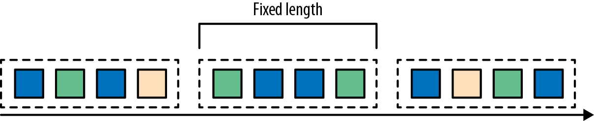

- 滑动窗口将事件分配到固定大小的重叠的窗口中去。因此，事件可能属于多个桶。我们通过提供窗口的长度和滑动距离来定义滑动窗口。滑动距离定义了创建新窗口的间隔。基于滑动计数的窗口，图2-8的长度为四个事件，三个为滑动距离。

- 会话窗口在常见的真实场景中很有用，一些场景既不能使用滚动窗口也不能使用滑动窗口。考虑一个分析在线用户行为的应用程序。在应用程序里，我们想把源自同一时期的用户活动或会话事件分组在一起。会话由一系列相邻时间发生的事件组成，接下来有一段时间没有活动。例如，用户在App上浏览一系列的新闻，然后关掉App，那么浏览新闻这段时间的浏览事件就是一个会话。会话窗口事先没有定义窗口的长度，而是取决于数据的实际情况，滚动窗口和滑动窗口无法应用于这个场景。相反，我们需要将同一会话中的事件分配到同一个窗口中去，而不同的会话可能窗口长度不一样。会话窗口会定义一个间隙值来区分不同的会话。间隙值的意思是：用户一段时间内不活动，就认为用户的会话结束了。图2-9显示了一个会话窗口。

到目前为止，所有窗口类型都是在整条流上去做窗口操作。但实际上你可能想要将一条流分流成多个逻辑流并定义并行窗口。 例如，如果我们正在接收来自不同传感器的测量结果，那么可能想要在做窗口计算之前按传感器ID对流进行分流操作。 在并行窗口中，每条流都独立于其他流，然后应用了窗口逻辑。图2-10显示了一个基于计数的长度为2的并行滚动窗口，根据事件颜色分流。
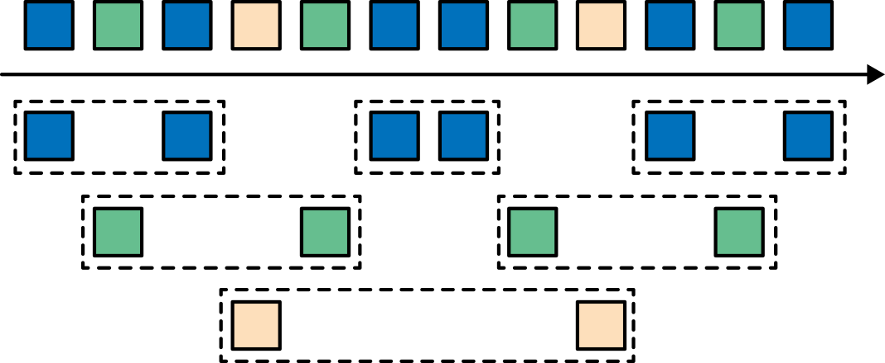
在流处理中，窗口操作与两个主要概念密切相关：时间语义和状态管理。时间也许是流处理最重要的方面。即使低延迟是流处理的一个有吸引力的特性，它的真正价值不仅仅是快速分析。真实世界的系统，网络和通信渠道远非完美，流数据经常被推迟或无序(乱序)到达。理解如何在这种条件下提供准确和确定的结果是至关重要的。 更重要的是，流处理程序可以按原样处理事件制作的也应该能够处理相同的历史事件方式，从而实现离线分析甚至时间旅行分析。 当然，前提是我们的系统可以保存状态，因为可能有故障发生。到目前为止，我们看到的所有窗口类型在产生结果前都需要保存之前的数据。实际上，如果我们想计算任何指标，即使是简单的计数，我们也需要保存状态。考虑到流处理程序可能会运行几天，几个月甚至几年，我们需要确保状态可以在发生故障的情况下可靠地恢复。 并且即使程序崩溃，我们的系统也能保证计算出准确的结果。本章，我们将在流处理应用可能发生故障的语境下，深入探讨时间和状态的概念。
时间语义
在本节中，我们将介绍时间语义，并描述流中不同的时间概念。我们将讨论流处理器在乱序事件流的情况下如何提供准确的计算结果，以及我们如何处理历史事件流，如何在流中进行时间旅行。
在流处理中一分钟代表什么？
在处理可能是无限的事件流（包含了连续到达的事件），时间成为流处理程序的核心方面。假设我们想要连续的计算结果，可能每分钟就要计算一次。在我们的流处理程序上下文中，一分钟的意思是什么？
考虑一个程序需要分析一款移动端的在线游戏的用户所产生的事件流。游戏中的用户分了组，而应用程序将收集每个小组的活动数据，基于小组中的成员多快达到了游戏设定的目标，然后在游戏中提供奖励。例如额外的生命和用户升级。例如，如果一个小组中的所有用户在一分钟之内都弹出了500个泡泡，他们将升一级。Alice是一个勤奋的玩家，她在每天早晨的通勤时间玩游戏。问题在于Alice住在柏林，并且乘地铁去上班。而柏林的地铁手机信号很差。我们设想一个这样的场景，Alice当她的手机连上网时，开始弹泡泡，然后游戏会将数据发送到我们编写的应用程序中，这时地铁突然进入了隧道，她的手机也断网了。Alice还在玩这个游戏，而产生的事件将会缓存在手机中。当地铁离开隧道，Alice的手机又在线了，而手机中缓存的游戏事件将发送到应用程序。我们的应用程序应该如何处理这些数据？在这个场景中一分钟的意思是什么？这个一分钟应该包含Alice离线的那段时间吗？下图展示了这个问题。

在线手游是一个简单的场景，展示了应用程序的运算应该取决于事件实际发生的时间，而不是应用程序收到事件的时间。如果我们按照应用程序收到事件的时间来进行处理的话，最糟糕的后果就是，Alice和她的朋友们再也不玩这个游戏了。但是还有很多时间语义非常关键的应用程序，我们需要保证时间语义的正确性。如果我们只考虑我们在一分钟之内收到了多少数据，我们的结果会变化，因为结果取决于网络连接的速度或处理的速度。相反，定义一分钟之内的事件数量，这个一分钟应该是数据本身的时间。
在Alice的这个例子中，流处理程序可能会碰到两个不同的时间概念：处理时间和事件时间。我们将在接下来的部分，讨论这两个概念。
处理时间
处理时间是处理流的应用程序的机器的本地时钟的时间（墙上时钟）。处理时间的窗口包含了一个时间段内来到机器的所有事件。这个时间段指的是机器的墙上时钟。如下图所示，在Alice的这个例子中，处理时间窗口在Alice的手机离线的情况下，时间将会继续行走。但这个处理时间窗口将不会收集Alice的手机离线时产生的事件。

事件时间
事件时间是流中的事件实际发生的时间。事件时间基于流中的事件所包含的时间戳。通常情况下，在事件进入流处理程序前，事件数据就已经包含了时间戳。下图展示了事件时间窗口将会正确的将事件分发到窗口中去。可以如实反应事情是怎么发生的。即使事件可能存在延迟。

事件时间使得计算结果的过程不需要依赖处理数据的速度。基于事件时间的操作是可以预测的，而计算结果也是确定的。无论流处理程序处理流数据的速度快或是慢，无论事件到达流处理程序的速度快或是慢，事件时间窗口的计算结果都是一样的。
可以处理迟到的事件只是我们使用事件时间所克服的一个挑战而已。普遍存在的事件乱序问题可以使用事件时间得到解决。考虑和Alice玩同样游戏的Bob，他恰好和Alice在同一趟地铁上。Alice和Bob虽然玩的游戏一样，但他们的手机信号是不同的运营商提供的。当Alice的手机没信号时，Bob的手机依然有信号，游戏数据可以正常发送出去。
如果使用事件时间，即使碰到了事件乱序到达的情况，我们也可以保证结果的正确性。还有，当我们在处理可以重播的流数据时，由于时间戳的确定性，我们可以快进过去。也就是说，我们可以重播一条流，然后分析历史数据，就好像流中的事件是实时发生一样。另外，我们可以快进历史数据来使我们的应用程序追上现在的事件，然后应用程序仍然是一个实时处理程序，而且业务逻辑不需要改变。
水位线
在我们对事件时间窗口的讨论中，我们忽略了一个很重要的方面：我们应该怎样去决定何时触发事件时间窗口的计算？也就是说，在我们可以确定一个时间点之前的所有事件都已经到达之前，我们需要等待多久？我们如何知道事件是迟到的？在分布式系统无法准确预测行为的现实条件下，以及外部组件所引发的事件的延迟，以上问题并没有准确的答案。在本小节中，我们将会看到如何使用水位线来设置事件时间窗口的行为。
水位线是全局进度的度量标准。系统可以确信在一个时间点之后，不会有早于这个时间点发生的事件到来了。本质上，水位线提供了一个逻辑时钟，这个逻辑时钟告诉系统当前的事件时间。当一个运算符接收到含有时间T的水位线时，这个运算符会认为早于时间T的发生的事件已经全部都到达了。对于事件时间窗口和乱序事件的处理，水位线非常重要。运算符一旦接收到水位线，运算符会认为一段时间内发生的所有事件都已经观察到，可以触发针对这段时间内所有事件的计算了。
水位线提供了一种结果可信度和延时之间的妥协。激进的水位线设置可以保证低延迟，但结果的准确性不够。在这种情况下，迟到的事件有可能晚于水位线到达，我们需要编写一些代码来处理迟到事件。另一方面，如果水位线设置的过于宽松，计算的结果准确性会很高，但可能会增加流处理程序不必要的延时。
在很多真实世界的场景里面，系统无法获得足够的知识来完美的确定水位线。在手游这个场景中，我们无法得知一个用户离线时间会有多长，他们可能正在穿越一条隧道，可能正在乘飞机，可能永远不会再玩儿了。水位线无论是用户自定义的或者是自动生成的，在一个分布式系统中追踪全局的时间进度都不是很容易。所以仅仅依靠水位线可能并不是一个很好的主意。流处理系统还需要提供一些机制来处理迟到的元素（在水位线之后到达的事件）。根据应用场景，我们可能需要把迟到事件丢弃掉，或者写到日志里，或者使用迟到事件来更新之前已经计算好的结果。
处理时间和事件时间
大家可能会有疑问，既然事件时间已经可以解决我们的所有问题，为什么我们还要对比这两个时间概念？真相是，处理时间在很多情况下依然很有用。处理时间窗口将会带来理论上最低的延迟。因为我们不需要考虑迟到事件以及乱序事件，所以一个窗口只需要简单的缓存窗口内的数据即可，一旦机器时间超过指定的处理时间窗口的结束时间，就会触发窗口的计算。所以对于一些处理速度比结果准确性更重要的流处理程序，处理时间就派上用场了。另一个应用场景是，当我们需要在真实的时间场景下，周期性的报告结果时，同时不考虑结果的准确性。一个例子就是一个实时监控的仪表盘，负责显示当事件到达时立即聚合的结果。最后，处理时间窗口可以提供流本身数据的忠实表达，对于一些案例可能是很必要的特性。例如我们可能对观察流和对每分钟事件的计数（检测可能存在的停电状况）很感兴趣。简单的说，处理时间提供了低延迟，同时结果也取决于处理速度，并且也不能保证确定性。另一方面，事件时间保证了结果的确定性，同时还可以使我们能够处理迟到的或者乱序的事件流。
状态和持久化模型
我们现在转向另一个对于流处理程序非常重要的话题：状态。在数据处理中，状态是普遍存在的。任何稍微复杂一点的计算，都涉及到状态。为了产生计算结果，一个函数在一段时间内的一定数量的事件上来累加状态（例如，聚合计算或者模式匹配）。有状态的运算符使用输入的事件以及内部保存的状态来计算得到输出。例如，一个滚动聚合运算符需要输出这个运算符所观察到的所有事件的累加和。这个运算符将会在内部保存当前观察到的所有事件的累加和，同时每输入一个事件就更新一次累加和的计算结果。相似的，当一个运算符检测到一个“高温”事件紧接着十分钟以内检测到一个“烟雾”事件时，将会报警。直到运算符观察到一个“烟雾”事件或者十分钟的时间段已经过去，这个运算符需要在内部状态中一直保存着“高温”事件。
当我们考虑一下使用批处理系统来分析一个无界数据集时，会发现状态的重要性显而易见。在现代流处理器兴起之前，处理无界数据集的一个通常做法是将输入的事件攒成微批，然后交由批处理器来处理。当一个任务结束时，计算结果将被持久化，而所有的运算符状态就丢失了。一旦一个任务在计算下一个微批次的数据时，这个任务是无法访问上一个任务的状态的（都丢掉了）。这个问题通常使用将状态代理到外部系统（例如数据库）的方法来解决。相反，在一个连续不间断运行的流处理任务中，事件的状态是一直存在的，我们可以将状态暴露出来作为编程模型中的一等公民。当然，我们的确可以使用外部系统来管理流的状态，即使这个解决方案会带来额外的延迟。
由于流处理运算符默认处理的是无界数据流。所以我们必须要注意不要让内部状态无限的增长。为了限制状态的大小，运算符通常情况下会保存一些之前所观察到的事件流的总结或者概要。这个总结可能是一个计数值，一个累加和，或者事件流的采样，窗口的缓存操作，或者是一个自定义的数据结构，这个数据结构用来保存数据流中感兴趣的一些特性。
我们可以想象的到，支持有状态的运算符可能会碰到一些实现上的挑战：
状态管理
系统需要高效的管理状态，并保证针对状态的并发更新，不会产生竞争条件（race condition）。
状态分区
并行会带来复杂性。因为计算结果同时取决于已经保存的状态和输入的事件流。幸运的是，大多数情况下，我们可以使用Key来对状态进行分区，然后独立的管理每一个分区。例如，当我们处理一组传感器的测量事件流时，我们可以使用分区的运算符状态来针对不同的传感器独立的保存状态。
状态恢复
第三个挑战是有状态的运算符如何保证状态可以恢复，即使出现任务失败的情况，计算也是正确的。
下一节，我们将讨论任务失败和计算结果的保证。
任务失败
流任务中的运算符状态是很宝贵的，也需要抵御任务失败带来的问题。如果在任务失败的情况下，状态丢失的话，在任务恢复以后计算的结果将是不正确的。流任务会连续不断的运行很长时间，而状态可能已经收集了几天甚至几个月。在失败的情况下，重新处理所有的输入并重新生成一个丢失的状态，将会很浪费时间，开销也很大。
在本章开始时，我们看到如何将流的编程建模成数据流模型。在执行之前，流程序将会被翻译成物理层数据流图，物理层数据流图由连接的并行任务组成，而一个并行任务运行一些运算符逻辑，消费输入流数据，并为其他任务产生输出流数据。真实场景下，可能有数百个这样的任务并行运行在很多的物理机器上。在长时间的运行中，流任务中的任意一个任务在任意时间点都有可能失败。我们如何保证任务的失败能被正确的处理，以使任务能继续的运行下去呢？事实上，我们可能希望我们的流处理器不仅能在任务失败的情况下继续处理数据，还能保证计算结果的正确性以及运算符状态的安全。我们在本小节来讨论这些问题。
什么是任务失败？
对于流中的每一个事件，一个处理任务分为以下步骤：（1）接收事件，并将事件存储在本地的缓存中；（2）可能会更新内部状态；（3）产生输出记录。这些步骤都能失败，而系统必须对于在失败的场景下如何处理有清晰的定义。如果任务在第一步就失败了，事件会丢失吗？如果当更新内部状态的时候任务失败，那么内部状态会在任务恢复以后更新吗？在以上这些场景中，输出是确定性的吗？
在批处理场景下，所有的问题都不是问题。因为我们可以很方便的重新计算。所以不会有事件丢失，状态也可以得到完全恢复。在流的世界里，处理失败不是一个小问题。流系统在失败的情况下需要保证结果的准确性。接下来，我们需要看一下现代流处理系统所提供的一些保障，以及实现这些保障的机制。
结果的保证
当我们讨论保证计算的结果时，我们的意思是流处理器的内部状态需要保证一致性。也就是说我们关心的是应用程序的代码在故障恢复以后看到的状态值是什么。要注意保证应用程序状态的一致性并不是保证应用程序的输出结果的一致性。一旦输出结果被持久化，结果的准确性就很难保证了。除非持久化系统支持事务。
AT-MOST-ONCE
当任务故障时，最简单的做法是什么都不干，既不恢复丢失的状态，也不重播丢失的事件。At-most-once语义的含义是最多处理一次事件。换句话说，事件可以被丢弃掉，也没有任何操作来保证结果的准确性。这种类型的保证也叫“没有保证”，因为一个丢弃掉所有事件的系统其实也提供了这样的保障。没有保障听起来是一个糟糕的主意，但如果我们能接受近似的结果，并且希望尽可能低的延迟，那么这样也挺好。
AT-LEAST-ONCE
在大多数的真实应用场景，我们希望不丢失事件。这种类型的保障成为at-least-once，意思是所有的事件都得到了处理，而且一些事件还可能被处理多次。如果结果的正确性仅仅依赖于数据的完整性，那么重复处理是可以接受的。例如，判断一个事件是否在流中出现过，at-least-once这样的保证完全可以正确的实现。在最坏的情况下，我们多次遇到了这个事件。而如果我们要对一个特定的事件进行计数，计算结果就可能是错误的了。
为了保证在at-least-once语义的保证下，计算结果也能正确。我们还需要另一套系统来从数据源或者缓存中重新播放数据。持久化的事件日志系统将会把所有的事件写入到持久化存储中。所以如果任务发生故障，这些数据可以重新播放。还有一种方法可以获得同等的效果，就是使用结果承认机制。这种方法将会把每一条数据都保存在缓存中，直到数据的处理等到所有的任务的承认。一旦得到所有任务的承认，数据将被丢弃。
EXACTLY-ONCE
恰好处理一次是最严格的保证，也是最难实现的。恰好处理一次语义不仅仅意味着没有事件丢失，还意味着针对每一个数据，内部状态仅仅更新一次。本质上，恰好处理一次语义意味着我们的应用程序可以提供准确的结果，就好像从未发生过故障。
提供恰好处理一次语义的保证必须有至少处理一次语义的保证才行，同时还需要数据重放机制。另外，流处理器还需要保证内部状态的一致性。也就是说，在故障恢复以后，流处理器应该知道一个事件有没有在状态中更新。事务更新是达到这个目标的一种方法，但可能引入很大的性能问题。Flink使用了一种轻量级快照机制来保证恰好处理一次语义。
端到端恰好处理一次
目前我们看到的一致性保证都是由流处理器实现的，也就是说都是在Flink流处理器内部保证的。而在真实世界中，流处理应用除了流处理器以外还包含了数据源（例如Kafka）和持久化系统。端到端的一致性保证意味着结果的正确性贯穿了整个流处理应用的始终。每一个组件都保证了它自己的一致性。而整个端到端的一致性级别取决于所有组件中一致性最弱的组件。要注意的是，我们可以通过弱一致性来实现更强的一致性语义。例如，当任务的操作具有幂等性时，比如流的最大值或者最小值的计算。在这种场景下，我们可以通过最少处理一次这样的一致性来实现恰好处理一次这样的最高级别的一致性。
第三章，Flink运行架构
系统架构
Flink是一个用于有状态的并行数据流处理的分布式系统。它由多个进程构成，这些进程一般会分布运行在不同的机器上。对于分布式系统来说，面对的常见问题有：集群中资源的分配和管理、进程协调调度、持久化和高可用的数据存储，以及故障恢复。
对于这些分布式系统的经典问题，业内已有比较成熟的解决方案和服务。所以Flink并不会自己去处理所有的问题，而是利用了现有的集群架构和服务，这样它就可以把精力集中在核心工作——分布式数据流处理上了。Flink与一些集群资源管理工具有很好的集成，比如Apache Mesos、YARN和Kubernetes；同时，也可以配置为独立（stand-alone）集群运行。Flink自己并不提供持久化的分布式存储，而是直接利用了已有的分布式文件系统（比如HDFS）或者对象存储（比如S3）。对于高可用的配置，Flink需要依靠Apache ZooKeeper来完成。
在本节中，我们将介绍Flink的不同组件，以及在运行程序时它们如何相互作用。我们会讨论部署Flink应用程序的两种模式，并且了解每种模式下分发和执行任务的方式。最后，我们还会解释一下Flink的高可用性模式是如何工作的。
Flink运行时组件
Flink运行时架构主要包括四个不同的组件，它们会在运行流处理应用程序时协同工作：作业管理器（JobManager）、资源管理器（ResourceManager）、任务管理器（TaskManager），以及分发器（Dispatcher）。因为Flink是用Java和Scala实现的，所以所有组件都会运行在Java虚拟机（JVMs）上。每个组件的职责如下：
- 作业管理器（JobManager）是控制一个应用程序执行的主进程，也就是说，每个应用程序都会被一个不同的作业管理器所控制执行。作业管理器会先接收到要执行的应用程序。这个应用程序会包括：作业图（JobGraph）、逻辑数据流图（logical dataflow graph）和打包了所有的类、库和其它资源的JAR包。作业管理器会把JobGraph转换成一个物理层面的数据流图，这个图被叫做“执行图”（ExecutionGraph），包含了所有可以并发执行的任务。作业管理器会向资源管理器（ResourceManager）请求执行任务必要的资源，也就是任务管理器（TaskManager）上的插槽（slot）。一旦它获取到了足够的资源，就会将执行图分发到真正运行它们的TaskManager上。而在运行过程中，作业管理器会负责所有需要中央协调的操作，比如说检查点（checkpoints）的协调。
- ResourceManager主要负责管理任务管理器（TaskManager）的插槽（slot），TaskManger插槽是Flink中定义的处理资源单元。Flink为不同的环境和资源管理工具提供了不同资源管理器（ResourceManager），比如YARN、Mesos、K8s，以及standalone部署。当作业管理器申请插槽资源时，ResourceManager会将有空闲插槽的TaskManager分配给作业管理器。如果ResourceManager没有足够的插槽来满足作业管理器的请求，它还可以向资源提供平台发起会话，以提供启动TaskManager进程的容器。另外，ResourceManager还负责终止空闲的TaskManager，释放计算资源。
- 任务管理器（TaskManager）是Flink中的工作进程。通常在Flink中会有多个TaskManager运行，每一个TaskManager都包含了一定数量的插槽（slots）。插槽的数量限制了TaskManager能够执行的任务数量。启动之后，TaskManager会向资源管理器注册它的插槽；收到资源管理器的指令后，TaskManager就会将一个或者多个插槽提供给作业管理器调用。作业管理器就可以向插槽分配任务（tasks）来执行了。在执行过程中，一个TaskManager可以跟其它运行同一应用程序的TaskManager交换数据。任务的执行和插槽的概念会在“任务执行”一节做具体讨论。
- 分发器（Dispatcher）可以跨作业运行，它为应用提交提供了REST接口。当一个应用被提交执行时，分发器就会启动并将应用移交给一个作业管理器。由于是REST接口，所以Dispatcher可以作为集群的一个HTTP接入点，这样就能够不受防火墙阻挡。Dispatcher也会启动一个Web UI，用来方便地展示和监控作业执行的信息。Dispatcher在架构中可能并不是必需的，这取决于应用提交运行的方式。

上图是从一个较为高层级的视角，来看应用中各组件的交互协作。如果部署的集群环境不同（例如YARN，Mesos，Kubernetes，standalone等），其中一些步骤可以被省略，或是有些组件会运行在同一个JVM进程中。
应用部署
Flink应用程序可以用以下两种不同的方式部署：
框架（Framework）方式
在这个模式下，Flink应用被打包成一个Jar文件，并由客户端提交给一个运行服务（running service）。这个服务可以是一个Flink的Dispatcher，也可以是一个Flink的作业管理器，或是Yarn的ResourceManager。如果application被提交给一个作业管理器，则它会立即开始执行这个application。如果application被提交给了一个Dispatcher，或是Yarn ResourceManager，则它会启动一个作业管理器，然后将application交给它，再由作业管理器开始执行此应用。
库（Library）方式
在这个模式下，Flink Application 会被打包在一个容器（container） 镜像里，例如一个Docker 镜像。此镜像包含了运行作业管理器和ResourceManager的代码。当一个容器从镜像启动后，它会自动启动ResourceManager和作业管理器，并提交打包好的应用。另一种方法是：将应用打包到镜像后，只用于部署TaskManager容器。从镜像启动的容器会自动启动一个TaskManager，然后连接ResourceManager并注册它的slots。这些镜像的启动以及失败重启，通常都会由一个外部的资源管理器管理（比如Kubernetes）。
框架模式遵循了传统的任务提交方式，从客户端提交到Flink运行服务。而在库模式下，没有运行的Flink服务。它是将Flink作为一个库，与应用程序一同打包到了一个容器镜像。这种部署方式在微服务架构中较为常见。我们会在“运行管理流式应用程序”一节对这个话题做详细讨论。
任务执行
一个TaskManager可以同时执行多个任务（tasks）。这些任务可以是同一个算子（operator）的子任务（数据并行），也可以是来自不同算子的（任务并行），甚至可以是另一个不同应用程序的（作业并行）。TaskManager提供了一定数量的处理插槽（processing slots），用于控制可以并行执行的任务数。一个slot可以执行应用的一个分片，也就是应用中每一个算子的一个并行任务。图3-2展示了TaskManagers，slots，tasks以及operators之间的关系：

最左边是一个“作业图”（JobGraph），包含了5个算子——它是应用程序的非并行表示。其中算子A和C是数据源（source），E是输出端（sink）。C和E并行度为2，而其他的算子并行度为4。因为最高的并行度是4，所以应用需要至少四个slot来执行任务。现在有两个TaskManager，每个又各有两个slot，所以我们的需求是满足的。作业管理器将JobGraph转化为“执行图”（ExecutionGraph），并将任务分配到四个可用的slot上。对于有4个并行任务的算子，它的task会分配到每个slot上。而对于并行度为2的operator C和E，它们的任务被分配到slot 1.1、2.1 以及 slot 1.2、2.2。将tasks调度到slots上，可以让多个tasks跑在同一个TaskManager内，也就可以是的tasks之间的数据交换更高效。然而将太多任务调度到同一个TaskManager上会导致TaskManager过载，继而影响效率。之后我们会在“控制任务调度”一节继续讨论如何控制任务的调度。
TaskManager在同一个JVM中以多线程的方式执行任务。线程较进程会更轻量级，但是线程之间并没有对任务进行严格隔离。所以，单个任务的异常行为有可能会导致整个TaskManager进程挂掉，当然也同时包括运行在此进程上的所有任务。通过为每个TaskManager配置单独的slot，就可以将应用在TaskManager上相互隔离开来。TaskManager内部有多线程并行的机制，而且在一台主机上可以部署多个TaskManager，所以Flink在资源配置上非常灵活，在部署应用时可以充分权衡性能和资源的隔离。我们将会在第九章对Flink集群的配置和搭建继续做详细讨论。
高可用配置
流式应用程序一般被设计为7 x 24小时运行。所以很重要的一点是：即使出现了进程挂掉的情况，应用仍需要继续保持运行。为了从故障恢复，系统首先需要重启进程、然后重启应用并恢复它的状态。接下来，我们就来了解Flink如何重启失败的进程。
TaskManager故障
如前所述，Flink需要足够数目的slot，来执行一个应用的所有任务。假设一个Flink环境有4个TaskManager，每个提供2个插槽，那么流应用程序执行的最高并行度为8。如果其中一个TaskManager挂掉了，那么可用的slots会降到6。在这种情况下，作业管理器会请求ResourceManager提供更多的slots。如果此请求无法满足——例如应用跑在一个独立集群——那么作业管理器在有足够的slots之前，无法重启应用。应用的重启策略决定了作业管理器的重启频率，以及两次重启尝试之间的时间间隔。
作业管理器故障
比TaskManager故障更严重的问题是作业管理器故障。作业管理器控制整个流应用程序的执行，并维护执行中的元数据——例如指向已完成检查点的指针。若是对应的作业管理器挂掉，则流程序无法继续运行。所以这就导致在Flink应用中，作业管理器是单点故障。为了解决这个问题，Flink提供了高可用模式。在原先的作业管理器挂掉后，可以将一个作业的状态和元数据迁移到另一个作业管理器，并继续执行。
Flink的高可用模式基于Apache ZooKeeper，我们知道，ZooKeeper是用来管理需要协调和共识的分布式服务的系统。Flink主要利用ZooKeeper来进行领导者（leader）的选举，并把它作为一个高可用和持久化的数据存储。当在高可用模式下运行时，作业管理器会将JobGraph以及所有需要的元数据（例如应用程序的jar文件），写入到一个远程的持久化存储系统中。而且，作业管理器会将指向存储位置的指针，写入到ZooKeeper的数据存储中。在执行一个应用的过程中，作业管理器会接收每个独立任务检查点的状态句柄（也就是存储位置）。当一个检查点完成时（所有任务已经成功地将它们的状态写入到远程存储）， 作业管理器把状态句柄写入远程存储，并将指向这个远程存储的指针写入ZooKeeper。这样，一个作业管理器挂掉之后再恢复，所需要的所有数据信息已经都保存在了远程存储，而ZooKeeper里存有指向此存储位置的指针。图3-3描述了这个设计：

当一个作业管理器失败，所有属于这个应用的任务都会自动取消。一个新的作业管理器接管工作，会执行以下操作：
- 从ZooKeeper请求存储位置（storage location），从远端存储获取JobGraph，Jar文件，以及应用最近一次检查点（checkpoint）的状态句柄（state handles）
- 从ResourceManager请求slots，用来继续运行应用
- 重启应用，并将所有任务的状态，重设为最近一次已完成的检查点
如果我们是在容器环境里运行应用（如Kubernetes），故障的作业管理器或TaskManager 容器通常会由容器服务自动重启。当运行在YARN或Mesos之上时，作业管理器或TaskManager进程会由Flink的保留进程自动触发重启。而在standalone模式下，Flink并未提供重启故障进程的工具。所以，此模式下我们可以增加备用（standby）的 作业管理器和TaskManager，用于接管故障的进程。我们将会在“高可用配置”一节中做进一步讨论。
Flink中的数据传输
运行中的应用任务，会持续不断地交换数据。TaskManager负责将数据从“发送任务”（sending tasks）传递到“接收任务”（receiving tasks）。TaskManager的网络组件会在缓冲区中收集数据，然后再将其发送，也就是说，数据不是逐条发送的，而是在缓冲区中“攒”成了一批。这种技术是有效利用网络资源和实现高吞吐量的基础，机制类似于网络或磁盘I/O协议中使用的缓冲技术。
通过缓冲区来传递数据，意味着Flink的处理模型是基于微批的。
每个TaskManager都有一个网络缓冲池（默认大小为32KB），用于发送和接收数据。如果发送任务和接收任务运行在不同的TaskManager进程中，那么它们会通过操作系统的网络栈来进行通信。流应用程序需要以管道方式传递数据，所以每对TaskManager之间都需要维护一个永久TCP连接，用来交换数据。在无序连接模式下，每个发送任务都需要能向任何接收任务传递数据。所以我们发现，TaskManager需要为每一个接收任务设置一个专用的网络缓冲区，因为其中的每一个任务都需要接收数据。图3-4展示了这种架构。

如图3-4所示，四个发送任务中的每一个都需要至少四个网络缓冲区，用来向每个接收任务发送数据，而每个接收任务也需要至少四个缓冲区来接收数据。需要发送到另一个TaskManager的缓冲数据，会复用同一网络连接。为了实现平滑的管道数据传输，TaskManager必须能够提供足够的缓冲，来同时为所有传出和传入连接提供服务。对于无序或广播连接，每个发送任务都需要为每个接收任务提供一个缓冲；所以，所需缓冲区的数量是相关算子任务数量的平方。Flink网络缓冲区的默认配置足以满足中小型应用；对于更大的应用场景，就需要按照“主内存和网络缓冲区”一节中的叙述调整配置了。
当发送任务和接收任务在同一个TaskManager进程中运行时，发送任务会将传出的数据序列化，放入字节缓冲区，并在缓冲区填满后将其放入队列。接收任务从队列中提取缓冲数据并对其进行反序列化。因此，在同一个TaskManager上运行的任务，它们之间的数据传输不会导致网络通信。
Flink采用不同的技术来降低任务之间的通信成本。在下面的部分中，我们会简要讨论基于信任度（Credit）的流控制和任务链。
基于信任度的流控制
通过网络连接来发送每条数据的效率很低，会导致很大的开销。为了充分利用网络连接的带宽，就需要进行缓冲了。在流处理的上下文中，缓冲的一个缺点是会增加延迟，因为数据需要在缓冲区中进行收集，而不是立即发送。
Flink实现了一个基于信任度的流量控制机制，其工作原理如下。接收任务授予发送任务一些“信任度”（credit），也就是为了接收其数据而保留的网络缓冲区数。当发送者收到一个信任度通知，它就会按照被授予的信任度，发送尽可能多的缓冲数据，并且同时发送目前积压数据的大小——也就是已填满并准备发送的网络缓冲的数量。接收者用保留的缓冲区处理发来的数据，并对发送者传来的积压量进行综合考量，为其所有连接的发送者确定下一个信用度授权的优先级。
基于信用度的流控制可以减少延迟，因为发送者可以在接收者有足够的资源接受数据时立即发送数据。此外，在数据倾斜的情况下，这样分配网络资源是一种很有效的机制，因为信用度是根据发送者积压数据量的规模授予的。因此，基于信用的流量控制是Flink实现高吞吐量和低延迟的重要组成部分。
任务链
Flink采用了一种称为任务链的优化技术，可以在特定条件下减少本地通信的开销。为了满足任务链的要求，必须将两个或多个算子设为相同的并行度，并通过本地转发（local forward）的方式进行连接。图3-5所示的算子管道满足这些要求。它由三个算子组成，这些算子的任务并行度都被设为2，并且通过本地转发方式相连接。
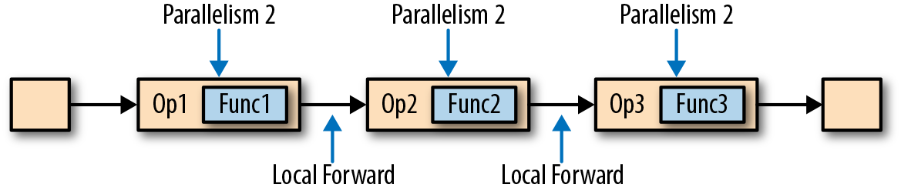
图3-6展示了管道以任务链方式运行的过程。算子的函数被融合成了一个单一的任务，由一个线程执行。由函数生成的数据通过一个简单的方法调用移交给下一个函数；这样在函数之间直接传递数据，基本上没有序列化和通信成本。
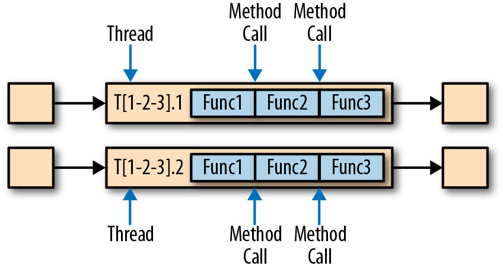
任务链可以显著降低本地任务之间的通信成本，但也有一些场景，在没有链接的情况下运行管道操作是有意义的。例如，如果任务链中某个函数执行的开销巨大，那就可以将一条长的任务链管道断开，或者将一条链断开为两个任务，从而可以将这个开销大的函数调度到不同的槽（slots）中。图3-7显示了在没有任务链的情况下相同管道操作的执行情况。所有函数都由独立的单个任务来评估，每个任务都在专有的线程中运行。

任务链在Flink中默认会启用。在“控制任务链”一节中，我们展示了如何禁用应用程序的任务链，以及如何控制各个算子的链接行为。
事件时间处理
在“时间语义”一节，我们重点强调了时间语义在流处理应用中的重要性，并且解释了处理时间（processing time）和事件时间（event time）的不同。处理时间比较好理解，因为它是基于处理器本地时间的；但同时，它会带来比较混乱、不一致、并且不可重现的结果。相比之下，事件时间语义能够产生可重现且一致的结果，这也是许多流处理场景希望解决的一大难题。但是，与处理时间应用程序相比，事件时间应用程序会更复杂，需要额外的配置。另外，支持事件时间的流处理器，也比纯粹在处理时间中运行的系统内部更为复杂。
Flink为常见的事件时间处理操作提供了直观且易于使用的原语，同时暴露了表达性很强的API，用户可以使用自定义算子实现更高级的事件时间应用程序。很好地理解Flink的内部时间处理，对于实现这样的高级应用程序会有很大帮助，有时也是必需的。上一章介绍了Flink利用两个概念来支持事件时间语义：记录时间戳（timestamps）和水位线（watermarks）。接下来，我们将描述Flink如何在内部实现并处理时间戳和水位线，进而支持具有事件时间语义的流式应用程序。
时间戳
由Flink事件时间流应用程序处理的所有记录都必须伴有时间戳。时间戳将数据与特定时间点相关联，通常就是数据所表示的事件发生的时间点。而只要时间戳大致跟数据流保持一致，基本上随着数据流的前进而增大，应用程序就可以自由选择时间戳的含义。不过正如“时间语义”一节中所讨论的，在现实场景中，时间戳基本上都是乱序的，所以采用“事件时间”而非“处理事件”往往会显得更为重要。
当Flink以事件时间模式处理数据流时，它会根据数据记录的时间戳来处理基于时间的算子。例如，时间窗口算子根据相关时间戳将数据分配给不同的时间窗口。Flink将时间戳编码为16字节的长整型值，并将其作为元数据附加到数据记录中。它的内置运算符会将这个长整型值解释为一个具有毫秒精度的Unix时间戳，也就是1970-01-01-00:00:00.000以来的毫秒数。当然，如果用户进行了自定义，那么运算符可以有自己的解释，例如，可以将精度调整到微秒。
水位线
除了时间戳，基于事件时间的Flink应用程序还必须支持水位线（watermark）。在基于事件时间的应用中，水位线用于生成每个任务的当前事件时间。基于时间的算子使用这个“当前事件时间”来触发计算和处理操作。例如，一个时间窗口任务（time-window task）会在任务的事件时间超出窗口的关闭边界时，完成窗口计算，并输出计算结果。
在Flink中，水位线被实现为一条特殊的数据记录，它里面以长整型值保存了一个时间戳。水位线在带有时间戳的数据流中，跟随着其它数据一起流动，如图3-8所示。

水位线有两个基本属性：
- 必须单调递增，以确保任务的事件时间时钟在向前推进，而不是在后退。
- 它们与数据的时间戳相关。带有时间戳T的水位线表示，所有后续数据的时间戳都应该大于T。
上面的第二个属性用于处理带有乱序时间戳的数据流，比如图3-8中时间戳3和5的数据。基于时间的算子任务会收集和处理数据（这些数据可能具有乱序的时间戳），并在事件时间时钟到达某个时刻时完成计算。这个时刻就表示数据收集的截止，具有之前时间戳的数据应该都已经到达、不再需要了；而其中的事件时间时钟，正是由当前接收到的水位线来指示的。如果任务再接收到的数据违反了watermark的这一属性，也就是时间戳小于以前接收到的水位线时，它所属的那部分计算可能已经完成了。这种数据被称为延迟数据（late records）。Flink提供了处理延迟数据的不同方式，我们会在“处理延迟数据”一节中讨论。
水位线还有一个很有趣的特性，它允许应用程序自己来平衡结果的完整性和延迟。如果水位线与数据的时间戳非常接近，那么我们可以得到较低的处理延迟，因为任务在完成计算之前只会短暂地等待更多数据到达。而同时，结果的完整性可能会受到影响，因为相关数据可能因为迟到而被视为“延迟数据”，这样就不会包含在结果中。相反，非常保守的水位线提供了足够的时间去等待所有数据到达，这样会增加处理延迟，但提高了结果的完整性。
watermark的传递和事件时间
在本节中，我们将讨论算子如何处理水位线。Flink把watermark作为一条特殊的数据来实现，它也会由算子任务接收和发送。任务会有一个内部的时间服务，它会维护定时器，并在收到watermark时触发。任务可以在计时器服务中注册定时器，以便在将来特定的时间点执行计算。例如，窗口算子为每个活动窗口注册一个定时器，当事件时间超过窗口的结束时间时，该计时器将清除窗口的状态。
当任务收到watermark时，将执行以下操作：
- 任务根据watermark的时间戳更新其内部事件时钟。
- 任务的时间服务会将所有过期的计时器标识出来，它们的时间小于当前的事件时间。对于每个过期的计时器，任务调用一个回调函数，该函数可以执行计算并发送结果。
- 任务会发出一个带有更新后的事件时间的watermark。
Flink限制通过DataStream API访问时间戳和watermark。函数不能读取或修改数据的时间戳和watermark，但底层的“处理函数”（process functions）除外，它们可以读取当前处理数据的时间戳、请求算子的当前事件时间，还可以注册定时器。通常的函数都不会暴露这些可以设置时间戳、操作任务事件时间时钟、或者发出水位线的API。而基于时间的数据流算子任务则会配置发送出的数据的时间戳，以确保它们能够与已到达的水位线平齐。例如，窗口计算完成后，时间窗口的算子任务会将窗口的结束时间作为时间戳附加到将要发送出的结果数据上，然后再使用触发窗口计算的时间戳发出watermark。
现在，让我们更详细地解释一下任务在接收到新的watermark时，如何继续发送watermark并更新其事件时钟。正如我们在“数据并发和任务并发”中所了解的，Flink将数据流拆分为多个分区，并通过单独的算子任务并行地处理每个分区。每个分区都是一个流，里面包含了带着时间戳的数据和watermark。一个算子与它前置或后续算子的连接方式有多种情况，所以它对应的任务可以从一个或多个“输入分区”接收数据和watermark，同时也可以将数据和watermark发送到一个或多个“输出分区”。接下来，我们将详细描述一个任务如何向多个输出任务发送watermark，以及如何通过接收到的watermark来驱动事件时间时钟前进。
任务为每个输入分区维护一个分区水位线（watermark）。当从一个分区接收到watermark时，它会比较新接收到的值和当前水位值，然后将相应的分区watermark更新为两者的最大值。然后，任务会比较所有分区watermark的大小，将其事件时钟更新为所有分区watermark的最小值。如果事件时间时钟前进了，任务就将处理所有被触发的定时器操作，并向所有连接的输出分区发送出相应的watermark，最终将新的事件时间广播给所有下游任务。
图3-9显示了具有四个输入分区和三个输出分区的任务如何接收watermark、更新分区watermark和事件时间时钟，以及向下游发出watermark。
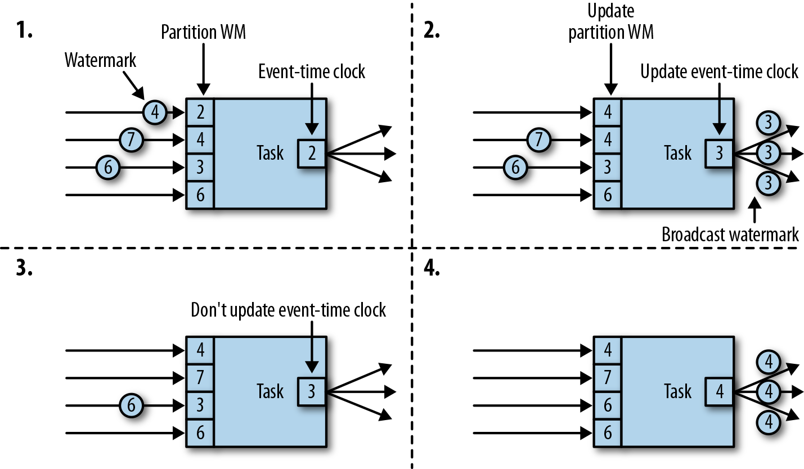
具有两个或多个输入流（如Union或CoFlatMap）的算子任务（参见“多流转换”一节）也会以所有分区watermark的最小值作为事件时间时钟。它们并不区分不同输入流的分区watermark，所以两个输入流的数据都是基于相同的事件时间时钟进行处理的。当然我们可以想到，如果应用程序的各个输入流的事件时间不一致，那么这种处理方式可能会导致问题。
Flink的水位处理和传递算法，确保了算子任务发出的时间戳和watermark是“对齐”的。不过它依赖一个条件，那就是所有分区都会提供不断增长的watermark。一旦一个分区不再推进水位线的上升，或者完全处于空闲状态、不再发送任何数据和watermark，任务的事件时间时钟就将停滞不前，任务的定时器也就无法触发了。对于基于时间的算子来说，它们需要依赖时钟的推进来执行计算和清除状态，这种情况显然就会有问题。如果任务没有定期从所有输入任务接收到新的watermark，那么基于时间的算子的处理延迟和状态空间的大小都会显著增加。
对于具有两个输入流而且watermark明显不同的算子，也会出现类似的情况。具有两个输入流的任务的事件时间时钟，将会同较慢的那条流的watermark保持一致，而通常较快流的数据或者中间结果会在state中缓冲，直到事件时间时钟达到这条流的watermark，才会允许处理它们。
时间戳的分配和水位线的产生
我们已经解释了什么是时间戳和水位线，以及它们是如何由Flink内部处理的；然而我们还没有讨论它们的产生。流应用程序接收到数据流时，通常就会先分配时间戳并生成水位线（watermark）。因为时间戳的选择是由不同的应用程序决定的，而且watermark取决于时间戳和流的特性，所以应用程序必须首先显式地分配时间戳并生成watermark。Flink流应用程序可以通过三种方式分配时间戳和生成watermark：
- 在数据源（source）处分配：当数据流被摄入到应用程序中时，可以由“源函数”SourceFunction分配和生成时间戳和watermark。SourceFunction可以产生并发送一个数据流；数据会与相关的时间戳一起发送出去，而watermark可以作为一条特殊数据在任何时间点发出。如果SourceFunction（暂时）不再发出watermark，它可以声明自己处于“空闲”（idle）状态。Flink会在后续算子的水位计算中，把空闲的SourceFunction产生的流分区排除掉。source的这一空闲机制，可以用来解决前面提到的水位不再上升的问题。源函数（Source Function）在“实现自定义源函数”一节中进行了更详细的讨论。
- 定期分配：在Flink中，DataStream API提供一个名为AssignerWithPeriodicWatermarks的用户定义函数，它可以从每个数据中提取时间戳，并被定期调用以生成当前watermark。提取出的时间戳被分配给相应的数据，而生成的watermark也会添加到流中。这个函数将在“分配时间戳和生成水位线”一节中讨论。
- 间断分配：AssignerWithPunctuatedWatermarks是另一个用户定义的函数，它同样会从每个数据中提取一个时间戳。它可以用于生成特殊输入数据中的watermark。与AssignerWithPeriodicWatermarks相比，此函数可以（但不是必须）从每个记录中提取watermark。我们在“分配时间戳和生成水位线”一节中同样讨论了该函数。
用户定义的时间戳分配函数并没有严格的限制，通常会放在尽可能靠近source算子的位置，因为当经过一些算子处理后，数据及其时间戳的顺序就更加难以解释了。所以尽管我们可以在流应用程序的中段覆盖已有的时间戳和watermark——Flink通过用户定义的函数提供了这种灵活性，但这显然并不是推荐的做法。
状态管理
在第2章中，我们已经知道大多数流应用程序都是有状态的。许多算子会不断地读取和更新状态，例如在窗口中收集的数据、读取输入源的位置，或者像机器学习模型那样的用户定制化的算子状态。 Flink用同样的方式处理所有的状态，无论是内置的还是用户自定义的算子。本节我们将会讨论Flink支持的不同类型的状态，并解释“状态后端”是如何存储和维护状态的。
一般来说，由一个任务维护，并且用来计算某个结果的所有数据，都属于这个任务的状态。你可以认为状态就是一个本地变量，可以被任务的业务逻辑访问。图3-10显示了任务与其状态之间的交互。

任务会接收一些输入数据。在处理数据时，任务可以读取和更新状态，并根据输入数据和状态计算结果。最简单的例子，就是统计接收到多少条数据的任务。当任务收到新数据时，它会访问状态以获取当前的计数，然后让计数递增，更新状态并发送出新的计数。
应用程序里，读取和写入状态的逻辑一般都很简单直接，而有效可靠的状态管理会复杂一些。这包括如何处理很大的状态——可能会超过内存，并且保证在发生故障时不会丢失任何状态。幸运的是，Flink会帮我们处理这相关的所有问题，包括状态一致性、故障处理以及高效存储和访问，以便开发人员可以专注于应用程序的逻辑。
在Flink中，状态始终与特定算子相关联。为了使运行时的Flink了解算子的状态，算子需要预先注册其状态。总的说来，有两种类型的状态：算子状态（operator state）和键控状态（keyed state），它们有着不同的范围访问，我们将在下面展开讨论。
算子状态
算子状态的作用范围限定为算子任务。这意味着由同一并行任务所处理的所有数据都可以访问到相同的状态，状态对于同一任务而言是共享的。算子状态不能由相同或不同算子的另一个任务访问。图3-11显示了任务如何访问算子状态。
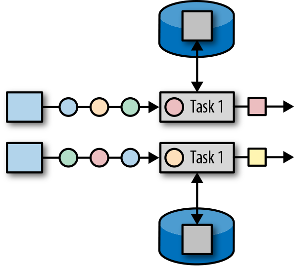
Flink为算子状态提供三种基本数据结构：
列表状态
将状态表示为一组数据的列表。
联合列表状态
也将状态表示为数据的列表。它与常规列表状态的区别在于，在发生故障时，或者从保存点（savepoint）启动应用程序时如何恢复。我们将在后面继续讨论。
广播状态
如果一个算子有多项任务，而它的每项任务状态又都相同，那么这种特殊情况最适合应用广播状态。在保存检查点和重新调整算子并行度时，会用到这个特性。这两部分内容将在本章后面讨论。
键控状态
顾名思义，键控状态是根据输入数据流中定义的键（key）来维护和访问的。Flink为每个键值维护一个状态实例，并将具有相同键的所有数据，都分区到同一个算子任务中，这个任务会维护和处理这个key对应的状态。当任务处理一条数据时，它会自动将状态的访问范围限定为当前数据的key。因此，具有相同key的所有数据都会访问相同的状态。图3-12显示了任务如何与键控状态进行交互。

我们可以将键控状态看成是在算子所有并行任务上，对键进行分区（或分片）之后的一个键值映射（key-value map）。 Flink为键控状态提供不同的数据结构，用于确定map中每个key存储的值的类型。我们简单了解一下最常见的键控状态。
值状态
为每个键存储一个任意类型的单个值。复杂数据结构也可以存储为值状态。
列表状态
为每个键存储一个值的列表。列表里的每个数据可以是任意类型。
映射状态
为每个键存储一个键值映射（map）。map的key和value可以是任意类型。
状态的数据结构可以让Flink实现更有效的状态访问。我们将在“在运行时上下文（RuntimeContext）中声明键控状态”中做进一步讨论。
状态后端
每传入一条数据，有状态的算子任务都会读取和更新状态。由于有效的状态访问对于处理数据的低延迟至关重要，因此每个并行任务都会在本地维护其状态，以确保快速的状态访问。状态到底是如何被存储、访问以及维护的？这件事由一个可插入的组件决定，这个组件就叫做状态后端（state backend）。状态后端主要负责两件事：本地的状态管理，以及将检查点（checkpoint）状态写入远程存储。
对于本地状态管理，状态后端会存储所有键控状态，并确保所有的访问都被正确地限定在当前键范围。 Flink提供了默认的状态后端，会将键控状态作为内存中的对象进行管理，将它们存储在JVM堆上。另一种状态后端则会把状态对象进行序列化，并将它们放入RocksDB中，然后写入本地硬盘。第一种方式可以提供非常快速的状态访问，但它受内存大小的限制；而访问RocksDB状态后端存储的状态速度会较慢，但其状态可以增长到非常大。
状态检查点的写入也非常重要，这是因为Flink是一个分布式系统，而状态只能在本地维护。 TaskManager进程（所有任务在其上运行）可能在任何时间点挂掉。因此，它的本地存储只能被认为是不稳定的。状态后端负责将任务的状态检查点写入远程的持久存储。写入检查点的远程存储可以是分布式文件系统，也可以是数据库。不同的状态后端在状态检查点的写入机制方面有所不同。例如，RocksDB状态后端支持增量的检查点，这对于非常大的状态来说，可以显著减少状态检查点写入的开销。
我们将在“选择状态后端”一节中更详细地讨论不同的状态后端及其优缺点。
调整有状态算子的并行度
流应用程序的一个常见要求是，为了增大或较小输入数据的速率，需要灵活地调整算子的并行度。对于无状态算子而言，并行度的调整没有任何问题，但更改有状态算子的并行度显然就没那么简单了，因为它们的状态需要重新分区并分配给更多或更少的并行任务。 Flink支持四种模式来调整不同类型的状态。
具有键控状态的算子通过将键重新分区为更少或更多任务来缩放并行度。不过，并行度调整时任务之间会有一些必要的状态转移。为了提高效率，Flink并不会对单独的key做重新分配，而是用所谓的“键组”（key group）把键管理起来。键组是key的分区形式，同时也是Flink为任务分配key的方式。图3-13显示了如何在键组中重新分配键控状态。

具有算子列表状态的算子，会通过重新分配列表中的数据项目来进行并行度缩放。从概念上讲，所有并行算子任务的列表项目会被收集起来，并将其均匀地重新分配给更少或更多的任务。如果列表条目少于算子的新并行度，则某些任务将以空状态开始。图3-14显示了算子列表状态的重新分配。

具有算子联合列表状态的算子，会通过向每个任务广播状态的完整列表，来进行并行度的缩放。然后，任务可以选择要使用的状态项和要丢弃的状态项。图3-15显示了如何重新分配算子联合列表状态。

具有算子广播状态的算子，通过将状态复制到新任务，来增大任务的并行度。这是没问题的，因为广播状态保证了所有任务都具有相同的状态。而对于缩小并行度的情况，我们可以直接取消剩余任务，因为状态是相同的，已经被复制并且不会丢失。图3-16显示了算子广播状态的重新分配。

检查点，保存点和状态恢复
Flink是一个分布式数据处理系统，因此必须有一套机制处理各种故障，比如被杀掉的进程，故障的机器和中断的网络连接。任务都是在本地维护状态的，所以Flink必须确保状态不会丢失，并且在发生故障时能够保持一致。
在本节中，我们将介绍Flink的检查点（checkpoint）和恢复机制，这保证了“精确一次”（exactly-once）的状态一致性。我们还会讨论Flink独特的保存点（savepoint）功能，这是一个“瑞士军刀”式的工具，可以解决许多操作数据流时面对的问题。
一致的检查点
Flink的恢复机制的核心，就是应用状态的一致检查点。有状态流应用的一致检查点，其实就是所有任务状态在某个时间点的一份拷贝，而这个时间点应该是所有任务都恰好处理完一个相同的输入数据的时候。这个过程可以通过一致检查点的一个简单算法步骤来解释。这个算法的步骤是：
- 暂停所有输入流的摄取，也就是不再接收新数据的输入。
- 等待所有正在处理的数据计算完毕，这意味着结束时，所有任务都已经处理了所有输入数据。
- 通过将每个任务的状态复制到远程持久存储，来得到一个检查点。所有任务完成拷贝操作后，检查点就完成了。
- 恢复所有输入流的摄取。
需要注意，Flink实现的并不是这种简单的机制。我们将在本节后面介绍Flink更精妙的检查点算法。
图3-17显示了一个简单应用中的一致检查点。

上面的应用程序中具有单一的输入源（source）任务，输入数据就是一组不断增长的数字的流——1,2,3等。数字流被划分为偶数流和奇数流。求和算子（sum）的两个任务会分别实时计算当前所有偶数和奇数的总和。源任务会将其输入流的当前偏移量存储为状态，而求和任务则将当前的总和值存储为状态。在图3-17中，Flink在输入偏移量为5时，将检查点写入了远程存储，当前的总和为6和9。
从一致检查点中恢复状态
在执行流应用程序期间，Flink会定期检查状态的一致检查点。如果发生故障，Flink将会使用最近的检查点来一致恢复应用程序的状态，并重新启动处理流程。图3-18显示了恢复过程。
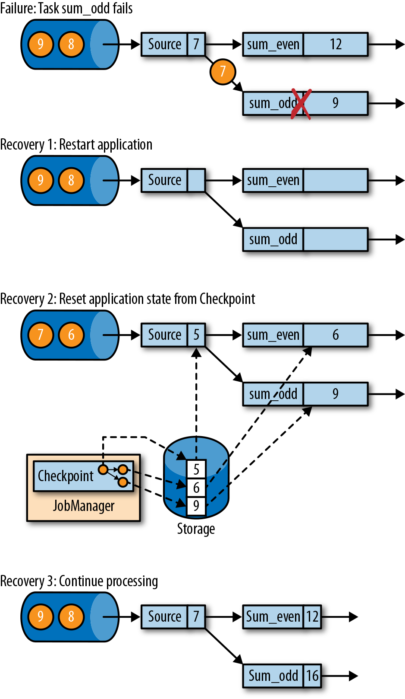
应用程序从检查点的恢复分为三步：
- 重新启动整个应用程序。
- 将所有的有状态任务的状态重置为最近一次的检查点。
- 恢复所有任务的处理。
这种检查点的保存和恢复机制可以为应用程序状态提供“精确一次”（exactly-once）的一致性，因为所有算子都会保存检查点并恢复其所有状态，这样一来所有的输入流就都会被重置到检查点完成时的位置。至于数据源是否可以重置它的输入流，这取决于其实现方式和消费流数据的外部接口。例如，像Apache Kafka这样的事件日志系统可以提供流上之前偏移位置的数据，所以我们可以将源重置到之前的偏移量，重新消费数据。而从套接字（socket）消费数据的流就不能被重置了，因为套接字的数据一旦被消费就会丢弃掉。因此，对于应用程序而言，只有当所有的输入流消费的都是可重置的数据源时，才能确保在“精确一次”的状态一致性下运行。
从检查点重新启动应用程序后，其内部状态与检查点完成时的状态完全相同。然后它就会开始消费并处理检查点和发生故障之间的所有数据。尽管这意味着Flink会对一些数据处理两次（在故障之前和之后），我们仍然可以说这个机制实现了精确一次的一致性语义，因为所有算子的状态都已被重置，而重置后的状态下还不曾看到这些数据。
我们必须指出，Flink的检查点保存和恢复机制仅仅可以重置流应用程序的内部状态。对于应用中的一些的输出（sink）算子，在恢复期间，某些结果数据可能会多次发送到下游系统，比如事件日志、文件系统或数据库。对于某些存储系统，Flink提供了具有精确一次输出功能的sink函数，比如，可以在检查点完成时提交发出的记录。另一种适用于许多存储系统的方法是幂等更新。在“应用程序一致性保证”一节中，我们还会详细讨论如何解决应用程序端到端的精确一次一致性问题。
Flink的检查点算法
Flink的恢复机制，基于它的一致性检查点。前面我们已经了解了从流应用中创建检查点的简单方法——先暂停应用，保存检查点，然后再恢复应用程序，这种方法很好理解，但它的理念是“停止一切”，这对于即使是中等延迟要求的应用程序而言也是不实用的。所以Flink没有这么简单粗暴，而是基于Chandy-Lamport算法实现了分布式快照的检查点保存。该算法并不会暂停整个应用程序，而是将检查点的保存与数据处理分离，这样就可以实现在其它任务做检查点状态保存状态时，让某些任务继续进行而不受影响。接下来我们将解释此算法的工作原理。
Flink的检查点算法用到了一种称为“检查点分界线”（checkpoint barrier）的特殊数据形式。与水位线（watermark）类似，检查点分界线由source算子注入到常规的数据流中，它的位置是限定好的，不能超过其他数据，也不能被后面的数据超过。检查点分界线带有检查点ID，用来标识它所属的检查点；这样，这个分界线就将一条流逻辑上分成了两部分。分界线之前到来的数据导致的状态更改，都会被包含在当前分界线所属的检查点中；而基于分界线之后的数据导致的所有更改，就会被包含在之后的检查点中。
我们用一个简单的流应用程序作为示例，来一步一步解释这个算法。该应用程序有两个源（source）任务，每个任务都消费一个增长的数字流。源任务的输出被划分为两部分：偶数和奇数的流。每个分区由一个任务处理，该任务计算所有收到的数字的总和，并将更新的总和转发给输出（sink）任务。这个应用程序的结构如图3-19所示。

作业管理器会向每个数据源（source）任务发送一条带有新检查点ID的消息，通过这种方式来启动检查点，如图3-20所示。
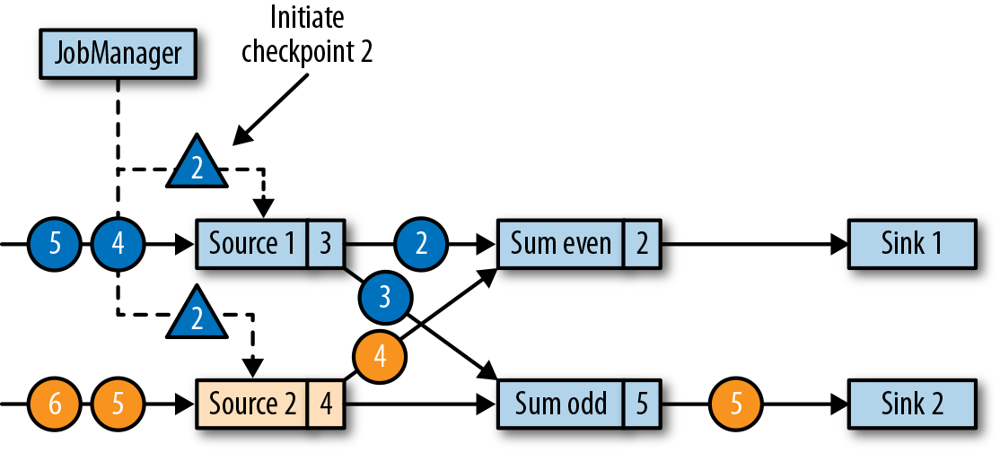
当source任务收到消息时，它会暂停发出新的数据，在状态后端触发本地状态的检查点保存，并向所有传出的流分区广播带着检查点ID的分界线（barriers）。状态后端在状态检查点完成后会通知任务，而任务会向作业管理器确认检查点完成。在发出所有分界线后，source任务就可以继续常规操作，发出新的数据了。通过将分界线注入到输出流中，源函数（source function）定义了检查点在流中所处的位置。图3-21显示了两个源任务将本地状态保存到检查点，并发出检查点分界线之后的流应用程序。

源任务发出的检查点分界线（barrier），将被传递给所连接的任务。与水位线（watermark）类似，barrier会被广播到所有连接的并行任务，以确保每个任务从它的每个输入流中都能接收到。当任务收到一个新检查点的barrier时，它会等待这个检查点的所有输入分区的barrier到达。在等待的过程中，任务并不会闲着，而是会继续处理尚未提供barrier的流分区中的数据。对于那些barrier已经到达的分区，如果继续有新的数据到达，它们就不会被立即处理，而是先缓存起来。这个等待所有分界线到达的过程，称为“分界线对齐”（barrier alignment），如图3-22所示。
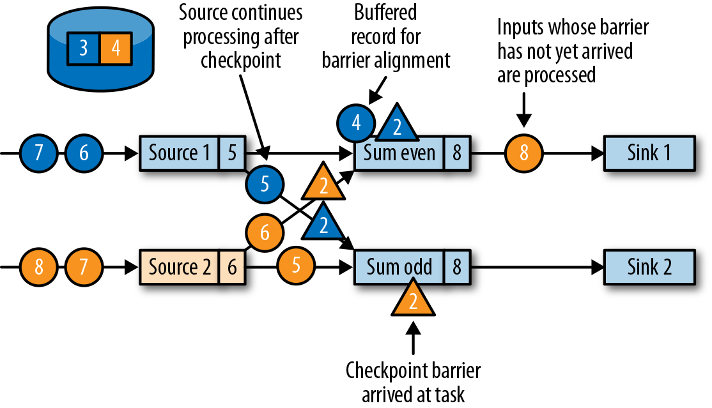
当任务从所有输入分区都收到barrier时，它就会在状态后端启动一个检查点的保存，并继续向所有下游连接的任务广播检查点分界线，如图3-23所示。

所有的检查点barrier都发出后，任务就开始处理之前缓冲的数据。在处理并发出所有缓冲数据之后，任务就可以继续正常处理输入流了。图3-24显示了此时的应用程序。

最终，检查点分界线会到达输出（sink）任务。当sink任务接收到barrier时，它也会先执行“分界线对齐”，然后将自己的状态保存到检查点，并向作业管理器确认已接收到barrier。一旦从应用程序的所有任务收到一个检查点的确认信息，作业管理器就会将这个检查点记录为已完成。图3-25显示了检查点算法的最后一步。这样，当发生故障时，我们就可以用已完成的检查点恢复应用程序了。

检查点的性能影响
Flink的检查点算法可以在不停止整个应用程序的情况下，生成一致的分布式检查点。但是，它可能会增加应用程序的处理延迟。Flink对此有一些调整措施，可以在某些场景下显得对性能的影响没那么大。
当任务将其状态保存到检查点时，它其实处于一个阻塞状态，而此时新的输入会被缓存起来。由于状态可能变得非常大，而且检查点需要通过网络将数据写入远程存储系统，检查点的写入很容易就会花费几秒到几分钟的时间——这对于要求低延迟的应用程序而言，显然是不可接受的。在Flink的设计中，真正负责执行检查点写入的，其实是状态后端。具体怎样复制任务的状态，取决于状态后端的实现方式。例如，文件系统（FileSystem）状态后端和RocksDB状态后端都支持了异步（asynchronous）检查点。触发检查点操作时，状态后端会先创建状态的本地副本。本地拷贝完成后，任务就将继续常规的数据处理，这往往并不会花费太多时间。一个后台线程会将本地快照异步复制到远程存储，并在完成检查点后再回来通知任务。异步检查点的机制，显著减少了任务继续处理数据之前的等待时间。此外，RocksDB状态后端还实现了增量的检查点，这样可以大大减少要传输的数据量。
为了减少检查点算法对处理延迟的影响，另一种技术是调整分界线对齐的步骤。对于需要非常低的延迟、并且可以容忍“至少一次”（at-least-once）状态保证的应用程序，Flink可以将检查点算法配置为，在等待barrier对齐期间处理所有到达的数据，而不是把barrier已经到达的那些分区的数据缓存起来。当检查点的所有barrier到达，算子任务就会将状态写入检查点——当然，现在的状态中，就可能包括了一些“提前”的更改，这些更改由本该属于下一个检查点的数据到来时触发。如果发生故障，从检查点恢复时，就将再次处理这些数据：这意味着检查点现在提供的是“至少一次”（at-least-once）而不是“精确一次”（exactly-once）的一致性保证。
保存点
Flink的恢复算法是基于状态检查点的。Flink根据可配置的策略，定期保存并自动丢弃检查点。检查点的目的是确保在发生故障时可以重新启动应用程序，所以当应用程序被显式地撤销（cancel）时，检查点会被删除掉。除此之外，应用程序状态的一致性快照还可用于除故障恢复之外的更多功能。
Flink中一个最有价值，也是最独特的功能是保存点（savepoints）。原则上，创建保存点使用的算法与检查点完全相同，因此保存点可以认为就是具有一些额外元数据的检查点。 Flink不会自动创建保存点，因此用户（或者外部调度程序）必须明确地触发创建操作。同样，Flink也不会自动清理保存点。第10章将会具体介绍如何触发和处理保存点。
使用保存点
有了应用程序和与之兼容的保存点，我们就可以从保存点启动应用程序了。这会将应用程序的状态初始化为保存点的状态，并从保存点创建时的状态开始运行应用程序。虽然看起来这种行为似乎与用检查点从故障中恢复应用程序完全相同，但实际上故障恢复只是一种特殊情况，它只是在相同的集群上以相同的配置启动相同的应用程序。而从保存点启动应用程序会更加灵活，这就可以让我们做更多事情了。
- 可以从保存点启动不同但兼容的应用程序。这样一来，我们就可以及时修复应用程序中的逻辑bug，并让流式应用的源尽可能多地提供之前发生的事件，然后重新处理，以便修复之前的计算结果。修改后的应用程序还可用于运行A / B测试，或者具有不同业务逻辑的假设场景。这里要注意，应用程序和保存点必须兼容才可以这么做——也就是说，应用程序必须能够加载保存点的状态。
- 可以使用不同的并行度来启动相同的应用程序，可以将应用程序的并行度增大或减小。
- 可以在不同的集群上启动同样的应用程序。这非常有意义，意味着我们可以将应用程序迁移到较新的Flink版本或不同的集群上去。
- 可以使用保存点暂停应用程序，稍后再恢复。这样做的意义在于，可以为更高优先级的应用程序释放集群资源，或者在输入数据不连续生成时释放集群资源。
- 还可以将保存点设置为某一版本，并归档（archive）存储应用程序的状态。
保存点是非常强大的功能，所以许多用户会定期创建保存点以便能够及时退回之前的状态。我们见到的各种场景中，保存点一个最有趣的应用是不断将流应用程序迁移到更便宜的数据中心上去。
从保存点启动应用程序
前面提到的保存点的所有用例，都遵循相同的模式。那就是首先创建正在运行的应用程序的保存点，然后在一个新启动的应用程序中用它来恢复状态。之前我们已经知道，保存点的创建和检查点非常相似，而接下来我们就将介绍对于一个从保存点启动的应用程序，Flink如何初始化其状态。
应用程序由多个算子组成。每个算子可以定义一个或多个键控状态和算子状态。算子由一个或多个算子任务并行执行。因此，一个典型的应用程序会包含多个状态，这些状态分布在多个算子任务中，这些任务可以运行在不同的TaskManager进程上。
图3-26显示了一个具有三个算子的应用程序，每个算子执行两个算子任务。一个算子（OP-1）具有单一的算子状态（OS-1），而另一个算子（OP-2）具有两个键控状态（KS-1和KS-2）。当保存点创建时，会将所有任务的状态复制到持久化的存储位置。
保存点中的状态拷贝会以算子标识符（operator ID）和状态名称（state name）组织起来。算子ID和状态名称必须能够将保存点的状态数据，映射到一个正在启动的应用程序的算子状态。从保存点启动应用程序时，Flink会将保存点的数据重新分配给相应的算子任务。
请注意，保存点不包含有关算子任务的信息。这是因为当应用程序以不同的并行度启动时，任务数量可能会更改。
如果我们要从保存点启动一个修改过的应用程序，那么保存点中的状态只能映射到符合标准的应用程序——它里面的算子必须具有相应的ID和状态名称。默认情况下，Flink会自动分配唯一的算子ID。然而，一个算子的ID，是基于它之前算子的ID确定性地生成的。因此，算子的ID会在其前序算子改变时改变，比如，当我们添加了新的或移除掉一个算子时，前序算子ID改变，当前算子ID就会变化。所以对于具有默认算子ID的应用程序而言，如果想在不丢失状态的前提下升级，就会受到极大的限制。因此，我们强烈建议在程序中为算子手动分配唯一ID，而不是依靠Flink的默认分配。我们将在“指定唯一的算子标识符”一节中详细说明如何分配算子标识符。
第四章，编写第一个Flink程序
在IDEA中编写Flink程序
Scala版Flink程序编写
本项目使用的Flink版本为最新版本，也就是1.11.0。现在提供maven项目的配置文件。
- 使用Intellij IDEA创建一个Maven新项目
- 勾选
Create from archetype，然后点击Add Archetype按钮 GroupId中输入org.apache.flink，ArtifactId中输入flink-quickstart-scala，Version中输入1.11.0，然后点击OK- 点击向右箭头，出现下拉列表，选中
flink-quickstart-scala:1.11.0，点击Next Name中输入FlinkTutorial，GroupId中输入com.atguigu，ArtifactId中输入FlinkTutorial，点击Next- 最好使用IDEA默认的Maven工具：Bundled（Maven 3），点击
Finish，等待一会儿，项目就创建好了
编写WordCount.scala程序
import org.apache.flink.streaming.api.scala._
import org.apache.flink.streaming.api.windowing.time.Time
object StreamingJob {
/** Main program method */
def main(args: Array[String]) : Unit = {
// get the execution environment
StreamExecutionEnvironment env: StreamExecutionEnvironment = StreamExecutionEnvironment
.getExecutionEnvironment
// get input data by connecting to the socket
val text: DataStream[String] = env
.socketTextStream("localhost", 9999, '\n')
// parse the data, group it, window it, and aggregate the counts
val windowCounts = text
.flatMap { w => w.split("\\s") }
.map { w => WordWithCount(w, 1) }
.keyBy("word")
.timeWindow(Time.seconds(5))
.sum("count")
// print the results with a single thread, rather than in parallel
windowCounts
.print()
.setParallelism(1)
env.execute("Socket Window WordCount")
}
/** Data type for words with count */
case class WordWithCount(word: String, count: Long)
}
打开一个终端（Terminal），运行以下命令
$ nc -lk 9999
接下来使用IDEA运行就可以了。
Java版Flink程序编写
- 使用Intellij IDEA创建一个Maven新项目
- 勾选
Create from archetype，然后点击Add Archetype按钮 GroupId中输入org.apache.flink，ArtifactId中输入flink-quickstart-java，Version中输入1.11.0，然后点击OK- 点击向右箭头，出现下拉列表，选中
flink-quickstart-java:1.11.0，点击Next Name中输入FlinkTutorial，GroupId中输入com.atguigu，ArtifactId中输入FlinkTutorial，点击Next- 最好使用IDEA默认的Maven工具：Bundled（Maven 3），点击
Finish，等待一会儿，项目就创建好了
编写WordCount.java程序
import org.apache.flink.api.common.functions.FlatMapFunction;
import org.apache.flink.api.java.tuple.Tuple2;
import org.apache.flink.streaming.api.datastream.DataStream;
import org.apache.flink.streaming.api.environment.StreamExecutionEnvironment;
import org.apache.flink.util.Collector;
public class WordCountFromSocket {
public static void main(String[] args) throws Exception {
final StreamExecutionEnvironment env = StreamExecutionEnvironment.getExecutionEnvironment();
env.setParallelism(1);
DataStream<String> stream = env.socketTextStream("localhost", 9999);
stream.flatMap(new Tokenizer()).keyBy(r -> r.f0).sum(1).print();
env.execute("Flink Streaming Java API Skeleton");
}
public static class Tokenizer implements FlatMapFunction<String, Tuple2<String, Integer>> {
@Override
public void flatMap(String value, Collector<Tuple2<String, Integer>> out) throws Exception {
String[] stringList = value.split("\\s");
for (String s : stringList) {
// 使用out.collect方法向下游发送数据
out.collect(new Tuple2(s, 1));
}
}
}
}
下载Flink运行时环境，提交Jar包的运行方式
下载链接：http://mirror.bit.edu.cn/apache/flink/flink-1.11.1/flink-1.11.1-bin-scala_2.11.tgz
然后解压
$ tar xvfz flink-1.11.1-bin-scala_2.11.tgz
启动Flink集群
$ cd flink-1.11.1
$ ./bin/start-cluster.sh
可以打开Flink WebUI查看集群状态：http://localhost:8081
在IDEA中使用maven package打包。
提交打包好的JAR包
$ cd flink-1.11.1
$ ./bin/flink run 打包好的JAR包的绝对路径
停止Flink集群
$ ./bin/stop-cluster.sh
查看标准输出日志的位置，在log文件夹中。
$ cd flink-1.11.1/log
第五章，Flink DataStream API
本章介绍了Flink DataStream API的基本知识。我们展示了典型的Flink流处理程序的结构和组成部分，还讨论了Flink的类型系统以及支持的数据类型，还展示了数据和分区转换操作。窗口操作符，基于时间语义的转换操作，有状态的操作符，以及和外部系统的连接器将在接下来的章节进行介绍。阅读完这一章后，我们将会知道如何去实现一个具有基本功能的流处理程序。我们的示例程序采用Scala语言，因为Scala语言相对比较简洁。但Java API也是十分类似的（特殊情况，我们将会指出）。在我们的Github仓库里，我们所写的应用程序具有Scala和Java两种版本。
你好，Flink！
让我们写一个简单的例子来获得使用DataStream API编写流处理应用程序的粗浅印象。我们将使用这个简单的示例来展示一个Flink程序的基本结构，以及介绍一些DataStream API的重要特性。我们的示例程序摄取了一条（来自多个传感器的）温度测量数据流。
首先让我们看一下表示传感器读数的数据结构：
scala version
case class SensorReading(id: String, timestamp: Long, temperature: Double)
java version
public class SensorReading {
public String id;
public long timestamp;
public double temperature;
public SensorReading() { }
public SensorReading(String id, long timestamp, double temperature) {
this.id = id;
this.timestamp = timestamp;
this.temperature = temperature;
}
public String toString() {
return "(" + this.id + ", " + this.timestamp + ", " + this.temperature + ")";
}
}
示例程序5-1将温度从华氏温度读数转换成摄氏温度读数，然后针对每一个传感器，每5秒钟计算一次平均温度纸。
scala version
object AverageSensorReadings {
def main(args: Array[String]) {
// 创建运行时环境
val env = StreamExecutionEnvironment.getExecutionEnvironment
// 使用事件时间
env.setStreamTimeCharacteristic(TimeCharacteristic.EventTime)
val sensorData: DataStream[SensorReading] = env.addSource(new SensorSource)
val avgTemp = sensorData
.map(r => {
val celsius = (r.temperature - 32) * (5.0 / 9.0)
SensorReading(r.id, r.timestamp, celsius)
})
.keyBy(_.id)
.timeWindow(Time.seconds(5))
.apply(new TemperatureAverager)
avgTemp.print()
env.execute("Compute average sensor temperature")
}
}
java version
public class AverageSensorReadings {
public static void main(String[] args) throws Exception {
final StreamExecutionEnvironment env = StreamExecutionEnvironment.getExecutionEnvironment();
env.setStreamTimeCharacteristic(TimeCharacteristic.EventTime);
DataStream<SensorReading> sensorData = env.addSource(new SensorSource());
DataStream<T> avgTemp = sensorData
.map(r -> {
Double celsius = (r.temperature - 32) * (5.0 / 9.0);
return SensorReading(r.id, r.timestamp, celsius);
})
.keyBy(r -> r.id)
.timeWindow(Time.seconds(5))
.apply(new TemperatureAverager());
avgTemp.print();
env.execute("Compute average sensor temperature");
}
}
你可能已经注意到Flink程序的定义和提交执行使用的就是正常的Scala或者Java的方法。大多数情况下，这些代码都写在一个静态main方法中。在我们的例子中，我们定义了AverageSensorReadings对象，然后将大多数的应用程序逻辑放在了main()中。
Flink流处理程序的结构如下：
- 创建Flink程序执行环境。
- 从数据源读取一条或者多条流数据
- 使用流转换算子实现业务逻辑
- 将计算结果输出到一个或者多个外部设备（可选）
- 执行程序
接下来我们详细的学习一下这些部分。
搭建执行环境
编写Flink程序的第一件事情就是搭建执行环境。执行环境决定了程序是运行在单机上还是集群上。在DataStream API中，程序的执行环境是由StreamExecutionEnvironment设置的。在我们的例子中，我们通过调用静态getExecutionEnvironment()方法来获取执行环境。这个方法根据调用方法的上下文，返回一个本地的或者远程的环境。如果这个方法是一个客户端提交到远程集群的代码调用的，那么这个方法将会返回一个远程的执行环境。否则，将返回本地执行环境。
也可以用下面的方法来显式的创建本地或者远程执行环境：
scala version
// create a local stream execution environment
val localEnv = StreamExecutionEnvironment
.createLocalEnvironment()
// create a remote stream execution environment
val remoteEnv = StreamExecutionEnvironment
.createRemoteEnvironment(
"host", // hostname of JobManager
1234, // port of JobManager process
"path/to/jarFile.jar"
) // JAR file to ship to the JobManager
java version
StreamExecutionEnvironment localEnv = StreamExecutionEnvironment
.createLocalEnvironment();
StreamExecutionEnvironment remoteEnv = StreamExecutionEnvironment
.createRemoteEnvironment(
"host", // hostname of JobManager
1234, // port of JobManager process
"path/to/jarFile.jar"
); // JAR file to ship to the JobManager
接下来，我们使用env.setStreamTimeCharacteristic(TimeCharacteristic.EventTime)来将我们程序的时间语义设置为事件时间。执行环境提供了很多配置选项，例如：设置程序的并行度和程序是否开启容错机制。
读取输入流
一旦执行环境设置好，就该写业务逻辑了。StreamExecutionEnvironment提供了创建数据源的方法，这些方法可以从数据流中将数据摄取到程序中。数据流可以来自消息队列或者文件系统，也可能是实时产生的（例如socket）。
在我们的例子里面，我们这样写：
scala version
val sensorData: DataStream[SensorReading] = env
.addSource(new SensorSource)
java version
DataStream<SensorReading> sensorData = env
.addSource(new SensorSource());
这样就可以连接到传感器测量数据的数据源并创建一个类型为SensorReading的DataStream了。Flink支持很多数据类型，我们将在接下来的章节里面讲解。在我们的例子里面，我们的数据类型是一个定义好的Scala样例类。SensorReading样例类包含了传感器ID，数据的测量时间戳，以及测量温度值。assignTimestampsAndWatermarks(new SensorTimeAssigner)方法指定了如何设置事件时间语义的时间戳和水位线。有关SensorTimeAssigner我们后面再讲。
转换算子的使用
一旦我们有一条DataStream，我们就可以在这条数据流上面使用转换算子了。转换算子有很多种。一些转换算子可以产生一条新的DataStream，当然这个DataStream的类型可能是新类型。还有一些转换算子不会改变原有DataStream的数据，但会将数据流分区或者分组。业务逻辑就是由转换算子串起来组合而成的。
在我们的例子中，我们首先使用map()转换算子将传感器的温度值转换成了摄氏温度单位。然后，我们使用keyBy()转换算子将传感器读数流按照传感器ID进行分区。接下来，我们定义了一个timeWindow()转换算子，这个算子将每个传感器ID所对应的分区的传感器读数分配到了5秒钟的滚动窗口中。
scala version
val avgTemp = sensorData
.map(r => {
val celsius = (r.temperature - 32) * (5.0 / 9.0)
SensorReading(r.id, r.timestamp, celsius)
})
.keyBy(_.id)
.timeWindow(Time.seconds(5))
.apply(new TemperatureAverager)
java version
DataStream<T> avgTemp = sensorData
.map(r -> {
Double celsius = (r.temperature -32) * (5.0 / 9.0);
return SensorReading(r.id, r.timestamp, celsius);
})
.keyBy(r -> r.id)
.timeWindow(Time.seconds(5))
.apply(new TemperatureAverager());
窗口转换算子将在“窗口操作符”一章中讲解。最后，我们使用了一个UDF函数来计算每个窗口的温度的平均值。我们稍后将会讨论UDF函数的实现。
输出结果
流处理程序经常将它们的计算结果发送到一些外部系统中去，例如：Apache Kafka，文件系统，或者数据库中。Flink提供了一个维护的很好的sink算子的集合，这些sink算子可以用来将数据写入到不同的系统中去。我们也可以实现自己的sink算子。也有一些Flink程序并不会向第三方外部系统发送数据，而是将数据存储到Flink系统内部，然后可以使用Flink的可查询状态的特性来查询数据。
在我们的例子中，计算结果是一个DataStream[SensorReading]数据记录。每一条数据记录包含了一个传感器在5秒钟的周期里面的平均温度。计算结果组成的数据流将会调用print()将计算结果写到标准输出。
avgTemp.print()
要注意一点，流的Sink算子的选择将会影响应用程序端到端(
end-to-end)的一致性，具体就是应用程序的计算提供的到底是at-least-once还是exactly-once的一致性语义。应用程序端到端的一致性依赖于所选择的流的Sink算子和Flink的检查点算法的集成使用。
执行
当应用程序完全写好时，我们可以调用StreamExecutionEnvironment.execute()来执行应用程序。在我们的例子中就是我们的最后一行调用：
env.execute("Compute average sensor temperature")
Flink程序是惰性执行的。也就是说创建数据源和转换算子的API调用并不会立刻触发任何数据处理逻辑。API调用仅仅是在执行环境中构建了一个执行计划，这个执行计划包含了执行环境创建的数据源和所有的将要用在数据源上的转换算子。只有当execute()被调用时，系统才会触发程序的执行。
构建好的执行计划将被翻译成一个JobGraph并提交到JobManager上面去执行。根据执行环境的种类，一个JobManager将会运行在一个本地线程中（如果是本地执行环境的化）或者JobGraph将会被发送到一个远程的JobManager上面去。如果JobManager远程运行，那么JobGraph必须和一个包含有所有类和应用程序的依赖的JAR包一起发送到远程JobManager。
产生传感器读数代码编写
从批读取数据
scala version
val stream = env
.fromElements(
SensorReading("sensor_1", 1547718199, 35.80018327300259),
SensorReading("sensor_6", 1547718199, 15.402984393403084),
SensorReading("sensor_7", 1547718199, 6.720945201171228),
SensorReading("sensor_10", 1547718199, 38.101067604893444)
)
java version
DataStream<SensorReading> stream = env
.fromElements(
new SensorReading("sensor_1", 1547718199, 35.80018327300259),
new SensorReading("sensor_6", 1547718199, 15.402984393403084),
new SensorReading("sensor_7", 1547718199, 6.720945201171228),
new SensorReading("sensor_10", 1547718199, 38.101067604893444)
)
从文件读取数据
scala version
val stream = env.readTextFile(filePath)
java version
DataStream<String> stream = env.readTextFile(filePath);
以Kafka消息队列的数据为数据来源
scala version
val properties = new Properties()
properties.setProperty("bootstrap.servers", "localhost:9092")
properties.setProperty("group.id", "consumer-group")
properties.setProperty(
"key.deserializer",
"org.apache.kafka.common.serialization.StringDeserializer"
)
properties.setProperty(
"value.deserializer",
"org.apache.kafka.common.serialization.StringDeserializer"
)
properties.setProperty("auto.offset.reset", "latest")
val env = StreamExecutionEnvironment.getExecutionEnvironment
env.setStreamTimeCharacteristic(TimeCharacteristic.EventTime)
env.setParallelism(1)
val stream = env
// source为来自Kafka的数据，这里我们实例化一个消费者，topic为hotitems
.addSource(
new FlinkKafkaConsumer011[String](
"hotitems",
new SimpleStringSchema(),
properties
)
)
java version
Properties properties = new Properties();
properties.setProperty("bootstrap.servers", "localhost:9092");
properties.setProperty("group.id", "consumer-group");
properties.setProperty(
"key.deserializer",
"org.apache.kafka.common.serialization.StringDeserializer"
);
properties.setProperty(
"value.deserializer",
"org.apache.kafka.common.serialization.StringDeserializer"
);
properties.setProperty("auto.offset.reset", "latest");
StreamExecutionEnvironment env = StreamExecutionEnvironment.getExecutionEnvironment;
env.setStreamTimeCharacteristic(TimeCharacteristic.EventTime);
env.setParallelism(1);
DataStream<String> stream = env
// source为来自Kafka的数据，这里我们实例化一个消费者，topic为hotitems
.addSource(
new FlinkKafkaConsumer011<String>(
"hotitems",
new SimpleStringSchema(),
properties
)
);
自定义数据源
scala version
import java.util.Calendar
import org.apache.flink.streaming.api.functions.source.SourceFunction.SourceContext
import org.apache.flink.streaming.api.functions.source.{RichParallelSourceFunction, SourceFunction}
import scala.util.Random
// 泛型是`SensorReading`，表明产生的流中的事件的类型是`SensorReading`
class SensorSource extends RichParallelSourceFunction[SensorReading] {
// 表示数据源是否正常运行
var running: Boolean = true
// 上下文参数用来发出数据
override def run(ctx: SourceContext[SensorReading]): Unit = {
val rand = new Random
var curFTemp = (1 to 10).map(
// 使用高斯噪声产生随机温度值
i => ("sensor_" + i, (rand.nextGaussian() * 20))
)
// 产生无限数据流
while (running) {
curFTemp = curFTemp.map(
t => (t._1, t._2 + (rand.nextGaussian() * 0.5))
)
// 产生ms为单位的时间戳
val curTime = Calendar.getInstance.getTimeInMillis
// 使用ctx参数的collect方法发射传感器数据
curFTemp.foreach(t => ctx.collect(SensorReading(t._1, curTime, t._2)))
// 每隔100ms发送一条传感器数据
Thread.sleep(1000)
}
}
// 定义当取消flink任务时，需要关闭数据源
override def cancel(): Unit = running = false
}
使用方法
val sensorData = env.addSource(new SensorSource)
java version
import org.apache.flink.streaming.api.functions.source.RichParallelSourceFunction;
import java.util.Calendar;
import java.util.Random;
public class SensorSource extends RichParallelSourceFunction<SensorReading> {
private boolean running = true;
@Override
public void run(SourceContext<SensorReading> srcCtx) throws Exception {
Random rand = new Random();
String[] sensorIds = new String[10];
double[] curFTemp = new double[10];
for (int i = 0; i < 10; i++) {
sensorIds[i] = "sensor_" + i;
curFTemp[i] = 65 + (rand.nextGaussian() * 20);
}
while (running) {
long curTime = Calendar.getInstance().getTimeInMillis();
for (int i = 0; i < 10; i++) {
curFTemp[i] += rand.nextGaussian() * 0.5;
srcCtx.collect(new SensorReading(sensorIds[i], curTime, curFTemp[i]));
}
Thread.sleep(100);
}
}
@Override
public void cancel() {
this.running = false;
}
}
使用方法
// 摄入数据流
DataStream<SensorReading> sensorData = env.addSource(new SensorSource());
转换算子
在这一小节我们将大概看一下DataStream API的基本转换算子。与时间有关的操作符（例如窗口操作符和其他特殊的转换算子）将会在后面的章节叙述。一个流的转换操作将会应用在一个或者多个流上面，这些转换操作将流转换成一个或者多个输出流。编写一个DataStream API简单来说就是将这些转换算子组合在一起来构建一个数据流图，这个数据流图就实现了我们的业务逻辑。
大部分的流转换操作都基于用户自定义函数UDF。UDF函数打包了一些业务逻辑并定义了输入流的元素如何转换成输出流的元素。像MapFunction这样的函数，将会被定义为类，这个类实现了Flink针对特定的转换操作暴露出来的接口。
DataStream<String> sensorIds = filteredReadings
.map(r -> r.id);
函数接口定义了需要由用户实现的转换方法，例如上面例子中的map()方法。
大部分函数接口被设计为Single Abstract Method（单独抽象方法）接口，并且接口可以使用Java 8匿名函数来实现。Scala DataStream API也内置了对匿名函数的支持。当讲解DataStream API的转换算子时，我们展示了针对所有函数类的接口，但为了简洁，大部分接口的实现使用匿名函数而不是函数类的方式。
DataStream API针对大多数数据转换操作提供了转换算子。如果你很熟悉批处理API、函数式编程语言或者SQL，那么你将会发现这些API很容易学习。我们会将DataStream API的转换算子分成四类：
- 基本转换算子：将会作用在数据流中的每一条单独的数据上。
- KeyedStream转换算子：在数据有key的情况下，对数据应用转换算子。
- 多流转换算子：合并多条流为一条流或者将一条流分割为多条流。
- 分布式转换算子：将重新组织流里面的事件。
基本转换算子
基本转换算子会针对流中的每一个单独的事件做处理，也就是说每一个输入数据会产生一个输出数据。单值转换，数据的分割，数据的过滤，都是基本转换操作的典型例子。我们将解释这些算子的语义并提供示例代码。
MAP
map算子通过调用DataStream.map()来指定。map算子的使用将会产生一条新的数据流。它会将每一个输入的事件传送到一个用户自定义的mapper，这个mapper只返回一个输出事件，这个输出事件和输入事件的类型可能不一样。图5-1展示了一个map算子，这个map将每一个正方形转化成了圆形。
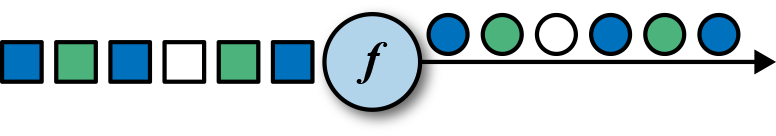
MapFunction的类型与输入事件和输出事件的类型相关，可以通过实现MapFunction接口来定义。接口包含map()函数，这个函数将一个输入事件恰好转换为一个输出事件。
// T: the type of input elements
// O: the type of output elements
MapFunction[T, O]
> map(T): O
下面的代码实现了将SensorReading中的id字段抽取出来的功能。
scala version
val readings: DataStream[SensorReading] = ...
val sensorIds: DataStream[String] = readings.map(new IdExtractor)
class IdExtractor extends MapFunction[SensorReading, String] {
override def map(r: SensorReading) : String = r.id
}
当然我们更推荐匿名函数的写法。
val sensorIds: DataStream[String] = filteredReadings.map(r => r.id)
java version
DataStream<SensorReading> readings = ...
DataStream<String> sensorIds = readings.map(new IdExtractor());
public static class IdExtractor implements MapFunction<SensorReading, String> {
@Override
public String map(SensorReading r) throws Exception {
return r.id;
}
}
当然我们更推荐匿名函数的写法。
DataStream<String> sensorIds = filteredReadings.map(r -> r.id);
FILTER
filter转换算子通过在每个输入事件上对一个布尔条件进行求值来过滤掉一些元素，然后将剩下的元素继续发送。一个true的求值结果将会把输入事件保留下来并发送到输出，而如果求值结果为false，则输入事件会被抛弃掉。我们通过调用DataStream.filter()来指定流的filter算子，filter操作将产生一条新的流，其类型和输入流中的事件类型是一样的。图5-2展示了只产生白色方框的filter操作。

布尔条件可以使用函数、FilterFunction接口或者匿名函数来实现。FilterFunction中的泛型是输入事件的类型。定义的filter()方法会作用在每一个输入元素上面，并返回一个布尔值。
// T: the type of elements
FilterFunction[T]
> filter(T): Boolean
下面的例子展示了如何使用filter来从传感器数据中过滤掉温度值小于25华氏温度的读数。
scala version
val filteredReadings = readings.filter(r => r.temperature >= 25)
java version
DataStream<SensorReading> filteredReadings = readings.filter(r -> r.temperature >= 25);
FLATMAP
flatMap算子和map算子很类似，不同之处在于针对每一个输入事件flatMap可以生成0个、1个或者多个输出元素。事实上，flatMap转换算子是filter和map的泛化。所以flatMap可以实现map和filter算子的功能。图5-3展示了flatMap如何根据输入事件的颜色来做不同的处理。如果输入事件是白色方框，则直接输出。输入元素是黑框，则复制输入。灰色方框会被过滤掉。

flatMap算子将会应用在每一个输入事件上面。对应的FlatMapFunction定义了flatMap()方法，这个方法返回0个、1个或者多个事件到一个Collector集合中，作为输出结果。
// T: the type of input elements
// O: the type of output elements
FlatMapFunction[T, O]
> flatMap(T, Collector[O]): Unit
下面的例子展示了在数据分析教程中经常用到的例子，我们用flatMap来实现。使用_来切割传感器ID，比如sensor_1。
scala version
class IdSplitter extends FlatMapFunction[String, String] {
override def flatMap(id: String, out: Collector[String]) : Unit = {
val arr = id.split("_")
arr.foreach(out.collect)
}
}
匿名函数写法
val splitIds = sensorIds
.flatMap(r => r.split("_"))
java version
public static class IdSplitter implements FlatMapFunction<String, String> {
@Override
public void flatMap(String id, Collector<String> out) {
String[] splits = id.split("_");
for (String split : splits) {
out.collect(split);
}
}
}
匿名函数写法：
DataStream<String> splitIds = sensorIds
.flatMap((FlatMapFunction<String, String>)
(id, out) -> { for (String s: id.split("_")) { out.collect(s);}})
// provide result type because Java cannot infer return type of lambda function
// 提供结果的类型，因为Java无法推断匿名函数的返回值类型
.returns(Types.STRING);
键控流转换算子
很多流处理程序的一个基本要求就是要能对数据进行分组，分组后的数据共享某一个相同的属性。DataStream API提供了一个叫做KeyedStream的抽象，此抽象会从逻辑上对DataStream进行分区，分区后的数据拥有同样的Key值，分区后的流互不相关。
针对KeyedStream的状态转换操作可以读取数据或者写入数据到当前事件Key所对应的状态中。这表明拥有同样Key的所有事件都可以访问同样的状态，也就是说所以这些事件可以一起处理。
要小心使用状态转换操作和基于Key的聚合操作。如果Key的值越来越多，例如：Key是订单ID，我们必须及时清空Key所对应的状态，以免引起内存方面的问题。稍后我们会详细讲解。
KeyedStream可以使用map，flatMap和filter算子来处理。接下来我们会使用keyBy算子来将DataStream转换成KeyedStream，并讲解基于key的转换操作：滚动聚合和reduce算子。
KEYBY
keyBy通过指定key来将DataStream转换成KeyedStream。基于不同的key，流中的事件将被分配到不同的分区中去。所有具有相同key的事件将会在接下来的操作符的同一个子任务槽中进行处理。拥有不同key的事件可以在同一个任务中处理。但是算子只能访问当前事件的key所对应的状态。
如图5-4所示，把输入事件的颜色作为key，黑色的事件输出到了一个分区，其他颜色输出到了另一个分区。

keyBy()方法接收一个参数，这个参数指定了key或者keys，有很多不同的方法来指定key。我们将在后面讲解。下面的代码声明了id这个字段为SensorReading流的key。
scala version
val keyed: KeyedStream[SensorReading, String] = readings.keyBy(r => r.id)
匿名函数r => r.id抽取了传感器读数SensorReading的id值。
java version
KeyedStream<SensorReading, String> keyed = readings.keyBy(r -> r.id);
匿名函数r -> r.id抽取了传感器读数SensorReading的id值。
滚动聚合
滚动聚合算子由KeyedStream调用，并生成一个聚合以后的DataStream，例如：sum，minimum，maximum。一个滚动聚合算子会为每一个观察到的key保存一个聚合的值。针对每一个输入事件，算子将会更新保存的聚合结果，并发送一个带有更新后的值的事件到下游算子。滚动聚合不需要用户自定义函数，但需要接受一个参数，这个参数指定了在哪一个字段上面做聚合操作。DataStream API提供了以下滚动聚合方法。
滚动聚合算子只能用在滚动窗口，不能用在滑动窗口。
- sum()：在输入流上对指定的字段做滚动相加操作。
- min()：在输入流上对指定的字段求最小值。
- max()：在输入流上对指定的字段求最大值。
- minBy()：在输入流上针对指定字段求最小值，并返回包含当前观察到的最小值的事件。
- maxBy()：在输入流上针对指定字段求最大值，并返回包含当前观察到的最大值的事件。
滚动聚合算子无法组合起来使用，每次计算只能使用一个单独的滚动聚合算子。
下面的例子根据第一个字段来对类型为Tuple3<Int, Int, Int>的流做分流操作，然后针对第二个字段做滚动求和操作。
scala version
val inputStream = env.fromElements((1, 2, 2), (2, 3, 1), (2, 2, 4), (1, 5, 3))
val resultStream = inputStream.keyBy(0).sum(1)
java version
DataStream<Tuple3<Integer, Integer, Integer>> inputStream = env.fromElements(new Tuple3(1, 2, 2), new Tuple3(2, 3, 1), new Tuple3(2, 2, 4), new Tuple3(1, 5, 3));
DataStream<Tuple3<Integer, Integer, Integer>> resultStream = inputStream
.keyBy(0) // key on first field of the tuple
.sum(1); // sum the second field of the tuple in place
在这个例子里面，输入流根据第一个字段来分流，然后在第二个字段上做计算。对于key 1，输出结果是(1,2,2),(1,7,2)。对于key 2，输出结果是(2,3,1),(2,5,1)。第一个字段是key，第二个字段是求和的数值，第三个字段未定义。
滚动聚合操作会对每一个key都保存一个状态。因为状态从来不会被清空，所以我们在使用滚动聚合算子时只能使用在含有有限个key的流上面。
REDUCE
reduce算子是滚动聚合的泛化实现。它将一个ReduceFunction应用到了一个KeyedStream上面去。reduce算子将会把每一个输入事件和当前已经reduce出来的值做聚合计算。reduce操作不会改变流的事件类型。输出流数据类型和输入流数据类型是一样的。
reduce函数可以通过实现接口ReduceFunction来创建一个类。ReduceFunction接口定义了reduce()方法，此方法接收两个输入事件，输入一个相同类型的事件。
// T: the element type
ReduceFunction[T]
> reduce(T, T): T
下面的例子，流根据传感器ID分流，然后计算每个传感器的当前最大温度值。
scala version
val maxTempPerSensor = keyed.reduce((r1, r2) => r1.temperature.max(r2.temperature))
java version
DataStream<SensorReading> maxTempPerSensor = keyed
.reduce((r1, r2) -> {
if (r1.temperature > r2.temperature) {
return r1;
} else {
return r2;
}
});
reduce作为滚动聚合的泛化实现，同样也要针对每一个key保存状态。因为状态从来不会清空，所以我们需要将reduce算子应用在一个有限key的流上。
多流转换算子
许多应用需要摄入多个流并将流合并处理，还可能需要将一条流分割成多条流然后针对每一条流应用不同的业务逻辑。接下来，我们将讨论DataStream API中提供的能够处理多条输入流或者发送多条输出流的操作算子。
UNION
DataStream.union()方法将两条或者多条DataStream合并成一条具有与输入流相同类型的输出DataStream。接下来的转换算子将会处理输入流中的所有元素。图5-5展示了union操作符如何将黑色和白色的事件流合并成一个单一输出流。
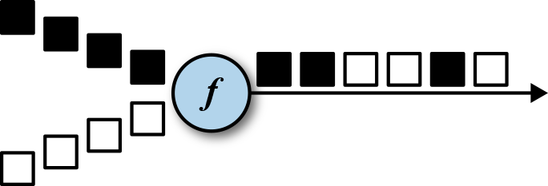
事件合流的方式为FIFO方式。操作符并不会产生一个特定顺序的事件流。union操作符也不会进行去重。每一个输入事件都被发送到了下一个操作符。
下面的例子展示了如何将三条类型为SensorReading的数据流合并成一条流。
scala version
val parisStream: DataStream[SensorReading] = ...
val tokyoStream: DataStream[SensorReading] = ...
val rioStream: DataStream[SensorReading] = ...
val allCities: DataStream[SensorReading] = parisStream
.union(tokyoStream, rioStream)
java version
DataStream<SensorReading> parisStream = ...
DataStream<SensorReading> tokyoStream = ...
DataStream<SensorReading> rioStream = ...
DataStream<SensorReading> allCities = parisStream
.union(tokyoStream, rioStream)
CONNECT, COMAP和COFLATMAP
联合两条流的事件是非常常见的流处理需求。例如监控一片森林然后发出高危的火警警报。报警的Application接收两条流，一条是温度传感器传回来的数据，一条是烟雾传感器传回来的数据。当两条流都超过各自的阈值时，报警。
DataStream API提供了connect操作来支持以上的应用场景。DataStream.connect()方法接收一条DataStream，然后返回一个ConnectedStreams类型的对象，这个对象表示了两条连接的流。
scala version
val first = ...
val second = ...
val connected = first.connect(second)
java version
// first stream
DataStream<Integer> first = ...
// second stream
DataStream<String> second = ...
// connect streams
ConnectedStreams<Integer, String> connected = first.connect(second);
ConnectedStreams提供了map()和flatMap()方法，分别需要接收类型为CoMapFunction和CoFlatMapFunction的参数。
以上两个函数里面的泛型是第一条流的事件类型和第二条流的事件类型，以及输出流的事件类型。还定义了两个方法，每一个方法针对一条流来调用。map1()和flatMap1()会调用在第一条流的元素上面，map2()和flatMap2()会调用在第二条流的元素上面。
// IN1: 第一条流的事件类型
// IN2: 第二条流的事件类型
// OUT: 输出流的事件类型
CoMapFunction[IN1, IN2, OUT]
> map1(IN1): OUT
> map2(IN2): OUT
CoFlatMapFunction[IN1, IN2, OUT]
> flatMap1(IN1, Collector[OUT]): Unit
> flatMap2(IN2, Collector[OUT]): Unit
函数无法选择读某一条流。我们是无法控制函数中的两个方法的调用顺序的。当一条流中的元素到来时，将会调用相对应的方法。
对两条流做连接查询通常需要这两条流基于某些条件被确定性的路由到操作符中相同的并行实例里面去。在默认情况下，connect()操作将不会对两条流的事件建立任何关系，所以两条流的事件将会随机的被发送到下游的算子实例里面去。这样的行为会产生不确定性的计算结果，显然不是我们想要的。为了针对ConnectedStreams进行确定性的转换操作，connect()方法可以和keyBy()或者broadcast()组合起来使用。我们首先看一下keyBy()的示例。
scala version
val one = ...
val two = ...
val keyedConnect1 = one.connect(two).keyBy(0, 0)
val keyedConnect2 = one.keyBy(0).connect(two.keyBy(0))
java version
DataStream<Tuple2<Integer, Long>> one = ...
DataStream<Tuple2<Integer, String>> two = ...
// keyBy two connected streams
ConnectedStreams<Tuple2<Int, Long>, Tuple2<Integer, String>> keyedConnect1 = one
.connect(two)
.keyBy(0, 0); // key both input streams on first attribute
// alternative: connect two keyed streams
ConnectedStreams<Tuple2<Integer, Long>, Tuple2<Integer, String>> keyedConnect2 = one
.keyBy(0)
.connect(two.keyBy(0));
无论使用keyBy()算子操作ConnectedStreams还是使用connect()算子连接两条KeyedStreams，connect()算子会将两条流的含有相同Key的所有事件都发送到相同的算子实例。两条流的key必须是一样的类型和值，就像SQL中的JOIN。在connected和keyed stream上面执行的算子有访问keyed state的权限。
下面的例子展示了如何连接一条DataStream和广播过的流。
scala version
val one = ...
val two = ...
val keyedConnect = first.connect(second.broadcast())
java version
DataStream<Tuple2<Integer, Long>> one = ...
DataStream<Tuple2<Int, String>> two = ...
// connect streams with broadcast
ConnectedStreams<Tuple2<Int, Long>, Tuple2<Int, String>> keyedConnect = first
// broadcast second input stream
.connect(second.broadcast());
一条被广播过的流中的所有元素将会被复制然后发送到下游算子的所有并行实例中去。未被广播过的流仅仅向前发送。所以两条流的元素显然会被连接处理。
例子：
警告类：
scala version
case class Alert(message: String, timestamp: Long)
java version
public class Alert {
public String message;
public long timestamp;
public Alert() { }
public Alert(String message, long timestamp) {
this.message = message;
this.timestamp = timestamp;
}
public String toString() {
return "(" + message + ", " + timestamp + ")";
}
}
烟雾传感器读数类：
public enum SmokeLevel {
LOW,
HIGH
}
产生烟雾传感器读数的自定义数据源：
public class SmokeLevelSource implements SourceFunction<SmokeLevel> {
private boolean running = true;
@Override
public void run(SourceContext<SmokeLevel> srcCtx) throws Exception {
Random rand = new Random();
while (running) {
if (rand.nextGaussian() > 0.8) {
srcCtx.collect(SmokeLevel.HIGH);
} else {
srcCtx.collect(SmokeLevel.LOW);
}
Thread.sleep(1000);
}
}
@Override
public void cancel() {
this.running = false;
}
}
监控一片森林然后发出高危的火警警报。报警的Application接收两条流，一条是温度传感器传回来的数据，一条是烟雾传感器传回来的数据。当两条流都超过各自的阈值时，报警。
scala version
object MultiStreamTransformations {
def main(args: Array[String]): Unit = {
val env = StreamExecutionEnvironment.getExecutionEnvironment
val tempReadings = env.addSource(new SensorSource)
val smokeReadings = env
.addSource(new SmokeLevelSource)
.setParallelism(1)
val keyedTempReadings = tempReadings
.keyBy(r => r.id)
val alerts = keyedTempReadings
.connect(smokeReadings.broadcast())
.flatMap(new RaiseAlertFlatMap)
alerts.print()
env.execute("Multi-Stream Transformations Example")
}
class RaiseAlertFlatMap extends CoFlatMapFunction[SensorReading, SmokeLevel, Alert] {
private var smokeLevel = "LOW"
override def flatMap1(tempReading: SensorReading, out: Collector[Alert]) : Unit = {
if (smokeLevel == "HIGH" && tempReading.temperature > 100) {
out.collect(Alert("Risk of fire! " + tempReading, tempReading.timestamp))
}
}
override def flatMap2(sl: String, out: Collector[Alert]) : Unit = {
smokeLevel = sl
}
}
}
java version
public class MultiStreamTransformations {
public static void main(String[] args) throws Exception {
StreamExecutionEnvironment env = StreamExecutionEnvironment.getExecutionEnvironment();
DataStream<SensorReading> tempReadings = env
.addSource(new SensorSource());
DataStream<SmokeLevel> smokeReadings = env
.addSource(new SmokeLevelSource())
.setParallelism(1);
KeyedStream<SensorReading, String> keyedTempReadings = tempReadings
.keyBy(r -> r.id);
DataStream<Alert> alerts = keyedTempReadings
.connect(smokeReadings.broadcast())
.flatMap(new RaiseAlertFlatMap());
alerts.print();
env.execute("Multi-Stream Transformations Example");
}
public static class RaiseAlertFlatMap implements CoFlatMapFunction<SensorReading, SmokeLevel, Alert> {
private SmokeLevel smokeLevel = SmokeLevel.LOW;
@Override
public void flatMap1(SensorReading tempReading, Collector<Alert> out) throws Exception {
// high chance of fire => true
if (this.smokeLevel == SmokeLevel.HIGH && tempReading.temperature > 100) {
out.collect(new Alert("Risk of fire! " + tempReading, tempReading.timestamp));
}
}
@Override
public void flatMap2(SmokeLevel smokeLevel, Collector<Alert> out) {
// update smoke level
this.smokeLevel = smokeLevel;
}
}
}
分布式转换算子
分区操作对应于我们之前讲过的“数据交换策略”这一节。这些操作定义了事件如何分配到不同的任务中去。当我们使用DataStream API来编写程序时，系统将自动的选择数据分区策略，然后根据操作符的语义和设置的并行度将数据路由到正确的地方去。有些时候，我们需要在应用程序的层面控制分区策略，或者自定义分区策略。例如，如果我们知道会发生数据倾斜，那么我们想要针对数据流做负载均衡，将数据流平均发送到接下来的操作符中去。又或者，应用程序的业务逻辑可能需要一个算子所有的并行任务都需要接收同样的数据。再或者，我们需要自定义分区策略的时候。在这一小节，我们将展示DataStream的一些方法，可以使我们来控制或者自定义数据分区策略。
keyBy()方法不同于分布式转换算子。所有的分布式转换算子将产生DataStream数据类型。而keyBy()产生的类型是KeyedStream，它拥有自己的keyed state。
Random
随机数据交换由DataStream.shuffle()方法实现。shuffle方法将数据随机的分配到下游算子的并行任务中去。
Round-Robin
rebalance()方法使用Round-Robin负载均衡算法将输入流平均分配到随后的并行运行的任务中去。图5-7为round-robin分布式转换算子的示意图。
Rescale
rescale()方法使用的也是round-robin算法，但只会将数据发送到接下来的并行运行的任务中的一部分任务中。本质上，当发送者任务数量和接收者任务数量不一样时，rescale分区策略提供了一种轻量级的负载均衡策略。如果接收者任务的数量是发送者任务的数量的倍数时，rescale操作将会效率更高。
rebalance()和rescale()的根本区别在于任务之间连接的机制不同。 rebalance()将会针对所有发送者任务和所有接收者任务之间建立通信通道，而rescale()仅仅针对每一个任务和下游算子的一部分子并行任务之间建立通信通道。rescale的示意图为图5-7。
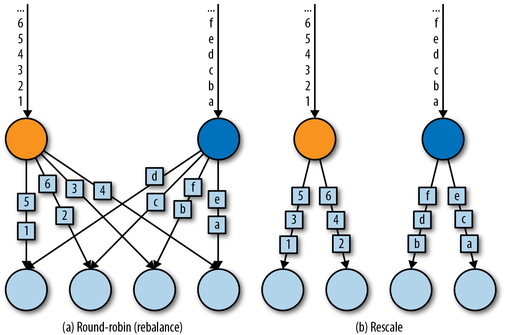
Broadcast
broadcast()方法将输入流的所有数据复制并发送到下游算子的所有并行任务中去。
Global
global()方法将所有的输入流数据都发送到下游算子的第一个并行任务中去。这个操作需要很谨慎，因为将所有数据发送到同一个task，将会对应用程序造成很大的压力。
Custom
当Flink提供的分区策略都不适用时，我们可以使用partitionCustom()方法来自定义分区策略。这个方法接收一个Partitioner对象，这个对象需要实现分区逻辑以及定义针对流的哪一个字段或者key来进行分区。
设置并行度
Flink应用程序在一个像集群这样的分布式环境中并行执行。当一个数据流程序提交到作业管理器执行时，系统将会创建一个数据流图，然后准备执行需要的操作符。每一个操作符将会并行化到一个或者多个任务中去。每个算子的并行任务都会处理这个算子的输入流中的一份子集。一个算子并行任务的个数叫做算子的并行度。它决定了算子执行的并行化程度，以及这个算子能处理多少数据量。
算子的并行度可以在执行环境这个层级来控制，也可以针对每个不同的算子设置不同的并行度。默认情况下，应用程序中所有算子的并行度都将设置为执行环境的并行度。执行环境的并行度（也就是所有算子的默认并行度）将在程序开始运行时自动初始化。如果应用程序在本地执行环境中运行，并行度将被设置为CPU的核数。当我们把应用程序提交到一个处于运行中的Flink集群时，执行环境的并行度将被设置为集群默认的并行度，除非我们在客户端提交应用程序时显式的设置好并行度。
通常情况下，将算子的并行度定义为和执行环境并行度相关的数值会是个好主意。这允许我们通过在客户端调整应用程序的并行度就可以将程序水平扩展了。我们可以使用以下代码来访问执行环境的默认并行度。
我们还可以重写执行环境的默认并行度，但这样的话我们将再也不能通过客户端来控制应用程序的并行度了。
算子默认的并行度也可以通过重写来明确指定。在下面的例子里面，数据源的操作符将会按照环境默认的并行度来并行执行，map操作符的并行度将会是默认并行度的2倍，sink操作符的并行度为2。
StreamExecutionEnvironment env = StreamExecutionEnvironment.getExecutionEnvironment;
int defaultP = env.getParallelism;
env
.addSource(new CustomSource)
.map(new MyMapper)
.setParallelism(defaultP * 2)
.print()
.setParallelism(2);
当我们通过客户端将应用程序的并行度设置为16并提交执行时，source操作符的并行度为16，mapper并行度为32，sink并行度为2。如果我们在本地环境运行应用程序的话，例如在IDE中运行，机器是8核，那么source任务将会并行执行在8个任务上面，mapper运行在16个任务上面，sink运行在2个任务上面。
并行度是动态概念，任务槽数量是静态概念。并行度<=任务槽数量。一个任务槽最多运行一个并行度。
类型
Flink程序所处理的流中的事件一般是对象类型。操作符接收对象输出对象。所以Flink的内部机制需要能够处理事件的类型。在网络中传输数据，或者将数据写入到状态后端、检查点和保存点中，都需要我们对数据进行序列化和反序列化。为了高效的进行此类操作，Flink需要流中事件类型的详细信息。Flink使用了Type Information的概念来表达数据类型，这样就能针对不同的数据类型产生特定的序列化器，反序列化器和比较操作符。
Flink也能够通过分析输入数据和输出数据来自动获取数据的类型信息以及序列化器和反序列化器。尽管如此，在一些特定的情况下，例如匿名函数或者使用泛型的情况下，我们需要明确的提供数据的类型信息，来提高我们程序的性能。
在这一节中，我们将讨论Flink支持的类型，以及如何为数据类型创建相应的类型信息，还有就是在Flink无法推断函数返回类型的情况下，如何帮助Flink的类型系统去做类型推断。
支持的数据类型
Flink支持Java和Scala提供的所有普通数据类型。最常用的数据类型可以做以下分类：
- Primitives（原始数据类型）
- Java和Scala的Tuples（元组）
- Scala的样例类
- POJO类型
- 一些特殊的类型
接下来让我们一探究竟。
Primitives
Java和Scala提供的所有原始数据类型都支持，例如Int(Java的Integer)，String，Double等等。下面举一个例子：
DataStream[Long] numbers = env.fromElements(1L, 2L, 3L, 4L);
numbers.map(n -> n + 1);
Tuples
元组是一种组合数据类型，由固定数量的元素组成。
Flink为Java的Tuple提供了高效的实现。Flink实现的Java Tuple最多可以有25个元素，根据元素数量的不同，Tuple都被实现成了不同的类：Tuple1，Tuple2，一直到Tuple25。Tuple类是强类型。
DataStream<Tuple2<String, Integer>> persons = env
.fromElements(
Tuple2.of("Adam", 17),
Tuple2.of("Sarah", 23)
);
persons.filter(p -> p.f1 > 18);
Tuple的元素可以通过它们的public属性访问——f0，f1，f2等等。或者使用getField(int pos)方法来访问，元素下标从0开始：
import org.apache.flink.api.java.tuple.Tuple2
Tuple2<String, Integer> personTuple = Tuple2.of("Alex", 42);
Integer age = personTuple.getField(1); // age = 42
不同于Scala的Tuple，Java的Tuple是可变数据结构，所以Tuple中的元素可以重新进行赋值。重复利用Java的Tuple可以减轻垃圾收集的压力。举个例子：
personTuple.f1 = 42; // set the 2nd field to 42
personTuple.setField(43, 1); // set the 2nd field to 43
POJO
POJO类的定义：
- 公有类
- 无参数的公有构造器
- 所有的字段都是公有的，可以通过getters和setters访问。
- 所有字段的数据类型都必须是Flink支持的数据类型。
举个例子：
public class Person {
public String name;
public int age;
public Person() {}
public Person(String name, int age) {
this.name = name;
this.age = age;
}
}
DataStream<Person> persons = env.fromElements(
new Person("Alex", 42),
new Person("Wendy", 23)
);
其他数据类型
- Array, ArrayList, HashMap, Enum
- Hadoop Writable types
为数据类型创建类型信息
Flink类型系统的核心类是TypeInformation。它为系统在产生序列化器和比较操作符时，提供了必要的类型信息。例如，如果我们想使用某个key来做联结查询或者分组操作，TypeInformation可以让Flink做更严格的类型检查。
Flink针对Java和Scala分别提供了类来产生类型信息。在Java中，类是
org.apache.flink.api.common.typeinfo.Types
举个例子：
TypeInformation<Integer> intType = Types.INT;
TypeInformation<Tuple2<Long, String>> tupleType = Types
.TUPLE(Types.LONG, Types.STRING);
TypeInformation<Person> personType = Types
.POJO(Person.class);
定义Key以及引用字段
在Flink中，我们必须明确指定输入流中的元素中的哪一个字段是key。
使用字段位置进行keyBy
DataStream<Tuple3<Int, String, Long>> input = ...
KeyedStream<Tuple3<Int, String, Long>, String> keyed = input.keyBy(1);
如果我们想要用元组的第2个字段和第3个字段做keyBy，可以看下面的例子。
input.keyBy(1, 2);
使用字段表达式来进行keyBy
对于样例类：
DataStream<SensorReading> sensorStream = ...
sensorStream.keyBy("id");
对于元组：
DataStream<Tuple3<Integer, String, Long>> javaInput = ...
javaInput.keyBy("f2") // key Java tuple by 3rd field
Key选择器
方法类型
KeySelector[IN, KEY]
> getKey(IN): KEY
两个例子
scala version
val sensorData = ...
val byId = sensorData.keyBy(r => r.id)
val input = ...
input.keyBy(value => math.max(value._1, value._2))
java version
DataStream<SensorReading> sensorData = ...
KeyedStream<SensorReading, String> byId = sensorData.keyBy(r -> r.id);
DataStream<Tuple2<Int, Int>> input = ...
input.keyBy(value -> Math.max(value.f0, value.f1));
实现UDF函数，更细粒度的控制流
函数类
Flink暴露了所有udf函数的接口(实现方式为接口或者抽象类)。例如MapFunction, FilterFunction, ProcessFunction等等。
例子实现了FilterFunction接口
class FilterFilter extends FilterFunction<String> {
@Override
public Boolean filter(String value) {
return value.contains("flink");
}
}
DataStream<String> flinkTweets = tweets.filter(new FlinkFilter);
还可以将函数实现成匿名类
DataStream<String> flinkTweets = tweets.filter(
new RichFilterFunction<String> {
@Override
public Boolean filter(String value) {
return value.contains("flink");
}
}
)
我们filter的字符串"flink"还可以当作参数传进去。
DataStream<String> tweets = ...
DataStream<String> flinkTweets = tweets.filter(new KeywordFilter("flink"));
class KeywordFilter(keyWord: String) extends FilterFunction<String> {
@Override
public Boolean filter(String value) = {
return value.contains(keyWord);
}
}
匿名函数
匿名函数可以实现一些简单的逻辑，但无法实现一些高级功能，例如访问状态等等。
DataStream<String> tweets = ...
DataStream<String> flinkTweets = tweets.filter(r -> r.contains("flink"));
富函数
我们经常会有这样的需求：在函数处理数据之前，需要做一些初始化的工作；或者需要在处理数据时可以获得函数执行上下文的一些信息；以及在处理完数据时做一些清理工作。而DataStream API就提供了这样的机制。
DataStream API提供的所有转换操作函数，都拥有它们的“富”版本，并且我们在使用常规函数或者匿名函数的地方来使用富函数。例如下面就是富函数的一些例子，可以看出，只需要在常规函数的前面加上Rich前缀就是富函数了。
- RichMapFunction
- RichFlatMapFunction
- RichFilterFunction
- ...
当我们使用富函数时，我们可以实现两个额外的方法：
- open()方法是rich function的初始化方法，当一个算子例如map或者filter被调用之前open()会被调用。open()函数通常用来做一些只需要做一次即可的初始化工作。
- close()方法是生命周期中的最后一个调用的方法，通常用来做一些清理工作。
另外，getRuntimeContext()方法提供了函数的RuntimeContext的一些信息，例如函数执行的并行度，当前子任务的索引，当前子任务的名字。同时还它还包含了访问分区状态的方法。下面看一个例子：
public static class MyFlatMap extends RichFlatMapFunction<Integer, Tuple2<Integer, Integer>> {
private int subTaskIndex = 0;
@Override
public void open(Configuration configuration) {
int subTaskIndex = getRuntimeContext.getIndexOfThisSubtask;
// 做一些初始化工作
// 例如建立一个和HDFS的连接
}
@Override
public void flatMap(Integer in, Collector<Tuple2<Integer, Integer>> out) {
if (in % 2 == subTaskIndex) {
out.collect((subTaskIndex, in));
}
}
@Override
public void close() {
// 清理工作，断开和HDFS的连接。
}
}
Sink
Flink没有类似于spark中foreach方法，让用户进行迭代的操作。所有对外的输出操作都要利用Sink完成。最后通过类似如下方式完成整个任务最终输出操作。
stream.addSink(new MySink(xxxx));
官方提供了一部分的框架的sink。除此以外，需要用户自定义实现sink。
Kafka
Kafka版本为0.11
<dependency>
<groupId>org.apache.flink</groupId>
<artifactId>flink-connector-kafka-0.11_2.11</artifactId>
<version>${flink.version}</version>
</dependency>
Kafka版本为2.0以上
<dependency>
<groupId>org.apache.flink</groupId>
<artifactId>flink-connector-kafka_2.11</artifactId>
<version>${flink.version}</version>
</dependency>
主函数中添加sink：
DataStream<String> union = high
.union(low)
.map(r -> r.temperature.toString);
union.addSink(
new FlinkKafkaProducer011<String>(
"localhost:9092",
"test",
new SimpleStringSchema()
)
);
Redis
<dependency>
<groupId>org.apache.bahir</groupId>
<artifactId>flink-connector-redis_2.11</artifactId>
<version>1.0</version>
</dependency>
定义一个redis的mapper类，用于定义保存到redis时调用的命令：
public class WriteToRedis {
public static void main(String[] args) throws Exception {
StreamExecutionEnvironment env = StreamExecutionEnvironment.getExecutionEnvironment;
env.setParallelism(1);
DataStream<SensorReading> stream = env.addSource(new SensorSource());
FlinkJedisPoolConfig conf = new FlinkJedisPoolConfig.Builder().setHost("localhost").build();
stream.addSink(new RedisSink<SensorReading>(conf, new MyRedisMapper()));
env.execute();
}
public static class MyRedisMapper implements RedisMapper<SensorReading> {
// 使用id作为key
@Override
public String getKeyFromData(SensorReading t) {
return t.id;
}
// 使用温度作为value
@Override
public String getValueFromData(SensorReading t) {
return t.temperature.toString();
}
@Override
public RedisCommandDescription getCommandDescription() {
return new RedisCommandDescription(RedisCommand.HSET, "sensor");
}
}
}
ElasticSearch
在主函数中调用：
<dependency>
<groupId>org.apache.flink</groupId>
<artifactId>flink-connector-elasticsearch6_2.11</artifactId>
<version>${flink.version}</version>
</dependency>
在主函数中调用：
List<HttpHost> httpHosts = new ArrayList<>();
httpHosts.add(new HttpHost("127.0.0.1", 9200, "http"));
ElasticsearchSink.Builder<String> esSinkBuilder = new ElasticsearchSink.Builder<>(
httpHosts,
new ElasticsearchSinkFunction<SensorReading> {
@Override
public void process(SensorReading t,
RuntimeContext runtimeContext,
RequestIndexer requestIndexer) {
System.out.println("saving data: " + t);
Map<String, String> json = new util.HashMap<>();
json.put("data", t.toString());
IndexRequest indexRequest = Requests
.indexRequest()
.index("sensor")
.source(json);
requestIndexer.add(indexRequest);
System.out.println("saved successfully");
}
}
)
esSinkBuilder.setBulkFlushMaxActions(1);
dataStream.addSink(esSinkBuilder.build());
JDBC自定义sink
<dependency>
<groupId>mysql</groupId>
<artifactId>mysql-connector-java</artifactId>
<version>5.1.44</version>
</dependency>
添加MyJdbcSink
public static class MyJdbcSink extends RichSinkFunction<SensorReading> {
private Connection conn;
private PreparedStatement insertStmt;
private PreparedStatement updateStmt;
// open 主要是创建连接
@Override
public void open(Configuration parameters) throws Exception {
super.open(parameters);
conn = DriverManager.getConnection(
"jdbc:mysql://localhost:3306/test",
"root",
"123456");
insertStmt = conn.prepareStatement(
"INSERT INTO temperatures (sensor, temp) VALUES (?, ?)"
);
updateStmt = conn.prepareStatement(
"UPDATE temperatures SET temp = ? WHERE sensor = ?"
);
}
// 调用连接，执行sql
@Override
public void invoke(SensorReading value, Context context) throws Exception {
updateStmt.setDouble(1, value.temperature);
updateStmt.setString(2, value.id);
updateStmt.execute();
if (updateStmt.getUpdateCount == 0) {
insertStmt.setString(1, value.id);
insertStmt.setDouble(2, value.temperature);
insertStmt.execute();
}
}
@Override
public void close() throws Exception {
super.close();
insertStmt.close();
updateStmt.close();
conn.close();
}
}
在main方法中增加，把明细保存到mysql中
dataStream.addSink(new MyJdbcSink());
第六章，基于时间和窗口的操作符
在本章，我们将要学习DataStream API中处理时间和基于时间的操作符，例如窗口操作符。
首先，我们会学习如何定义时间属性，时间戳和水位线。然后我们将会学习底层操作process function，它可以让我们访问时间戳和水位线，以及注册定时器事件。接下来，我们将会使用Flink的window API，它提供了通常使用的各种窗口类型的内置实现。我们将会学到如何进行用户自定义窗口操作符，以及窗口的核心功能：assigners（分配器）、triggers（触发器）和evictors（清理器）。最后，我们将讨论如何基于时间来做流的联结查询，以及处理迟到事件的策略。
设置时间属性
如果我们想要在分布式流处理应用程序中定义有关时间的操作，彻底理解时间的语义是非常重要的。当我们指定了一个窗口去收集某1分钟内的数据时，这个长度为1分钟的桶中，到底应该包含哪些数据？在DataStream API中，我们将使用时间属性来告诉Flink：当我们创建窗口时，我们如何定义时间。时间属性是StreamExecutionEnvironment的一个属性，有以下值：
ProcessingTime
机器时间在分布式系统中又叫做“墙上时钟”。
当操作符执行时，此操作符看到的时间是操作符所在机器的机器时间。Processing-time window的触发取决于机器时间，窗口包含的元素也是那个机器时间段内到达的元素。通常情况下，窗口操作符使用processing time会导致不确定的结果，因为基于机器时间的窗口中收集的元素取决于元素到达的速度快慢。使用processing time会为程序提供极低的延迟，因为无需等待水位线的到达。
如果要追求极限的低延迟，请使用processing time。
EventTime
当操作符执行时，操作符看的当前时间是由流中元素所携带的信息决定的。流中的每一个元素都必须包含时间戳信息。而系统的逻辑时钟由水位线(Watermark)定义。我们之前学习过，时间戳要么在事件进入流处理程序之前已经存在，要么就需要在程序的数据源（source）处进行分配。当水位线宣布特定时间段的数据都已经到达，事件时间窗口将会被触发计算。即使数据到达的顺序是乱序的，事件时间窗口的计算结果也将是确定性的。窗口的计算结果并不取决于元素到达的快与慢。
当水位线超过事件时间窗口的结束时间时，窗口将会闭合，不再接收数据，并触发计算。
IngestionTime
当事件进入source操作符时，source操作符所在机器的机器时间，就是此事件的“摄入时间”（IngestionTime），并同时产生水位线。IngestionTime相当于EventTime和ProcessingTime的混合体。一个事件的IngestionTime其实就是它进入流处理器中的时间。
IngestionTime没什么价值，既有EventTime的执行效率（比较低），有没有EventTime计算结果的准确性。
下面的例子展示了如何设置事件时间。
StreamExecutionEnvironment env = StreamExecutionEnvironment.getExecutionEnvironment;
env.setStreamTimeCharacteristic(TimeCharacteristic.EventTime);
DataStream<SensorReading> sensorData = env.addSource(...);
如果要使用processing time，将TimeCharacteristic.EventTime替换为TimeCharacteristic.ProcessingTIme就可以了。
指定时间戳和产生水位线
如果使用事件时间，那么流中的事件必须包含这个事件真正发生的时间。使用了事件时间的流必须携带水位线。
时间戳和水位线的单位是毫秒，记时从1970-01-01T00:00:00Z开始。到达某个操作符的水位线就会告知这个操作符：小于等于水位线中携带的时间戳的事件都已经到达这个操作符了。时间戳和水位线可以由SourceFunction产生，或者由用户自定义的时间戳分配器和水位线产生器来生成。
Flink暴露了TimestampAssigner接口供我们实现，使我们可以自定义如何从事件数据中抽取时间戳。一般来说，时间戳分配器需要在source操作符后马上进行调用。
因为时间戳分配器看到的元素的顺序应该和source操作符产生数据的顺序是一样的，否则就乱了。这就是为什么我们经常将source操作符的并行度设置为1的原因。
也就是说，任何分区操作都会将元素的顺序打乱，例如：并行度改变，keyBy()操作等等。
所以最佳实践是：在尽量接近数据源source操作符的地方分配时间戳和产生水位线，甚至最好在SourceFunction中分配时间戳和产生水位线。当然在分配时间戳和产生水位线之前可以对流进行map和filter操作是没问题的，也就是说必须是窄依赖。
以下这种写法是可以的。
DataStream<T> stream = env
.addSource(...)
.map(...)
.filter(...)
.assignTimestampsAndWatermarks(...)
下面的例子展示了首先filter流，然后再分配时间戳和水位线。
StreamExecutionEnvironment env = StreamExecutionEnvironment.getExecutionEnvironment;
// 从调用时刻开始给env创建的每一个stream追加时间特征
env.setStreamTimeCharacteristic(TimeCharacteristic.EventTime);
DataStream<SensorReading> readings = env
.addSource(new SensorSource)
.filter(r -> r.temperature > 25)
.assignTimestampsAndWatermarks(new MyAssigner());
MyAssigner有两种类型
- AssignerWithPeriodicWatermarks
- AssignerWithPunctuatedWatermarks
以上两个接口都继承自TimestampAssigner。
周期性的生成水位线
周期性的生成水位线：系统会周期性的将水位线插入到流中（水位线也是一种特殊的事件!）。默认周期是200毫秒，也就是说，系统会每隔200毫秒就往流中插入一次水位线。
这里的200毫秒是机器时间！
可以使用ExecutionConfig.setAutoWatermarkInterval()方法进行设置。
val env = StreamExecutionEnvironment.getExecutionEnvironment
env.setStreamTimeCharacteristic(TimeCharacteristic.EventTime)
// 每隔5秒产生一个水位线
env.getConfig.setAutoWatermarkInterval(5000)
上面的例子产生水位线的逻辑：每隔5秒钟，Flink会调用AssignerWithPeriodicWatermarks中的getCurrentWatermark()方法。如果方法返回的时间戳大于之前水位线的时间戳，新的水位线会被插入到流中。这个检查保证了水位线是单调递增的。如果方法返回的时间戳小于等于之前水位线的时间戳，则不会产生新的水位线。
例子，自定义一个周期性的时间戳抽取
class PeriodicAssigner extends AssignerWithPeriodicWatermarks[SensorReading] {
val bound = 60 * 1000 // 延时为1分钟
var maxTs = Long.MinValue + bound // 观察到的最大时间戳
override def getCurrentWatermark: Watermark {
new Watermark(maxTs - bound)
}
override def extractTimestamp(r: SensorReading, previousTS: Long) {
maxTs = maxTs.max(r.timestamp)
r.timestamp
}
}
如果我们事先得知数据流的时间戳是单调递增的，也就是说没有乱序。我们可以使用assignAscendingTimestamps，方法会直接使用数据的时间戳生成水位线。
val stream = ...
val withTimestampsAndWatermarks = stream.assignAscendingTimestamps(e => e.timestamp)
如果我们能大致估算出数据流中的事件的最大延迟时间，可以使用如下代码：
最大延迟时间就是当前到达的事件的事件时间和之前所有到达的事件中最大时间戳的差。
val stream = ...
val withTimestampsAndWatermarks = stream.assignTimestampsAndWatermarks(
new SensorTimeAssigner()
)
class SensorTimeAssigner extends BoundedOutOfOrdernessTimestampExtractor[SensorReading](Time.seconds(5)) {
// 抽取时间戳
override def extractTimestamp(r: SensorReading): Long {
r.timestamp;
}
}
以上代码设置了最大延迟时间为5秒。
如何产生不规则的水位线
有时候输入流中会包含一些用于指示系统进度的特殊元组或标记。Flink为此类情形以及可根据输入元素生成水位线的情形提供了AssignerWithPunctuatedWatermarks接口。该接口中的checkAndGetNextWatermark()方法会在针对每个事件的extractTimestamp()方法后立即调用。它可以决定是否生成一个新的水位线。如果该方法返回一个非空、且大于之前值的水位线，算子就会将这个新水位线发出。
class PunctuatedAssigner extends AssignerWithPunctuatedWatermarks[SensorReading] {
val bound = 60 * 1000
// 每来一条数据就调用一次
// 紧跟`extractTimestamp`函数调用
override def checkAndGetNextWatermark(r: SensorReading, extractedTS: Long) {
if (r.id == "sensor_1") {
// 抽取的时间戳 - 最大延迟时间
new Watermark(extractedTS - bound)
} else {
null
}
}
// 每来一条数据就调用一次
override def extractTimestamp(r: SensorReading, previousTS: Long) {
r.timestamp
}
}
现在我们已经知道如何使用 TimestampAssigner 来产生水位线了。现在我们要讨论一下水位线会对我们的程序产生什么样的影响。
水位线用来平衡延迟和计算结果的正确性。水位线告诉我们，在触发计算（例如关闭窗口并触发窗口计算）之前，我们需要等待事件多长时间。基于事件时间的操作符根据水位线来衡量系统的逻辑时间的进度。
完美的水位线永远不会错：时间戳小于水位线的事件不会再出现。在特殊情况下(例如非乱序事件流)，最近一次事件的时间戳就可能是完美的水位线。启发式水位线则相反，它只估计时间，因此有可能出错，即迟到的事件(其时间戳小于水位线标记时间)晚于水位线出现。针对启发式水位线，Flink提供了处理迟到元素的机制。
设定水位线通常需要用到领域知识。举例来说，如果知道事件的迟到时间不会超过5秒，就可以将水位线标记时间设为收到的最大时间戳减去5秒。另一种做法是，采用一个Flink作业监控事件流，学习事件的迟到规律，并以此构建水位线生成模型。
如果最大延迟时间设置的很大，计算出的结果会更精确，但收到计算结果的速度会很慢，同时系统会缓存大量的数据，并对系统造成比较大的压力。如果最大延迟时间设置的很小，那么收到计算结果的速度会很快，但可能收到错误的计算结果。不过Flink处理迟到数据的机制可以解决这个问题。上述问题看起来很复杂，但是恰恰符合现实世界的规律：大部分真实的事件流都是乱序的，并且通常无法了解它们的乱序程度(因为理论上不能预见未来)。水位线是唯一让我们直面乱序事件流并保证正确性的机制; 否则只能选择忽视事实，假装错误的结果是正确的。
- 思考题一：实时程序，要求实时性非常高，并且结果并不一定要求非常准确，那么应该怎么办？
- 回答：直接使用处理时间。
- 思考题二：如果要进行时间旅行，也就是要还原以前的数据集当时的流的状态，应该怎么办？
- 回答：使用事件时间。使用Hive将数据集先按照时间戳升序排列，再将最大延迟时间设置为0。
处理函数
我们之前学习的转换算子是无法访问事件的时间戳信息和水位线信息的。而这在一些应用场景下，极为重要。例如MapFunction这样的map转换算子就无法访问时间戳或者当前事件的事件时间。
基于此，DataStream API提供了一系列的Low-Level转换算子。可以访问时间戳、水位线以及注册定时事件。还可以输出特定的一些事件，例如超时事件等。Process Function用来构建事件驱动的应用以及实现自定义的业务逻辑(使用之前的window函数和转换算子无法实现)。例如，Flink-SQL就是使用Process Function实现的。
Flink提供了8个Process Function：
- ProcessFunction
- KeyedProcessFunction
- CoProcessFunction
- ProcessJoinFunction
- BroadcastProcessFunction
- KeyedBroadcastProcessFunction
- ProcessWindowFunction
- ProcessAllWindowFunction
我们这里详细介绍一下KeyedProcessFunction。
KeyedProcessFunction用来操作KeyedStream。KeyedProcessFunction会处理流的每一个元素，输出为0个、1个或者多个元素。所有的Process Function都继承自RichFunction接口，所以都有open()、close()和getRuntimeContext()等方法。而KeyedProcessFunction[KEY, IN, OUT]还额外提供了两个方法:
- processElement(v: IN, ctx: Context, out: Collector[OUT]), 流中的每一个元素都会调用这个方法，调用结果将会放在Collector数据类型中输出。Context可以访问元素的时间戳，元素的key，以及TimerService时间服务。Context还可以将结果输出到别的流(side outputs)。
- onTimer(timestamp: Long, ctx: OnTimerContext, out: Collector[OUT])是一个回调函数。当之前注册的定时器触发时调用。参数timestamp为定时器所设定的触发的时间戳。Collector为输出结果的集合。OnTimerContext和processElement的Context参数一样，提供了上下文的一些信息，例如firing trigger的时间信息(事件时间或者处理时间)。
时间服务和定时器
Context和OnTimerContext所持有的TimerService对象拥有以下方法:
currentProcessingTime(): Long返回当前处理时间currentWatermark(): Long返回当前水位线的时间戳registerProcessingTimeTimer(timestamp: Long): Unit会注册当前key的processing time的timer。当processing time到达定时时间时，触发timer。registerEventTimeTimer(timestamp: Long): Unit会注册当前key的event time timer。当水位线大于等于定时器注册的时间时，触发定时器执行回调函数。deleteProcessingTimeTimer(timestamp: Long): Unit删除之前注册处理时间定时器。如果没有这个时间戳的定时器，则不执行。deleteEventTimeTimer(timestamp: Long): Unit删除之前注册的事件时间定时器，如果没有此时间戳的定时器，则不执行。
当定时器timer触发时，执行回调函数onTimer()。processElement()方法和onTimer()方法是同步（不是异步）方法，这样可以避免并发访问和操作状态。
针对每一个key和timestamp，只能注册一个定期器。也就是说，每一个key可以注册多个定时器，但在每一个时间戳只能注册一个定时器。KeyedProcessFunction默认将所有定时器的时间戳放在一个优先队列中。在Flink做检查点操作时，定时器也会被保存到状态后端中。
举个例子说明KeyedProcessFunction如何操作KeyedStream。
下面的程序展示了如何监控温度传感器的温度值，如果温度值在一秒钟之内(processing time)连续上升，报警。
scala version
val warnings = readings
.keyBy(r => r.id)
.process(new TempIncreaseAlertFunction)
class TempIncrease extends KeyedProcessFunction[String, SensorReading, String] {
// 懒加载；
// 状态变量会在检查点操作时进行持久化，例如hdfs
// 只会初始化一次，单例模式
// 在当机重启程序时，首先去持久化设备寻找名为`last-temp`的状态变量，如果存在，则直接读取。不存在，则初始化。
// 用来保存最近一次温度
// 默认值是0.0
lazy val lastTemp: ValueState[Double] = getRuntimeContext.getState(
new ValueStateDescriptor[Double]("last-temp", Types.of[Double])
)
// 默认值是0L
lazy val timer: ValueState[Long] = getRuntimeContext.getState(
new ValueStateDescriptor[Long]("timer", Types.of[Long])
)
override def processElement(value: SensorReading, ctx: KeyedProcessFunction[String, SensorReading, String]#Context, out: Collector[String]): Unit = {
// 使用`.value()`方法取出最近一次温度值，如果来的温度是第一条温度，则prevTemp为0.0
val prevTemp = lastTemp.value()
// 将到来的这条温度值存入状态变量中
lastTemp.update(value.temperature)
// 如果timer中有定时器的时间戳，则读取
val ts = timer.value()
if (prevTemp == 0.0 || value.temperature < prevTemp) {
ctx.timerService().deleteProcessingTimeTimer(ts)
timer.clear()
} else if (value.temperature > prevTemp && ts == 0) {
val oneSecondLater = ctx.timerService().currentProcessingTime() + 1000L
ctx.timerService().registerProcessingTimeTimer(oneSecondLater)
timer.update(oneSecondLater)
}
}
override def onTimer(timestamp: Long, ctx: KeyedProcessFunction[String, SensorReading, String]#OnTimerContext, out: Collector[String]): Unit = {
out.collect("传感器ID是 " + ctx.getCurrentKey + " 的传感器的温度连续1s上升了！")
timer.clear()
}
}
java version
DataStream<String> warings = readings
.keyBy(r -> r.id)
.process(new TempIncreaseAlertFunction());
看一下TempIncreaseAlertFunction如何实现, 程序中使用了ValueState这样一个状态变量, 后面会详细讲解。
public static class TempIncreaseAlertFunction extends KeyedProcessFunction<String, SensorReading, String> {
private ValueState<Double> lastTemp;
private ValueState<Long> currentTimer;
@Override
public void open(Configuration parameters) throws Exception {
super.open(parameters);
lastTemp = getRuntimeContext().getState(
new ValueStateDescriptor<>("last-temp", Types.DOUBLE)
);
currentTimer = getRuntimeContext().getState(
new ValueStateDescriptor<>("current-timer", Types.LONG)
);
}
@Override
public void processElement(SensorReading r, Context ctx, Collector<String> out) throws Exception {
// 取出上一次的温度
Double prevTemp = 0.0;
if (lastTemp.value() != null) {
prevTemp = lastTemp.value();
}
// 将当前温度更新到上一次的温度这个变量中
lastTemp.update(r.temperature);
Long curTimerTimestamp = 0L;
if (currentTimer.value() != null) {
curTimerTimestamp = currentTimer.value();
}
if (prevTemp == 0.0 || r.temperature < prevTemp) {
// 温度下降或者是第一个温度值，删除定时器
ctx.timerService().deleteProcessingTimeTimer(curTimerTimestamp);
// 清空状态变量
currentTimer.clear();
} else if (r.temperature > prevTemp && curTimerTimestamp == 0) {
// 温度上升且我们并没有设置定时器
long timerTs = ctx.timerService().currentProcessingTime() + 1000L;
ctx.timerService().registerProcessingTimeTimer(timerTs);
// 保存定时器时间戳
currentTimer.update(timerTs);
}
}
@Override
public void onTimer(long timestamp, OnTimerContext ctx, Collector<String> out) throws Exception {
super.onTimer(timestamp, ctx, out);
out.collect("传感器id为: "
+ ctx.getCurrentKey()
+ "的传感器温度值已经连续1s上升了。");
currentTimer.clear();
}
}
将事件发送到侧输出
大部分的DataStream API的算子的输出是单一输出，也就是某种数据类型的流。除了split算子，可以将一条流分成多条流，这些流的数据类型也都相同。process function的side outputs功能可以产生多条流，并且这些流的数据类型可以不一样。一个side output可以定义为OutputTag[X]对象，X是输出流的数据类型。process function可以通过Context对象发射一个事件到一个或者多个side outputs。
例子
scala version
object SideOutputExample {
val output = new OutputTag[String]("side-output")
def main(args: Array[String]): Unit = {
val env = StreamExecutionEnvironment.getExecutionEnvironment
env.setParallelism(1)
val stream = env.addSource(new SensorSource)
val warnings = stream
.process(new FreezingAlarm)
warnings.print() // 打印主流
warnings.getSideOutput(output).print() // 打印侧输出流
env.execute()
}
class FreezingAlarm extends ProcessFunction[SensorReading, SensorReading] {
override def processElement(value: SensorReading, ctx: ProcessFunction[SensorReading, SensorReading]#Context, out: Collector[SensorReading]): Unit = {
if (value.temperature < 32.0) {
ctx.output(output, "传感器ID为：" + value.id + "的传感器温度小于32度！")
}
out.collect(value)
}
}
}
java version
public class SideOutputExample {
private static OutputTag<String> output = new OutputTag<String>("side-output"){};
public static void main(String[] args) throws Exception {
StreamExecutionEnvironment env = StreamExecutionEnvironment.getExecutionEnvironment();
env.setParallelism(1);
DataStream<SensorReading> stream = env.addSource(new SensorSource());
SingleOutputStreamOperator<SensorReading> warnings = stream
.process(new ProcessFunction<SensorReading, SensorReading>() {
@Override
public void processElement(SensorReading value, Context ctx, Collector<SensorReading> out) throws Exception {
if (value.temperature < 32) {
ctx.output(output, "温度小于32度！");
}
out.collect(value);
}
});
warnings.print();
warnings.getSideOutput(output).print();
env.execute();
}
}
CoProcessFunction
对于两条输入流，DataStream API提供了CoProcessFunction这样的low-level操作。CoProcessFunction提供了操作每一个输入流的方法: processElement1()和processElement2()。类似于ProcessFunction，这两种方法都通过Context对象来调用。这个Context对象可以访问事件数据，定时器时间戳，TimerService，以及side outputs。CoProcessFunction也提供了onTimer()回调函数。下面的例子展示了如何使用CoProcessFunction来合并两条流。
scala version
object SensorSwitch {
def main(args: Array[String]): Unit = {
val env = StreamExecutionEnvironment.getExecutionEnvironment
env.setParallelism(1)
val stream = env.addSource(new SensorSource).keyBy(r => r.id)
val switches = env.fromElements(("sensor_2", 10 * 1000L)).keyBy(r => r._1)
stream
.connect(switches)
.process(new SwitchProcess)
.print()
env.execute()
}
class SwitchProcess extends CoProcessFunction[SensorReading, (String, Long), SensorReading] {
lazy val forwardSwitch = getRuntimeContext.getState(
new ValueStateDescriptor[Boolean]("switch", Types.of[Boolean])
)
override def processElement1(value: SensorReading, ctx: CoProcessFunction[SensorReading, (String, Long), SensorReading]#Context, out: Collector[SensorReading]): Unit = {
if (forwardSwitch.value()) {
out.collect(value)
}
}
override def processElement2(value: (String, Long), ctx: CoProcessFunction[SensorReading, (String, Long), SensorReading]#Context, out: Collector[SensorReading]): Unit = {
forwardSwitch.update(true)
ctx.timerService().registerProcessingTimeTimer(ctx.timerService().currentProcessingTime() + value._2)
}
override def onTimer(timestamp: Long, ctx: CoProcessFunction[SensorReading, (String, Long), SensorReading]#OnTimerContext, out: Collector[SensorReading]): Unit = {
forwardSwitch.clear()
}
}
}
java version
public class SensorSwitch {
public static void main(String[] args) throws Exception {
StreamExecutionEnvironment env = StreamExecutionEnvironment.getExecutionEnvironment();
env.setParallelism(1);
KeyedStream<SensorReading, String> stream = env
.addSource(new SensorSource())
.keyBy(r -> r.id);
KeyedStream<Tuple2<String, Long>, String> switches = env
.fromElements(Tuple2.of("sensor_2", 10 * 1000L))
.keyBy(r -> r.f0);
stream
.connect(switches)
.process(new SwitchProcess())
.print();
env.execute();
}
public static class SwitchProcess extends CoProcessFunction<SensorReading, Tuple2<String, Long>, SensorReading> {
private ValueState<Boolean> forwardingEnabled;
@Override
public void open(Configuration parameters) throws Exception {
super.open(parameters);
forwardingEnabled = getRuntimeContext().getState(
new ValueStateDescriptor<>("filterSwitch", Types.BOOLEAN)
);
}
@Override
public void processElement1(SensorReading value, Context ctx, Collector<SensorReading> out) throws Exception {
if (forwardingEnabled.value() != null && forwardingEnabled.value()) {
out.collect(value);
}
}
@Override
public void processElement2(Tuple2<String, Long> value, Context ctx, Collector<SensorReading> out) throws Exception {
forwardingEnabled.update(true);
ctx.timerService().registerProcessingTimeTimer(ctx.timerService().currentProcessingTime() + value.f1);
}
@Override
public void onTimer(long timestamp, OnTimerContext ctx, Collector<SensorReading> out) throws Exception {
super.onTimer(timestamp, ctx, out);
forwardingEnabled.clear();
}
}
}
窗口操作符
窗口操作是流处理程序中很常见的操作。窗口操作允许我们在无限流上的一段有界区间上面做聚合之类的操作。而我们使用基于时间的逻辑来定义区间。窗口操作符提供了一种将数据放进一个桶，并根据桶中的数据做计算的方法。例如，我们可以将事件放进5分钟的滚动窗口中，然后计数。
无限流转化成有限数据的方法：使用窗口。
定义窗口操作符
Window算子可以在keyed stream或者nokeyed stream上面使用。
创建一个Window算子，需要指定两个部分：
-
window assigner定义了流的元素如何分配到window中。window assigner将会产生一条WindowedStream(或者AllWindowedStream，如果是nonkeyed DataStream的话) -
window function用来处理WindowedStream(AllWindowedStream)中的元素。
下面的代码说明了如何使用窗口操作符。
stream
.keyBy(...)
.window(...) // 指定window assigner
.reduce/aggregate/process(...) // 指定window function
stream
.windowAll(...) // 指定window assigner
.reduce/aggregate/process(...) // 指定window function
我们的学习重点是Keyed WindowedStream。
内置的窗口分配器
窗口分配器将会根据事件的事件时间或者处理时间来将事件分配到对应的窗口中去。窗口包含开始时间和结束时间这两个时间戳。
所有的窗口分配器都包含一个默认的触发器：
- 对于事件时间：当水位线超过窗口结束时间，触发窗口的求值操作。
- 对于处理时间：当机器时间超过窗口结束时间，触发窗口的求值操作。
需要注意的是：当处于某个窗口的第一个事件到达的时候，这个窗口才会被创建。Flink不会对空窗口求值。
Flink创建的窗口类型是TimeWindow，包含开始时间和结束时间，区间是左闭右开的，也就是说包含开始时间戳，不包含结束时间戳。
滚动窗口(tumbling windows)
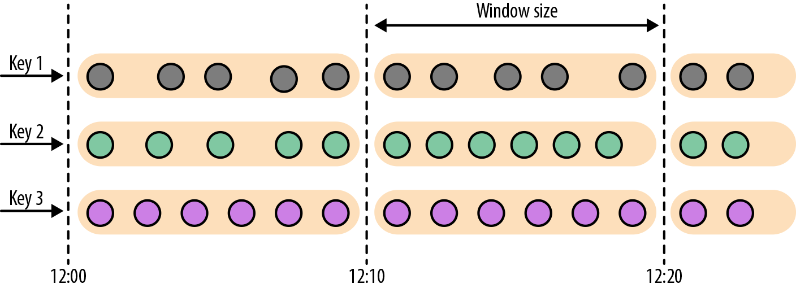
DataStream<SensorReading> sensorData = ...
DataStream<T> avgTemp = sensorData
.keyBy(r -> r.id)
// group readings in 1s event-time windows
.window(TumblingEventTimeWindows.of(Time.seconds(1)))
.process(new TemperatureAverager);
DataStream<T> avgTemp = sensorData
.keyBy(r -> r.id)
// group readings in 1s processing-time windows
.window(TumblingProcessingTimeWindows.of(Time.seconds(1)))
.process(new TemperatureAverager);
// 其实就是之前的
// shortcut for window.(TumblingEventTimeWindows.of(size))
DataStream<T> avgTemp = sensorData
.keyBy(r -> r.id)
.timeWindow(Time.seconds(1))
.process(new TemperatureAverager);
默认情况下，滚动窗口会和1970-01-01-00:00:00.000对齐，例如一个1小时的滚动窗口将会定义以下开始时间的窗口：00:00:00，01:00:00，02:00:00，等等。
滑动窗口(sliding window)
对于滑动窗口，我们需要指定窗口的大小和滑动的步长。当滑动步长小于窗口大小时，窗口将会出现重叠，而元素会被分配到不止一个窗口中去。当滑动步长大于窗口大小时，一些元素可能不会被分配到任何窗口中去，会被直接丢弃。
下面的代码定义了窗口大小为1小时，滑动步长为15分钟的窗口。每一个元素将被分配到4个窗口中去。
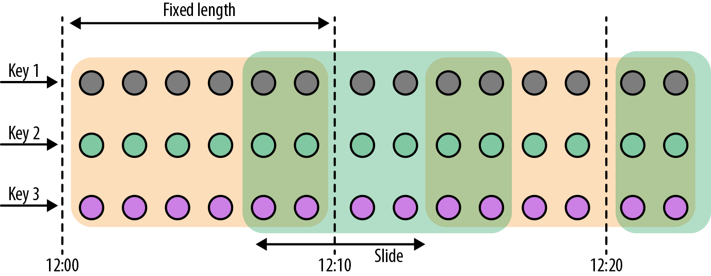
DataStream<T> slidingAvgTemp = sensorData
.keyBy(r -> r.id)
.window(
SlidingEventTimeWindows.of(Time.hours(1), Time.minutes(15))
)
.process(new TemperatureAverager);
DataStream<T> slidingAvgTemp = sensorData
.keyBy(r -> r.id)
.window(
SlidingProcessingTimeWindows.of(Time.hours(1), Time.minutes(15))
)
.process(new TemperatureAverager);
DataStream<T> slidingAvgTemp = sensorData
.keyBy(r -> r.id)
.timeWindow(Time.hours(1), Time.minutes(15))
.process(new TemperatureAverager);
会话窗口(session windows)
会话窗口不可能重叠，并且会话窗口的大小也不是固定的。不活跃的时间长度定义了会话窗口的界限。不活跃的时间是指这段时间没有元素到达。下图展示了元素如何被分配到会话窗口。

DataStream<T> sessionWindows = sensorData
.keyBy(r -> r.id)
.window(EventTimeSessionWindows.withGap(Time.minutes(15)))
.process(...);
DataStream<T> sessionWindows = sensorData
.keyBy(r -> r.id)
.window(ProcessingTimeSessionWindows.withGap(Time.minutes(15)))
.process(...);
由于会话窗口的开始时间和结束时间取决于接收到的元素，所以窗口分配器无法立即将所有的元素分配到正确的窗口中去。相反，会话窗口分配器最开始时先将每一个元素分配到它自己独有的窗口中去，窗口开始时间是这个元素的时间戳，窗口大小是session gap的大小。接下来，会话窗口分配器会将出现重叠的窗口合并成一个窗口。
调用窗口计算函数
window functions定义了窗口中数据的计算逻辑。有两种计算逻辑：
-
增量聚合函数(Incremental aggregation functions)：当一个事件被添加到窗口时，触发函数计算，并且更新window的状态(单个值)。最终聚合的结果将作为输出。ReduceFunction和AggregateFunction是增量聚合函数。
-
全窗口函数(Full window functions)：这个函数将会收集窗口中所有的元素，可以做一些复杂计算。ProcessWindowFunction是window function。
ReduceFunction
例子: 计算每个传感器15s窗口中的温度最小值
scala version
val minTempPerWindow = sensorData
.map(r => (r.id, r.temperature))
.keyBy(_._1)
.timeWindow(Time.seconds(15))
.reduce((r1, r2) => (r1._1, r1._2.min(r2._2)))
java version
DataStream<Tuple2<String, Double>> minTempPerwindow = sensorData
.map(new MapFunction<SensorReading, Tuple2<String, Double>>() {
@Override
public Tuple2<String, Double> map(SensorReading value) throws Exception {
return Tuple2.of(value.id, value.temperature);
}
})
.keyBy(r -> r.f0)
.timeWindow(Time.seconds(5))
.reduce(new ReduceFunction<Tuple2<String, Double>>() {
@Override
public Tuple2<String, Double> reduce(Tuple2<String, Double> value1, Tuple2<String, Double> value2) throws Exception {
if (value1.f1 < value2.f1) {
return value1;
} else {
return value2;
}
}
})
AggregateFunction
先来看接口定义
public interface AggregateFunction<IN, ACC, OUT>
extends Function, Serializable {
// create a new accumulator to start a new aggregate
ACC createAccumulator();
// add an input element to the accumulator and return the accumulator
ACC add(IN value, ACC accumulator);
// compute the result from the accumulator and return it.
OUT getResult(ACC accumulator);
// merge two accumulators and return the result.
ACC merge(ACC a, ACC b);
}
IN是输入元素的类型，ACC是累加器的类型，OUT是输出元素的类型。
例子
val avgTempPerWindow: DataStream[(String, Double)] = sensorData
.map(r => (r.id, r.temperature))
.keyBy(_._1)
.timeWindow(Time.seconds(15))
.aggregate(new AvgTempFunction)
// An AggregateFunction to compute the average temperature per sensor.
// The accumulator holds the sum of temperatures and an event count.
class AvgTempFunction
extends AggregateFunction[(String, Double),
(String, Double, Int), (String, Double)] {
override def createAccumulator() = {
("", 0.0, 0)
}
override def add(in: (String, Double), acc: (String, Double, Int)) = {
(in._1, in._2 + acc._2, 1 + acc._3)
}
override def getResult(acc: (String, Double, Int)) = {
(acc._1, acc._2 / acc._3)
}
override def merge(acc1: (String, Double, Int),
acc2: (String, Double, Int)) = {
(acc1._1, acc1._2 + acc2._2, acc1._3 + acc2._3)
}
}
ProcessWindowFunction
一些业务场景，我们需要收集窗口内所有的数据进行计算，例如计算窗口数据的中位数，或者计算窗口数据中出现频率最高的值。这样的需求，使用ReduceFunction和AggregateFunction就无法实现了。这个时候就需要ProcessWindowFunction了。
先来看接口定义
public abstract class ProcessWindowFunction<IN, OUT, KEY, W extends Window>
extends AbstractRichFunction {
// Evaluates the window
void process(KEY key, Context ctx, Iterable<IN> vals, Collector<OUT> out)
throws Exception;
// Deletes any custom per-window state when the window is purged
public void clear(Context ctx) throws Exception {}
// The context holding window metadata
public abstract class Context implements Serializable {
// Returns the metadata of the window
public abstract W window();
// Returns the current processing time
public abstract long currentProcessingTime();
// Returns the current event-time watermark
public abstract long currentWatermark();
// State accessor for per-window state
public abstract KeyedStateStore windowState();
// State accessor for per-key global state
public abstract KeyedStateStore globalState();
// Emits a record to the side output identified by the OutputTag.
public abstract <X> void output(OutputTag<X> outputTag, X value);
}
}
process()方法接受的参数为：window的key，Iterable迭代器包含窗口的所有元素，Collector用于输出结果流。Context参数和别的process方法一样。而ProcessWindowFunction的Context对象还可以访问window的元数据(窗口开始和结束时间)，当前处理时间和水位线，per-window state和per-key global state，side outputs。
- per-window state: 用于保存一些信息，这些信息可以被process()访问，只要process所处理的元素属于这个窗口。
- per-key global state: 同一个key，也就是在一条KeyedStream上，不同的window可以访问per-key global state保存的值。
例子：计算5s滚动窗口中的最低和最高的温度。输出的元素包含了(流的Key, 最低温度, 最高温度, 窗口结束时间)。
val minMaxTempPerWindow: DataStream[MinMaxTemp] = sensorData
.keyBy(_.id)
.timeWindow(Time.seconds(5))
.process(new HighAndLowTempProcessFunction)
case class MinMaxTemp(id: String, min: Double, max: Double, endTs: Long)
class HighAndLowTempProcessFunction
extends ProcessWindowFunction[SensorReading,
MinMaxTemp, String, TimeWindow] {
override def process(key: String,
ctx: Context,
vals: Iterable[SensorReading],
out: Collector[MinMaxTemp]): Unit = {
val temps = vals.map(_.temperature)
val windowEnd = ctx.window.getEnd
out.collect(MinMaxTemp(key, temps.min, temps.max, windowEnd))
}
}
我们还可以将ReduceFunction/AggregateFunction和ProcessWindowFunction结合起来使用。ReduceFunction/AggregateFunction做增量聚合，ProcessWindowFunction提供更多的对数据流的访问权限。如果只使用ProcessWindowFunction(底层的实现为将事件都保存在ListState中)，将会非常占用空间。分配到某个窗口的元素将被提前聚合，而当窗口的trigger触发时，也就是窗口收集完数据关闭时，将会把聚合结果发送到ProcessWindowFunction中，这时Iterable参数将会只有一个值，就是前面聚合的值。
例子
input
.keyBy(...)
.timeWindow(...)
.reduce(
incrAggregator: ReduceFunction[IN],
function: ProcessWindowFunction[IN, OUT, K, W])
input
.keyBy(...)
.timeWindow(...)
.aggregate(
incrAggregator: AggregateFunction[IN, ACC, V],
windowFunction: ProcessWindowFunction[V, OUT, K, W])
我们把之前的需求重新使用以上两种方法实现一下。
case class MinMaxTemp(id: String, min: Double, max: Double, endTs: Long)
val minMaxTempPerWindow2: DataStream[MinMaxTemp] = sensorData
.map(r => (r.id, r.temperature, r.temperature))
.keyBy(_._1)
.timeWindow(Time.seconds(5))
.reduce(
(r1: (String, Double, Double), r2: (String, Double, Double)) => {
(r1._1, r1._2.min(r2._2), r1._3.max(r2._3))
},
new AssignWindowEndProcessFunction
)
class AssignWindowEndProcessFunction
extends ProcessWindowFunction[(String, Double, Double),
MinMaxTemp, String, TimeWindow] {
override def process(key: String,
ctx: Context,
minMaxIt: Iterable[(String, Double, Double)],
out: Collector[MinMaxTemp]): Unit = {
val minMax = minMaxIt.head
val windowEnd = ctx.window.getEnd
out.collect(MinMaxTemp(key, minMax._2, minMax._3, windowEnd))
}
}
自定义窗口操作符
Flink内置的window operators分配器已经已经足够应付大多数应用场景。尽管如此，如果我们需要实现一些复杂的窗口逻辑，例如：可以发射早到的事件或者碰到迟到的事件就更新窗口的结果，或者窗口的开始和结束决定于特定事件的接收。
DataStream API暴露了接口和方法来自定义窗口操作符。
- 自定义窗口分配器
- 自定义窗口计算触发器(trigger)
- 自定义窗口数据清理功能(evictor)
当一个事件来到窗口操作符，首先将会传给WindowAssigner来处理。WindowAssigner决定了事件将被分配到哪些窗口。如果窗口不存在，WindowAssigner将会创建一个新的窗口。
如果一个window operator接受了一个增量聚合函数作为参数，例如ReduceFunction或者AggregateFunction，新到的元素将会立即被聚合，而聚合结果result将存储在window中。如果window operator没有使用增量聚合函数，那么新元素将被添加到ListState中，ListState中保存了所有分配给窗口的元素。
新元素被添加到窗口时，这个新元素同时也被传给了window的trigger。trigger定义了window何时准备好求值，何时window被清空。trigger可以基于window被分配的元素和注册的定时器来对窗口的所有元素求值或者在特定事件清空window中所有的元素。
当window operator只接收一个增量聚合函数作为参数时：
当window operator只接收一个全窗口函数作为参数时：
当window operator接收一个增量聚合函数和一个全窗口函数作为参数时：
evictor是一个可选的组件，可以被注入到ProcessWindowFunction之前或者之后调用。evictor可以清除掉window中收集的元素。由于evictor需要迭代所有的元素，所以evictor只能使用在没有增量聚合函数作为参数的情况下。
下面的代码说明了如果使用自定义的trigger和evictor定义一个window operator：
stream
.keyBy(...)
.window(...)
[.trigger(...)]
[.evictor(...)]
.reduce/aggregate/process(...)
注意：每个WindowAssigner都有一个默认的trigger。
窗口生命周期
当WindowAssigner分配某个窗口的第一个元素时，这个窗口才会被创建。所以不存在没有元素的窗口。
一个窗口包含了如下状态：
- Window content
- 分配到这个窗口的元素
- 增量聚合的结果(如果window operator接收了ReduceFunction或者AggregateFunction作为参数)。
- Window object
- WindowAssigner返回0个，1个或者多个window object。
- window operator根据返回的window object来聚合元素。
- 每一个window object包含一个windowEnd时间戳，来区别于其他窗口。
- 触发器的定时器：一个触发器可以注册定时事件，到了定时的时间可以执行相应的回调函数，例如：对窗口进行求值或者清空窗口。
- 触发器中的自定义状态：触发器可以定义和使用自定义的、per-window或者per-key状态。这个状态完全被触发器所控制。而不是被window operator控制。
当窗口结束时间来到，window operator将删掉这个窗口。窗口结束时间是由window object的end timestamp所定义的。无论是使用processing time还是event time，窗口结束时间是什么类型可以调用WindowAssigner.isEventTime()方法获得。
窗口分配器(window assigners)
WindowAssigner将会把元素分配到0个，1个或者多个窗口中去。我们看一下WindowAssigner接口：
public abstract class WindowAssigner<T, W extends Window>
implements Serializable {
public abstract Collection<W> assignWindows(
T element,
long timestamp,
WindowAssignerContext context);
public abstract Trigger<T, W> getDefaultTriger(
StreamExecutionEnvironment env);
public abstract TypeSerializer<W> getWindowSerializer(
ExecutionConfig executionConfig);
public abstract boolean isEventTime();
public abstract static class WindowAssignerContext {
public abstract long getCurrentProcessingTime();
}
}
WindowAssigner有两个泛型参数：
- T: 事件的数据类型
- W: 窗口的类型
下面的代码创建了一个自定义窗口分配器，是一个30秒的滚动事件时间窗口。
class ThirtySecondsWindows
extends WindowAssigner[Object, TimeWindow] {
val windowSize: Long = 30 * 1000L
override def assignWindows(
o: Object,
ts: Long,
ctx: WindowAssigner.WindowAssignerContext
): java.util.List[TimeWindow] = {
val startTime = ts - (ts % windowSize)
val endTime = startTime + windowSize
Collections.singletonList(new TimeWindow(startTime, endTime))
}
override def getDefaultTrigger(
env: environment.StreamExecutionEnvironment
): Trigger[Object, TimeWindow] = {
EventTimeTrigger.create()
}
override def getWindowSerializer(
executionConfig: ExecutionConfig
): TypeSerializer[TimeWindow] = {
new TimeWindow.Serializer
}
override def isEventTime = true
}
增量聚合示意图

全窗口聚合示意图

增量聚合和全窗口聚合结合使用的示意图
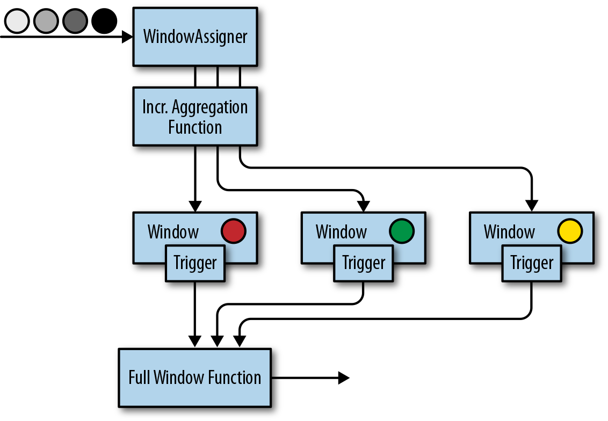
触发器(Triggers)
触发器定义了window何时会被求值以及何时发送求值结果。触发器可以到了特定的时间触发也可以碰到特定的事件触发。例如：观察到事件数量符合一定条件或者观察到了特定的事件。
默认的触发器将会在两种情况下触发
- 处理时间：机器时间到达处理时间
- 事件时间：水位线超过了窗口的结束时间
触发器可以访问流的时间属性以及定时器，还可以对state状态编程。所以触发器和process function一样强大。例如我们可以实现一个触发逻辑：当窗口接收到一定数量的元素时，触发器触发。再比如当窗口接收到一个特定元素时，触发器触发。还有就是当窗口接收到的元素里面包含特定模式(5秒钟内接收到了两个同样类型的事件)，触发器也可以触发。在一个事件时间的窗口中，一个自定义的触发器可以提前(在水位线没过窗口结束时间之前)计算和发射计算结果。这是一个常见的低延迟计算策略，尽管计算不完全，但不像默认的那样需要等待水位线没过窗口结束时间。
每次调用触发器都会产生一个TriggerResult来决定窗口接下来发生什么。TriggerResult可以取以下结果：
- CONTINUE：什么都不做
- FIRE：如果window operator有ProcessWindowFunction这个参数，将会调用这个ProcessWindowFunction。如果窗口仅有增量聚合函数(ReduceFunction或者AggregateFunction)作为参数，那么当前的聚合结果将会被发送。窗口的state不变。
- PURGE：窗口所有内容包括窗口的元数据都将被丢弃。
- FIRE_AND_PURGE：先对窗口进行求值，再将窗口中的内容丢弃。
TriggerResult可能的取值使得我们可以实现很复杂的窗口逻辑。一个自定义触发器可以触发多次，可以计算或者更新结果，可以在发送结果之前清空窗口。
接下来我们看一下Trigger API：
public abstract class Trigger<T, W extends Window>
implements Serializable {
TriggerResult onElement(
long timestamp,
W window,
TriggerContext ctx);
public abstract TriggerResult onProcessingTime(
long timestamp,
W window,
TriggerContext ctx);
public abstract TriggerResult onEventTime(
long timestamp,
W window,
TriggerContext ctx);
public boolean canMerge();
public void onMerge(W window, OnMergeContext ctx);
public abstract void clear(W window, TriggerContext ctx);
}
public interface TriggerContext {
long getCurrentProcessingTime();
long getCurrentWatermark();
void registerProcessingTimeTimer(long time);
void registerEventTimeTimer(long time);
void deleteProcessingTimeTimer(long time);
void deleteEventTimeTimer(long time);
<S extends State> S getPartitionedState(
StateDescriptor<S, ?> stateDescriptor);
}
public interface OnMergeContext extends TriggerContext {
void mergePartitionedState(
StateDescriptor<S, ?> stateDescriptor
);
}
这里要注意两个地方：清空state和merging合并触发器。
当在触发器中使用per-window state时，这里我们需要保证当窗口被删除时state也要被删除，否则随着时间的推移，window operator将会积累越来越多的数据，最终可能使应用崩溃。
当窗口被删除时，为了清空所有状态，触发器的clear()方法需要需要删掉所有的自定义per-window state，以及使用TriggerContext对象将处理时间和事件时间的定时器都删除。
下面的例子展示了一个触发器在窗口结束时间之前触发。当第一个事件被分配到窗口时，这个触发器注册了一个定时器，定时时间为水位线之前一秒钟。当定时事件执行，将会注册一个新的定时事件，这样，这个触发器每秒钟最多触发一次。
class OneSecondIntervalTrigger
extends Trigger[SensorReading, TimeWindow] {
override def onElement(
SensorReading r,
timestamp: Long,
window: TimeWindow,
ctx: Trigger.TriggerContext
): TriggerResult = {
val firstSeen: ValueState[Boolean] = ctx
.getPartitionedState(
new ValueStateDescriptor[Boolean](
"firstSeen", classOf[Boolean]
)
)
if (!firstSeen.value()) {
val t = ctx.getCurrentWatermark
+ (1000 - (ctx.getCurrentWatermark % 1000))
ctx.registerEventTimeTimer(t)
ctx.registerEventTimeTimer(window.getEnd)
firstSeen.update(true)
}
TriggerResult.CONTINUE
}
override def onEventTime(
timestamp: Long,
window: TimeWindow,
ctx: Trigger.TriggerContext
): TriggerResult = {
if (timestamp == window.getEnd) {
TriggerResult.FIRE_AND_PURGE
} else {
val t = ctx.getCurrentWatermark
+ (1000 - (ctx.getCurrentWatermark % 1000))
if (t < window.getEnd) {
ctx.registerEventTimeTimer(t)
}
TriggerResult.FIRE
}
}
override def onProcessingTime(
timestamp: Long,
window: TimeWindow,
ctx: Trigger.TriggerContext
): TriggerResult = {
TriggerResult.CONTINUE
}
override def clear(
window: TimeWindow,
ctx: Trigger.TriggerContext
): Unit = {
val firstSeen: ValueState[Boolean] = ctx
.getPartitionedState(
new ValueStateDescriptor[Boolean](
"firstSeen", classOf[Boolean]
)
)
firstSeen.clear()
}
}
清理器(EVICTORS)
evictor可以在window function求值之前或者之后移除窗口中的元素。
我们看一下Evictor的接口定义：
public interface Evictor<T, W extends Window>
extends Serializable {
void evictBefore(
Iterable<TimestampedValue<T>> elements,
int size,
W window,
EvictorContext evictorContext);
void evictAfter(
Iterable<TimestampedValue<T>> elements,
int size,
W window,
EvictorContext evictorContext);
interface EvictorContext {
long getCurrentProcessingTime();
long getCurrentWatermark();
}
}
evictBefore()和evictAfter()分别在window function计算之前或者之后调用。Iterable迭代器包含了窗口所有的元素，size为窗口中元素的数量，window object和EvictorContext可以访问当前处理时间和水位线。可以对Iterator调用remove()方法来移除窗口中的元素。
evictor也经常被用在GlobalWindow上，用来清除部分元素，而不是将窗口中的元素全部清空。
基于时间的双流Join
数据流操作的另一个常见需求是对两条数据流中的事件进行联结（connect）或Join。Flink DataStream API中内置有两个可以根据时间条件对数据流进行Join的算子：基于间隔的Join和基于窗口的Join。本节我们会对它们进行介绍。
如果Flink内置的Join算子无法表达所需的Join语义，那么你可以通过CoProcessFunction、BroadcastProcessFunction或KeyedBroadcastProcessFunction实现自定义的Join逻辑。
注意，你要设计的Join算子需要具备高效的状态访问模式及有效的状态清理策略。
基于间隔的Join
基于间隔的Join会对两条流中拥有相同键值以及彼此之间时间戳不超过某一指定间隔的事件进行Join。
下图展示了两条流（A和B）上基于间隔的Join，如果B中事件的时间戳相较于A中事件的时间戳不早于1小时且不晚于15分钟，则会将两个事件Join起来。Join间隔具有对称性，因此上面的条件也可以表示为A中事件的时间戳相较B中事件的时间戳不早于15分钟且不晚于1小时。
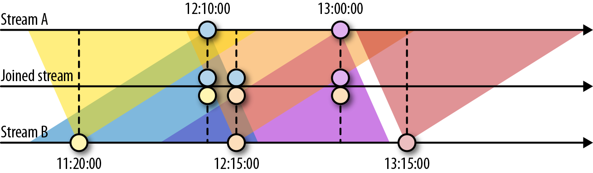
基于间隔的Join目前只支持事件时间以及INNER JOIN语义（无法发出未匹配成功的事件）。下面的例子定义了一个基于间隔的Join。
input1
.keyBy(...)
.between(<lower-bound>, <upper-bound>) // 相对于input1的上下界
.process(ProcessJoinFunction) // 处理匹配的事件对
Join成功的事件对会发送给ProcessJoinFunction。下界和上界分别由负时间间隔和正时间间隔来定义，例如between(Time.hour(-1), Time.minute(15))。在满足下界值小于上界值的前提下，你可以任意对它们赋值。例如，允许出现B中事件的时间戳相较A中事件的时间戳早1～2小时这样的条件。
基于间隔的Join需要同时对双流的记录进行缓冲。对第一个输入而言，所有时间戳大于当前水位线减去间隔上界的数据都会被缓冲起来；对第二个输入而言，所有时间戳大于当前水位线加上间隔下界的数据都会被缓冲起来。注意，两侧边界值都有可能为负。上图中的Join需要存储数据流A中所有时间戳大于当前水位线减去15分钟的记录，以及数据流B中所有时间戳大于当前水位线减去1小时的记录。不难想象，如果两条流的事件时间不同步，那么Join所需的存储就会显著增加，因为水位线总是由“较慢”的那条流来决定。
例子：每个用户的点击Join这个用户最近10分钟内的浏览
import org.apache.flink.streaming.api.TimeCharacteristic
import org.apache.flink.streaming.api.functions.co.ProcessJoinFunction
import org.apache.flink.streaming.api.functions.timestamps.BoundedOutOfOrdernessTimestampExtractor
import org.apache.flink.streaming.api.scala._
import org.apache.flink.streaming.api.windowing.time.Time
import org.apache.flink.util.Collector
import org.joda.time.DateTime
import org.joda.time.format.DateTimeFormat
// 需求：每个用户的点击Join这个用户最近10分钟内的浏览
// 数据流clickStream
// 某个用户在某个时刻点击了某个页面
// {"userID": "user_2", "eventTime": "2019-11-16 17:30:02", "eventType": "click", "pageID": "page_1"}
// 数据流browseStream
// 某个用户在某个时刻浏览了某个商品，以及商品的价值
// {"userID": "user_2", "eventTime": "2019-11-16 17:30:01", "eventType": "browse", "productID": "product_1", "productPrice": 10}
object IntervalJoinExample {
case class UserClickLog(userID: String,
eventTime: String,
eventType: String,
pageID: String)
case class UserBrowseLog(userID: String,
eventTime: String,
eventType: String,
productID: String,
productPrice: String)
def main(args: Array[String]): Unit = {
StreamExecutionEnvironment env = StreamExecutionEnvironment.getExecutionEnvironment
env.setParallelism(1)
env.setStreamTimeCharacteristic(TimeCharacteristic.EventTime)
val clickStream = env
.fromElements(
UserClickLog("user_2", "2019-11-16 17:30:00", "click", "page_1")
)
.assignTimestampsAndWatermarks(
new BoundedOutOfOrdernessTimestampExtractor[UserClickLog](Time.seconds(0)) {
override def extractTimestamp(t: UserClickLog): Long = {
val dateTimeFormatter = DateTimeFormat.forPattern("yyyy-MM-dd HH:mm:ss")
val dateTime = DateTime.parse(t.eventTime, dateTimeFormatter)
dateTime.getMillis
}
}
)
val browseStream = env
.fromElements(
UserBrowseLog("user_2", "2019-11-16 17:19:00", "browse", "product_1", "10"),
UserBrowseLog("user_2", "2019-11-16 17:20:00", "browse", "product_1", "10"),
UserBrowseLog("user_2", "2019-11-16 17:22:00", "browse", "product_1", "10"),
UserBrowseLog("user_2", "2019-11-16 17:26:00", "browse", "product_1", "10"),
UserBrowseLog("user_2", "2019-11-16 17:30:00", "browse", "product_1", "10"),
UserBrowseLog("user_2", "2019-11-16 17:31:00", "browse", "product_1", "10")
)
.assignTimestampsAndWatermarks(
new BoundedOutOfOrdernessTimestampExtractor[UserBrowseLog](Time.seconds(0)) {
override def extractTimestamp(t: UserBrowseLog): Long = {
val dateTimeFormatter = DateTimeFormat.forPattern("yyyy-MM-dd HH:mm:ss")
val dateTime = DateTime.parse(t.eventTime, dateTimeFormatter)
dateTime.getMillis
}
}
)
clickStream
.keyBy("userID")
.intervalJoin(browseStream.keyBy("userID"))
.between(Time.minutes(-10),Time.seconds(0))
.process(new MyIntervalJoin)
.print()
env.execute()
}
class MyIntervalJoin extends ProcessJoinFunction[UserClickLog, UserBrowseLog, String] {
override def processElement(
left: UserClickLog,
right: UserBrowseLog,
context: ProcessJoinFunction[UserClickLog, UserBrowseLog, String]#Context,
out: Collector[String]
): Unit = {
out.collect(left +" =Interval Join=> "+right)
}
}
}
基于窗口的Join
顾名思义，基于窗口的Join需要用到Flink中的窗口机制。其原理是将两条输入流中的元素分配到公共窗口中并在窗口完成时进行Join（或Cogroup）。
下面的例子展示了如何定义基于窗口的Join。
input1.join(input2)
.where(...) // 为input1指定键值属性
.equalTo(...) // 为input2指定键值属性
.window(...) // 指定WindowAssigner
[.trigger(...)] // 选择性的指定Trigger
[.evictor(...)] // 选择性的指定Evictor
.apply(...) // 指定JoinFunction
下图展示了DataStream API中基于窗口的Join是如何工作的。

两条输入流都会根据各自的键值属性进行分区，公共窗口分配器会将二者的事件映射到公共窗口内（其中同时存储了两条流中的数据）。当窗口的计时器触发时，算子会遍历两个输入中元素的每个组合（叉乘积）去调用JoinFunction。同时你也可以自定义触发器或移除器。由于两条流中的事件会被映射到同一个窗口中，因此该过程中的触发器和移除器与常规窗口算子中的完全相同。
除了对窗口中的两条流进行Join，你还可以对它们进行Cogroup，只需将算子定义开始位置的join改为coGroup()即可。Join和Cogroup的总体逻辑相同，二者的唯一区别是：Join会为两侧输入中的每个事件对调用JoinFunction；而Cogroup中用到的CoGroupFunction会以两个输入的元素遍历器为参数，只在每个窗口中被调用一次。
注意，对划分窗口后的数据流进行Join可能会产生意想不到的语义。例如，假设你为执行Join操作的算子配置了1小时的滚动窗口，那么一旦来自两个输入的元素没有被划分到同一窗口，它们就无法Join在一起，即使二者彼此仅相差1秒钟。
处理迟到的元素
水位线可以用来平衡计算的完整性和延迟两方面。除非我们选择一种非常保守的水位线策略(最大延时设置的非常大，以至于包含了所有的元素，但结果是非常大的延迟)，否则我们总需要处理迟到的元素。
迟到的元素是指当这个元素来到时，这个元素所对应的窗口已经计算完毕了(也就是说水位线已经没过窗口结束时间了)。这说明迟到这个特性只针对事件时间。
DataStream API提供了三种策略来处理迟到元素
- 直接抛弃迟到的元素
- 将迟到的元素发送到另一条流中去
- 可以更新窗口已经计算完的结果，并发出计算结果。
抛弃迟到元素
抛弃迟到的元素是event time window operator的默认行为。也就是说一个迟到的元素不会创建一个新的窗口。
process function可以通过比较迟到元素的时间戳和当前水位线的大小来很轻易的过滤掉迟到元素。
重定向迟到元素
迟到的元素也可以使用侧输出(side output)特性被重定向到另外的一条流中去。迟到元素所组成的侧输出流可以继续处理或者sink到持久化设施中去。
例子
scala version
val readings = env
.socketTextStream("localhost", 9999, '\n')
.map(line => {
val arr = line.split(" ")
(arr(0), arr(1).toLong * 1000)
})
.assignAscendingTimestamps(_._2)
val countPer10Secs = readings
.keyBy(_._1)
.timeWindow(Time.seconds(10))
.sideOutputLateData(
new OutputTag[(String, Long)]("late-readings")
)
.process(new CountFunction())
val lateStream = countPer10Secs
.getSideOutput(
new OutputTag[(String, Long)]("late-readings")
)
lateStream.print()
实现CountFunction:
class CountFunction extends ProcessWindowFunction[(String, Long),
String, String, TimeWindow] {
override def process(key: String,
context: Context,
elements: Iterable[(String, Long)],
out: Collector[String]): Unit = {
out.collect("窗口共有" + elements.size + "条数据")
}
}
java version
public class RedirectLateEvent {
private static OutputTag<Tuple2<String, Long>> output = new OutputTag<Tuple2<String, Long>>("late-readings"){};
public static void main(String[] args) throws Exception {
StreamExecutionEnvironment env = StreamExecutionEnvironment.getExecutionEnvironment();
env.setParallelism(1);
env.setStreamTimeCharacteristic(TimeCharacteristic.EventTime);
DataStream<Tuple2<String, Long>> stream = env
.socketTextStream("localhost", 9999)
.map(new MapFunction<String, Tuple2<String, Long>>() {
@Override
public Tuple2<String, Long> map(String s) throws Exception {
String[] arr = s.split(" ");
return Tuple2.of(arr[0], Long.parseLong(arr[1]) * 1000L);
}
})
.assignTimestampsAndWatermarks(
WatermarkStrategy.
// like scala: assignAscendingTimestamps(_._2)
<Tuple2<String, Long>>forMonotonousTimestamps()
.withTimestampAssigner(new SerializableTimestampAssigner<Tuple2<String, Long>>() {
@Override
public long extractTimestamp(Tuple2<String, Long> value, long l) {
return value.f1;
}
})
);
SingleOutputStreamOperator<String> lateReadings = stream
.keyBy(r -> r.f0)
.timeWindow(Time.seconds(5))
.sideOutputLateData(output) // use after keyBy and timeWindow
.process(new ProcessWindowFunction<Tuple2<String, Long>, String, String, TimeWindow>() {
@Override
public void process(String s, Context context, Iterable<Tuple2<String, Long>> iterable, Collector<String> collector) throws Exception {
long exactSizeIfKnown = iterable.spliterator().getExactSizeIfKnown();
collector.collect(exactSizeIfKnown + " of elements");
}
});
lateReadings.print();
lateReadings.getSideOutput(output).print();
env.execute();
}
}
下面这个例子展示了ProcessFunction如何过滤掉迟到的元素然后将迟到的元素发送到侧输出流中去。
scala version
val readings: DataStream[SensorReading] = ...
val filteredReadings: DataStream[SensorReading] = readings
.process(new LateReadingsFilter)
// retrieve late readings
val lateReadings: DataStream[SensorReading] = filteredReadings
.getSideOutput(new OutputTag[SensorReading]("late-readings"))
/** A ProcessFunction that filters out late sensor readings and
* re-directs them to a side output */
class LateReadingsFilter
extends ProcessFunction[SensorReading, SensorReading] {
val lateReadingsOut = new OutputTag[SensorReading]("late-readings")
override def processElement(
SensorReading r,
ctx: ProcessFunction[SensorReading, SensorReading]#Context,
out: Collector[SensorReading]): Unit = {
// compare record timestamp with current watermark
if (r.timestamp < ctx.timerService().currentWatermark()) {
// this is a late reading => redirect it to the side output
ctx.output(lateReadingsOut, r)
} else {
out.collect(r)
}
}
}
java version
public class RedirectLateEvent {
private static OutputTag<String> output = new OutputTag<String>("late-readings"){};
public static void main(String[] args) throws Exception {
StreamExecutionEnvironment env = StreamExecutionEnvironment.getExecutionEnvironment();
env.setParallelism(1);
env.setStreamTimeCharacteristic(TimeCharacteristic.EventTime);
SingleOutputStreamOperator<Tuple2<String, Long>> stream = env
.socketTextStream("localhost", 9999)
.map(new MapFunction<String, Tuple2<String, Long>>() {
@Override
public Tuple2<String, Long> map(String s) throws Exception {
String[] arr = s.split(" ");
return Tuple2.of(arr[0], Long.parseLong(arr[1]) * 1000L);
}
})
.assignTimestampsAndWatermarks(
WatermarkStrategy.
<Tuple2<String, Long>>forMonotonousTimestamps()
.withTimestampAssigner(new SerializableTimestampAssigner<Tuple2<String, Long>>() {
@Override
public long extractTimestamp(Tuple2<String, Long> value, long l) {
return value.f1;
}
})
)
.process(new ProcessFunction<Tuple2<String, Long>, Tuple2<String, Long>>() {
@Override
public void processElement(Tuple2<String, Long> stringLongTuple2, Context context, Collector<Tuple2<String, Long>> collector) throws Exception {
if (stringLongTuple2.f1 < context.timerService().currentWatermark()) {
context.output(output, "late event is comming!");
} else {
collector.collect(stringLongTuple2);
}
}
});
stream.print();
stream.getSideOutput(output).print();
env.execute();
}
}
使用迟到元素更新窗口计算结果
由于存在迟到的元素，所以已经计算出的窗口结果是不准确和不完全的。我们可以使用迟到元素更新已经计算完的窗口结果。
如果我们要求一个operator支持重新计算和更新已经发出的结果，就需要在第一次发出结果以后也要保存之前所有的状态。但显然我们不能一直保存所有的状态，肯定会在某一个时间点将状态清空，而一旦状态被清空，结果就再也不能重新计算或者更新了。而迟到的元素只能被抛弃或者发送到侧输出流。
window operator API提供了方法来明确声明我们要等待迟到元素。当使用event-time window，我们可以指定一个时间段叫做allowed lateness。window operator如果设置了allowed lateness，这个window operator在水位线没过窗口结束时间时也将不会删除窗口和窗口中的状态。窗口会在一段时间内(allowed lateness设置的)保留所有的元素。
当迟到元素在allowed lateness时间内到达时，这个迟到元素会被实时处理并发送到触发器(trigger)。当水位线没过了窗口结束时间+allowed lateness时间时，窗口会被删除，并且所有后来的迟到的元素都会被丢弃。
Allowed lateness可以使用allowedLateness()方法来指定，如下所示：
val readings: DataStream[SensorReading] = ...
val countPer10Secs: DataStream[(String, Long, Int, String)] = readings
.keyBy(_.id)
.timeWindow(Time.seconds(10))
// process late readings for 5 additional seconds
.allowedLateness(Time.seconds(5))
// count readings and update results if late readings arrive
.process(new UpdatingWindowCountFunction)
/** A counting WindowProcessFunction that distinguishes between
* first results and updates. */
class UpdatingWindowCountFunction
extends ProcessWindowFunction[SensorReading,
(String, Long, Int, String), String, TimeWindow] {
@Override
public process(
id: String,
ctx: Context,
elements: Iterable[SensorReading],
out: Collector[(String, Long, Int, String)]): Unit = {
// count the number of readings
val cnt = elements.count(_ => true)
// state to check if this is
// the first evaluation of the window or not
val isUpdate = ctx.windowState.getState(
new ValueStateDescriptor[Boolean](
"isUpdate",
Types.of[Boolean]))
if (!isUpdate.value()) {
// first evaluation, emit first result
out.collect((id, ctx.window.getEnd, cnt, "first"))
isUpdate.update(true)
} else {
// not the first evaluation, emit an update
out.collect((id, ctx.window.getEnd, cnt, "update"))
}
}
}
第七章，有状态算子和应用
状态操作符和用户自定义函数都是我们在写流处理程序时，常用的工具。事实上，大部分稍微复杂一点的逻辑都需要保存数据或者保存计算结果。很多Flink内置的操作符例如：source操作符，sink操作符等等都是有状态的，也就是说会缓存流数据或者计算结果。例如，窗口操作符将会为ProcessWindowFunction收集输入的数据，或者收集ReduceFunction计算的结果。而ProcessFunction也会保存定时器事件，一些sink方法为了做到exactly-once，会将事务保存下来。除了内置的操作符以及提供的source和sink操作符，Flink的DataStream API还在UDF函数中暴露了可以注册、保存和访问状态的接口。
本章重点讨论有状态的用户自定义函数的实现，以及讨论有状态应用的性能和健壮性。特别的，我们将解释在用户自定义函数中，如何定义不同类型的状态，以及如何与状态进行交互。我们还讨论了性能方面的问题以及如何控制状态大小的问题。
实现有状态的用户自定义函数
我们知道函数有两种状态，键控状态(keyed state)和操作符状态(operator state)。
在RuntimeContext中定义键控状态
用户自定义函数可以使用keyed state来存储和访问key对应的状态。对于每一个key，Flink将会维护一个状态实例。一个操作符的状态实例将会被分发到操作符的所有并行任务中去。这表明函数的每一个并行任务只为所有key的某一部分key保存key对应的状态实例。所以keyed state和分布式key-value map数据结构非常类似。
keyed state仅可用于KeyedStream。Flink支持以下数据类型的状态变量：
- ValueState[T]保存单个的值，值的类型为T。
- get操作: ValueState.value()
- set操作: ValueState.update(value: T)
- ListState[T]保存一个列表，列表里的元素的数据类型为T。基本操作如下：
- ListState.add(value: T)
- ListState.addAll(values: java.util.List[T])
- ListState.get()返回Iterable[T]
- ListState.update(values: java.util.List[T])
- MapState[K, V]保存Key-Value对。
- MapState.get(key: K)
- MapState.put(key: K, value: V)
- MapState.contains(key: K)
- MapState.remove(key: K)
- ReducingState[T]
- AggregatingState[I, O]
State.clear()是清空操作。
scala version
val sensorData: DataStream[SensorReading] = ...
val keyedData: KeyedStream[SensorReading, String] = sensorData.keyBy(_.id)
val alerts: DataStream[(String, Double, Double)] = keyedData
.flatMap(new TemperatureAlertFunction(1.7))
class TemperatureAlertFunction(val threshold: Double)
extends RichFlatMapFunction[SensorReading, (String, Double, Double)] {
private var lastTempState: ValueState[Double] = _
override def open(parameters: Configuration): Unit = {
val lastTempDescriptor = new ValueStateDescriptor[Double](
"lastTemp", classOf[Double])
lastTempState = getRuntimeContext.getState[Double](lastTempDescriptor)
}
override def flatMap(
reading: SensorReading,
out: Collector[(String, Double, Double)]
): Unit = {
val lastTemp = lastTempState.value()
val tempDiff = (reading.temperature - lastTemp).abs
if (tempDiff > threshold) {
out.collect((reading.id, reading.temperature, tempDiff))
}
this.lastTempState.update(reading.temperature)
}
}
上面例子中的FlatMapFunction只能访问当前处理的元素所包含的key所对应的状态变量。
不同key对应的keyed state是相互隔离的。
- 通过RuntimeContext注册StateDescriptor。StateDescriptor以状态state的名字和存储的数据类型为参数。数据类型必须指定，因为Flink需要选择合适的序列化器。
- 在open()方法中创建state变量。注意复习之前的RichFunction相关知识。
当一个函数注册了StateDescriptor描述符，Flink会检查状态后端是否已经存在这个状态。这种情况通常出现在应用挂掉要从检查点或者保存点恢复的时候。在这两种情况下，Flink会将注册的状态连接到已经存在的状态。如果不存在状态，则初始化一个空的状态。
使用FlatMap with keyed ValueState的快捷方式flatMapWithState也可以实现以上需求。
scala version
val alerts: DataStream[(String, Double, Double)] = keyedSensorData
.flatMapWithState[(String, Double, Double), Double] {
case (in: SensorReading, None) =>
// no previous temperature defined.
// Just update the last temperature
(List.empty, Some(in.temperature))
case (SensorReading r, lastTemp: Some[Double]) =>
// compare temperature difference with threshold
val tempDiff = (r.temperature - lastTemp.get).abs
if (tempDiff > 1.7) {
// threshold exceeded.
// Emit an alert and update the last temperature
(List((r.id, r.temperature, tempDiff)), Some(r.temperature))
} else {
// threshold not exceeded. Just update the last temperature
(List.empty, Some(r.temperature))
}
}
使用ListCheckpointed接口来实现操作符的列表状态
操作符状态会在操作符的每一个并行实例中去维护。一个操作符并行实例上的所有事件都可以访问同一个状态。Flink支持三种操作符状态：list state, list union state, broadcast state。
一个函数可以实现ListCheckpointed接口来处理操作符的list state。ListCheckpointed接口无法处理ValueState和ListState，因为这些状态是注册在状态后端的。操作符状态类似于成员变量，和状态后端的交互通过ListCheckpointed接口的回调函数实现。接口提供了两个方法：
// 返回函数状态的快照，返回值为列表
snapshotState(checkpointId: Long, timestamp: Long): java.util.List[T]
// 从列表恢复函数状态
restoreState(java.util.List[T] state): Unit
当Flink触发stateful functon的一次checkpoint时，snapshotState()方法会被调用。方法接收两个参数，checkpointId为唯一的单调递增的检查点Id，timestamp为当master机器开始做检查点操作时的墙上时钟（机器时间）。方法必须返回序列化好的状态对象的列表。
当宕机程序从检查点或者保存点恢复时会调用restoreState()方法。restoreState使用snapshotState保存的列表来恢复。
下面的例子展示了如何实现ListCheckpointed接口。业务场景为：一个对每一个并行实例的超过阈值的温度的计数程序。
class HighTempCounter(val threshold: Double)
extends RichFlatMapFunction[SensorReading, (Int, Long)]
with ListCheckpointed[java.lang.Long] {
// index of the subtask
private lazy val subtaskIdx = getRuntimeContext
.getIndexOfThisSubtask
// local count variable
private var highTempCnt = 0L
override def flatMap(
in: SensorReading,
out: Collector[(Int, Long)]): Unit = {
if (in.temperature > threshold) {
// increment counter if threshold is exceeded
highTempCnt += 1
// emit update with subtask index and counter
out.collect((subtaskIdx, highTempCnt))
}
}
override def restoreState(
state: util.List[java.lang.Long]): Unit = {
highTempCnt = 0
// restore state by adding all longs of the list
for (cnt <- state.asScala) {
highTempCnt += cnt
}
}
override def snapshotState(
chkpntId: Long,
ts: Long): java.util.List[java.lang.Long] = {
// snapshot state as list with a single count
java.util.Collections.singletonList(highTempCnt)
}
}
上面的例子中，每一个并行实例都计数了本实例有多少温度值超过了设定的阈值。例子中使用了操作符状态，并且每一个并行实例都拥有自己的状态变量，这个状态变量将会被检查点操作保存下来，并且可以通过使用ListCheckpointed接口来恢复状态变量。
看了上面的例子，我们可能会有疑问，那就是为什么操作符状态是状态对象的列表。这是因为列表数据结构支持包含操作符状态的函数的并行度改变的操作。为了增加或者减少包含了操作符状态的函数的并行度，操作符状态需要被重新分区到更多或者更少的并行任务实例中去。而这样的操作需要合并或者分割状态对象。而对于每一个有状态的函数，分割和合并状态对象都是很常见的操作，所以这显然不是任何类型的状态都能自动完成的。
通过提供一个状态对象的列表，拥有操作符状态的函数可以使用snapshotState()方法和restoreState()方法来实现以上所说的逻辑。snapshotState()方法将操作符状态分割成多个部分，restoreState()方法从所有的部分中将状态对象收集起来。当函数的操作符状态恢复时，状态变量将被分区到函数的所有不同的并行实例中去，并作为参数传递给restoreState()方法。如果并行任务的数量大于状态对象的数量，那么一些并行任务在开始的时候是没有状态的，所以restoreState()函数的参数为空列表。
再来看一下上面的程序，我们可以看到操作符的每一个并行实例都暴露了一个状态对象的列表。如果我们增加操作符的并行度，那么一些并行任务将会从0开始计数。为了获得更好的状态分区的行为，当HighTempCounter函数扩容时，我们可以按照下面的程序来实现snapshotState()方法，这样就可以把计数值分配到不同的并行计数中去了。
override def snapshotState(
chkpntId: Long,
ts: Long): java.util.List[java.lang.Long] = {
// split count into ten partial counts
val div = highTempCnt / 10
val mod = (highTempCnt % 10).toInt
// return count as ten parts
(List.fill(mod)(new java.lang.Long(div + 1)) ++
List.fill(10 - mod)(new java.lang.Long(div))).asJava
}
使用连接的广播状态
一个常见的需求就是流应用需要将同样的事件分发到操作符的所有的并行实例中，而这样的分发操作还得是可恢复的。
我们举个例子：一条流是一个规则(比如5秒钟内连续两个超过阈值的温度)，另一条流是待匹配的流。也就是说，规则流和事件流。所以每一个操作符的并行实例都需要把规则流保存在操作符状态中。也就是说，规则流需要被广播到所有的并行实例中去。
在Flink中，这样的状态叫做广播状态(broadcast state)。广播状态和DataStream或者KeyedStream都可以做连接操作。
下面的例子实现了一个温度报警应用，应用有可以动态设定的阈值，动态设定通过广播流来实现。
val sensorData: DataStream[SensorReading] = ...
val thresholds: DataStream[ThresholdUpdate] = ...
val keyedSensorData: KeyedStream[SensorReading, String] = sensorData
.keyBy(_.id)
// the descriptor of the broadcast state
val broadcastStateDescriptor =
new MapStateDescriptor[String, Double](
"thresholds", classOf[String], classOf[Double])
val broadcastThresholds: BroadcastStream[ThresholdUpdate] = thresholds
.broadcast(broadcastStateDescriptor)
// connect keyed sensor stream and broadcasted rules stream
val alerts: DataStream[(String, Double, Double)] = keyedSensorData
.connect(broadcastThresholds)
.process(new UpdatableTemperatureAlertFunction())
带有广播状态的函数在应用到两条流上时分三个步骤：
- 调用DataStream.broadcast()来创建BroadcastStream，定义一个或者多个MapStateDescriptor对象。
- 将BroadcastStream和DataStream/KeyedStream做connect操作。
- 在connected streams上调用KeyedBroadcastProcessFunction/BroadcastProcessFunction。
下面的例子实现了动态设定温度阈值的功能。
class UpdatableTemperatureAlertFunction()
extends KeyedBroadcastProcessFunction[String,
SensorReading, ThresholdUpdate, (String, Double, Double)] {
// the descriptor of the broadcast state
private lazy val thresholdStateDescriptor =
new MapStateDescriptor[String, Double](
"thresholds", classOf[String], classOf[Double])
// the keyed state handle
private var lastTempState: ValueState[Double] = _
override def open(parameters: Configuration): Unit = {
// create keyed state descriptor
val lastTempDescriptor = new ValueStateDescriptor[Double](
"lastTemp", classOf[Double])
// obtain the keyed state handle
lastTempState = getRuntimeContext
.getState[Double](lastTempDescriptor)
}
override def processBroadcastElement(
update: ThresholdUpdate,
ctx: KeyedBroadcastProcessFunction[String,
SensorReading, ThresholdUpdate,
(String, Double, Double)]#Context,
out: Collector[(String, Double, Double)]): Unit = {
// get broadcasted state handle
val thresholds = ctx
.getBroadcastState(thresholdStateDescriptor)
if (update.threshold != 0.0d) {
// configure a new threshold for the sensor
thresholds.put(update.id, update.threshold)
} else {
// remove threshold for the sensor
thresholds.remove(update.id)
}
}
override def processElement(
reading: SensorReading,
readOnlyCtx: KeyedBroadcastProcessFunction
[String, SensorReading, ThresholdUpdate,
(String, Double, Double)]#ReadOnlyContext,
out: Collector[(String, Double, Double)]): Unit = {
// get read-only broadcast state
val thresholds = readOnlyCtx
.getBroadcastState(thresholdStateDescriptor)
// check if we have a threshold
if (thresholds.contains(reading.id)) {
// get threshold for sensor
val sensorThreshold: Double = thresholds.get(reading.id)
// fetch the last temperature from state
val lastTemp = lastTempState.value()
// check if we need to emit an alert
val tempDiff = (reading.temperature - lastTemp).abs
if (tempDiff > sensorThreshold) {
// temperature increased by more than the threshold
out.collect((reading.id, reading.temperature, tempDiff))
}
}
// update lastTemp state
this.lastTempState.update(reading.temperature)
}
}
配置检查点
10秒钟保存一次检查点。
StreamExecutionEnvironment env = StreamExecutionEnvironment.getExecutionEnvironment;
// set checkpointing interval to 10 seconds (10000 milliseconds)
env.enableCheckpointing(10000L);
将hdfs配置为状态后端
首先在IDEA的pom文件中添加依赖：
<dependency>
<groupId>org.apache.hadoop</groupId>
<artifactId>hadoop-client</artifactId>
<version>2.8.3</version>
<!-- <scope>provided</scope>-->
</dependency>
在hdfs-site.xml添加:
<property>
<name>dfs.permissions</name>
<value>false</value>
</property>
别忘了重启hdfs文件系统！
然后添加本地文件夹和hdfs文件的映射：
hdfs getconf -confKey fs.default.name
hdfs dfs -put /home/parallels/flink/checkpoint hdfs://localhost:9000/flink
然后在代码中添加：
env.enableCheckpointing(5000)
env.setStateBackend(new FsStateBackend("hdfs://localhost:9000/flink"))
检查一下检查点正确保存了没有：
hdfs dfs -ls hdfs://localhost:9000/flink
保证有状态应用的可维护性
指定唯一的操作符标识符
每一个操作符都可以指定唯一的标识符。标识符将会作为操作符的元数据和状态数据一起保存到savepoint中去。当应用从保存点恢复时，标识符可以用来在savepoint中查找标识符对应的操作符的状态数据。标识符必须是唯一的，否则应用不知道从哪一个标识符恢复。
强烈建议为应用的每一个操作符定义唯一标识符。例子：
DataStream<Tuple3<String, Double, Double>> alerts = keyedSensorData
.flatMap(new TemperatureAlertFunction(1.1))
.uid("TempAlert");
指定操作符的最大并行度
操作符的最大并行度定义了操作符的keyed state可以被分到多少个key groups中。
StreamExecutionEnvironment env = StreamExecutionEnvironment.getExecutionEnvironment;
// set the maximum parallelism for this application
env.setMaxParallelism(512);
DataStream<Tuple3<String, Double, Double>> alerts = keyedSensorData
.flatMap(new TemperatureAlertFunction(1.1))
// set the maximum parallelism for this operator and
// override the application-wide value
.setMaxParallelism(1024);
有状态应用的性能和健壮性
选择一个状态后端
- MemoryStateBackend将状态当作Java的对象(没有序列化操作)存储在TaskManager JVM进程的堆上。
- FsStateBackend将状态存储在本地的文件系统或者远程的文件系统如HDFS。
- RocksDBStateBackend将状态存储在RocksDB \footnote{Facebook开源的KV数据库} 中。
StreamExecutionEnvironment env = StreamExecutionEnvironment.getExecutionEnvironment;
String checkpointPath = ???
// configure path for checkpoints on the remote filesystem
// env.setStateBackend(new FsStateBackend("file:///tmp/checkpoints"))
val backend = new RocksDBStateBackend(checkpointPath)
// configure the state backend
env.setStateBackend(backend);
防止状态泄露
流应用通常需要运行几个月或者几年。如果state数据不断增长的话，会爆炸。所以控制state数据的大小十分重要。而Flink并不会清理state和gc。所以所有的stateful operator都需要控制他们各自的状态数据大小，保证不爆炸。
例如我们之前讲过增量聚合函数ReduceFunction/AggregateFunction，就可以提前聚合而不给state太多压力。
我们来看一个例子，我们实现了一个KeyedProcessFunction，用来计算连续两次的温度的差值，如果差值超过阈值，报警。
我们之前实现过这个需求，但没有清理掉状态数据。比如一小时内不再产生温度数据的传感器对应的状态数据就可以清理掉了。
class SelfCleaningTemperatureAlertFunction(val threshold: Double)
extends KeyedProcessFunction[String,
SensorReading, (String, Double, Double)] {
// the keyed state handle for the last temperature
private var lastTempState: ValueState[Double] = _
// the keyed state handle for the last registered timer
private var lastTimerState: ValueState[Long] = _
@Override
public open(parameters: Configuration): Unit = {
// register state for last temperature
val lastTempDesc = new ValueStateDescriptor[Double](
"lastTemp", classOf[Double])
lastTempState = getRuntimeContext
.getState[Double](lastTempDescriptor)
// register state for last timer
val lastTimerDesc = new ValueStateDescriptor[Long](
"lastTimer", classOf[Long])
lastTimerState = getRuntimeContext
.getState(timestampDescriptor)
}
@Override
public processElement(
reading: SensorReading,
ctx: KeyedProcessFunction
[String, SensorReading, (String, Double, Double)]#Context,
out: Collector[(String, Double, Double)]): Unit = {
// compute timestamp of new clean up timer
// as record timestamp + one hour
val newTimer = ctx.timestamp() + (3600 * 1000)
// get timestamp of current timer
val curTimer = lastTimerState.value()
// delete previous timer and register new timer
ctx.timerService().deleteEventTimeTimer(curTimer)
ctx.timerService().registerEventTimeTimer(newTimer)
// update timer timestamp state
lastTimerState.update(newTimer)
// fetch the last temperature from state
val lastTemp = lastTempState.value()
// check if we need to emit an alert
val tempDiff = (reading.temperature - lastTemp).abs
if (tempDiff > threshold) {
// temperature increased by more than the threshold
out.collect((reading.id, reading.temperature, tempDiff))
}
// update lastTemp state
this.lastTempState.update(reading.temperature)
}
@Override
public onTimer(
timestamp: Long,
ctx: KeyedProcessFunction[String,
SensorReading, (String, Double, Double)]#OnTimerContext,
out: Collector[(String, Double, Double)]): Unit = {
// clear all state for the key
lastTempState.clear()
lastTimerState.clear()
}
}
第八章，读写外部系统
数据可以存储在不同的系统中，例如：文件系统，对象存储系统（OSS），关系型数据库，Key-Value存储，搜索引擎索引，日志系统，消息队列，等等。每一种系统都是给特定的应用场景设计的，在某一个特定的目标上超越了其他系统。今天的数据架构，往往包含着很多不同的存储系统。在将一个组件加入到我们的系统中时，我们需要问一个问题：“这个组件和架构中的其他组件能多好的一起工作？”
添加一个像Flink这样的数据处理系统，需要仔细的考虑。因为Flink没有自己的存储层，而是读取数据和持久化数据都需要依赖外部存储。所以，对于Flink，针对外部系统提供良好的读取和写入的连接器就很重要了。尽管如此，仅仅能够读写外部系统对于Flink这样想要提供任务故障情况下一致性保证的流处理器来讲，是不够的。
在本章中，我们将会讨论source和sink的连接器。这些连接器影响了Flink的一致性保证，也提供了对于最流行的一些外部系统的读写的连接器。我们还将学习如何实现自定义source和sink连接器，以及如何实现可以向外部系统发送异步读写请求的函数。
应用的一致性保证
Flink的检查点和恢复机制定期的会保存应用程序状态的一致性检查点。在故障的情况下，应用程序的状态将会从最近一次完成的检查点恢复，并继续处理。尽管如此，可以使用检查点来重置应用程序的状态无法完全达到令人满意的一致性保证。相反，source和sink的连接器需要和Flink的检查点和恢复机制进行集成才能提供有意义的一致性保证。
为了给应用程序提供恰好处理一次语义的状态一致性保证，应用程序的source连接器需要能够将source的读位置重置到之前保存的检查点位置。当处理一次检查点时，source操作符将会把source的读位置持久化，并在恢复的时候从这些读位置开始重新读取。支持读位置的检查点的source连接器一般来说是基于文件的存储系统，如：文件流或者Kafka source（检查点会持久化某个正在消费的topic的读偏移量）。如果一个应用程序从一个无法存储和重置读位置的source连接器摄入数据，那么当任务出现故障的时候，数据就会丢失。也就是说我们只能提供at-most-once）的一致性保证。
Fink的检查点和恢复机制和可以重置读位置的source连接器结合使用，可以保证应用程序不会丢失任何数据。尽管如此，应用程序可能会发出两次计算结果，因为从上一次检查点恢复的应用程序所计算的结果将会被重新发送一次（一些结果已经发送出去了，这时任务故障，然后从上一次检查点恢复，这些结果将被重新计算一次然后发送出去）。所以，可重置读位置的source和Flink的恢复机制不足以提供端到端的恰好处理一次语义，即使应用程序的状态是恰好处理一次一致性级别。
一个志在提供端到端恰好处理一次语义一致性的应用程序需要特殊的sink连接器。sink连接器可以在不同的情况下使用两种技术来达到恰好处理一次一致性语义：幂等性写入和事务性写入。
幂等性写入
一个幂等操作无论执行多少次都会返回同样的结果。例如，重复的向hashmap中插入同样的key-value对就是幂等操作，因为头一次插入操作之后所有的插入操作都不会改变这个hashmap，因为hashmap已经包含这个key-value对了。另一方面，append操作就不是幂等操作了，因为多次append同一个元素将会导致列表每次都会添加一个元素。在流处理程序中，幂等写入操作是很有意思的，因为幂等写入操作可以执行多次但不改变结果。所以它们可以在某种程度上缓和Flink检查点机制带来的重播计算结果的效应。
需要注意的是，依赖于幂等性sink来达到exactly-once语义的应用程序，必须保证在从检查点恢复以后，它将会覆盖之前已经写入的结果。例如，一个包含有sink操作的应用在sink到一个key-value存储时必须保证它能够确定的计算出将要更新的key值。同时，从Flink程序sink到的key-value存储中读取数据的应用，在Flink从检查点恢复的过程中，可能会看到不想看到的结果。当重播开始时，之前已经发出的计算结果可能会被更早的结果所覆盖（因为在恢复过程中）。所以，一个消费Flink程序输出数据的应用，可能会观察到时间回退，例如读到了比之前小的计数。也就是说，当流处理程序处于恢复过程中时，流处理程序的结果将处于不稳定的状态，因为一些结果被覆盖掉，而另一些结果还没有被覆盖。一旦重播完成，也就是说应用程序已经通过了之前出故障的点，结果将会继续保持一致性。
事务性写入
第二种实现端到端的恰好处理一次一致性语义的方法基于事务性写入。其思想是只将最近一次成功保存的检查点之前的计算结果写入到外部系统中去。这样就保证了在任务故障的情况下，端到端恰好处理一次语义。应用将被重置到最近一次的检查点，而在这个检查点之后并没有向外部系统发出任何计算结果。通过只有当检查点保存完成以后再写入数据这种方法，事务性的方法将不会遭受幂等性写入所遭受的重播不一致的问题。尽管如此，事务性写入却带来了延迟，因为只有在检查点完成以后，我们才能看到计算结果。
Flink提供了两种构建模块来实现事务性sink连接器：write-ahead-log（WAL，预写式日志）sink和两阶段提交sink。WAL式sink将会把所有计算结果写入到应用程序的状态中，等接到检查点完成的通知，才会将计算结果发送到sink系统。因为sink操作会把数据都缓存在状态后段，所以WAL可以使用在任何外部sink系统上。尽管如此，WAL还是无法提供刀枪不入的恰好处理一次语义的保证，再加上由于要缓存数据带来的状态后段的状态大小的问题，WAL模型并不十分完美。
与之形成对比的，2PC sink需要sink系统提供事务的支持或者可以模拟出事务特性的模块。对于每一个检查点，sink开始一个事务，然后将所有的接收到的数据都添加到事务中，并将这些数据写入到sink系统，但并没有提交（commit）它们。当事务接收到检查点完成的通知时，事务将被commit，数据将被真正的写入sink系统。这项机制主要依赖于一次sink可以在检查点完成之前开始事务，并在应用程序从一次故障中恢复以后再commit的能力。
2PC协议依赖于Flink的检查点机制。检查点屏障是开始一个新的事务的通知，所有操作符自己的检查点成功的通知是它们可以commit的投票，而作业管理器通知一个检查点成功的消息是commit事务的指令。于WAL sink形成对比的是，2PC sinks依赖于sink系统和sink本身的实现可以实现恰好处理一次语义。更多的，2PC sink不断的将数据写入到sink系统中，而WAL写模型就会有之前所述的问题。
| 不可重置的源 | 可重置的源 | |
|---|---|---|
| any sink | at-most-once | at-least-once |
| 幂等性sink | at-most-once | exactly-once（当从任务失败中恢复时，存在暂时的不一致性） |
| 预写式日志sink | at-most-once | at-least-once |
| 2PC sink | at-most-once | exactly-once |
Flink提供的连接器
Flink提供了读写很多存储系统的连接器。消息队列，日志系统，例如Apache Kafka, Kinesis, RabbitMQ等等这些是常用的数据源。在批处理环境中，数据流很可能是监听一个文件系统，而当新的数据落盘的时候，读取这些新数据。
在sink一端，数据流经常写入到消息队列中，以供接下来的流处理程序消费。数据流也可能写入到文件系统中做持久化，或者交给批处理程序来进行分析。数据流还可能被写入到key-value存储或者关系型数据库中，例如Cassandra，ElasticSearch或者MySQL中，这样数据可供查询，还可以在仪表盘中显示出来。
不幸的是，对于大多数存储系统并没有标准接口，除了针对DBMS的JDBC。相反，每一个存储系统都需要有自己的特定的连接器。所以，Flink需要维护针对不同存储系统（消息队列，日志系统，文件系统，k-v数据库，关系型数据库等等）的连接器实现。
Flink提供了针对Apache Kafka, Kinesis, RabbitMQ, Apache Nifi, 各种文件系统，Cassandra, Elasticsearch, 还有JDBC的连接器。除此之外，Apache Bahir项目还提供了额外的针对例如ActiveMQ, Akka, Flume, Netty, 和Redis等的连接器。
Apache Kafka Source连接器
Apache Kafka是一个分布式流式平台。它的核心是一个分布式的发布订阅消息系统。
Kafka将事件流组织为所谓的topics。一个主题就是一个事件日志系统，Kafka可以保证主题中的数据在被读取时和这些数据在被写入时相同的顺序。为了扩大读写的规模，主题可以分裂为多个分区，这些分区分布在一个集群上面。这时，读写顺序的保证就限制到了分区这个粒度， Kafka并没有提供从不同分区读取数据时的顺序保证。Kafka分区的读位置称为偏移量（offset）。
Kafka的依赖引入如下：
<dependency>
<groupId>org.apache.flink</groupId>
<artifactId>flink-connector-kafka_2.12</artifactId>
<version>1.7.1</version>
</dependency>
Flink Kafka连接器并行的摄入事件流。每一个并行source任务可以从一个或者多个分区中读取数据。任务将会跟踪每一个分区当前的读偏移量，然后将读偏移量写入到检查点数据中。当从任务故障恢复时，读偏移量将被恢复，而source任务将从检查点保存的读偏移量开始重新读取数据。Flink Kafka连接器并不依赖Kafka自己的offset-tracking机制（基于消费者组实现）。下图展示了分区如何分配给source实例。
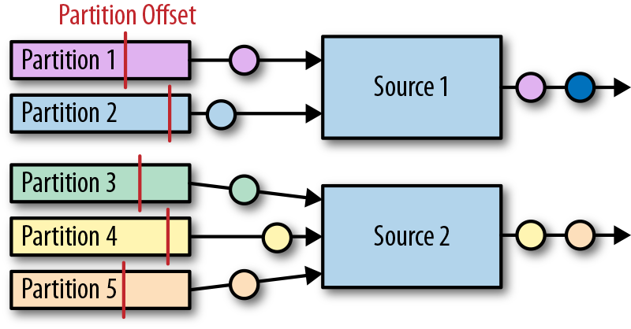
Kafka source连接器使用如下代码创建
val properties = new Properties()
properties.setProperty("bootstrap.servers", "localhost:9092")
properties.setProperty("group.id", "test")
val stream: DataStream[String] = env.addSource(
new FlinkKafkaConsumer[String](
"topic",
new SimpleStringSchema(),
properties))
构造器接受三个参数。第一个参数定义了从哪些topic中读取数据，可以是一个topic，也可以是topic列表，还可以是匹配所有想要读取的topic的正则表达式。当从多个topic中读取数据时，Kafka连接器将会处理所有topic的分区，将这些分区的数据放到一条流中去。
第二个参数是一个DeserializationSchema或者KeyedDeserializationSchema。Kafka消息被存储为原始的字节数据，所以需要反序列化成Java或者Scala对象。上例中使用的SimpleStringSchema，是一个内置的DeserializationSchema，它仅仅是简单的将字节数组反序列化成字符串。DeserializationSchema和KeyedDeserializationSchema是公共的接口，所以我们可以自定义反序列化逻辑。
第三个参数是一个Properties对象，设置了用来读写的Kafka客户端的一些属性。
为了抽取事件时间的时间戳然后产生水印，我们可以通过调用
FlinkKafkaConsumer.assignTimestampsAndWatermark()
方法为Kafka消费者提供AssignerWithPeriodicWatermark或者AssignerWithPucntuatedWatermark。每一个assigner都将被应用到每个分区，来利用每一个分区的顺序保证特性。source实例将会根据水印的传播协议聚合所有分区的水印。
Apache Kafka Sink连接器
添加依赖：
<dependency>
<groupId>org.apache.flink</groupId>
<artifactId>flink-connector-kafka_2.12</artifactId>
<version>1.7.1</version>
</dependency>
下面的例子展示了如何创建一个Kafka sink
val stream: DataStream[String] = ...
val myProducer = new FlinkKafkaProducer[String](
"localhost:9092", // broker list
"topic", // target topic
new SimpleStringSchema) // serialization schema
stream.addSink(myProducer)
Kakfa Sink的at-least-once保证
Flink的Kafka sink提供了基于配置的一致性保证。Kafka sink使用下面的条件提供了至少处理一次保证：
- Flink检查点机制开启，所有的数据源都是可重置的。
- 当写入失败时，sink连接器将会抛出异常，使得应用程序挂掉然后重启。这是默认行为。应用程序内部的Kafka客户端还可以配置为重试写入，只要提前声明当写入失败时，重试几次这样的属性（retries property）。
- sink连接器在完成它的检查点之前会等待Kafka发送已经将数据写入的通知。
Kafka Sink的恰好处理一次语义保证
Kafka 0.11版本引入了事务写特性。由于这个新特性，Flink Kafka sink可以为输出结果提供恰好处理一次语义的一致性保证，只要经过合适的配置就行。Flink程序必须开启检查点机制，并从可重置的数据源进行消费。FlinkKafkaProducer还提供了包含Semantic参数的构造器来控制sink提供的一致性保证。可能的取值如下：
- Semantic.NONE，不提供任何一致性保证。数据可能丢失或者被重写多次。
- Semantic.AT_LEAST_ONCE，保证无数据丢失，但可能被处理多次。这个是默认设置。
- Semantic.EXACTLY_ONCE，基于Kafka的事务性写入特性实现，保证每条数据恰好处理一次。
文件系统source连接器
Apache Flink针对文件系统实现了一个可重置的source连接器，将文件看作流来读取数据。如下面的例子所示：
val lineReader = new TextInputFormat(null)
val lineStream: DataStream[String] = env.readFile[String](
lineReader, // The FileInputFormat
"hdfs:///path/to/my/data", // The path to read
FileProcessingMode
.PROCESS_CONTINUOUSLY, // The processing mode
30000L) // The monitoring interval in ms
StreamExecutionEnvironment.readFile()接收如下参数：
- FileInputFormat参数，负责读取文件中的内容。
- 文件路径。如果文件路径指向单个文件，那么将会读取这个文件。如果路径指向一个文件夹，FileInputFormat将会扫描文件夹中所有的文件。
- PROCESS_CONTINUOUSLY将会周期性的扫描文件，以便扫描到文件新的改变。
- 30000L表示多久扫描一次监听的文件。
FileInputFormat是一个特定的InputFormat，用来从文件系统中读取文件。FileInputFormat分两步读取文件。首先扫描文件系统的路径，然后为所有匹配到的文件创建所谓的input splits。一个input split将会定义文件上的一个范围，一般通过读取的开始偏移量和读取长度来定义。在将一个大的文件分割成一堆小的splits以后，这些splits可以分发到不同的读任务，这样就可以并行的读取文件了。FileInputFormat的第二步会接收一个input split，读取被split定义的文件范围，然后返回对应的数据。
DataStream应用中使用的FileInputFormat需要实现CheckpointableInputFormat接口。这个接口定义了方法来做检查点和重置文件片段的当前的读取位置。
在Flink 1.7中，Flink提供了一些类，这些类继承了FileInputFormat，并实现了CheckpointableInputFormat接口。TextInputFormat一行一行的读取文件，而CsvInputFormat使用逗号分隔符来读取文件。
文件系统sink连接器
在将流处理应用配置成exactly-once检查点机制，以及配置成所有源数据都能在故障的情况下可以重置，Flink的StreamingFileSink提供了端到端的恰好处理一次语义保证。下面的例子展示了StreamingFileSink的使用方式。
val input: DataStream[String] = …
val sink: StreamingFileSink[String] = StreamingFileSink
.forRowFormat(
new Path("/base/path"),
new SimpleStringEncoder[String]("UTF-8"))
.build()
input.addSink(sink)
当StreamingFileSink接到一条数据，这条数据将被分配到一个桶（bucket）中。一个桶是我们配置的“/base/path”的子目录。
Flink使用BucketAssigner来分配桶。BucketAssigner是一个公共的接口，为每一条数据返回一个BucketId，BucketId决定了数据被分配到哪个子目录。如果没有指定BucketAssigner，Flink将使用DateTimeBucketAssigner来将每条数据分配到每个一个小时所产生的桶中去，基于数据写入的处理时间（机器时间，墙上时钟）。
StreamingFileSink提供了exactly-once输出的保证。sink通过一个commit协议来达到恰好处理一次语义的保证。这个commit协议会将文件移动到不同的阶段，有以下状态：in progress，pending，finished。这个协议基于Flink的检查点机制。当Flink决定roll a file时，这个文件将被关闭并移动到pending状态，通过重命名文件来实现。当下一个检查点完成时，pending文件将被移动到finished状态，同样是通过重命名来实现。
一旦任务故障，sink任务需要将处于in progress状态的文件重置到上一次检查点的写偏移量。这个可以通过关闭当前in progress的文件，并将文件结尾无效的部分丢弃掉来实现。
实现自定义源函数
DataStream API提供了两个接口来实现source连接器：
- SourceFunction和RichSourceFunction可以用来定义非并行的source连接器，source跑在单任务上。
- ParallelSourceFunction和RichParallelSourceFunction可以用来定义跑在并行实例上的source连接器。
除了并行于非并行的区别，这两种接口完全一样。就像process function的rich版本一样，RichSourceFunction和RichParallelSourceFunction的子类可以override open()和close()方法，也可以访问RuntimeContext，RuntimeContext提供了并行任务实例的数量，当前任务实例的索引，以及一些其他信息。
SourceFunction和ParallelSourceFunction定义了两种方法：
- void run(SourceContext
ctx) - cancel()
run()方法用来读取或者接收数据然后将数据摄入到Flink应用中。根据接收数据的系统，数据可能是推送的也可能是拉取的。Flink仅仅在特定的线程调用run()方法一次，通常情况下会是一个无限循环来读取或者接收数据并发送数据。任务可以在某个时间点被显式的取消，或者由于流是有限流，当数据被消费完毕时，任务也会停止。
当应用被取消或者关闭时，cancel()方法会被Flink调用。为了优雅的关闭Flink应用，run()方法需要在cancel()被调用以后，立即终止执行。下面的例子显示了一个简单的源函数的例子：从0数到Long.MaxValue。
class CountSource extends SourceFunction[Long] {
var isRunning: Boolean = true
override def run(ctx: SourceFunction.SourceContext[Long]) = {
var cnt: Long = -1
while (isRunning && cnt < Long.MaxValue) {
cnt += 1
ctx.collect(cnt)
}
}
override def cancel() = isRunning = false
}
可重置的源函数
之前我们讲过，应用程序只有使用可以重播输出数据的数据源时，才能提供令人满意的一致性保证。如果外部系统暴露了获取和重置读偏移量的API，那么source函数就可以重播源数据。这样的例子包括一些能够提供文件流的偏移量的文件系统，或者提供seek方法用来移动到文件的特定位置的文件系统。或者Apache Kafka这种可以为每一个主题的分区提供偏移量并且可以设置分区的读位置的系统。一个反例就是source连接器连接的是socket，socket将会立即丢弃已经发送过的数据。
支持重播输出的源函数需要和Flink的检查点机制集成起来，还需要在检查点被处理时，持久化当前所有的读取位置。当应用从一个保存点（savepoint）恢复或者从故障恢复时，Flink会从最近一次的检查点或者保存点中获取读偏移量。如果程序开始时并不存在状态，那么读偏移量将会被设置到一个默认值。一个可重置的源函数需要实现CheckpointedFunction接口，还需要能够存储读偏移量和相关的元数据，例如文件的路径，分区的ID。这些数据将被保存在list state或者union list state中。
下面的例子将CountSource重写为可重置的数据源。
scala version
class ResettableCountSource
extends SourceFunction[Long] with CheckpointedFunction {
var isRunning: Boolean = true
var cnt: Long = _
var offsetState: ListState[Long] = _
override def run(ctx: SourceFunction.SourceContext[Long]) = {
while (isRunning && cnt < Long.MaxValue) {
// synchronize data emission and checkpoints
ctx.getCheckpointLock.synchronized {
cnt += 1
ctx.collect(cnt)
}
}
}
override def cancel() = isRunning = false
override def snapshotState(
snapshotCtx: FunctionSnapshotContext
): Unit = {
// remove previous cnt
offsetState.clear()
// add current cnt
offsetState.add(cnt)
}
override def initializeState(
initCtx: FunctionInitializationContext): Unit = {
val desc = new ListStateDescriptor[Long](
"offset", classOf[Long])
offsetState = initCtx
.getOperatorStateStore
.getListState(desc)
// initialize cnt variable
val it = offsetState.get()
cnt = if (null == it || !it.iterator().hasNext) {
-1L
} else {
it.iterator().next()
}
}
}
实现自定义sink函数
DataStream API中，任何运算符或者函数都可以向外部系统发送数据。DataStream不需要最终流向sink运算符。例如，我们可能实现了一个FlatMapFunction，这个函数将每一个接收到的数据通过HTTP POST请求发送出去，而不使用Collector发送到下一个运算符。DataStream API也提供了SinkFunction接口以及对应的rich版本RichSinkFunction抽象类。SinkFunction接口提供了一个方法：
void invode(IN value, Context ctx)
SinkFunction的Context可以访问当前处理时间，当前水位线，以及数据的时间戳。
下面的例子展示了一个简单的SinkFunction，可以将传感器读数写入到socket中去。需要注意的是，我们需要在启动Flink程序前启动一个监听相关端口的进程。否则将会抛出ConnectException异常。可以运行“nc -l localhost 9191”命令。
val readings: DataStream[SensorReading] = ...
// write the sensor readings to a socket
readings.addSink(new SimpleSocketSink("localhost", 9191))
// set parallelism to 1 because only one thread can write to a socket
.setParallelism(1)
// -----
class SimpleSocketSink(val host: String, val port: Int)
extends RichSinkFunction[SensorReading] {
var socket: Socket = _
var writer: PrintStream = _
override def open(config: Configuration): Unit = {
// open socket and writer
socket = new Socket(InetAddress.getByName(host), port)
writer = new PrintStream(socket.getOutputStream)
}
override def invoke(
value: SensorReading,
ctx: SinkFunction.Context[_]): Unit = {
// write sensor reading to socket
writer.println(value.toString)
writer.flush()
}
override def close(): Unit = {
// close writer and socket
writer.close()
socket.close()
}
}
之前我们讨论过，端到端的一致性保证建立在sink连接器的属性上面。为了达到端到端的恰好处理一次语义的目的，应用程序需要幂等性的sink连接器或者事务性的sink连接器。上面例子中的SinkFunction既不是幂等写入也不是事务性的写入。由于socket具有只能添加（append-only）这样的属性，所以不可能实现幂等性的写入。又因为socket不具备内置的事务支持，所以事务性写入就只能使用Flink的WAL sink特性来实现了。接下来我们将学习如何实现幂等sink连接器和事务sink连接器。
幂等sink连接器
对于大多数应用，SinkFunction接口足以实现一个幂等性写入的sink连接器了。需要以下两个条件：
- 结果数据必须具有确定性的key，在这个key上面幂等性更新才能实现。例如一个计算每分钟每个传感器的平均温度值的程序，确定性的key值可以是传感器的ID和每分钟的时间戳。确定性的key值，对于在故障恢复的场景下，能够正确的覆盖结果非常的重要。
- 外部系统支持针对每个key的更新，例如关系型数据库或者key-value存储。
下面的例子展示了如何实现一个针对JDBC数据库的幂等写入sink连接器，这里使用的是Apache Derby数据库。
val readings: DataStream[SensorReading] = ...
// write the sensor readings to a Derby table
readings.addSink(new DerbyUpsertSink)
// -----
class DerbyUpsertSink extends RichSinkFunction[SensorReading] {
var conn: Connection = _
var insertStmt: PreparedStatement = _
var updateStmt: PreparedStatement = _
override def open(parameters: Configuration): Unit = {
// connect to embedded in-memory Derby
conn = DriverManager.getConnection(
"jdbc:derby:memory:flinkExample",
new Properties())
// prepare insert and update statements
insertStmt = conn.prepareStatement(
"INSERT INTO Temperatures (sensor, temp) VALUES (?, ?)")
updateStmt = conn.prepareStatement(
"UPDATE Temperatures SET temp = ? WHERE sensor = ?")
}
override def invoke(SensorReading r, context: Context[_]): Unit = {
// set parameters for update statement and execute it
updateStmt.setDouble(1, r.temperature)
updateStmt.setString(2, r.id)
updateStmt.execute()
// execute insert statement
// if update statement did not update any row
if (updateStmt.getUpdateCount == 0) {
// set parameters for insert statement
insertStmt.setString(1, r.id)
insertStmt.setDouble(2, r.temperature)
// execute insert statement
insertStmt.execute()
}
}
override def close(): Unit = {
insertStmt.close()
updateStmt.close()
conn.close()
}
}
由于Apache Derby并没有提供内置的UPSERT方法，所以这个sink连接器实现了UPSERT写。具体实现方法是首先去尝试更新一行数据，如果这行数据不存在，则插入新的一行数据。
事务性sink连接器
事务写入sink连接器需要和Flink的检查点机制集成，因为只有在检查点成功完成以后，事务写入sink连接器才会向外部系统commit数据。
为了简化事务性sink的实现，Flink提供了两个模版用来实现自定义sink运算符。这两个模版都实现了CheckpointListener接口。CheckpointListener接口将会从作业管理器接收到检查点完成的通知。
- GenericWriteAheadSink模版会收集检查点之前的所有的数据，并将数据存储到sink任务的运算符状态中。状态保存到了检查点中，并在任务故障的情况下恢复。当任务接收到检查点完成的通知时，任务会将所有的数据写入到外部系统中。
- TwoPhaseCommitSinkFunction模版利用了外部系统的事务特性。对于每一个检查点，任务首先开始一个新的事务，并将接下来所有的数据都写到外部系统的当前事务上下文中去。当任务接收到检查点完成的通知时，sink连接器将会commit这个事务。
GENERICWRITEAHEADSINK
GenericWriteAheadSink使得sink运算符可以很方便的实现。这个运算符和Flink的检查点机制集成使用，目标是将每一条数据恰好一次写入到外部系统中去。需要注意的是，在发生故障的情况下，write-ahead log sink可能会不止一次的发送相同的数据。所以GenericWriteAheadSink无法提供完美无缺的恰好处理一次语义的一致性保证，而是仅能提供at-least-once这样的保证。我们接下来详细的讨论这些场景。
GenericWriteAheadSink的原理是将接收到的所有数据都追加到有检查点分割好的预写式日志中去。每当sink运算符碰到检查点屏障，运算符将会开辟一个新的section，并将接下来的所有数据都追加到新的section中去。WAL（预写式日志）将会保存到运算符状态中。由于log能被恢复，所有不会有数据丢失。
当GenericWriteAheadSink接收到检查点完成的通知时，将会发送对应检查点的WAL中存储的所有数据。当所有数据发送成功，对应的检查点必须在内部提交。
检查点的提交分两步。第一步，sink持久化检查点被提交的信息。第二步，删除WAL中所有的数据。我们不能将commit信息保存在Flink应用程序状态中，因为状态不是持久化的，会在故障恢复时重置状态。相反，GenericWriteAheadSink依赖于可插拔的组件在一个外部持久化存储中存储和查找提交信息。这个组件就是CheckpointCommitter。
继承GenericWriteAheadSink的运算符需要提供三个构造器函数。
- CheckpointCommitter
- TypeSerializer，用来序列化输入数据。
- 一个job ID，传给CheckpointCommitter，当应用重启时可以识别commit信息。
还有，write-ahead运算符需要实现一个单独的方法：
boolean sendValues(Iterable<IN> values, long chkpntId, long timestamp)
当检查点完成时，GenericWriteAheadSink调用sendValues()方法来将数据写入到外部存储系统中。这个方法接收一个检查点对应的所有数据的迭代器，检查点的ID，检查点被处理时的时间戳。当数据写入成功时，方法必须返回true，写入失败返回false。
下面的例子展示了如何实现一个写入到标准输出的write-ahead sink。它使用了FileCheckpointCommitter。
val readings: DataStream[SensorReading] = ...
// write the sensor readings to the standard out via a write-ahead log
readings.transform(
"WriteAheadSink", new SocketWriteAheadSink)
class StdOutWriteAheadSink extends GenericWriteAheadSink[SensorReading](
// CheckpointCommitter that commits
// checkpoints to the local filesystem
new FileCheckpointCommitter(System.getProperty("java.io.tmpdir")),
// Serializer for records
createTypeInformation[SensorReading]
.createSerializer(new ExecutionConfig),
// Random JobID used by the CheckpointCommitter
UUID.randomUUID.toString) {
override def sendValues(
readings: Iterable[SensorReading],
checkpointId: Long,
timestamp: Long): Boolean = {
for (r <- readings.asScala) {
// write record to standard out
println(r)
}
true
}
}
之前我们讲过，GenericWriteAheadSink无法提供完美的exactly-once保证。有两个故障状况会导致数据可能被发送不止一次。
- 当任务执行sendValues()方法时，程序挂掉了。如果外部系统无法原子性的写入所有数据（要么都写入要么都不写），一些数据可能会写入，而另一些数据并没有被写入。由于checkpoint还没有commit，所以在任务恢复的过程中一些数据可能会被再次写入。
- 所有数据都写入成功了，sendValues()方法也返回true了；但在CheckpointCommitter方法被调用之前程序挂了，或者CheckpointCommitter在commit检查点时失败了。那么在恢复的过程中，所有未被提交的检查点将会被重新写入。
TWOPHASECOMMITSINKFUNCTION
Flink提供了TwoPhaseCommitSinkFunction接口来简化sink函数的实现。这个接口保证了端到端的exactly-once语义。2PC sink函数是否提供这样的一致性保证取决于我们的实现细节。我们需要讨论一个问题：“2PC协议是否开销太大？”
通常来讲，为了保证分布式系统的一致性，2PC是一个非常昂贵的方法。尽管如此，在Flink的语境下，2PC协议针对每一个检查点只运行一次。TwoPhaseCommitSinkFunction和WAL sink很相似，不同点在于前者不会将数据收集到state中，而是会写入到外部系统事务的上下文中。
TwoPhaseCommitSinkFunction实现了以下协议。在sink任务发送出第一条数据之前，任务将在外部系统中开始一个事务，所有接下来的数据将被写入这个事务的上下文中。当作业管理器初始化检查点并将检查点屏障插入到流中的时候，2PC协议的投票阶段开始。当运算符接收到检查点屏障，运算符将保存它的状态，当保存完成时，运算符将发送一个acknowledgement信息给作业管理器。当sink任务接收到检查点屏障时，运算符将会持久化它的状态，并准备提交当前的事务，以及acknowledge JobManager中的检查点。发送给作业管理器的acknowledgement信息类似于2PC协议中的commit投票。sink任务还不能提交事务，因为它还没有保证所有的任务都已经完成了它们的检查点操作。sink任务也会为下一个检查点屏障之前的所有数据开始一个新的事务。
当作业管理器成功接收到所有任务实例发出的检查点操作成功的通知时，作业管理器将会把检查点完成的通知发送给所有感兴趣的任务。这里的通知对应于2PC协议的提交命令。当sink任务接收到通知时，它将commit所有处于开启状态的事务。一旦sink任务acknowledge了检查点操作，它必须能够commit对应的事务，即使任务发生故障。如果commit失败，数据将会丢失。
让我们总结一下外部系统需要满足什么样的要求：
- 外部系统必须提供事务支持，或者sink的实现能在外部系统上模拟事务功能。
- 在检查点操作期间，事务必须处于open状态，并接收这段时间数据的持续写入。
- 事务必须等到检查点操作完成的通知到来才可以提交。在恢复周期中，可能需要一段时间等待。如果sink系统关闭了事务（例如超时了），那么未被commit的数据将会丢失。
- sink必须在进程挂掉后能够恢复事务。一些sink系统会提供事务ID，用来commit或者abort一个开始的事务。
- commit一个事务必须是一个幂等性操作。sink系统或者外部系统能够观察到事务已经被提交，或者重复提交并没有副作用。
下面的例子可能会让上面的一些概念好理解一些。
class TransactionalFileSink(val targetPath: String, val tempPath: String)
extends TwoPhaseCommitSinkFunction[(String, Double), String, Void](
createTypeInformation[String].createSerializer(new ExecutionConfig),
createTypeInformation[Void].createSerializer(new ExecutionConfig)) {
var transactionWriter: BufferedWriter = _
// Creates a temporary file for a transaction into
// which the records are written.
override def beginTransaction(): String = {
// path of transaction file
// is built from current time and task index
val timeNow = LocalDateTime.now(ZoneId.of("UTC"))
.format(DateTimeFormatter.ISO_LOCAL_DATE_TIME)
val taskIdx = this.getRuntimeContext.getIndexOfThisSubtask
val transactionFile = s"$timeNow-$taskIdx"
// create transaction file and writer
val tFilePath = Paths.get(s"$tempPath/$transactionFile")
Files.createFile(tFilePath)
this.transactionWriter = Files.newBufferedWriter(tFilePath)
println(s"Creating Transaction File: $tFilePath")
// name of transaction file is returned to
// later identify the transaction
transactionFile
}
/** Write record into the current transaction file. */
override def invoke(
transaction: String,
value: (String, Double),
context: Context[_]): Unit = {
transactionWriter.write(value.toString)
transactionWriter.write('\n')
}
/** Flush and close the current transaction file. */
override def preCommit(transaction: String): Unit = {
transactionWriter.flush()
transactionWriter.close()
}
// Commit a transaction by moving
// the precommitted transaction file
// to the target directory.
override def commit(transaction: String): Unit = {
val tFilePath = Paths.get(s"$tempPath/$transaction")
// check if the file exists to ensure
// that the commit is idempotent
if (Files.exists(tFilePath)) {
val cFilePath = Paths.get(s"$targetPath/$transaction")
Files.move(tFilePath, cFilePath)
}
}
// Aborts a transaction by deleting the transaction file.
override def abort(transaction: String): Unit = {
val tFilePath = Paths.get(s"$tempPath/$transaction")
if (Files.exists(tFilePath)) {
Files.delete(tFilePath)
}
}
}
TwoPhaseCommitSinkFunction[IN, TXN, CONTEXT]包含如下三个范型参数：
- IN表示输入数据的类型。
- TXN定义了一个事务的标识符，可以用来识别和恢复事务。
- CONTEXT定义了自定义的上下文。
TwoPhaseCommitSinkFunction的构造器需要两个TypeSerializer。一个是TXN的类型，另一个是CONTEXT的类型。
最后，TwoPhaseCommitSinkFunction定义了五个需要实现的方法：
- beginTransaction(): TXN开始一个事务，并返回事务的标识符。
- invoke(txn: TXN, value: IN, context: Context[_]): Unit将值写入到当前事务中。
- preCommit(txn: TXN): Unit预提交一个事务。一个预提交的事务不会接收新的写入。
- commit(txn: TXN): Unit提交一个事务。这个操作必须是幂等的。
- abort(txn: TXN): Unit终止一个事务。
第九章，搭建Flink运行流式应用
部署方式
独立集群
独立集群包含至少一个master进程，以及至少一个TaskManager进程，TaskManager进程运行在一台或者多台机器上。所有的进程都是JVM进程。下图展示了独立集群的部署。

master进程在不同的线程中运行了一个Dispatcher和一个ResourceManager。一旦它们开始运行，所有TaskManager都将在Resourcemanager中进行注册。下图展示了一个任务如何提交到一个独立集群中去。

客户端向Dispatcher提交了一个任务，Dispatcher将会启动一个作业管理器线程，并提供执行所需的JobGraph。作业管理器向ResourceManager请求必要的task slots。一旦请求的slots分配好，作业管理器就会部署job。
在standalone这种部署方式中，master和worker进程在失败以后，并不会自动重启。如果有足够的slots可供使用，job是可以从一次worker失败中恢复的。只要我们运行多个worker就好了。但如果job想从master失败中恢复的话，则需要进行高可用(HA)的配置了。
部署步骤
下载压缩包
链接：http://mirror.bit.edu.cn/apache/flink/flink-1.11.0/flink-1.11.0-bin-scala_2.11.tgz
解压缩
$ tar xvfz flink-1.11.0-bin-scala_2.11.tgz
启动集群
$ cd flink-1.11.0
$ ./bin/start-cluster.sh
检查集群状态可以访问：http://localhost:8081
部署分布式集群
- 所有运行TaskManager的机器的主机名（或者IP地址）都需要写入
./conf/slaves文件中。 start-cluster.sh脚本需要所有机器的无密码的SSH登录配置，方便启动TaskManager进程。- Flink的文件夹在所有的机器上都需要有相同的绝对路径。
- 运行master进程的机器的主机名或者IP地址需要写在
./conf/flink-conf.yaml文件的jobmanager.rpc.address配置项。
一旦部署好，我们就可以调用./bin/start-cluster.sh命令启动集群了，脚本会在本地机器启动一个作业管理器，然后在每个slave机器上启动一个TaskManager。停止运行，请使用./bin/stop-cluster.sh。
Apache Hadoop Yarn
YARN是Apache Hadoop的资源管理组件。用来计算集群环境所需要的CPU和内存资源，然后提供给应用程序请求的资源。
Flink在YARN上运行，有两种模式：job模式和session模式。在job模式中，Flink集群用来运行一个单独的job。一旦job结束，Flink集群停止，并释放所有资源。下图展示了Flink的job如何提交到YARN集群。

当客户端提交任务时，客户端将建立和YARN ResourceManager的连接，然后启动一个新的YARN应用的master进程，进程中包含一个作业管理器线程和一个ResourceManager。作业管理器向ResourceManager请求所需要的slots，用来运行Flink的job。接下来，Flink的ResourceManager将向Yarn的ResourceManager请求容器，然后启动TaskManager进程。一旦启动，TaskManager会将slots注册在Flink的ResourceManager中，Flink的ResourceManager将把slots提供给作业管理器。最终，作业管理器把job的任务提交给TaskManager执行。
sesison模式将启动一个长期运行的Flink集群，这个集群可以运行多个job，需要手动停止集群。如果以session模式启动，Flink将会连接到YARN的ResourceManager，然后启动一个master进程，包括一个Dispatcher线程和一个Flink的ResourceManager的线程。下图展示了一个Flink YARN session的启动。

当一个作业被提交运行，分发器将启动一个作业管理器线程，这个线程将向Flink的资源管理器请求所需要的slots。如果没有足够的slots，Flink的资源管理器将向YARN的资源管理器请求额外的容器，来启动TaskManager进程，并在Flink的资源管理器中注册。一旦所需slots可用，Flink的资源管理器将把slots分配给作业管理器，然后开始执行job。下图展示了job如何在session模式下执行。

无论是作业模式还是会话模式，Flink的ResourceManager都会自动对故障的TaskManager进行重启。你可以通过./conf/flink-conf.yaml配置文件来控制Flink在YARN上的故障恢复行为。例如，可以配置有多少容器发生故障后终止应用。
无论使用job模式还是sesison模式，都需要能够访问Hadoop。
job模式可以用以下命令来提交任务：
$ ./bin/flink run -m yarn-cluster ./path/to/job.jar
参数-m用来定义提交作业的目标主机。如果加上关键字"yarn-cluster"，客户端会将作业提交到由Hadoop配置所指定的YARN集群上。Flink的CLI客户端还支持很多参数，例如用于控制TaskManager容器内存大小的参数等。有关它们的详细信息，请参阅文档。Flink集群的Web UI由YARN集群某个节点上的主进程负责提供。你可以通过YARN的Web UI对其进行访问，具体链接位置在"Tracking URL: ApplicationMaster"下的Application Overview页面上。
session模式则是
$ ./bin/yarn-session.sh # 启动一个yarn会话
$ ./bin/flink run ./path/to/job.jar # 向会话提交作业
Flink的Web UI链接可以从YARN Web UI的Application Overview页面上找到。
高可用配置
Flink的高可用配置需要Apache ZooKeeper组件，以及一个分布式文件系统，例如HDFS等等。作业管理器将会把相关信息都存储在文件系统中，并将指向文件系统中相关信息的指针保存在ZooKeeper中。一旦失败，一个新的作业管理器将从ZooKeeper中指向相关信息的指针所指向的文件系统中读取元数据，并恢复运行。
配置文件编写
high-availability.zookeeper.quorum: address1:2181[,...],addressX:2181
high-availability.storageDir: hdfs:///flink/recovery
high-availability.zookeeper.path.root: /flink
独立集群高可用配置
需要在配置文件中加一行集群标识符信息，因为可能多个集群共用一个zookeeper服务。
high-availability.cluster-id: /cluster-1
yarn集群高可用配置
首先在yarn集群的配置文件yarn-site.xml中加入以下代码
<property>
<name>yarn.resourcemanager.am.max-attempts</name>
<value>4</value>
<description>
The maximum number of application master execution attempts.
Default value is 2, i.e., an application is restarted at most once.
</description>
</property>
然后在./conf/flink-conf.yaml加上
yarn.application-attempts: 4
与Hadoop集成
推荐两种方法
- 下载包含hadoop的Flink版本。
- 使用我们之前下载的Flink，然后配置Hadoop的环境变量。
export HADOOP_CLASSPATH={hadoop classpath}
我们还需要提供Hadoop配置文件的路径。只需设置名为HADOOP_CONF_DIR的环境变量就可以了。这样Flink就能够连上YARN的ResourceManager和HDFS了。
保存点操作
$ ./bin/flink savepoint <jobId> [savepointPath]
例如
$ ./bin/flink savepoint bc0b2ad61ecd4a615d92ce25390f61ad \
hdfs:///xxx:50070/savepoints
Triggering savepoint for job bc0b2ad61ecd4a615d92ce25390f61ad.
Waiting for response...
Savepoint completed.
Path: hdfs:///xxx:50070/savepoints/savepoint-bc0b2a-63cf5d5ccef8
You can resume your program from this savepoint with the run command.
删除保存点文件
$ ./bin/flink savepoint -d <savepointPath>
例子
$ ./bin/flink savepoint -d \
hdfs:///xxx:50070/savepoints/savepoint-bc0b2a-63cf5d5ccef8
Disposing savepoint 'hdfs:///xxx:50070/savepoints/savepoint-bc0b2a-63cf5d5ccef8'.
Waiting for response...
Savepoint 'hdfs:///xxx:50070/savepoints/savepoint-bc0b2a-63cf5d5ccef8' disposed.
取消一个应用
$ ./bin/flink cancel <jobId>
取消的同时做保存点操作
$ ./bin/flink cancel -s [savepointPath] <jobId>
例如
$ ./bin/flink cancel -s \
hdfs:///xxx:50070/savepoints d5fdaff43022954f5f02fcd8f25ef855
Cancelling job bc0b2ad61ecd4a615d92ce25390f61ad
with savepoint to hdfs:///xxx:50070/savepoints.
Cancelled job bc0b2ad61ecd4a615d92ce25390f61ad.
Savepoint stored in hdfs:///xxx:50070/savepoints/savepoint-bc0b2a-d08de07fbb10.
从保存点启动应用程序
$ ./bin/flink run -s <savepointPath> [options] <jobJar> [arguments]
扩容，改变并行度操作
$ ./bin/flink modify <jobId> -p <newParallelism>
例子
$ ./bin/flink modify bc0b2ad61ecd4a615d92ce25390f61ad -p 16
Modify job bc0b2ad61ecd4a615d92ce25390f61ad.
Rescaled job bc0b2ad61ecd4a615d92ce25390f61ad. Its new parallelism is 16.
第十章，Flink和流式应用运维
第十一章，Flink CEP简介
什么是复杂事件CEP？
一个或多个由简单事件构成的事件流通过一定的规则匹配，然后输出用户想得到的数据，满足规则的复杂事件。
特征：
- 目标：从有序的简单事件流中发现一些高阶特征
- 输入：一个或多个由简单事件构成的事件流
- 处理：识别简单事件之间的内在联系，多个符合一定规则的简单事件构成复杂事件
- 输出：满足规则的复杂事件
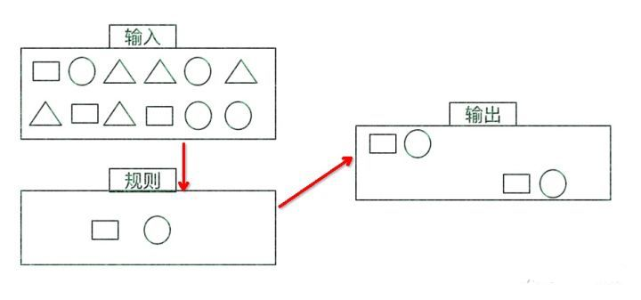
CEP用于分析低延迟、频繁产生的不同来源的事件流。CEP可以帮助在复杂的、不相关的事件流中找出有意义的模式和复杂的关系，以接近实时或准实时的获得通知并阻止一些行为。
CEP支持在流上进行模式匹配，根据模式的条件不同，分为连续的条件或不连续的条件；模式的条件允许有时间的限制，当在条件范围内没有达到满足的条件时，会导致模式匹配超时。
看起来很简单，但是它有很多不同的功能：
- 输入的流数据，尽快产生结果
- 在2个event流上，基于时间进行聚合类的计算
- 提供实时/准实时的警告和通知
- 在多样的数据源中产生关联并分析模式
- 高吞吐、低延迟的处理
市场上有多种CEP的解决方案，例如Spark、Samza、Beam等，但他们都没有提供专门的library支持。但是Flink提供了专门的CEP library。
Flink CEP
Flink为CEP提供了专门的Flink CEP library，它包含如下组件：
- Event Stream
- pattern定义
- pattern检测
- 生成Alert

首先，开发人员要在DataStream流上定义出模式条件，之后Flink CEP引擎进行模式检测，必要时生成告警。
为了使用Flink CEP，我们需要导入依赖：
<dependency>
<groupId>org.apache.flink</groupId>
<artifactId>flink-cep-scala_${scala.binary.version}</artifactId>
<version>${flink.version}</version>
</dependency>
Event Streams
登录事件流
case class LoginEvent(userId: String,
ip: String,
eventType: String,
eventTime: String)
StreamExecutionEnvironment env = StreamExecutionEnvironment.getExecutionEnvironment
env.setStreamTimeCharacteristic(TimeCharacteristic.EventTime)
env.setParallelism(1)
val loginEventStream = env
.fromCollection(List(
LoginEvent("1", "192.168.0.1", "fail", "1558430842"),
LoginEvent("1", "192.168.0.2", "fail", "1558430843"),
LoginEvent("1", "192.168.0.3", "fail", "1558430844"),
LoginEvent("2", "192.168.10.10", "success", "1558430845")
))
.assignAscendingTimestamps(_.eventTime.toLong * 1000)
Pattern API
每个Pattern都应该包含几个步骤，或者叫做state。从一个state到另一个state，通常我们需要定义一些条件，例如下列的代码：
val loginFailPattern = Pattern.begin[LoginEvent]("begin")
.where(_.eventType.equals("fail"))
.next("next")
.where(_.eventType.equals("fail"))
.within(Time.seconds(10)
每个state都应该有一个标示：
例如: .begin[LoginEvent]("begin")中的"begin"
每个state都需要有一个唯一的名字，而且需要一个filter来过滤条件，这个过滤条件定义事件需要符合的条件
例如: .where(_.eventType.equals("fail"))
我们也可以通过subtype来限制event的子类型：
start.subtype(SubEvent.class).where(...);
事实上，你可以多次调用subtype和where方法；而且如果where条件是不相关的，你可以通过or来指定一个单独的filter函数：
pattern.where(...).or(...);
之后，我们可以在此条件基础上，通过next或者followedBy方法切换到下一个state，next的意思是说上一步符合条件的元素之后紧挨着的元素；而followedBy并不要求一定是挨着的元素。这两者分别称为严格近邻和非严格近邻。
val strictNext = start.next("middle")
val nonStrictNext = start.followedBy("middle")
最后，我们可以将所有的Pattern的条件限定在一定的时间范围内：
next.within(Time.seconds(10))
这个时间可以是Processing Time，也可以是Event Time。
Pattern 检测
通过一个input DataStream以及刚刚我们定义的Pattern，我们可以创建一个PatternStream：
val input = ...
val pattern = ...
val patternStream = CEP.pattern(input, pattern)
val patternStream = CEP
.pattern(
loginEventStream.keyBy(_.userId), loginFailPattern
)
一旦获得PatternStream，我们就可以通过select或flatSelect，从一个Map序列找到我们需要的告警信息。
select
select方法需要实现一个PatternSelectFunction，通过select方法来输出需要的警告。它接受一个Map对，包含string/event，其中key为state的名字，event则为真是的Event。
val loginFailDataStream = patternStream
.select((pattern: Map[String, Iterable[LoginEvent]]) => {
val first = pattern.getOrElse("begin", null).iterator.next()
val second = pattern.getOrElse("next", null).iterator.next()
(second.userId, second.ip, second.eventType)
})
其返回值仅为1条记录。
flatSelect
通过实现PatternFlatSelectFunction，实现与select相似的功能。唯一的区别就是flatSelect方法可以返回多条记录。
超时事件的处理
通过within方法，我们的parttern规则限定在一定的窗口范围内。当有超过窗口时间后还到达的event，我们可以通过在select或flatSelect中，实现PatternTimeoutFunction/PatternFlatTimeoutFunction来处理这种情况。
val complexResult = patternStream.select(orderTimeoutOutput) {
(pattern: Map[String, Iterable[OrderEvent]], timestamp: Long) => {
val createOrder = pattern.get("begin")
OrderTimeoutEvent(createOrder.get.iterator.next().orderId, "timeout")
}
} {
pattern: Map[String, Iterable[OrderEvent]] => {
val payOrder = pattern.get("next")
OrderTimeoutEvent(payOrder.get.iterator.next().orderId, "success")
}
}
val timeoutResult = complexResult.getSideOutput(orderTimeoutOutput)
complexResult.print()
timeoutResult.print()
完整例子:
import org.apache.flink.cep.scala.CEP
import org.apache.flink.cep.scala.pattern.Pattern
import org.apache.flink.streaming.api.TimeCharacteristic
import org.apache.flink.streaming.api.scala._
import org.apache.flink.streaming.api.windowing.time.Time
import scala.collection.Map
object ScalaFlinkLoginFail {
def main(args: Array[String]): Unit = {
StreamExecutionEnvironment env = StreamExecutionEnvironment.getExecutionEnvironment
env.setStreamTimeCharacteristic(TimeCharacteristic.EventTime)
env.setParallelism(1)
val loginEventStream = env.fromCollection(List(
LoginEvent("1", "192.168.0.1", "fail", "1558430842"),
LoginEvent("1", "192.168.0.2", "fail", "1558430843"),
LoginEvent("1", "192.168.0.3", "fail", "1558430844"),
LoginEvent("2", "192.168.10.10", "success", "1558430845")
)).assignAscendingTimestamps(_.eventTime.toLong)
val loginFailPattern = Pattern.begin[LoginEvent]("begin")
.where(_.eventType.equals("fail"))
.next("next")
.where(_.eventType.equals("fail"))
.within(Time.seconds(10))
val patternStream = CEP.pattern(
loginEventStream.keyBy(_.userId), loginFailPattern
)
val loginFailDataStream = patternStream
.select((pattern: Map[String, Iterable[LoginEvent]]) => {
val first = pattern.getOrElse("begin", null).iterator.next()
val second = pattern.getOrElse("next", null).iterator.next()
(second.userId, second.ip, second.eventType)
})
loginFailDataStream.print
env.execute
}
}
case class LoginEvent(userId: String,
ip: String,
eventType: String,
eventTime: String)
第十二章，Table API和Flink SQL
整体介绍
什么是Table API和Flink SQL
Flink本身是批流统一的处理框架，所以Table API和SQL，就是批流统一的上层处理API。目前功能尚未完善，处于活跃的开发阶段。
Table API是一套内嵌在Java和Scala语言中的查询API，它允许我们以非常直观的方式，组合来自一些关系运算符的查询（比如select、filter和join）。而对于Flink SQL，就是直接可以在代码中写SQL，来实现一些查询（Query）操作。Flink的SQL支持，基于实现了SQL标准的Apache Calcite（Apache开源SQL解析工具）。
无论输入是批输入还是流式输入，在这两套API中，指定的查询都具有相同的语义，得到相同的结果。
需要引入的依赖
取决于你使用的编程语言，比如这里，我们选择 Scala API 来构建你的 Table API 和 SQL 程序：
<dependency>
<groupId>org.apache.flink</groupId>
<artifactId>flink-table-api-scala-bridge_2.11</artifactId>
<version>1.11.0</version>
<scope>provided</scope>
</dependency>
除此之外，如果你想在 IDE 本地运行你的程序，你需要添加下面的模块，具体用哪个取决于你使用哪个 Planner，我们这里选择使用 blink planner：
<dependency>
<groupId>org.apache.flink</groupId>
<artifactId>flink-table-planner-blink_2.11</artifactId>
<version>1.11.0</version>
<scope>provided</scope>
</dependency>
如果你想实现自定义格式来解析 Kafka 数据，或者自定义函数，使用下面的依赖：
<dependency>
<groupId>org.apache.flink</groupId>
<artifactId>flink-table-common</artifactId>
<version>1.11.0</version>
<scope>provided</scope>
</dependency>
- flink-table-planner-blink：planner计划器，是table API最主要的部分，提供了运行时环境和生成程序执行计划的planner；
- flink-table-api-scala-bridge：bridge桥接器，主要负责table API和 DataStream/DataSet API的连接支持，按照语言分java和scala。
这里的两个依赖，是IDE环境下运行需要添加的；如果是生产环境，lib目录下默认已经有了planner，就只需要有bridge就可以了。
需要注意的是：flink table本身有两个 planner 计划器，在flink 1.11之后，已经默认使用 blink planner，如果想了解 old planner，可以查阅官方文档。
两种planner（old & blink）的区别
- 批流统一：Blink将批处理作业，视为流式处理的特殊情况。所以，blink不支持表和DataSet之间的转换，批处理作业将不转换为DataSet应用程序，而是跟流处理一样，转换为DataStream程序来处理。
- 因为批流统一，Blink planner也不支持BatchTableSource，而使用有界的StreamTableSource代替。
- Blink planner只支持全新的目录，不支持已弃用的ExternalCatalog。
- 旧planner和Blink planner的FilterableTableSource实现不兼容。旧的planner会把PlannerExpressions下推到filterableTableSource中，而blink planner则会把Expressions下推。
- 基于字符串的键值配置选项仅适用于Blink planner。
- PlannerConfig在两个planner中的实现不同。
- Blink planner会将多个sink优化在一个DAG中（仅在TableEnvironment上受支持，而在StreamTableEnvironment上不受支持）。而旧planner的优化总是将每一个sink放在一个新的DAG中，其中所有DAG彼此独立。
- 旧的planner不支持目录统计，而Blink planner支持。
API调用
基本程序结构
Table API 和 SQL 的程序结构，与流式处理的程序结构类似；也可以近似地认为有这么几步：首先创建执行环境，然后定义source、transform和sink。
具体操作流程如下：
val tableEnv = ... // 创建表环境
// 创建表
tableEnv.connect(...).createTemporaryTable("table1")
// 注册输出表
tableEnv.connect(...).createTemporaryTable("outputTable")
// 使用 Table API query 创建表
val tapiResult = tableEnv.from("table1").select(...)
// 使用 SQL query 创建表
val sqlResult = tableEnv.sqlQuery("SELECT ... FROM table1 ...")
// 输出一张结果表到 TableSink，SQL查询的结果表也一样
TableResult tableResult = tapiResult.executeInsert("outputTable");
tableResult...
// 执行
tableEnv.execute("scala_job")
创建表环境
表环境（TableEnvironment）是flink中集成Table API & SQL的核心概念。它负责:
- 在内部的 catalog 中注册 Table
- 注册外部的 catalog
- 加载可插拔模块
- 执行 SQL 查询
- 注册自定义函数 （scalar、table 或 aggregation）
- 将 DataStream 或 DataSet 转换成 Table
- 持有对 ExecutionEnvironment 或 StreamExecutionEnvironment 的引用
在创建TableEnv的时候，可以多传入一个EnvironmentSettings或者TableConfig参数，可以用来配置TableEnvironment的一些特性。
Table 总是与特定的 TableEnvironment 绑定。不能在同一条查询中使用不同 TableEnvironment 中的表，例如，对它们进行 join 或 union 操作。
TableEnvironment 可以通过静态方法 BatchTableEnvironment.create() 或者 StreamTableEnvironment.create() 在 StreamExecutionEnvironment 或者 ExecutionEnvironment 中创建，TableConfig 是可选项。TableConfig可用于配置TableEnvironment或定制的查询优化和转换过程(参见 查询优化)。
请确保选择与你的编程语言匹配的特定的计划器BatchTableEnvironment/StreamTableEnvironment。
如果两种计划器的 jar 包都在 classpath 中（默认行为），你应该明确地设置要在当前程序中使用的计划器。
基于blink版本的流处理环境（Blink-Streaming-Query）：
import org.apache.flink.streaming.api.scala.StreamExecutionEnvironment
import org.apache.flink.table.api.EnvironmentSettings
import org.apache.flink.table.api.bridge.scala.StreamTableEnvironment
val bsEnv = StreamExecutionEnvironment.getExecutionEnvironment
val bsSettings = EnvironmentSettings.newInstance().useBlinkPlanner().inStreamingMode().build()
val bsTableEnv = StreamTableEnvironment.create(bsEnv, bsSettings)
这里只提供了 blink planner 的流处理设置。有关 old planner 的批处理和流处理的设置，以及 blink planner 的批处理的设置，请查阅官方文档。
在Catalog中注册表
TableEnvironment 维护着一个由标识符（identifier）创建的表 catalog 的映射。标识符由三个部分组成：catalog 名称、数据库名称以及对象名称。如果 catalog 或者数据库没有指明，就会使用当前默认值。
Table 可以是虚拟的（视图 VIEWS）也可以是常规的（表 TABLES）。视图 VIEWS可以从已经存在的Table中创建，一般是 Table API 或者 SQL 的查询结果。 表TABLES描述的是外部数据，例如文件、数据库表或者消息队列。
临时表（Temporary Table）和永久表（Permanent Table）
表可以是临时的，并与单个 Flink 会话（session）的生命周期相关，也可以是永久的，并且在多个 Flink 会话和群集（cluster）中可见。
永久表需要 catalog（例如 Hive Metastore）以维护表的元数据。一旦永久表被创建，它将对任何连接到 catalog 的 Flink 会话可见且持续存在，直至被明确删除。
另一方面，临时表通常保存于内存中并且仅在创建它们的 Flink 会话持续期间存在。这些表对于其它会话是不可见的。它们不与任何 catalog 或者数据库绑定但可以在一个命名空间（namespace）中创建。即使它们对应的数据库被删除，临时表也不会被删除。
创建表
虚拟表
在 SQL 的术语中，Table API 的对象对应于视图（虚拟表）。它封装了一个逻辑查询计划。它可以通过以下方法在 catalog 中创建：
// get a TableEnvironment
val tableEnv = ... // see "Create a TableEnvironment" section
// table is the result of a simple projection query
val projTable: Table = tableEnv.from("X").select(...)
// register the Table projTable as table "projectedTable"
tableEnv.createTemporaryView("projectedTable", projTable)
扩展表标识符
表总是通过三元标识符注册，包括 catalog 名、数据库名和表名。
用户可以指定一个 catalog 和数据库作为 “当前catalog” 和”当前数据库”。有了这些，那么刚刚提到的三元标识符的前两个部分就可以被省略了。如果前两部分的标识符没有指定， 那么会使用当前的 catalog 和当前数据库。用户也可以通过 Table API 或 SQL 切换当前的 catalog 和当前的数据库。
标识符遵循 SQL 标准，因此使用时需要用反引号（`）进行转义。
// get a TableEnvironment
val tEnv: TableEnvironment = ...;
tEnv.useCatalog("custom_catalog")
tEnv.useDatabase("custom_database")
val table: Table = ...;
// register the view named 'exampleView' in the catalog named 'custom_catalog'
// in the database named 'custom_database'
tableEnv.createTemporaryView("exampleView", table)
// register the view named 'exampleView' in the catalog named 'custom_catalog'
// in the database named 'other_database'
tableEnv.createTemporaryView("other_database.exampleView", table)
// register the view named 'example.View' in the catalog named 'custom_catalog'
// in the database named 'custom_database'
tableEnv.createTemporaryView("`example.View`", table)
// register the view named 'exampleView' in the catalog named 'other_catalog'
// in the database named 'other_database'
tableEnv.createTemporaryView("other_catalog.other_database.exampleView", table)
表的查询
利用外部系统的连接器connector，我们可以读写数据，并在环境的Catalog中注册表。接下来就可以对表做查询转换了。
Flink给我们提供了两种查询方式：Table API和 SQL。
Table API的调用
Table API是集成在Scala和Java语言内的查询API。与SQL不同，Table API的查询不会用字符串表示，而是在宿主语言中一步一步调用完成的。
Table API基于代表一张“表”的Table类，并提供一整套操作处理的方法API。这些方法会返回一个新的Table对象，这个对象就表示对输入表应用转换操作的结果。有些关系型转换操作，可以由多个方法调用组成，构成链式调用结构。例如table.select(…).filter(…)，其中select（…）表示选择表中指定的字段，filter(…)表示筛选条件。
代码中的实现如下：
// 获取表环境
val tableEnv = ...
// 注册订单表
// 扫描注册的订单表
val orders = tableEnv.from("Orders")
// 计算来自法国的客户的总收入
val revenue = orders
.filter($"cCountry" === "FRANCE")
.groupBy($"cID", $"cName")
.select($"cID", $"cName", $"revenue".sum AS "revSum")
// 输出或者转换表
// 执行查询
注意：需要导入的隐式类型转换
- org.apache.flink.table.api._
- org.apache.flink.api.scala._
- org.apache.flink.table.api.bridge.scala._
SQL查询
Flink的SQL集成，基于的是Apache Calcite，它实现了SQL标准。在Flink中，用常规字符串来定义SQL查询语句。SQL 查询的结果，是一个新的 Table。
代码实现如下：
// get a TableEnvironment
val tableEnv = ... // see "Create a TableEnvironment" section
// register Orders table
// compute revenue for all customers from France
val revenue = tableEnv.sqlQuery("""
|SELECT cID, cName, SUM(revenue) AS revSum
|FROM Orders
|WHERE cCountry = 'FRANCE'
|GROUP BY cID, cName
""".stripMargin)
// emit or convert Table
// execute query
如下的示例展示了如何指定一个更新查询，将查询的结果插入到已注册的表中。
// get a TableEnvironment
val tableEnv = ... // see "Create a TableEnvironment" section
// register "Orders" table
// register "RevenueFrance" output table
// compute revenue for all customers from France and emit to "RevenueFrance"
tableEnv.executeSql("""
|INSERT INTO RevenueFrance
|SELECT cID, cName, SUM(revenue) AS revSum
|FROM Orders
|WHERE cCountry = 'FRANCE'
|GROUP BY cID, cName
""".stripMargin)
将DataStream转换成表
Flink允许我们把Table和DataStream做转换：我们可以基于一个DataStream，先流式地读取数据源，然后map成样例类，再把它转成Table。Table的列字段（column fields），就是样例类里的字段，这样就不用再麻烦地定义schema了。
代码表达
代码中实现非常简单，直接用tableEnv.fromDataStream()就可以了。默认转换后的 Table schema 和 DataStream 中的字段定义一一对应，也可以单独指定出来。
这就允许我们更换字段的顺序、重命名，或者只选取某些字段出来，相当于做了一次map操作（或者Table API的 select操作）。
代码具体如下：
val inputStream: DataStream[String] = env.readTextFile("sensor.txt")
val dataStream: DataStream[SensorReading] = inputStream
.map(data => {
val dataArray = data.split(",")
SensorReading(dataArray(0), dataArray(1).toLong, dataArray(2).toDouble)
})
val sensorTable: Table = tableEnv.fromDataStream(dataStream)
val sensorTable2 = tableEnv.fromDataStream(dataStream, 'id, 'timestamp as 'ts)
数据类型与Table schema的对应
在上节的例子中，DataStream 中的数据类型，与表的 Schema 之间的对应关系，是按照样例类中的字段名来对应的（name-based mapping），所以还可以用as做重命名。
另外一种对应方式是，直接按照字段的位置来对应（position-based mapping），对应的过程中，就可以直接指定新的字段名了。
基于名称的对应：
val sensorTable = tableEnv
.fromDataStream(dataStream, $"timestamp" as "ts", $"id" as "myId", "temperature")
基于位置的对应：
val sensorTable = tableEnv
.fromDataStream(dataStream, $"myId", $"ts")
Flink的DataStream和 DataSet API支持多种类型。
组合类型，比如元组（内置Scala和Java元组）、POJO、Scala case类和Flink的Row类型等，允许具有多个字段的嵌套数据结构，这些字段可以在Table的表达式中访问。其他类型，则被视为原子类型。
元组类型和原子类型，一般用位置对应会好一些；如果非要用名称对应，也是可以的：
元组类型，默认的名称是 “_1”, “_2”；而原子类型，默认名称是 ”f0”。
创建临时视图
创建临时视图的第一种方式，就是直接从DataStream转换而来。同样，可以直接对应字段转换；也可以在转换的时候，指定相应的字段。
代码如下：
tableEnv.createTemporaryView("sensorView", dataStream)
tableEnv.createTemporaryView("sensorView",
dataStream, $"id", $"temperature", $"timestamp" as "ts")
另外，当然还可以基于Table创建视图：
tableEnv.createTemporaryView("sensorView", sensorTable)
View和Table的Schema完全相同。事实上，在Table API中，可以认为View和Table是等价的。
输出表
更新模式（Update Mode）
在流处理过程中，表的处理并不像传统定义的那样简单。
对于流式查询（Streaming Queries），需要声明如何在（动态）表和外部连接器之间执行转换。与外部系统交换的消息类型，由更新模式（update mode）指定。
Flink Table API中的更新模式有以下三种：
- 追加模式（Append Mode）
在追加模式下，表（动态表）和外部连接器只交换插入（Insert）消息。
- 撤回模式（Retract Mode）
在撤回模式下，表和外部连接器交换的是：添加（Add）和撤回（Retract）消息。
- 插入（Insert）会被编码为添加消息；
- 删除（Delete）则编码为撤回消息；
- 更新（Update）则会编码为，已更新行（上一行）的撤回消息，和更新行（新行）的添加消息。
在此模式下，不能定义key，这一点跟upsert模式完全不同。
- Upsert（更新插入）模式
在Upsert模式下，动态表和外部连接器交换Upsert和Delete消息。
这个模式需要一个唯一的key，通过这个key可以传递更新消息。为了正确应用消息，外部连接器需要知道这个唯一key的属性。
- 插入（Insert）和更新（Update）都被编码为Upsert消息；
- 删除（Delete）编码为Delete信息。
这种模式和Retract模式的主要区别在于，Update操作是用单个消息编码的，所以效率会更高。
将表转换成DataStream
表可以转换为DataStream或DataSet。这样，自定义流处理或批处理程序就可以继续在 Table API或SQL查询的结果上运行了。
将表转换为DataStream或DataSet时，需要指定生成的数据类型，即要将表的每一行转换成的数据类型。通常，最方便的转换类型就是Row。当然，因为结果的所有字段类型都是明确的，我们也经常会用元组类型来表示。
表作为流式查询的结果，是动态更新的。所以，将这种动态查询转换成的数据流，同样需要对表的更新操作进行编码，进而有不同的转换模式。
Table API中表到DataStream有两种模式：
- 追加模式（Append Mode）
用于表只会被插入（Insert）操作更改的场景。
- 撤回模式（Retract Mode）
用于任何场景。有些类似于更新模式中Retract模式，它只有Insert和Delete两类操作。
得到的数据会增加一个Boolean类型的标识位（返回的第一个字段），用它来表示到底是新增的数据（Insert），还是被删除的数据（老数据，Delete）。
代码实现如下：
val resultStream: DataStream[Row] = tableEnv
.toAppendStream[Row](resultTable)
val aggResultStream: DataStream[(Boolean, (String, Long))] = tableEnv
.toRetractStream[(String, Long)](aggResultTable)
resultStream.print("result")
aggResultStream.print("aggResult")
所以，没有经过groupby之类聚合操作，可以直接用toAppendStream来转换；而如果经过了聚合，有更新操作，一般就必须用toRetractDstream。
Query的解释和执行
Table API提供了一种机制来解释（Explain）计算表的逻辑和优化查询计划。这是通过TableEnvironment.explain（table）方法或TableEnvironment.explain（）方法完成的。
explain方法会返回一个字符串，描述三个计划：
- 未优化的逻辑查询计划
- 优化后的逻辑查询计划
- 实际执行计划
我们可以在代码中查看执行计划：
val explaination: String = tableEnv.explain(resultTable)
println(explaination)
Query的解释和执行过程，老planner和blink planner大体是一致的，又有所不同。整体来讲，Query都会表示成一个逻辑查询计划，然后分两步解释：
- 优化查询计划
- 解释成 DataStream 或者 DataSet程序
而Blink版本是批流统一的，所以所有的Query，只会被解释成DataStream程序；另外在批处理环境TableEnvironment下，Blink版本要到tableEnv.execute()执行调用才开始解释。
流处理中的特殊概念
Table API和SQL，本质上还是基于关系型表的操作方式；而关系型表、关系代数，以及SQL本身，一般是有界的，更适合批处理的场景。这就导致在进行流处理的过程中，理解会稍微复杂一些，需要引入一些特殊概念。
流处理和关系代数（表，及SQL）的区别
| 关系代数（表）/SQL | 流处理 | |
|---|---|---|
| 处理的数据对象 | 字段元组的有界集合 | 无法访问所有数据，必须持续等待流式输入 |
| 查询（Query）对数据的访问 | 可以访问到完整的数据输入 | 无法访问所有数据，必须持续等待流式输入 |
| 查询终止条件 | 生成固定大小的结果集后终止 | 永不停止，根据持续收到的数据不断更新查询结果 |
可以看到，其实关系代数（主要就是指关系型数据库中的表）和SQL，主要就是针对批处理的，这和流处理有天生的隔阂。
动态表
因为流处理面对的数据，是连续不断的，这和我们熟悉的关系型数据库中保存的“表”完全不同。所以，如果我们把流数据转换成Table，然后执行类似于table的select操作，结果就不是一成不变的，而是随着新数据的到来，会不停更新。
我们可以随着新数据的到来，不停地在之前的基础上更新结果。这样得到的表，在Flink Table API概念里，就叫做“动态表”（Dynamic Tables）。
动态表是Flink对流数据的Table API和SQL支持的核心概念。与表示批处理数据的静态表不同，动态表是随时间变化的。动态表可以像静态的批处理表一样进行查询，查询一个动态表会产生持续查询（Continuous Query）。连续查询永远不会终止，并会生成另一个动态表。查询（Query）会不断更新其动态结果表，以反映其动态输入表上的更改。
流式持续查询的过程
下图显示了流、动态表和连续查询的关系：

流式持续查询的过程为：
- 流被转换为动态表。
- 对动态表计算连续查询，生成新的动态表。
- 生成的动态表被转换回流。
将流转换成表（Table）
为了处理带有关系查询的流，必须先将其转换为表。
从概念上讲，流的每个数据记录，都被解释为对结果表的插入（Insert）修改。因为流式持续不断的，而且之前的输出结果无法改变。本质上，我们其实是从一个、只有插入操作的changelog（更新日志）流，来构建一个表。
为了更好地说明动态表和持续查询的概念，我们来举一个具体的例子。
比如，我们现在的输入数据，就是用户在网站上的访问行为，数据类型（Schema）如下：
{
user: VARCHAR, // 用户名
cTime: TIMESTAMP, // 访问某个URL的时间戳
url: VARCHAR // 用户访问的URL
}
下图显示了如何将访问URL事件流，或者叫点击事件流（左侧）转换为表（右侧）。

随着插入更多的访问事件流记录，生成的表将不断增长。
持续查询（Continuous Query）
持续查询，会在动态表上做计算处理，并作为结果生成新的动态表。与批处理查询不同，连续查询从不终止，并根据输入表上的更新更新其结果表。
在任何时间点，连续查询的结果在语义上，等同于在输入表的快照上，以批处理模式执行的同一查询的结果。
在下面的示例中，我们展示了对点击事件流中的一个持续查询。
这个Query很简单，是一个分组聚合做count统计的查询。它将用户字段上的clicks表分组，并统计访问的url数。图中显示了随着时间的推移，当clicks表被其他行更新时如何计算查询。

将动态表转换成流
与常规的数据库表一样，动态表可以通过插入（Insert）、更新（Update）和删除（Delete）更改，进行持续的修改。将动态表转换为流或将其写入外部系统时，需要对这些更改进行编码。Flink的Table API和SQL支持三种方式对动态表的更改进行编码：
- 仅追加（Append-only）流
仅通过插入（Insert）更改，来修改的动态表，可以直接转换为“仅追加”流。这个流中发出的数据，就是动态表中新增的每一行。
- 撤回（Retract）流
Retract流是包含两类消息的流，添加（Add）消息和撤回（Retract）消息。
动态表通过将INSERT 编码为add消息、DELETE 编码为retract消息、UPDATE编码为被更改行（前一行）的retract消息和更新后行（新行）的add消息，转换为retract流。
下图显示了将动态表转换为Retract流的过程。

- Upsert（更新插入）流
Upsert流包含两种类型的消息：Upsert消息和delete消息。转换为upsert流的动态表，需要有唯一的键（key）。
通过将INSERT和UPDATE更改编码为upsert消息，将DELETE更改编码为DELETE消息，就可以将具有唯一键（Unique Key）的动态表转换为流。
下图显示了将动态表转换为upsert流的过程。

这些概念我们之前都已提到过。需要注意的是，在代码里将动态表转换为DataStream时，仅支持Append和Retract流。而向外部系统输出动态表的TableSink接口，则可以有不同的实现，比如之前我们讲到的ES，就可以有Upsert模式。
时间特性
基于时间的操作（比如Table API和SQL中窗口操作），需要定义相关的时间语义和时间数据来源的信息。所以，Table可以提供一个逻辑上的时间字段，用于在表处理程序中，指示时间和访问相应的时间戳。
时间属性，可以是每个表schema的一部分。一旦定义了时间属性，它就可以作为一个字段引用，并且可以在基于时间的操作中使用。
时间属性的行为类似于常规时间戳，可以访问，并且进行计算。
处理时间
处理时间语义下，允许表处理程序根据机器的本地时间生成结果。它是时间的最简单概念。它既不需要提取时间戳，也不需要生成watermark。
定义处理时间属性有三种方法：在DataStream转化时直接指定；在定义Table Schema时指定；在创建表的DDL中指定。
- DataStream转化成Table时指定
由DataStream转换成表时，可以在后面指定字段名来定义Schema。在定义Schema期间，可以使用.proctime，定义处理时间字段。
注意，这个proctime属性只能通过附加逻辑字段，来扩展物理schema。因此，只能在schema定义的末尾定义它。
代码如下：
// 定义好 DataStream
val inputStream: DataStream[String] = env.readTextFile("\\sensor.txt")
val dataStream: DataStream[SensorReading] = inputStream
.map(data => {
val dataArray = data.split(",")
SensorReading(dataArray(0), dataArray(1).toLong, dataArray(2).toDouble)
})
// 将 DataStream转换为 Table，并指定时间字段
val sensorTable = tableEnv
.fromDataStream(dataStream, 'id, 'temperature, 'timestamp, 'pt.proctime)
- 定义Table Schema时指定
这种方法其实也很简单，只要在定义Schema的时候，加上一个新的字段，并指定成proctime就可以了。
代码如下：
tableEnv
.connect(
new FileSystem().path("..\\sensor.txt"))
.withFormat(new Csv())
.withSchema(
new Schema()
.field("id", DataTypes.STRING())
.field("timestamp", DataTypes.BIGINT())
.field("temperature", DataTypes.DOUBLE())
.field("pt", DataTypes.TIMESTAMP(3))
.proctime() // 指定 pt字段为处理时间
) // 定义表结构
.createTemporaryTable("inputTable") // 创建临时表
- 创建表的DDL中指定
在创建表的DDL中，增加一个字段并指定成proctime，也可以指定当前的时间字段。
代码如下：
val sinkDDL: String =
"""
|create table dataTable (
| id varchar(20) not null,
| ts bigint,
| temperature double,
| pt AS PROCTIME()
|) with (
| 'connector.type' = 'filesystem',
| 'connector.path' = 'file:///D:\\..\\sensor.txt',
| 'format.type' = 'csv'
|)
""".stripMargin
tableEnv.sqlUpdate(sinkDDL) // 执行 DDL
注意：运行这段DDL，必须使用Blink Planner。
事件时间（Event Time）
事件时间语义，允许表处理程序根据每个记录中包含的时间生成结果。这样即使在有乱序事件或者延迟事件时，也可以获得正确的结果。
为了处理无序事件，并区分流中的准时和迟到事件；Flink需要从事件数据中，提取时间戳，并用来推进事件时间的进展（watermark）。
- DataStream转化成Table时指定
在DataStream转换成Table，schema的定义期间，使用.rowtime可以定义事件时间属性。注意，必须在转换的数据流中分配时间戳和watermark。
在将数据流转换为表时，有两种定义时间属性的方法。根据指定的.rowtime字段名是否存在于数据流的架构中，timestamp字段可以：
- 作为新字段追加到schema
- 替换现有字段
在这两种情况下，定义的事件时间戳字段，都将保存DataStream中事件时间戳的值。
代码如下：
val inputStream: DataStream[String] = env.readTextFile("\\sensor.txt")
val dataStream: DataStream[SensorReading] = inputStream
.map(data => {
val dataArray = data.split(",")
SensorReading(dataArray(0), dataArray(1).toLong, dataArray(2).toDouble)
})
.assignAscendingTimestamps(_.timestamp * 1000L)
// 将 DataStream转换为 Table，并指定时间字段
val sensorTable = tableEnv
.fromDataStream(dataStream, 'id, 'timestamp.rowtime, 'temperature)
// 或者，直接追加字段
val sensorTable2 = tableEnv
.fromDataStream(dataStream, 'id, 'temperature, 'timestamp, 'rt.rowtime)
- 定义Table Schema时指定
这种方法只要在定义Schema的时候，将事件时间字段，并指定成rowtime就可以了。
代码如下：
tableEnv
.connect(new FileSystem().path("sensor.txt"))
.withFormat(new Csv())
.withSchema(
new Schema()
.field("id", DataTypes.STRING())
.field("timestamp", DataTypes.BIGINT())
.rowtime(
new Rowtime()
.timestampsFromField("timestamp") // 从字段中提取时间戳
.watermarksPeriodicBounded(1000) // watermark延迟1秒
)
.field("temperature", DataTypes.DOUBLE())
) // 定义表结构
.createTemporaryTable("inputTable") // 创建临时表
- 创建表的DDL中指定
事件时间属性，是使用CREATE TABLE DDL中的WARDMARK语句定义的。watermark语句，定义现有事件时间字段上的watermark生成表达式，该表达式将事件时间字段标记为事件时间属性。
代码如下：
val sinkDDL: String =
"""
|create table dataTable (
| id varchar(20) not null,
| ts bigint,
| temperature double,
| rt AS TO_TIMESTAMP( FROM_UNIXTIME(ts) ),
| watermark for rt as rt - interval '1' second
|) with (
| 'connector.type' = 'filesystem',
| 'connector.path' = 'file:///D:\\..\\sensor.txt',
| 'format.type' = 'csv'
|)
""".stripMargin
tableEnv.sqlUpdate(sinkDDL) // 执行 DDL
这里FROM_UNIXTIME是系统内置的时间函数，用来将一个整数（秒数）转换成“YYYY-MM-DD hh:mm:ss”格式（默认，也可以作为第二个String参数传入）的日期时间字符串（date time string）；然后再用TO_TIMESTAMP将其转换成Timestamp。
窗口
时间语义，要配合窗口操作才能发挥作用。最主要的用途，当然就是开窗口、根据时间段做计算了。下面我们就来看看Table API和SQL中，怎么利用时间字段做窗口操作。
在Table API和SQL中，主要有两种窗口：Group Windows和Over Windows
分组窗口
分组窗口（Group Windows）会根据时间或行计数间隔，将行聚合到有限的组（Group）中，并对每个组的数据执行一次聚合函数。
Table API中的Group Windows都是使用.window（w:GroupWindow）子句定义的，并且必须由as子句指定一个别名。为了按窗口对表进行分组，窗口的别名必须在group by子句中，像常规的分组字段一样引用。
val table = input
.window([w: GroupWindow] as $"w") // 定义窗口，别名 w
.groupBy($"w", $"a") // 以属性a和窗口w作为分组的key
.select($"a", $"b".sum) // 聚合字段b的值，求和
或者，还可以把窗口的相关信息，作为字段添加到结果表中：
val table = input
.window([w: GroupWindow] as $"w")
.groupBy($"w", $"a")
.select($"a", $"w".start, $"w".end, $"w".rowtime, $"b".count)
Table API提供了一组具有特定语义的预定义Window类，这些类会被转换为底层DataStream或DataSet的窗口操作。
Table API支持的窗口定义，和我们熟悉的一样，主要也是三种：滚动（Tumbling）、滑动（Sliding）和会话（Session）。
滚动窗口
滚动窗口（Tumbling windows）要用Tumble类来定义，另外还有三个方法：
- over：定义窗口长度
- on：用来分组（按时间间隔）或者排序（按行数）的时间字段
- as：别名，必须出现在后面的groupBy中
代码如下：
// Tumbling Event-time Window（事件时间字段rowtime
.window(Tumble over 10.minutes on $"rowtime" as $"w")
// Tumbling Processing-time Window（处理时间字段proctime）
.window(Tumble over 10.minutes on $"proctime" as $"w")
// Tumbling Row-count Window (类似于计数窗口，按处理时间排序，10行一组)
.window(Tumble over 10.rows on $"proctime" as $"w")
滑动窗口
滑动窗口（Sliding windows）要用Slide类来定义，另外还有四个方法：
- over：定义窗口长度
- every：定义滑动步长
- on：用来分组（按时间间隔）或者排序（按行数）的时间字段
- as：别名，必须出现在后面的groupBy中
代码如下：
// Sliding Event-time Window
.window(Slide over 10.minutes every 5.minutes on $"rowtime" as $"w")
// Sliding Processing-time window
.window(Slide over 10.minutes every 5.minutes on $"proctime" as $"w")
// Sliding Row-count window
.window(Slide over 10.rows every 5.rows on $"proctime" as $"w")
会话窗口
会话窗口（Session windows）要用Session类来定义，另外还有三个方法：
- withGap：会话时间间隔
- on：用来分组（按时间间隔）或者排序（按行数）的时间字段
- as：别名，必须出现在后面的groupBy中
代码如下：
// Session Event-time Window
.window(Session withGap 10.minutes on $"rowtime" as $"w")
// Session Processing-time Window
.window(Session withGap 10.minutes on $"proctime" as $"w")
Over Windows
Over window聚合是标准SQL中已有的（Over子句），可以在查询的SELECT子句中定义。Over window 聚合，会针对每个输入行，计算相邻行范围内的聚合。Over windows使用.window（w:overwindows*）子句定义，并在select()方法中通过别名来引用。
比如这样：
val table = input
.window([w: OverWindow] as 'w)
.select('a, 'b.sum over 'w, 'c.min over 'w)
Table API提供了Over类，来配置Over窗口的属性。可以在事件时间或处理时间，以及指定为时间间隔、或行计数的范围内，定义Over windows。
无界的over window是使用常量指定的。也就是说，时间间隔要指定UNBOUNDED_RANGE，或者行计数间隔要指定UNBOUNDED_ROW。而有界的over window是用间隔的大小指定的。
实际代码应用如下：
- 无界的 over window
// 无界的事件时间over window (时间字段 "rowtime")
.window(Over partitionBy 'a orderBy 'rowtime preceding UNBOUNDED_RANGE as 'w)
//无界的处理时间over window (时间字段"proctime")
.window(Over partitionBy 'a orderBy 'proctime preceding UNBOUNDED_RANGE as 'w)
// 无界的事件时间Row-count over window (时间字段 "rowtime")
.window(Over partitionBy 'a orderBy 'rowtime preceding UNBOUNDED_ROW as 'w)
//无界的处理时间Row-count over window (时间字段 "rowtime")
.window(Over partitionBy 'a orderBy 'proctime preceding UNBOUNDED_ROW as 'w)
- 有界的over window
// 有界的事件时间over window (时间字段 "rowtime"，之前1分钟)
.window(Over partitionBy 'a orderBy 'rowtime preceding 1.minutes as 'w)
// 有界的处理时间over window (时间字段 "rowtime"，之前1分钟)
.window(Over partitionBy 'a orderBy 'proctime preceding 1.minutes as 'w)
// 有界的事件时间Row-count over window (时间字段 "rowtime"，之前10行)
.window(Over partitionBy 'a orderBy 'rowtime preceding 10.rows as 'w)
// 有界的处理时间Row-count over window (时间字段 "rowtime"，之前10行)
.window(Over partitionBy 'a orderBy 'proctime preceding 10.rows as 'w)
SQL中窗口的定义
我们已经了解了在Table API里window的调用方式，同样，我们也可以在SQL中直接加入窗口的定义和使用。
Group Windows
Group Windows在SQL查询的Group BY子句中定义。与使用常规GROUP BY子句的查询一样，使用GROUP BY子句的查询会计算每个组的单个结果行。
SQL支持以下Group窗口函数:
- TUMBLE(time_attr, interval)
定义一个滚动窗口，第一个参数是时间字段，第二个参数是窗口长度。
- HOP(time_attr, interval, interval)
定义一个滑动窗口，第一个参数是时间字段，第二个参数是窗口滑动步长，第三个是窗口长度。
- SESSION(time_attr, interval)
定义一个会话窗口，第一个参数是时间字段，第二个参数是窗口间隔（Gap）。
另外还有一些辅助函数，可以用来选择Group Window的开始和结束时间戳，以及时间属性。
这里只写TUMBLE_，滑动和会话窗口是类似的（HOP_，SESSION_*）。
- TUMBLE_START(time_attr, interval)
- TUMBLE_END(time_attr, interval)
- TUMBLE_ROWTIME(time_attr, interval)
- TUMBLE_PROCTIME(time_attr, interval)
Over Windows
由于Over本来就是SQL内置支持的语法，所以这在SQL中属于基本的聚合操作。所有聚合必须在同一窗口上定义，也就是说，必须是相同的分区、排序和范围。目前仅支持在当前行范围之前的窗口（无边界和有边界）。
注意，ORDER BY必须在单一的时间属性上指定。
代码如下：
SELECT COUNT(amount) OVER (
PARTITION BY user
ORDER BY proctime
ROWS BETWEEN 2 PRECEDING AND CURRENT ROW)
FROM Orders
// 也可以做多个聚合
SELECT COUNT(amount) OVER w, SUM(amount) OVER w
FROM Orders
WINDOW w AS (
PARTITION BY user
ORDER BY proctime
ROWS BETWEEN 2 PRECEDING AND CURRENT ROW)
代码练习（以分组滚动窗口为例）
我们可以综合学习过的内容，用一段完整的代码实现一个具体的需求。例如，可以开一个滚动窗口，统计10秒内出现的每个sensor的个数。
代码如下：
def main(args: Array[String]): Unit = {
StreamExecutionEnvironment env = StreamExecutionEnvironment.getExecutionEnvironment
env.setParallelism(1)
env.setStreamTimeCharacteristic(TimeCharacteristic.EventTime)
val streamFromFile: DataStream[String] = env.readTextFile("sensor.txt")
val dataStream: DataStream[SensorReading] = streamFromFile
.map( data => {
val dataArray = data.split(",")
SensorReading(dataArray(0).trim,
dataArray(1).trim.toLong, dataArray(2).trim.toDouble)
})
.assignTimestampsAndWatermarks(
new BoundedOutOfOrdernessTimestampExtractor[SensorReading](
Time.seconds(1)
) {
@Override
public extractTimestamp(
element: SensorReading
): Long = element.timestamp * 1000L
})
val settings: EnvironmentSettings = EnvironmentSettings
.newInstance()
.inStreamingMode()
.build()
val tableEnv: StreamTableEnvironment = StreamTableEnvironment
.create(env, settings)
val dataTable: Table = tableEnv
.fromDataStream(dataStream, $"id", $"temperature", $"timestamp".rowtime)
val resultTable: Table = dataTable
.window(Tumble over 10.seconds on $"timestamp" as $"tw")
.groupBy($"id", $"tw")
.select($"id", $"id.count")
val sqlDataTable: Table = dataTable
.select($"id", $"temperature", $"timestamp" as $"ts")
val resultSqlTable: Table = tableEnv
.sqlQuery("select id, count(id) from "
+ sqlDataTable
+ " group by id,tumble(ts,interval '10' second)")
// 把 Table转化成数据流
val resultDstream: DataStream[(Boolean, (String, Long))] = resultSqlTable
.toRetractStream[(String, Long)]
resultDstream.filter(_._1).print()
env.execute()
}
函数
Flink Table 和 SQL内置了很多SQL中支持的函数；如果有无法满足的需要，则可以实现用户自定义的函数（UDF）来解决。
系统内置函数
Flink Table API 和 SQL为用户提供了一组用于数据转换的内置函数。SQL中支持的很多函数，Table API和SQL都已经做了实现，其它还在快速开发扩展中。
以下是一些典型函数的举例，全部的内置函数，可以参考官网介绍。
- 比较函数
SQL：
value1 = value2
value1 > value2
Table API：
ANY1 === ANY2
ANY1 > ANY2
- 逻辑函数
SQL：
boolean1 OR boolean2
boolean IS FALSE
NOT boolean
Table API：
BOOLEAN1 || BOOLEAN2
BOOLEAN.isFalse
!BOOLEAN
- 算术函数
SQL：
numeric1 + numeric2
POWER(numeric1, numeric2)
Table API：
NUMERIC1 + NUMERIC2
NUMERIC1.power(NUMERIC2)
- 字符串函数
SQL：
string1 || string2
UPPER(string)
CHAR_LENGTH(string)
Table API：
STRING1 + STRING2
STRING.upperCase()
STRING.charLength()
- 时间函数
SQL：
DATE string
TIMESTAMP string
CURRENT_TIME
INTERVAL string range
Table API：
STRING.toDate
STRING.toTimestamp
currentTime()
NUMERIC.days
NUMERIC.minutes
- 聚合函数
SQL：
COUNT(*)
SUM([ ALL | DISTINCT ] expression)
RANK()
ROW_NUMBER()
Table API：
FIELD.count
FIELD.sum0
UDF
用户定义函数（User-defined Functions，UDF）是一个重要的特性，因为它们显著地扩展了查询（Query）的表达能力。一些系统内置函数无法解决的需求，我们可以用UDF来自定义实现。
注册用户自定义函数UDF
在大多数情况下，用户定义的函数必须先注册，然后才能在查询中使用。不需要专门为Scala 的Table API注册函数。
函数通过调用registerFunction（）方法在TableEnvironment中注册。当用户定义的函数被注册时，它被插入到TableEnvironment的函数目录中，这样Table API或SQL解析器就可以识别并正确地解释它。
标量函数（Scalar Functions）
用户定义的标量函数，可以将0、1或多个标量值，映射到新的标量值。
为了定义标量函数，必须在org.apache.flink.table.functions中扩展基类Scalar Function，并实现（一个或多个）求值（evaluation，eval）方法。标量函数的行为由求值方法决定，求值方法必须公开声明并命名为eval（直接def声明，没有override）。求值方法的参数类型和返回类型，确定了标量函数的参数和返回类型。
在下面的代码中，我们定义自己的HashCode函数，在TableEnvironment中注册它，并在查询中调用它。
// 自定义一个标量函数
class HashCodeFunction extends ScalarFunction {
private var factor: Int = 0
@Override
public open(context: FunctionContext): Unit = {
// 获取参数 "hashcode_factor"
// 如果不存在，则使用默认值 "12"
factor = context.getJobParameter("hashcode_factor", "12").toInt
}
def eval(s: String): Int = {
s.hashCode * factor
}
}
主函数中调用，计算sensor id的哈希值（前面部分照抄，流环境、表环境、读取source、建表）：
import org.apache.flink.streaming.api.scala.StreamExecutionEnvironment
import org.apache.flink.api.scala._
import org.apache.flink.table.api._
import org.apache.flink.table.api.bridge.scala._
import org.apache.flink.table.functions.{FunctionContext, ScalarFunction}
import org.apache.flink.types.Row
object ScalarFunctionExample {
def main(args: Array[String]): Unit = {
StreamExecutionEnvironment env = StreamExecutionEnvironment.getExecutionEnvironment
env.setParallelism(1)
val stream = env.addSource(new SensorSource)
val settings = EnvironmentSettings
.newInstance()
.inStreamingMode()
.build()
val tEnv = StreamTableEnvironment.create(env, settings)
tEnv.getConfig.addJobParameter("hashcode_factor", "31")
tEnv.createTemporaryView("sensor", stream)
// 在 Table API 里不经注册直接“内联”调用函数
tEnv.from("sensor").select(call(classOf[HashCodeFunction], $"id"))
// sql 写法
// 注册函数
tEnv.createTemporarySystemFunction("hashCode", classOf[HashCodeFunction])
// 在 Table API 里调用注册好的函数
tEnv.from("sensor").select(call("hashCode", $"id"))
tEnv
.sqlQuery("SELECT id, hashCode(id) FROM sensor")
.toAppendStream[Row]
.print()
env.execute()
}
class HashCodeFunction extends ScalarFunction {
private var factor: Int = 0
@Override
public open(context: FunctionContext): Unit = {
// 获取参数 "hashcode_factor"
// 如果不存在，则使用默认值 "12"
factor = context.getJobParameter("hashcode_factor", "12").toInt
}
def eval(s: String): Int = {
s.hashCode * factor
}
}
}
表函数（Table Functions）
与用户定义的标量函数类似，用户定义的表函数，可以将0、1或多个标量值作为输入参数；与标量函数不同的是，它可以返回任意数量的行作为输出，而不是单个值。
为了定义一个表函数，必须扩展org.apache.flink.table.functions中的基类TableFunction并实现（一个或多个）求值方法。表函数的行为由其求值方法决定，求值方法必须是public的，并命名为eval。求值方法的参数类型，决定表函数的所有有效参数。
返回表的类型由TableFunction的泛型类型确定。求值方法使用protected collect（T）方法发出输出行。
在Table API中，Table函数需要与.joinLateral或.leftOuterJoinLateral一起使用。
joinLateral算子，会将外部表中的每一行，与表函数（TableFunction，算子的参数是它的表达式）计算得到的所有行连接起来。
而leftOuterJoinLateral算子，则是左外连接，它同样会将外部表中的每一行与表函数计算生成的所有行连接起来；并且，对于表函数返回的是空表的外部行，也要保留下来。
在SQL中，则需要使用Lateral Table（
下面的代码中，我们将定义一个表函数，在表环境中注册它，并在查询中调用它。
自定义TableFunction：
// 自定义TableFunction
@FunctionHint(output = new DataTypeHint("ROW<word STRING, length INT>"))
class SplitFunction extends TableFunction[Row] {
def eval(str: String): Unit = {
// use collect(...) to emit a row
str.split("#").foreach(s => collect(Row.of(s, Int.box(s.length))))
}
}
完整代码：
import org.apache.flink.streaming.api.scala.StreamExecutionEnvironment
import org.apache.flink.api.scala._
import org.apache.flink.table.annotation.{DataTypeHint, FunctionHint}
import org.apache.flink.table.api._
import org.apache.flink.table.api.bridge.scala._
import org.apache.flink.table.functions.TableFunction
import org.apache.flink.types.Row
object TableFunctionExample {
def main(args: Array[String]): Unit = {
StreamExecutionEnvironment env = StreamExecutionEnvironment.getExecutionEnvironment
env.setParallelism(1)
val stream = env
.fromElements(
"hello#world",
"atguigu#bigdata"
)
val settings = EnvironmentSettings
.newInstance()
.inStreamingMode()
.build()
val tEnv = StreamTableEnvironment.create(env, settings)
tEnv.createTemporaryView("MyTable", stream, $"s")
// 注册函数
tEnv.createTemporarySystemFunction("SplitFunction", classOf[SplitFunction])
// 在 Table API 里调用注册好的函数
tEnv
.from("MyTable")
.joinLateral(call("SplitFunction", $"s"))
.select($"s", $"word", $"length")
.toAppendStream[Row]
.print()
tEnv
.from("MyTable")
.leftOuterJoinLateral(call("SplitFunction", $"s"))
.select($"s", $"word", $"length")
// 在 SQL 里调用注册好的函数
tEnv.sqlQuery(
"SELECT s, word, length " +
"FROM MyTable, LATERAL TABLE(SplitFunction(s))")
tEnv.sqlQuery(
"SELECT s, word, length " +
"FROM MyTable " +
"LEFT JOIN LATERAL TABLE(SplitFunction(s)) ON TRUE")
env.execute()
}
@FunctionHint(output = new DataTypeHint("ROW<word STRING, length INT>"))
class SplitFunction extends TableFunction[Row] {
def eval(str: String): Unit = {
// use collect(...) to emit a row
str.split("#").foreach(s => collect(Row.of(s, Int.box(s.length))))
}
}
}
聚合函数（Aggregate Functions）
用户自定义聚合函数（User-Defined Aggregate Functions，UDAGGs）可以把一个表中的数据，聚合成一个标量值。用户定义的聚合函数，是通过继承AggregateFunction抽象类实现的。

上图中显示了一个聚合的例子。
假设现在有一张表，包含了各种饮料的数据。该表由三列（id、name和price）、五行组成数据。现在我们需要找到表中所有饮料的最高价格，即执行max（）聚合，结果将是一个数值。
AggregateFunction的工作原理如下。
- 首先，它需要一个累加器，用来保存聚合中间结果的数据结构（状态）。可以通过调用AggregateFunction的createAccumulator（）方法创建空累加器。
- 随后，对每个输入行调用函数的accumulate（）方法来更新累加器。
- 处理完所有行后，将调用函数的getValue（）方法来计算并返回最终结果。
AggregationFunction要求必须实现的方法：
- createAccumulator()
- accumulate()
- getValue()
除了上述方法之外，还有一些可选择实现的方法。其中一些方法，可以让系统执行查询更有效率，而另一些方法，对于某些场景是必需的。例如，如果聚合函数应用在会话窗口（session group window）的上下文中，则merge（）方法是必需的。
- retract()
- merge()
- resetAccumulator()
接下来我们写一个自定义AggregateFunction，计算一下每个sensor的平均温度值。
// 定义AggregateFunction的Accumulator
class AvgTempAcc {
var sum: Double = 0.0
var count: Int = 0
}
class AvgTemp extends AggregateFunction[Double, AvgTempAcc] {
@Override
public getValue(accumulator: AvgTempAcc): Double = accumulator.sum / accumulator.count
@Override
public createAccumulator(): AvgTempAcc = new AvgTempAcc
def accumulate(accumulator: AvgTempAcc, temp: Double): Unit ={
accumulator.sum += temp
accumulator.count += 1
}
}
接下来就可以在代码中调用了。
// 创建一个聚合函数实例
val avgTemp = new AvgTemp()
// Table API的调用
val resultTable = sensorTable
.groupBy($"id")
.aggregate(avgTemp($"temperature") as $"avgTemp")
.select($"id", $"avgTemp")
// SQL的实现
tableEnv.createTemporaryView("sensor", sensorTable)
tableEnv.registerFunction("avgTemp", avgTemp)
val resultSqlTable = tableEnv.sqlQuery(
"""
|SELECT
|id, avgTemp(temperature)
|FROM
|sensor
|GROUP BY id
""".stripMargin)
// 转换成流打印输出
resultTable.toRetractStream[(String, Double)].print("agg temp")
resultSqlTable.toRetractStream[Row].print("agg temp sql")
表聚合函数（Table Aggregate Functions）
用户定义的表聚合函数（User-Defined Table Aggregate Functions，UDTAGGs），可以把一个表中数据，聚合为具有多行和多列的结果表。这跟AggregateFunction非常类似，只是之前聚合结果是一个标量值，现在变成了一张表。

比如现在我们需要找到表中所有饮料的前2个最高价格，即执行top2()表聚合。我们需要检查5行中的每一行，得到的结果将是一个具有排序后前2个值的表。
用户定义的表聚合函数，是通过继承TableAggregateFunction抽象类来实现的。
TableAggregateFunction的工作原理如下。
- 首先，它同样需要一个累加器（Accumulator），它是保存聚合中间结果的数据结构。通过调用TableAggregateFunction的createAccumulator()方法可以创建空累加器。
- 随后，对每个输入行调用函数的accumulate()方法来更新累加器。
- 处理完所有行后，将调用函数的emitValue()方法来计算并返回最终结果。
AggregationFunction要求必须实现的方法：
- createAccumulator()
- accumulate()
除了上述方法之外，还有一些可选择实现的方法。
- retract()
- merge()
- resetAccumulator()
- emitValue()
- emitUpdateWithRetract()
接下来我们写一个自定义TableAggregateFunction，用来提取每个sensor最高的两个温度值。
// 先定义一个 Accumulator
class Top2TempAcc{
var highestTemp: Double = Int.MinValue
var secondHighestTemp: Double = Int.MinValue
}
// 自定义 TableAggregateFunction
class Top2Temp extends TableAggregateFunction[(Double, Int), Top2TempAcc]{
@Override
public createAccumulator(): Top2TempAcc = new Top2TempAcc
def accumulate(acc: Top2TempAcc, temp: Double): Unit ={
if( temp > acc.highestTemp ){
acc.secondHighestTemp = acc.highestTemp
acc.highestTemp = temp
} else if( temp > acc.secondHighestTemp ){
acc.secondHighestTemp = temp
}
}
def emitValue(acc: Top2TempAcc, out: Collector[(Double, Int)]): Unit ={
out.collect(acc.highestTemp, 1)
out.collect(acc.secondHighestTemp, 2)
}
}
接下来就可以在代码中调用了。
// 创建一个表聚合函数实例
val top2Temp = new Top2Temp()
// Table API的调用
val resultTable = sensorTable
.groupBy($"id")
.flatAggregate(top2Temp($"temperature") as ($"temp", $"rank"))
.select($"id", $"temp", $"rank")
// 转换成流打印输出
resultTable.toRetractStream[(String, Double, Int)].print("agg temp")
resultSqlTable.toRetractStream[Row].print("agg temp sql")
Flink和Hive集成
Apache Hive 已经成为了数据仓库生态系统中的核心。 它不仅仅是一个用于大数据分析和ETL场景的SQL引擎，同样它也是一个数据管理平台，可用于发现，定义，和演化数据。
Flink 与 Hive 的集成包含两个层面。
一是利用了 Hive 的 MetaStore 作为持久化的 Catalog，用户可通过HiveCatalog将不同会话中的 Flink 元数据存储到 Hive Metastore 中。 例如，用户可以使用HiveCatalog将其 Kafka 表或 Elasticsearch 表存储在 Hive Metastore 中，并后续在 SQL 查询中重新使用它们。
二是利用 Flink 来读写 Hive 的表。
HiveCatalog的设计提供了与 Hive 良好的兼容性，用户可以”开箱即用”的访问其已有的 Hive 数仓。 您不需要修改现有的 Hive Metastore，也不需要更改表的数据位置或分区。
Maven依赖
主要包含三部分的依赖：flink和hive的连接器，hive的依赖和hadoop的依赖。
<!-- Flink Dependency -->
<dependency>
<groupId>org.apache.flink</groupId>
<artifactId>flink-connector-hive_2.11</artifactId>
<version>1.11.0</version>
<scope>provided</scope>
</dependency>
<dependency>
<groupId>org.apache.flink</groupId>
<artifactId>flink-table-api-java-bridge_2.11</artifactId>
<version>1.11.0</version>
<scope>provided</scope>
</dependency>
<!-- Hive Dependency -->
<dependency>
<groupId>org.apache.hive</groupId>
<artifactId>hive-exec</artifactId>
<version>${hive.version}</version>
<scope>provided</scope>
</dependency>
<dependency>
<groupId>org.apache.hadoop</groupId>
<artifactId>hadoop-common</artifactId>
<version>${hadoop.version}</version>
<!-- <scope>provided</scope>-->
</dependency>
<dependency>
<groupId>org.apache.hadoop</groupId>
<artifactId>hadoop-hdfs</artifactId>
<version>${hadoop.version}</version>
<!--<scope>provided</scope>-->
</dependency>
<dependency>
<groupId>org.apache.hadoop</groupId>
<artifactId>hadoop-mapreduce-client-core</artifactId>
<version>${hadoop.version}</version>
</dependency>
示例程序
先在hive中新建数据库和表
create database mydb;
use mydb;
create table if not exists t_user(id string, name string);
insert into table t_user values ('1','huangbo'), ('2','xuzheng'),('3','wangbaoqiang');
然后编写程序，将数据流写入到hive中
import org.apache.flink.streaming.api.scala._
import org.apache.flink.table.api._
import org.apache.flink.table.api.bridge.scala.StreamTableEnvironment
import org.apache.flink.table.catalog.hive.HiveCatalog
object TestHiveStreaming {
def main(args: Array[String]): Unit = {
StreamExecutionEnvironment env = StreamExecutionEnvironment.getExecutionEnvironment
val tableEnv = StreamTableEnvironment.create(env)
val stream = env
.fromElements(
("10", "haha"),
("11", "hehe")
)
val name = "myhive"
val defaultDatabase = "mydb"
val hiveConfDir = "/Users/yuanzuo/Downloads/apache-hive-3.1.2-bin/conf" // a local path
val version = "3.1.2"
val hive = new HiveCatalog(name, defaultDatabase, hiveConfDir, version)
tableEnv.registerCatalog("myhive", hive)
// set the HiveCatalog as the current catalog of the session
tableEnv.useCatalog("myhive")
tableEnv.getConfig.setSqlDialect(SqlDialect.HIVE)
tableEnv.useDatabase("mydb")
tableEnv.createTemporaryView("users", stream, 'id, 'name)
tableEnv.executeSql("insert into t_user select id, name from users")
tableEnv.executeSql("select * from t_user")
}
}
一个复杂一点的程序
import java.sql.Timestamp
import org.apache.flink.streaming.api.scala._
import org.apache.flink.table.api._
import org.apache.flink.table.api.bridge.scala.StreamTableEnvironment
import org.apache.flink.table.catalog.hive.HiveCatalog
object TestHiveStreaming {
def main(args: Array[String]): Unit = {
StreamExecutionEnvironment env = StreamExecutionEnvironment.getExecutionEnvironment
val tableEnv = StreamTableEnvironment.create(env)
val stream = env.fromElements(
("1", 1000, new Timestamp(1000L)),
("2", 2000, new Timestamp(2000L)),
("3", 3000, new Timestamp(3000L))
)
val name = "myhive"
val defaultDatabase = "mydb"
val hiveConfDir = "/Users/yuanzuo/Downloads/apache-hive-3.1.2-bin/conf" // a local path
val version = "3.1.2"
val hive = new HiveCatalog(name, defaultDatabase, hiveConfDir, version)
tableEnv.registerCatalog("myhive", hive)
// set the HiveCatalog as the current catalog of the session
tableEnv.useCatalog("myhive")
tableEnv.getConfig.setSqlDialect(SqlDialect.HIVE)
tableEnv.useDatabase("mydb")
tableEnv.createTemporaryView("users", stream, 'userId, 'amount, 'ts)
val hiveSql = "CREATE external TABLE fs_table (\n" +
" user_id STRING,\n" +
" order_amount DOUBLE" +
") partitioned by (dt string,h string,m string) " +
"stored as ORC " +
"TBLPROPERTIES (\n" +
" 'partition.time-extractor.timestamp-pattern'='$dt $h:$m:00',\n" +
" 'sink.partition-commit.delay'='0s',\n" +
" 'sink.partition-commit.trigger'='partition-time',\n" +
" 'sink.partition-commit.policy.kind'='metastore'" +
")"
tableEnv.executeSql(hiveSql)
val insertSql = "insert into fs_table SELECT userId, amount, " +
" DATE_FORMAT(ts, 'yyyy-MM-dd'), DATE_FORMAT(ts, 'HH'), DATE_FORMAT(ts, 'mm') FROM users"
tableEnv.executeSql(insertSql)
}
}
彻底重置hadoop和hive的方法
stop-all.sh
hadoop namenode -format
# 在mysql中删除hive的元数据库
start-all.sh
hadoop fs -mkdir /tmp
hadoop fs -mkdir -p /user/hive/warehouse
hadoop fs -chmod g+w /tmp
hadoop fs -chmod g+w /user/hive/warehouse
schematool -dbType mysql -initSchema
hive --service metastore
hive
第十三章，尚硅谷大数据技术之电商用户行为分析
数据集解析
淘宝数据集解析
我们准备了一份淘宝用户行为数据集，保存为csv文件。本数据集包含了淘宝上某一天随机一百万用户的所有行为（包括点击、购买、收藏、喜欢）。数据集的每一行表示一条用户行为，由用户ID、商品ID、商品类目ID、行为类型和时间戳组成，并以逗号分隔。关于数据集中每一列的详细描述如下：
| 字段名 | 数据类型 | 说明 |
|---|---|---|
| userId | Long | 脱敏后的用户ID |
| itemId | Long | 脱敏后的商品ID |
| categoryId | Int | 脱敏后的商品所属类别ID |
| behavior | String | 用户行为类型，包括：('pv', 'buy', 'cart', 'fav') |
| timestamp | Long | 行为发生的时间戳，单位秒 |
Apache服务器日志数据集解析
这里以apache服务器的一份log为例，每一行日志记录了访问者的IP、userId、访问时间、访问方法以及访问的url，具体描述如下：
| 字段名 | 数据类型 | 说明 |
|---|---|---|
| ip | String | 访问的IP |
| userId | Long | 访问的userId |
| eventTime | Long | 访问时间 |
| method | String | 访问方法 GET/POST/PUT/DELETE |
| url | String | 访问的url |
实时热门商品统计
首先要实现的是实时热门商品统计，我们将会基于UserBehavior数据集来进行分析。
基本需求
- 每隔5分钟输出最近一小时内点击量最多的前N个商品
- 点击量用浏览次数("pv")来衡量
解决思路
. 在所有用户行为数据中，过滤出浏览("pv")行为进行统计 . 构建滑动窗口，窗口长度为1小时，滑动距离为5分钟 . 窗口计算使用增量聚合函数和全窗口聚合函数相结合的方法 . 使用窗口结束时间作为key，对DataStream进行keyBy()操作 . 将KeyedStream中的元素存储到ListState中，当水位线超过窗口结束时间时，排序输出
数据准备
将数据文件UserBehavior.csv复制到资源文件目录src/main/resources下。
程序主体
scala version
// 把数据需要ETL成UserBehavior类型
case class UserBehavior(userId: Long,
itemId: Long,
categoryId: Int,
behavior: String,
timestamp: Long)
// 全窗口聚合函数输出的数据类型
case class ItemViewCount(itemId: Long,
windowEnd: Long,
count: Long)
object HotItems {
def main(args: Array[String]): Unit = {
// 创建一个 StreamExecutionEnvironment
StreamExecutionEnvironment env = StreamExecutionEnvironment.getExecutionEnvironment
// 设定Time类型为EventTime
env.setStreamTimeCharacteristic(TimeCharacteristic.EventTime)
// 为了打印到控制台的结果不乱序，
// 我们配置全局的并发为1，这里改变并发对结果正确性没有影响
env.setParallelism(1)
val stream = env
// 以window下为例，需替换成数据集的绝对路径
.readTextFile("YOUR_PATH\\resources\\UserBehavior.csv")
.map(line => {
val linearray = line.split(",")
UserBehavior(linearray(0).toLong,
linearray(1).toLong,
linearray(2).toInt,
linearray(3),
linearray(4).toLong)
})
// 过滤出点击事件
.filter(_.behavior == "pv")
// 指定时间戳和Watermark，这里我们已经知道了数据集的时间戳是单调递增的了。
.assignAscendingTimestamps(_.timestamp * 1000)
// 根据商品Id分流
.keyBy(_.itemId)
// 开窗操作
.timeWindow(Time.minutes(60), Time.minutes(5))
// 窗口计算操作
.aggregate(new CountAgg(), new WindowResultFunction())
// 根据窗口结束时间分流
.keyBy(_.windowEnd)
// 求点击量前3名的商品
.process(new TopNHotItems(3))
// 打印结果
stream.print()
// 别忘了执行
env.execute("Hot Items Job")
}
}
真实业务场景一般都是乱序的，所以一般不用
assignAscendingTimestamps，而是使用BoundedOutOfOrdernessTimestampExtractor。
增量聚合函数逻辑编写
// COUNT统计的聚合函数实现，每出现一条记录就加一
class CountAgg extends AggregateFunction[UserBehavior, Long, Long] {
override def createAccumulator(): Long = 0L
override def add(userBehavior: UserBehavior, acc: Long): Long = acc + 1
override def getResult(acc: Long): Long = acc
override def merge(acc1: Long, acc2: Long): Long = acc1 + acc2
}
全窗口聚合函数逻辑编写
其实就是将增量聚合的结果包上一层窗口信息和key的信息。
代码如下：
// 用于输出窗口的结果
class WindowResultFunction extends ProcessWindowFunction[Long, ItemViewCount, String, TimeWindow] {
override def process(key: String,
context: Context,
elements: Iterable[Long],
out: Collector[ItemViewCount]): Unit = {
out.collect(ItemViewCount(key, context.window.getEnd, elements.iterator.next()))
}
}
现在我们就得到了每个商品在每个窗口的点击量的数据流。
计算最热门TopN商品
class TopNHotItems(topSize: Int)
extends KeyedProcessFunction[Long, ItemViewCount, String] {
// 惰性赋值一个状态变量
lazy val itemState = getRuntimeContext.getListState(
new ListStateDescriptor[ItemViewCount]("items", Types.of[ItemViewCount])
)
// 来一条数据都会调用一次
override def processElement(value: ItemViewCount,
ctx: KeyedProcessFunction[Long,
ItemViewCount, String]#Context,
out: Collector[String]): Unit = {
itemState.add(value)
ctx.timerService().registerEventTimeTimer(value.windowEnd + 1)
}
// 定时器事件
override def onTimer(
ts: Long,
ctx: KeyedProcessFunction[Long, ItemViewCount, String]#OnTimerContext,
out: Collector[String]
): Unit = {
val allItems: ListBuffer[ItemViewCount] = ListBuffer()
// 导入一些隐式类型转换
import scala.collection.JavaConversions._
for (item <- itemState.get) {
allItems += item
}
// 清空状态变量，释放空间
itemState.clear()
// 降序排列
val sortedItems = allItems.sortBy(-_.count).take(topSize)
val result = new StringBuilder
result.append("====================================\n")
result.append("时间: ").append(new Timestamp(ts - 1)).append("\n")
for (i <- sortedItems.indices) {
val currentItem = sortedItems(i)
result.append("No")
.append(i+1)
.append(":")
.append(" 商品ID=")
.append(currentItem.itemId)
.append(" 浏览量=")
.append(currentItem.count)
.append("\n")
}
result.append("====================================\n\n")
Thread.sleep(1000)
out.collect(result.toString())
}
}
更换Kafka作为数据源
实际生产环境中，我们的数据流往往是从Kafka获取到的。如果要让代码更贴近生产实际，我们只需将source更换为Kafka即可：
注意：这里Kafka的版本要用2.2！
添加依赖：
<dependency>
<groupId>org.apache.flink</groupId>
<artifactId>flink-connector-kafka_${scala.binary.version}</artifactId>
<version>${flink.version}</version>
</dependency>
编写代码：
val properties = new Properties()
properties.setProperty("bootstrap.servers", "localhost:9092")
properties.setProperty("group.id", "consumer-group")
properties.setProperty("key.deserializer", "org.apache.kafka.common.serialization.StringDeserializer")
properties.setProperty("value.deserializer", "org.apache.kafka.common.serialization.StringDeserializer")
properties.setProperty("auto.offset.reset", "latest")
val env = StreamExecutionEnvironment.getExecutionEnvironment
env.setStreamTimeCharacteristic(TimeCharacteristic.EventTime)
env.setParallelism(1)
val stream = env
.addSource(new FlinkKafkaConsumer[String](
"hotitems",
new SimpleStringSchema(),
properties)
)
当然，根据实际的需要，我们还可以将Sink指定为Kafka、ES、Redis或其它存储，这里就不一一展开实现了。
kafka生产者程序
添加依赖
<dependency>
<groupId>org.apache.kafka</groupId>
<artifactId>kafka_2.11</artifactId>
<version>2.2.0</version>
</dependency>
编写代码：
import java.util.Properties
import org.apache.kafka.clients.producer.{KafkaProducer, ProducerRecord}
object KafkaProducerUtil {
def main(args: Array[String]): Unit = {
writeToKafka("hotitems")
}
def writeToKafka(topic: String): Unit = {
val props = new Properties()
props.put("bootstrap.servers", "localhost:9092")
props.put(
"key.serializer",
"org.apache.kafka.common.serialization.StringSerializer"
)
props.put(
"value.serializer",
"org.apache.kafka.common.serialization.StringSerializer"
)
val producer = new KafkaProducer[String, String](props)
val bufferedSource = io.Source.fromFile("UserBehavior.csv文件的绝对路径")
for (line <- bufferedSource.getLines) {
val record = new ProducerRecord[String, String](topic, line)
producer.send(record)
}
producer.close()
}
}
实时流量统计
- 基本需求
- 从web服务器的日志中，统计实时的访问流量
- 统计每分钟的ip访问量，取出访问量最大的5个地址，每5秒更新一次
- 解决思路
- 将apache服务器日志中的时间，转换为时间戳，作为Event Time
- 构建滑动窗口，窗口长度为1分钟，滑动距离为5秒
数据准备
将apache服务器的日志文件apache.log复制到资源文件目录src/main/resources下，我们将从这里读取数据。
代码实现
我们现在要实现的模块是“实时流量统计”。对于一个电商平台而言，用户登录的入口流量、不同页面的访问流量都是值得分析的重要数据，而这些数据，可以简单地从web服务器的日志中提取出来。我们在这里实现最基本的“页面浏览数”的统计，也就是读取服务器日志中的每一行log，统计在一段时间内用户访问url的次数。
具体做法为：每隔5秒，输出最近10分钟内访问量最多的前N个URL。可以看出，这个需求与之前“实时热门商品统计”非常类似，所以我们完全可以借鉴此前的代码。
完整代码如下：
import java.sql.Timestamp
import java.text.SimpleDateFormat
import org.apache.flink.api.common.functions.AggregateFunction
import org.apache.flink.api.common.state.ListStateDescriptor
import org.apache.flink.api.scala.typeutils.Types
import org.apache.flink.streaming.api.TimeCharacteristic
import org.apache.flink.streaming.api.functions.KeyedProcessFunction
import org.apache.flink.streaming.api.functions.timestamps.BoundedOutOfOrdernessTimestampExtractor
import org.apache.flink.streaming.api.scala._
import org.apache.flink.streaming.api.scala.function.ProcessWindowFunction
import org.apache.flink.streaming.api.windowing.time.Time
import org.apache.flink.streaming.api.windowing.windows.TimeWindow
import org.apache.flink.util.Collector
import scala.collection.mutable.ListBuffer
object ApacheLogAnalysis {
case class ApacheLogEvent(ip: String,
userId: String,
eventTime: Long,
method: String,
url: String)
case class UrlViewCount(url: String,
windowEnd: Long,
count: Long)
def main(args: Array[String]): Unit = {
StreamExecutionEnvironment env = StreamExecutionEnvironment.getExecutionEnvironment
env.setStreamTimeCharacteristic(TimeCharacteristic.EventTime)
env.setParallelism(1)
val stream = env
// 文件的绝对路径
.readTextFile("apache.log的绝对路径")
.map(line => {
val linearray = line.split(" ")
// 把时间戳ETL成毫秒
val simpleDateFormat = new SimpleDateFormat("dd/MM/yyyy:HH:mm:ss")
val timestamp = simpleDateFormat.parse(linearray(3)).getTime
ApacheLogEvent(linearray(0),
linearray(2),
timestamp,
linearray(5),
linearray(6))
})
.assignTimestampsAndWatermarks(
new BoundedOutOfOrdernessTimestampExtractor[ApacheLogEvent](
Time.milliseconds(1000)
) {
override def extractTimestamp(t: ApacheLogEvent): Long = {
t.eventTime
}
}
)
.keyBy(_.url)
.timeWindow(Time.minutes(10), Time.seconds(5))
.aggregate(new CountAgg(), new WindowResultFunction())
.keyBy(_.windowEnd)
.process(new TopNHotUrls(5))
.print()
env.execute("Traffic Analysis Job")
}
class CountAgg extends AggregateFunction[ApacheLogEvent, Long, Long] {
@Override
public createAccumulator(): Long = 0L
@Override
public add(apacheLogEvent: ApacheLogEvent, acc: Long): Long = acc + 1
override def getResult(acc: Long): Long = acc
override def merge(acc1: Long, acc2: Long): Long = acc1 + acc2
}
class WindowResultFunction
extends ProcessWindowFunction[Long, UrlViewCount, String, TimeWindow] {
override def process(key: String, context: Context, elements: Iterable[Long], out: Collector[UrlViewCount]): Unit = {
out.collect(UrlViewCount(key, context.window.getEnd, elements.iterator.next()))
}
}
class TopNHotUrls(topSize: Int)
extends KeyedProcessFunction[Long, UrlViewCount, String] {
lazy val urlState = getRuntimeContext.getListState(
new ListStateDescriptor[UrlViewCount](
"urlState-state",
Types.of[UrlViewCount]
)
)
override def processElement(
input: UrlViewCount,
context: KeyedProcessFunction[Long, UrlViewCount, String]#Context,
collector: Collector[String]
): Unit = {
// 每条数据都保存到状态中
urlState.add(input)
context
.timerService
.registerEventTimeTimer(input.windowEnd + 1)
}
override def onTimer(
timestamp: Long,
ctx: KeyedProcessFunction[Long, UrlViewCount, String]#OnTimerContext,
out: Collector[String]
): Unit = {
// 获取收到的所有URL访问量
val allUrlViews: ListBuffer[UrlViewCount] = ListBuffer()
import scala.collection.JavaConversions._
for (urlView <- urlState.get) {
allUrlViews += urlView
}
// 提前清除状态中的数据，释放空间
urlState.clear()
// 按照访问量从大到小排序
val sortedUrlViews = allUrlViews.sortBy(_.count)(Ordering.Long.reverse)
.take(topSize)
// 将排名信息格式化成 String, 便于打印
var result: StringBuilder = new StringBuilder
result
.append("====================================\n")
.append("时间: ")
.append(new Timestamp(timestamp - 1))
.append("\n")
for (i <- sortedUrlViews.indices) {
val currentUrlView: UrlViewCount = sortedUrlViews(i)
// e.g. No1： URL=/blog/tags/firefox?flav=rss20 流量=55
result
.append("No")
.append(i + 1)
.append(": ")
.append(" URL=")
.append(currentUrlView.url)
.append(" 流量=")
.append(currentUrlView.count)
.append("\n")
}
result
.append("====================================\n\n")
// 控制输出频率，模拟实时滚动结果
Thread.sleep(1000)
out.collect(result.toString)
}
}
}
Uv统计的布隆过滤器实现
完整代码如下：
package com.atguigu.proj
import java.lang
import java.sql.Timestamp
import org.apache.flink.api.common.functions.AggregateFunction
import org.apache.flink.shaded.guava18.com.google.common.hash.BloomFilter
import org.apache.flink.shaded.guava18.com.google.common.hash.Funnels
import org.apache.flink.streaming.api.TimeCharacteristic
import org.apache.flink.streaming.api.scala._
import org.apache.flink.streaming.api.scala.function.ProcessWindowFunction
import org.apache.flink.streaming.api.windowing.time.Time
import org.apache.flink.streaming.api.windowing.windows.TimeWindow
import org.apache.flink.util.Collector
// uv: unique visitor
// 有多少用户访问过网站；pv按照userid去重
// 滑动窗口：窗口长度1小时，滑动距离5秒钟，每小时用户数量1亿
// 大数据去重的唯一解决方案：布隆过滤器
// 布隆过滤器的组成：bit数组，哈希函数
object BloomFilterGuava {
case class UserBehavior(userId: Long,
itemId: Long,
categoryId: Long,
behavior: String,
timestamp: Long)
def main(args: Array[String]): Unit = {
StreamExecutionEnvironment env = StreamExecutionEnvironment.getExecutionEnvironment
env.setStreamTimeCharacteristic(TimeCharacteristic.EventTime)
env.setParallelism(1)
val stream = env
.readTextFile("/Users/yuanzuo/Desktop/flink-tutorial/FlinkSZ1128/src/main/resources/UserBehavior.csv")
.map(line => {
val arr = line.split(",")
UserBehavior(arr(0).toLong, arr(1).toLong, arr(2).toLong, arr(3), arr(4).toLong * 1000L)
})
.filter(_.behavior.equals("pv"))
.assignAscendingTimestamps(_.timestamp) // 分配升序时间戳 DataStream
.map(r => ("key", r.userId))
.keyBy(_._1)
.timeWindow(Time.hours(1))
.aggregate(new UvAggFunc,new UvProcessFunc)
stream.print()
env.execute()
}
class UvAggFunc extends AggregateFunction[(String,Long),(Long,BloomFilter[lang.Long]),Long]{
override def createAccumulator(): (Long, BloomFilter[lang.Long]) = (0,BloomFilter.create(Funnels.longFunnel(), 100000000, 0.01))
override def add(value: (String, Long), accumulator: (Long, BloomFilter[lang.Long])): (Long, BloomFilter[lang.Long]) = {
var bloom = accumulator._2
var uvCount = accumulator._1
if(!bloom.mightContain(value._2)){
bloom.put(value._2)
uvCount += 1
}
(uvCount,bloom)
}
override def getResult(accumulator: (Long, BloomFilter[lang.Long])): Long = accumulator._1
override def merge(a: (Long, BloomFilter[lang.Long]), b: (Long, BloomFilter[lang.Long])): (Long, BloomFilter[lang.Long]) = ???
}
class UvProcessFunc extends ProcessWindowFunction[Long, String, String, TimeWindow] {
// 连接到redis
override def process(key: String, context: Context, elements: Iterable[Long], out: Collector[String]): Unit = {
// 窗口结束时间 ==> UV数
// 窗口结束时间 ==> bit数组
// 拿到key
val start = new Timestamp(context.window.getStart)
val end = new Timestamp(context.window.getEnd)
out.collect(s"窗口开始时间为$start 到 $end 的uv 为 ${elements.head}")
}
}
}
APP分渠道数据统计
完整代码如下：
package com.atguigu
import java.util.{Calendar, UUID}
import org.apache.flink.streaming.api.TimeCharacteristic
import org.apache.flink.streaming.api.functions.source.RichParallelSourceFunction
import org.apache.flink.streaming.api.functions.source.SourceFunction.SourceContext
import org.apache.flink.streaming.api.scala._
import org.apache.flink.streaming.api.scala.function.ProcessWindowFunction
import org.apache.flink.streaming.api.windowing.time.Time
import org.apache.flink.streaming.api.windowing.windows.TimeWindow
import org.apache.flink.util.Collector
import scala.util.Random
object AppMarketingByChannel {
case class MarketingUserBehavior(userId: String,
behavior: String,
channel: String,
ts: Long)
class SimulatedEventSource
extends RichParallelSourceFunction[MarketingUserBehavior] {
var running = true
val channelSet = Seq("AppStore", "XiaomiStore")
val behaviorTypes = Seq("BROWSE", "CLICK")
val rand = new Random
override def run(ctx: SourceContext[MarketingUserBehavior]): Unit = {
while (running) {
val userId = UUID.randomUUID().toString
val behaviorType = behaviorTypes(rand.nextInt(behaviorTypes.size))
val channel = channelSet(rand.nextInt(channelSet.size))
val ts = Calendar.getInstance().getTimeInMillis
ctx.collect(MarketingUserBehavior(userId, behaviorType, channel, ts))
Thread.sleep(10)
}
}
override def cancel(): Unit = running = false
}
def main(args: Array[String]): Unit = {
StreamExecutionEnvironment env = StreamExecutionEnvironment.getExecutionEnvironment
env.setParallelism(1)
env.setStreamTimeCharacteristic(TimeCharacteristic.EventTime)
val stream = env
.addSource(new SimulatedEventSource)
.assignAscendingTimestamps(_.ts)
.filter(_.behavior != "UNINSTALL")
.map(r => {
((r.channel, r.behavior), 1L)
})
.keyBy(_._1)
.timeWindow(Time.seconds(5), Time.seconds(1))
.process(new MarketingCountByChannel)
stream.print()
env.execute()
}
class MarketingCountByChannel
extends ProcessWindowFunction[((String, String), Long),
(String, Long, Long), (String, String), TimeWindow] {
override def process(key: (String,String),
context: Context,
elements: Iterable[((String, String), Long)],
out: Collector[(String, Long, Long)]): Unit = {
out.collect((key._1, elements.size, context.window.getEnd))
}
}
}
APP不分渠道数据统计
完整代码如下：
package com.atguigu
import com.atguigu.AppMarketingByChannel.SimulatedEventSource
import org.apache.flink.streaming.api.TimeCharacteristic
import org.apache.flink.streaming.api.scala._
import org.apache.flink.streaming.api.scala.function.ProcessWindowFunction
import org.apache.flink.streaming.api.windowing.time.Time
import org.apache.flink.streaming.api.windowing.windows.TimeWindow
import org.apache.flink.util.Collector
object AppMarketingStatistics {
def main(args: Array[String]): Unit = {
StreamExecutionEnvironment env = StreamExecutionEnvironment.getExecutionEnvironment
env.setParallelism(1)
env.setStreamTimeCharacteristic(TimeCharacteristic.EventTime)
val stream = env
.addSource(new SimulatedEventSource)
.assignAscendingTimestamps(_.ts)
.filter(_.behavior != "UNINSTALL")
.map(r => {
("dummyKey", 1L)
})
.keyBy(_._1)
.timeWindow(Time.seconds(5), Time.seconds(1))
.process(new MarketingCountTotal)
stream.print()
env.execute()
}
class MarketingCountTotal
extends ProcessWindowFunction[(String, Long),
(String, Long, Long), String, TimeWindow] {
override def process(key: String,
context: Context,
elements: Iterable[(String, Long)],
out: Collector[(String, Long, Long)]): Unit = {
out.collect((key, elements.size, context.window.getEnd))
}
}
}
恶意登陆实现
import com.atguigu.FlinkCepExample.LoginEvent
import org.apache.flink.api.common.state.{ListStateDescriptor, ValueStateDescriptor}
import org.apache.flink.api.scala.typeutils.Types
import org.apache.flink.cep.scala.pattern.Pattern
import org.apache.flink.streaming.api.TimeCharacteristic
import org.apache.flink.streaming.api.functions.KeyedProcessFunction
import org.apache.flink.streaming.api.scala._
import org.apache.flink.util.Collector
import scala.collection.mutable.ListBuffer
object LoginFailWithoutCEP {
def main(args: Array[String]): Unit = {
StreamExecutionEnvironment env = StreamExecutionEnvironment.getExecutionEnvironment
env.setStreamTimeCharacteristic(TimeCharacteristic.EventTime)
env.setParallelism(1)
val stream = env
.fromElements(
LoginEvent("1", "0.0.0.0", "fail", "1"),
LoginEvent("1", "0.0.0.0", "success", "2"),
LoginEvent("1", "0.0.0.0", "fail", "3"),
LoginEvent("1", "0.0.0.0", "fail", "4")
)
.assignAscendingTimestamps(_.ts.toLong * 1000)
.keyBy(_.userId)
.process(new MatchFunction)
stream.print()
env.execute()
}
class MatchFunction extends KeyedProcessFunction[String, LoginEvent, String] {
lazy val loginState = getRuntimeContext.getListState(
new ListStateDescriptor[LoginEvent]("login-fail", Types.of[LoginEvent])
)
lazy val timestamp = getRuntimeContext.getState(
new ValueStateDescriptor[Long]("ts", Types.of[Long])
)
override def processElement(
value: LoginEvent,
ctx: KeyedProcessFunction[String, LoginEvent, String]#Context,
out: Collector[String]
): Unit = {
if (value.loginStatus == "fail") {
loginState.add(value)
if (!timestamp.value()) {
timestamp.update(value.ts.toLong * 1000 + 5000L)
ctx
.timerService()
.registerEventTimeTimer(value.ts.toLong * 1000 + 5000L)
}
}
if (value.loginStatus == "success") {
loginState.clear()
ctx
.timerService()
.deleteEventTimeTimer(timestamp.value())
}
}
override def onTimer(
ts: Long,
ctx: KeyedProcessFunction[String, LoginEvent, String]#OnTimerContext,
out: Collector[String]
): Unit = {
val allLogins = ListBuffer[LoginEvent]()
import scala.collection.JavaConversions._
for (login <- loginState.get) {
allLogins += login
}
loginState.clear()
if (allLogins.length > 1) {
out.collect("5s以内连续两次登陆失败")
}
}
}
}
订单支付实时监控
- 基本需求
- 用户下单之后，应设置订单失效时间，以提高用户支付的意愿，并降低系统风险
- 用户下单后15分钟未支付，则输出监控信息
- 解决思路
- 利用CEP库进行事件流的模式匹配，并设定匹配的时间间隔
使用Flink CEP来实现
在电商平台中，最终创造收入和利润的是用户下单购买的环节；更具体一点，是用户真正完成支付动作的时候。用户下单的行为可以表明用户对商品的需求，但在现实中，并不是每次下单都会被用户立刻支付。当拖延一段时间后，用户支付的意愿会降低。所以为了让用户更有紧迫感从而提高支付转化率，同时也为了防范订单支付环节的安全风险，电商网站往往会对订单状态进行监控，设置一个失效时间（比如15分钟），如果下单后一段时间仍未支付，订单就会被取消。
我们将会利用CEP库来实现这个功能。我们先将事件流按照订单号orderId分流，然后定义这样的一个事件模式：在15分钟内，事件“create”与“pay”严格紧邻：
val orderPayPattern = Pattern.begin[OrderEvent]("begin")
.where(_.eventType == "create")
.next("next")
.where(_.eventType == "pay")
.within(Time.seconds(5))
这样调用.select方法时，就可以同时获取到匹配出的事件和超时未匹配的事件了。 在src/main/scala下继续创建OrderTimeout.scala文件，新建一个单例对象。定义样例类OrderEvent，这是输入的订单事件流；另外还有OrderResult，这是输出显示的订单状态结果。由于没有现成的数据，我们还是用几条自定义的示例数据来做演示。 完整代码如下：
import org.apache.flink.cep.scala.CEP
import org.apache.flink.cep.scala.pattern.Pattern
import org.apache.flink.streaming.api.scala._
import org.apache.flink.streaming.api.windowing.time.Time
import org.apache.flink.streaming.api.TimeCharacteristic
import org.apache.flink.util.Collector
import scala.collection.Map
case class OrderEvent(orderId: String, eventType: String, eventTime: String)
object OrderTimeout {
def main(args: Array[String]): Unit = {
StreamExecutionEnvironment env = StreamExecutionEnvironment.getExecutionEnvironment
env.setParallelism(1)
env.setStreamTimeCharacteristic(TimeCharacteristic.EventTime)
val orderEventStream = env.fromCollection(List(
OrderEvent("1", "create", "1558430842"),
OrderEvent("2", "create", "1558430843"),
OrderEvent("2", "pay", "1558430844"),
OrderEvent("3", "pay", "1558430942"),
OrderEvent("4", "pay", "1558430943")
)).assignAscendingTimestamps(_.eventTime.toLong * 1000)
// val orders: DataStream[String] = env
// .socketTextStream("localhost", 9999)
//
// val orderEventStream = orders
// .map(s => {
// println(s)
// val slist = s.split("\\|")
// println(slist)
// OrderEvent(slist(0), slist(1), slist(2))
// })
// .assignAscendingTimestamps(_.eventTime.toLong * 1000)
val orderPayPattern = Pattern.begin[OrderEvent]("begin")
.where(_.eventType.equals("create"))
.next("next")
.where(_.eventType.equals("pay"))
.within(Time.seconds(5))
val orderTimeoutOutput = OutputTag[OrderEvent]("orderTimeout")
val patternStream = CEP.pattern(
orderEventStream.keyBy("orderId"), orderPayPattern)
val timeoutFunction = (
map: Map[String, Iterable[OrderEvent]],
timestamp: Long,
out: Collector[OrderEvent]
) => {
print(timestamp)
val orderStart = map.get("begin").get.head
out.collect(orderStart)
}
val selectFunction = (
map: Map[String, Iterable[OrderEvent]],
out: Collector[OrderEvent]
) => {}
val timeoutOrder = patternStream
.flatSelect(orderTimeoutOutput)(timeoutFunction)(selectFunction)
timeoutOrder.getSideOutput(orderTimeoutOutput).print()
env.execute
}
}
使用Process Function实现订单超时需求
import org.apache.flink.api.common.state.ValueStateDescriptor
import org.apache.flink.api.scala.typeutils.Types
import org.apache.flink.streaming.api.TimeCharacteristic
import org.apache.flink.streaming.api.functions.KeyedProcessFunction
import org.apache.flink.streaming.api.scala._
import org.apache.flink.util.Collector
object OrderTimeoutWIthoutCep {
case class OrderEvent(orderId: String,
eventType: String,
eventTime: String)
def main(args: Array[String]): Unit = {
StreamExecutionEnvironment env = StreamExecutionEnvironment.getExecutionEnvironment
env.setStreamTimeCharacteristic(TimeCharacteristic.EventTime)
env.setParallelism(1)
val stream = env
.fromElements(
OrderEvent("1", "create", "2"),
OrderEvent("2", "create", "3"),
OrderEvent("2", "pay", "4")
)
.assignAscendingTimestamps(_.eventTime.toLong * 1000L)
.keyBy(_.orderId)
.process(new OrderMatchFunc)
stream.print()
env.execute()
}
class OrderMatchFunc extends KeyedProcessFunction[String, OrderEvent, String] {
lazy val orderState = getRuntimeContext.getState(
new ValueStateDescriptor[OrderEvent]("saved order", Types.of[OrderEvent])
)
override def processElement(value: OrderEvent,
ctx: KeyedProcessFunction[String, OrderEvent, String]#Context,
out: Collector[String]): Unit = {
if (value.eventType.equals("create")) {
if (orderState.value() == null) { // 为什么要判空？因为可能出现`pay`先到的情况
// 如果orderState为空，保存`create`事件
orderState.update(value)
}
} else {
// 保存`pay`事件
orderState.update(value)
}
ctx.timerService().registerEventTimeTimer(value.eventTime.toLong * 1000 + 5000L)
}
override def onTimer(timestamp: Long,
ctx: KeyedProcessFunction[String, OrderEvent, String]#OnTimerContext,
out: Collector[String]): Unit = {
val savedOrder = orderState.value()
if (savedOrder != null && savedOrder.eventType.equals("create")) {
out.collect("超时订单的ID为：" + savedOrder.orderId)
}
orderState.clear()
}
}
}
实时对帐：实现两条流的Join
完整代码如下：
import org.apache.flink.api.common.state.{ValueState, ValueStateDescriptor}
import org.apache.flink.streaming.api.TimeCharacteristic
import org.apache.flink.streaming.api.functions.co.CoProcessFunction
import org.apache.flink.streaming.api.scala.OutputTag
import org.apache.flink.streaming.api.scala._
import org.apache.flink.util.Collector
case class OrderEvent(orderId: String,
eventType: String,
eventTime: String)
case class PayEvent(orderId: String,
eventType: String,
eventTime: String)
object TwoStreamsJoin {
val unmatchedOrders = new OutputTag[OrderEvent]("unmatchedOrders"){}
val unmatchedPays = new OutputTag[PayEvent]("unmatchedPays"){}
def main(args: Array[String]): Unit = {
StreamExecutionEnvironment env = StreamExecutionEnvironment.getExecutionEnvironment
env.setStreamTimeCharacteristic(TimeCharacteristic.EventTime)
env.setParallelism(1)
val orders = env
.fromCollection(List(
OrderEvent("1", "create", "1558430842"),
OrderEvent("2", "create", "1558430843"),
OrderEvent("1", "pay", "1558430844"),
OrderEvent("2", "pay", "1558430845"),
OrderEvent("3", "create", "1558430849"),
OrderEvent("3", "pay", "1558430849")
)).assignAscendingTimestamps(_.eventTime.toLong * 1000)
.keyBy("orderId")
val pays = env.fromCollection(List(
PayEvent("1", "weixin", "1558430847"),
PayEvent("2", "zhifubao", "1558430848"),
PayEvent("4", "zhifubao", "1558430850")
)).assignAscendingTimestamps(_.eventTime.toLong * 1000)
.keyBy("orderId")
val processed = orders
.connect(pays)
.process(new EnrichmentFunction)
processed.getSideOutput[PayEvent](unmatchedPays).print()
processed.getSideOutput[OrderEvent](unmatchedOrders).print()
env.execute
}
class EnrichmentFunction extends CoProcessFunction[
OrderEvent, PayEvent, (OrderEvent, PayEvent)] {
lazy val orderState: ValueState[OrderEvent] = getRuntimeContext
.getState(new ValueStateDescriptor[OrderEvent]("saved order",
classOf[OrderEvent]))
lazy val payState: ValueState[PayEvent] = getRuntimeContext
.getState(new ValueStateDescriptor[PayEvent]("saved pay",
classOf[PayEvent]))
override def processElement1(
order: OrderEvent,
context: CoProcessFunction[OrderEvent,
PayEvent, (OrderEvent, PayEvent)]#Context,
out: Collector[(OrderEvent, PayEvent)]
): Unit = {
val pay = payState.value()
if (pay != null) {
payState.clear()
out.collect((order, pay))
} else {
orderState.update(order)
// as soon as the watermark arrives,
// we can stop waiting for the corresponding pay
context.timerService
.registerEventTimeTimer(order.eventTime.toLong * 1000)
}
}
override def processElement2(
pay: PayEvent,
context: CoProcessFunction[OrderEvent,
PayEvent,(OrderEvent, PayEvent)]#Context,
out: Collector[(OrderEvent, PayEvent)]
): Unit = {
val order = orderState.value()
if (order != null) {
orderState.clear()
out.collect((order, pay))
} else {
payState.update(pay)
context
.timerService
.registerEventTimeTimer(pay.eventTime.toLong * 1000)
}
}
override def onTimer(
timestamp: Long,
ctx: CoProcessFunction[OrderEvent,
PayEvent, (OrderEvent, PayEvent)]#OnTimerContext,
out: Collector[(OrderEvent, PayEvent)]
): Unit = {
if (payState.value != null) {
ctx.output(unmatchedPays, payState.value)
payState.clear()
}
if (orderState.value != null) {
ctx.output(unmatchedOrders, orderState.value)
orderState.clear()
}
}
}
}
只使用Flink SQL实现TopN需求
代码
package com.atguigu.project.topnhotitems
import java.sql.Timestamp
import com.atguigu.project.util.UserBehavior
import org.apache.flink.streaming.api.TimeCharacteristic
import org.apache.flink.streaming.api.scala.StreamExecutionEnvironment
import org.apache.flink.api.scala._
import org.apache.flink.table.api.{EnvironmentSettings, Tumble}
import org.apache.flink.table.api.scala._
object HotItemsSQL {
def main(args: Array[String]): Unit = {
StreamExecutionEnvironment env = StreamExecutionEnvironment.getExecutionEnvironment
val settings = EnvironmentSettings.newInstance()
.useBlinkPlanner()
.inStreamingMode()
.build()
val tEnv = StreamTableEnvironment.create(env, settings)
env.setParallelism(1)
env.setStreamTimeCharacteristic(TimeCharacteristic.EventTime)
val stream = env
.readTextFile("`UserBehavior.csv`的绝对路径")
.map(line => {
val arr = line.split(",")
UserBehavior(arr(0).toLong,
arr(1).toLong, arr(2).toInt, arr(3), arr(4).toLong * 1000)
})
.filter(_.behavior == "pv")
.assignAscendingTimestamps(_.timestamp)
tEnv.createTemporaryView("t", stream, 'itemId, 'timestamp.rowtime as 'ts)
val result = tEnv.sqlQuery(
"""
|SELECT *
|FROM (
| SELECT *,
| ROW_NUMBER() OVER
| (PARTITION BY windowEnd ORDER BY icount DESC) as row_num
| FROM
| (SELECT count(itemId) as icount,
| TUMBLE_START(ts, INTERVAL '1' HOUR) as windowEnd
| FROM t GROUP BY TUMBLE(ts, INTERVAL '1' HOUR), itemId) topn)
|WHERE row_num <= 5
|""".stripMargin
)
result.toRetractStream[(Long, Timestamp, Long)].print()
env.execute()
}
}
Flink SQL Demo: 构建一个端到端的流式应用
本文将基于 Kafka, MySQL, Elasticsearch, Kibana，使用 Flink SQL 构建一个电商用户行为的实时分析应用。本文所有的实战演练都将在 Flink SQL CLI 上执行，全程只涉及 SQL 纯文本，无需一行 Java/Scala 代码，无需安装 IDE。本实战演练的最终效果图：

准备
一台装有 Docker 的 Linux 或 MacOS 计算机。
使用 Docker Compose 启动容器
本实战演示所依赖的组件全都编排到了容器中，因此可以通过 docker-compose 一键启动。你可以通过 wget 命令自动下载该 docker-compose.yml 文件，也可以手动下载。
mkdir flink-sql-demo; cd flink-sql-demo;
wget https://raw.githubusercontent.com/wuchong/flink-sql-demo/v1.11-CN/docker-compose.yml
该 Docker Compose 中包含的容器有：
- Flink SQL Client: 用于提交 Flink SQL
- Flink集群: 包含一个 JobManager 和 一个 TaskManager 用于运行 SQL 任务。
- DataGen: 数据生成器。容器启动后会自动开始生成用户行为数据，并发送到 Kafka 集群中。默认每秒生成 2000 条数据，能持续生成一个多小时。也可以更改
docker-compose.yml中 datagen 的speedup参数来调整生成速率（重启 docker compose 才能生效）。 - MySQL: 集成了 MySQL 5.7 ，以及预先创建好了类目表（
category），预先填入了子类目与顶级类目的映射关系，后续作为维表使用。 - Kafka: 主要用作数据源。DataGen 组件会自动将数据灌入这个容器中。
- Zookeeper: Kafka 容器依赖。
- Elasticsearch: 主要存储 Flink SQL 产出的数据。
- Kibana: 可视化 Elasticsearch 中的数据。
在启动容器前，建议修改 Docker 的配置，将资源调整到 4GB 以及 4核。启动所有的容器，只需要在 docker-compose.yml 所在目录下运行如下命令。
docker-compose up -d
该命令会以 detached 模式自动启动 Docker Compose 配置中定义的所有容器。你可以通过 docker ps 来观察上述的五个容器是否正常启动了。 也可以访问 http://localhost:5601/ 来查看 Kibana 是否运行正常。
另外可以通过如下命令停止所有的容器：
docker-compose down
进入 SQL CLI 客户端
运行如下命令进入 SQL CLI 客户端：
docker-compose exec sql-client ./sql-client.sh
该命令会在容器中启动 SQL CLI 客户端。你应该能在 CLI 客户端中看到如下的环境界面。
▒▓██▓██▒
▓████▒▒█▓▒▓███▓▒
▓███▓░░ ▒▒▒▓██▒ ▒
░██▒ ▒▒▓▓█▓▓▒░ ▒████
██▒ ░▒▓███▒ ▒█▒█▒
░▓█ ███ ▓░▒██
▓█ ▒▒▒▒▒▓██▓░▒░▓▓█
█░ █ ▒▒░ ███▓▓█ ▒█▒▒▒
████░ ▒▓█▓ ██▒▒▒ ▓███▒
░▒█▓▓██ ▓█▒ ▓█▒▓██▓ ░█░
▓░▒▓████▒ ██ ▒█ █▓░▒█▒░▒█▒
███▓░██▓ ▓█ █ █▓ ▒▓█▓▓█▒
░██▓ ░█░ █ █▒ ▒█████▓▒ ██▓░▒
███░ ░ █░ ▓ ░█ █████▒░░ ░█░▓ ▓░
██▓█ ▒▒▓▒ ▓███████▓░ ▒█▒ ▒▓ ▓██▓
▒██▓ ▓█ █▓█ ░▒█████▓▓▒░ ██▒▒ █ ▒ ▓█▒
▓█▓ ▓█ ██▓ ░▓▓▓▓▓▓▓▒ ▒██▓ ░█▒
▓█ █ ▓███▓▒░ ░▓▓▓███▓ ░▒░ ▓█
██▓ ██▒ ░▒▓▓███▓▓▓▓▓██████▓▒ ▓███ █
▓███▒ ███ ░▓▓▒░░ ░▓████▓░ ░▒▓▒ █▓
█▓▒▒▓▓██ ░▒▒░░░▒▒▒▒▓██▓░ █▓
██ ▓░▒█ ▓▓▓▓▒░░ ▒█▓ ▒▓▓██▓ ▓▒ ▒▒▓
▓█▓ ▓▒█ █▓░ ░▒▓▓██▒ ░▓█▒ ▒▒▒░▒▒▓█████▒
██░ ▓█▒█▒ ▒▓▓▒ ▓█ █░ ░░░░ ░█▒
▓█ ▒█▓ ░ █░ ▒█ █▓
█▓ ██ █░ ▓▓ ▒█▓▓▓▒█░
█▓ ░▓██░ ▓▒ ▓█▓▒░░░▒▓█░ ▒█
██ ▓█▓░ ▒ ░▒█▒██▒ ▓▓
▓█▒ ▒█▓▒░ ▒▒ █▒█▓▒▒░░▒██
░██▒ ▒▓▓▒ ▓██▓▒█▒ ░▓▓▓▓▒█▓
░▓██▒ ▓░ ▒█▓█ ░░▒▒▒
▒▓▓▓▓▓▒▒▒▒▒▒▒▒▒▒▒▒▒▒▒▒▒▒▒▒▒▒▒░░▓▓ ▓░▒█░
______ _ _ _ _____ ____ _ _____ _ _ _ BETA
| ____| (_) | | / ____|/ __ \| | / ____| (_) | |
| |__ | |_ _ __ | | __ | (___ | | | | | | | | |_ ___ _ __ | |_
| __| | | | '_ \| |/ / \___ \| | | | | | | | | |/ _ \ '_ \| __|
| | | | | | | | < ____) | |__| | |____ | |____| | | __/ | | | |_
|_| |_|_|_| |_|_|\_\ |_____/ \___\_\______| \_____|_|_|\___|_| |_|\__|
Welcome! Enter HELP to list all available commands. QUIT to exit.
使用 DDL 创建 Kafka 表
Datagen 容器在启动后会往 Kafka 的 user_behavior topic 中持续不断地写入数据。数据包含了2017年11月27日一天的用户行为（行为包括点击、购买、加购、喜欢），每一行表示一条用户行为，以 JSON 的格式由用户ID、商品ID、商品类目ID、行为类型和时间组成。该原始数据集来自阿里云天池公开数据集，特此鸣谢。
我们可以在 docker-compose.yml 所在目录下运行如下命令，查看 Kafka 集群中生成的前10条数据。
docker-compose exec kafka bash -c 'kafka-console-consumer.sh --topic user_behavior --bootstrap-server kafka:9094 --from-beginning --max-messages 10'
{"user_id": "952483", "item_id":"310884", "category_id": "4580532", "behavior": "pv", "ts": "2017-11-27T00:00:00Z"}
{"user_id": "794777", "item_id":"5119439", "category_id": "982926", "behavior": "pv", "ts": "2017-11-27T00:00:00Z"}
...
有了数据源后，我们就可以用 DDL 去创建并连接这个 Kafka 中的 topic 了。在 Flink SQL CLI 中执行该 DDL。
CREATE TABLE user_behavior (
user_id BIGINT,
item_id BIGINT,
category_id BIGINT,
behavior STRING,
ts TIMESTAMP(3),
proctime AS PROCTIME(), -- generates processing-time attribute using computed column
WATERMARK FOR ts AS ts - INTERVAL '5' SECOND -- defines watermark on ts column, marks ts as event-time attribute
) WITH (
'connector' = 'kafka', -- using kafka connector
'topic' = 'user_behavior', -- kafka topic
'scan.startup.mode' = 'earliest-offset', -- reading from the beginning
'properties.bootstrap.servers' = 'kafka:9094', -- kafka broker address
'format' = 'json' -- the data format is json
);
如上我们按照数据的格式声明了 5 个字段，除此之外，我们还通过计算列语法和 PROCTIME() 内置函数声明了一个产生处理时间的虚拟列。我们还通过 WATERMARK 语法，在 ts 字段上声明了 watermark 策略（容忍5秒乱序）， ts 字段因此也成了事件时间列。关于时间属性以及 DDL 语法可以阅读官方文档了解更多：
- 时间属性： https://ci.apache.org/projects/flink/flink-docs-release-1.11/dev/table/streaming/time_attributes.html
- DDL： https://ci.apache.org/projects/flink/flink-docs-release-1.11/dev/table/sql/create.html#create-table
在 SQL CLI 中成功创建 Kafka 表后，可以通过 show tables; 和 describe user_behavior; 来查看目前已注册的表，以及表的详细信息。我们也可以直接在 SQL CLI 中运行 SELECT * FROM user_behavior; 预览下数据（按q退出）。
接下来，我们会通过三个实战场景来更深入地了解 Flink SQL 。
统计每小时的成交量
使用 DDL 创建 Elasticsearch 表
我们先在 SQL CLI 中创建一个 ES 结果表，根据场景需求主要需要保存两个数据：小时、成交量。
CREATE TABLE buy_cnt_per_hour (
hour_of_day BIGINT,
buy_cnt BIGINT
) WITH (
'connector' = 'elasticsearch-7', -- using elasticsearch connector
'hosts' = 'http://elasticsearch:9200', -- elasticsearch address
'index' = 'buy_cnt_per_hour' -- elasticsearch index name, similar to database table name
);
我们不需要在 Elasticsearch 中事先创建 buy_cnt_per_hour 索引，Flink Job 会自动创建该索引。
提交 Query
统计每小时的成交量就是每小时共有多少 "buy" 的用户行为。因此会需要用到 TUMBLE 窗口函数，按照一小时切窗。然后每个窗口分别统计 "buy" 的个数，这可以通过先过滤出 "buy" 的数据，然后 COUNT(*) 实现。
INSERT INTO buy_cnt_per_hour
SELECT HOUR(TUMBLE_START(ts, INTERVAL '1' HOUR)), COUNT(*)
FROM user_behavior
WHERE behavior = 'buy'
GROUP BY TUMBLE(ts, INTERVAL '1' HOUR);
这里我们使用 HOUR 内置函数，从一个 TIMESTAMP 列中提取出一天中第几个小时的值。使用了 INSERT INTO将 query 的结果持续不断地插入到上文定义的 es 结果表中（可以将 es 结果表理解成 query 的物化视图）。另外可以阅读该文档了解更多关于窗口聚合的内容：https://ci.apache.org/projects/flink/flink-docs-release-1.11/dev/table/sql/queries.html#group-windows
在 Flink SQL CLI 中运行上述查询后，在 Flink Web UI 中就能看到提交的任务，该任务是一个流式任务，因此会一直运行。

可以看到凌晨是一天中成交量的低谷。
使用 Kibana 可视化结果
我们已经通过 Docker Compose 启动了 Kibana 容器，可以通过 http://localhost:5601 访问 Kibana。首先我们需要先配置一个 index pattern。点击左侧工具栏的 "Management"，就能找到 "Index Patterns"。点击 "Create Index Pattern"，然后通过输入完整的索引名 "buy_cnt_per_hour" 创建 index pattern。创建完成后， Kibana 就知道了我们的索引，我们就可以开始探索数据了。
先点击左侧工具栏的"Discovery"按钮，Kibana 就会列出刚刚创建的索引中的内容。

接下来，我们先创建一个 Dashboard 用来展示各个可视化的视图。点击页面左侧的"Dashboard"，创建一个名为 ”用户行为日志分析“ 的Dashboard。然后点击 "Create New" 创建一个新的视图，选择 "Area" 面积图，选择 "buy_cnt_per_hour" 索引，按照如下截图中的配置（左侧）画出成交量面积图，并保存为”每小时成交量“。

统计一天每10分钟累计独立用户数
另一个有意思的可视化是统计一天中每一刻的累计独立用户数（uv），也就是每一刻的 uv 数都代表从0点到当前时刻为止的总计 uv 数，因此该曲线肯定是单调递增的。
我们仍然先在 SQL CLI 中创建一个 Elasticsearch 表，用于存储结果汇总数据。主要字段有：日期时间和累积 uv 数。我们将日期时间作为 Elasticsearch 中的 document id，便于更新该日期时间的 uv 值。
CREATE TABLE cumulative_uv (
date_str STRING,
time_str STRING,
uv BIGINT,
PRIMARY KEY (date_str, time_str) NOT ENFORCED
) WITH (
'connector' = 'elasticsearch-7',
'hosts' = 'http://elasticsearch:9200',
'index' = 'cumulative_uv'
);
为了实现该曲线，我们先抽取出日期和时间字段，我们使用 DATE_FORMAT 抽取出基本的日期与时间，再用 SUBSTR 和 字符串连接函数 || 将时间修正到10分钟级别，如: 12:10, 12:20。其次，我们在外层查询上基于日期分组，求当前最大的时间，和 UV，写入到 Elasticsearch 的索引中。UV 的统计我们通过内置的 COUNT(DISTINCT user_id)来完成，Flink SQL 内部对 COUNT DISTINCT 做了非常多的优化，因此可以放心使用。
这里之所以需要求最大的时间，同时又按日期+时间作为主键写入到 Elasticsearch，是因为我们在计算累积 UV 数。
INSERT INTO cumulative_uv
SELECT date_str, MAX(time_str), COUNT(DISTINCT user_id) as uv
FROM (
SELECT
DATE_FORMAT(ts, 'yyyy-MM-dd') as date_str,
SUBSTR(DATE_FORMAT(ts, 'HH:mm'),1,4) || '0' as time_str,
user_id
FROM user_behavior)
GROUP BY date_str;
提交上述查询后，在 Kibana 中创建 cumulative_uv 的 index pattern，然后在 Dashboard 中创建一个"Line"折线图，选择 cumulative_uv 索引，按照如下截图中的配置（左侧）画出累计独立用户数曲线，并保存。

顶级类目排行榜
最后一个有意思的可视化是类目排行榜，从而了解哪些类目是支柱类目。不过由于源数据中的类目分类太细（约5000个类目），对于排行榜意义不大，因此我们希望能将其归约到顶级类目。所以笔者在 mysql 容器中预先准备了子类目与顶级类目的映射数据，用作维表。
在 SQL CLI 中创建 MySQL 表，后续用作维表查询。
CREATE TABLE category_dim (
sub_category_id BIGINT,
parent_category_name STRING
) WITH (
'connector' = 'jdbc',
'url' = 'jdbc:mysql://mysql:3306/flink',
'table-name' = 'category',
'username' = 'root',
'password' = '123456',
'lookup.cache.max-rows' = '5000',
'lookup.cache.ttl' = '10min'
);
同时我们再创建一个 Elasticsearch 表，用于存储类目统计结果。
CREATE TABLE top_category (
category_name STRING PRIMARY KEY NOT ENFORCED,
buy_cnt BIGINT
) WITH (
'connector' = 'elasticsearch-7',
'hosts' = 'http://elasticsearch:9200',
'index' = 'top_category'
);
第一步我们通过维表关联，补全类目名称。我们仍然使用 CREATE VIEW 将该查询注册成一个视图，简化逻辑。维表关联使用 temporal join 语法，可以查看文档了解更多：https://ci.apache.org/projects/flink/flink-docs-release-1.11/dev/table/streaming/joins.html#join-with-a-temporal-table
CREATE VIEW rich_user_behavior AS
SELECT U.user_id, U.item_id, U.behavior, C.parent_category_name as category_name
FROM user_behavior AS U LEFT JOIN category_dim FOR SYSTEM_TIME AS OF U.proctime AS C
ON U.category_id = C.sub_category_id;
最后根据 类目名称分组，统计出 buy 的事件数，并写入 Elasticsearch 中。
INSERT INTO top_category
SELECT category_name, COUNT(*) buy_cnt
FROM rich_user_behavior
WHERE behavior = 'buy'
GROUP BY category_name;
提交上述查询后，在 Kibana 中创建 top_category 的 index pattern，然后在 Dashboard 中创建一个"Horizontal Bar"条形图，选择 top_category 索引，按照如下截图中的配置（左侧）画出类目排行榜，并保存。

可以看到服饰鞋包的成交量远远领先其他类目。
Kibana 还提供了非常丰富的图形和可视化选项，感兴趣的用户可以用 Flink SQL 对数据进行更多维度的分析，并使用 Kibana 展示出可视化图，并观测图形数据的实时变化。
结尾
在本文中，我们展示了如何使用 Flink SQL 集成 Kafka, MySQL, Elasticsearch 以及 Kibana 来快速搭建一个实时分析应用。整个过程无需一行 Java/Scala 代码，使用 SQL 纯文本即可完成。期望通过本文，可以让读者了解到 Flink SQL 的易用和强大，包括轻松连接各种外部系统、对事件时间和乱序数据处理的原生支持、维表关联、丰富的内置函数等等。希望你能喜欢我们的实战演练，并从中获得乐趣和知识！
第十四章，常见面试题解答
面试题一
问题：公司怎么提交的实时任务，有多少Job Manager？
解答：
- 我们每次提交都会创建一个新的Flink集群，为每个job提供一个yarn-session，任务之间互相独立，互不影响，方便管理。任务执行完成之后创建的集群也会消失。(作业模式)
线上脚本如下：
$ bin/yarn-session.sh -n 7 -s 8 -jm 3072 -tm 32768 -qu root.*.*-nm *-* -d
其中申请7个taskManager，每个8核，每个taskmanager有32768M内存。
- 集群默认只有一个Job Manager。但为了防止单点故障，我们配置了高可用。我们公司一般配置一个主Job Manager，两个备用Job Manager，然后结合ZooKeeper的使用，来达到高可用。
作为参考，快手的Flink集群的机器数量是1500台。
面试题二
问题：怎么做压力测试和监控？
解答：我们一般碰到的压力来自以下几个方面：
一，产生数据流的速度如果过快，而下游的算子消费不过来的话，会产生背压问题。背压的监控可以使用Flink Web UI(localhost:8081)来可视化监控，一旦报警就能知道。一般情况下背压问题的产生可能是由于sink这个操作符没有优化好，做一下优化就可以了。比如如果是写入ElasticSearch，那么可以改成批量写入，可以调大ElasticSearch队列的大小等等策略。
二，设置水位线的最大延迟时间这个参数，如果设置的过大，可能会造成内存的压力。可以设置的最大延迟时间小一些，然后把迟到元素发送到侧输出流中去。晚一点更新结果。或者使用类似于RocksDB这样的状态后端，RocksDB会开辟堆外存储空间，但IO速度会变慢，需要权衡。
三，还有就是滑动窗口的长度如果过长，而滑动距离很短的话，Flink的性能会下降的很厉害。
参见链接：https://www.infoq.cn/article/sIhs_qY6HCpMQNblTI9M
四，状态后端使用RocksDB，还没有碰到被撑爆的问题。
五，尽量使用滚动窗口，这样会大大减轻存储的压力。
六，如果想要达到极限的低延迟，可以考虑使用处理时间（Processing Time）。
七，业务逻辑的编写是最重要的。在算子中（例如processElement, onTimer）业务逻辑一定要尽可能的简单，而不是特别复杂的业务逻辑（举个极端的例子，机器学习这种CPU密集型的程序，十几张表的Join）。如果业务逻辑很复杂的话，将会阻塞数据流的向下传递。性能会急剧下降。
面试题三
问题：为什么使用Flink替代Spark？
解答：教材里面有Flink和Spark的详细对比。
一，Flink是真正的流处理，延迟在毫秒级，Spark Streaming是微批，延迟在秒级。
二，Flink可以处理事件时间，而Spark Streaming只能处理机器时间，无法保证时间语义的正确性。
三，Flink的检查点算法比Spark Streaming更加灵活，性能更高。Spark Streaming的检查点算法是在每个stage结束以后，才会保存检查点。
四，Flink易于实现端到端一致性。
面试题四
问题：Flink的CheckPoint存在哪里？
解答：状态后端。内存，文件系统，或者RocksDB。
面试题五
问题：如果下级存储不支持事务，Flink怎么保证exactly-once？
解答：幂等性写入(Redis, ElasticSearch)。
面试题六
问题：说一下Flink状态机制？
解答：参见教材相关内容。流处理程序内部的一致性，端到端一致性。
面试题七
问题：怎么去重？考虑一个实时场景：双十一场景，滑动窗口长度为1小时，滑动距离为10秒钟，亿级用户，计算UV？
解答：使用类似于scala的set数据结构或者redis的set数据结构显然是不行的，因为可能有上亿个Key，内存放不下。所以可以考虑使用布隆过滤器（Bloom Filter）来去重。大数据一旦问到去重，就是在问布隆过滤器、位图。
面试题八
问题：Flink的checkpoint机制对比spark有什么不同和优势？
解答：spark streaming的Checkpoint仅仅是针对driver的故障恢复做了数据和元数据的Checkpoint。而flink的checkpoint机制要复杂了很多，它采用的是轻量级的分布式快照，实现了每个操作符的快照，及循环流的在循环的数据的快照。参见教材内容和链接：
https://cloud.tencent.com/developer/article/1189624
面试题九
问题：Flink的Watermark详细说明？
解答：见教材。
面试题十
问题：Flink ExactlyOnce语义是如何实现的，状态是如何存储的？
解答：见教材。从两方面回答：
一，Flink应用程序内部的exactly-once
二，端到端一致性
面试题十一
问题：Flink CEP编程中当状态没有到达的时候会将数据保存在哪里？
解答：CEP当然在流式处理中是要支持EventTime的，那么相对应的要支持数据的晚到现象，也就是watermark的处理逻辑。在Flink的处理逻辑中，将晚到数据明细存储在了Map<Long, List
面试题十二
问题：Flink三种时间概念分别说出应用场景？
解答：
-
Event Time：见教材。
-
Processing Time：没有事件时间的情况下，或者对实时性要求超高的情况下。
-
Ingestion Time：存在多个Source Operator的情况下，每个Source Operator会使用自己本地系统时钟指派Ingestion Time。后续基于时间相关的各种操作，都会使用数据记录中的Ingestion Time。
面试题十三
问题：Flink程序在面对数据高峰期时如何处理？
解答：
1，使用大容量的Kafka把数据先放到消息队列里面。再使用Flink进行消费，不过这样会影响到一点实时性。
2，使用滚动窗口
3，使用处理时间
4，下游使用消费速度快的外围设备（如Kafka）
面试题十四
问题：flink消费kakfa保证数据不丢失（flink消费kafka数据不丢不重，flink消费kafka的时候挂了怎么恢复数据）
解答：端到端一致性（exactly-once），flink会维护消费kafka的偏移量，checkpoint操作。
面试题十五
问题：Flink过来的数据量太大怎么处理？
解答：加机器，考虑使用处理时间（ProcessingTime），前面使用Kafka来做蓄水池，降低消费数据的速度。尽量使用滚动窗口，窗口没有重合，数据不会复制到不同的窗口中去。
面试题十六
问题：Kafka每5分钟过来的数据量是多少，flink跑的实时频率，flink topN 跑的频率？
解答：我们公司一天数据量是100万，所以我们的窗口大小一般设置为1小时，所以数据量大约在10万条左右。
面试题十七
问题：Flink的资源是如何设置的，设置资源的时候依据是什么？
解答：我们公司购买的云计算资源比较多，所以跑平常的任务没有发现什么问题。会提前mock比较大的数据量，做一下压力测试，然后决定使用多少资源。
以下6个方面是确定 Flink 集群大小时最先要考虑的一些因素：
- 记录数和每条记录的大小
确定集群大小的首要事情就是估算预期进入流计算系统的每秒记录数（也就是我们常说的吞吐量），以及每条记录的大小。不同的记录类型会有不同的大小，这将最终影响 Flink 应用程序平稳运行所需的资源。
- 不同 key 的数量和每个 key 存储的 state 大小
应用程序中不同 key 的数量和每个 key 所需要存储的 state 大小，都将影响到 Flink 应用程序所需的资源，从而能高效地运行，避免任何反压。
- 状态的更新频率和状态后端的访问模式
第三个考虑因素是状态的更新频率，因为状态的更新通常是一个高消耗的动作。而不同的状态后端（如 RocksDB，Java Heap）的访问模式差异很大，RocksDB 的每次读取和更新都会涉及序列化和反序列化以及 JNI 操作，而 Java Heap 的状态后端不支持增量 checkpoint，导致大状态场景需要每次持久化的数据量较大。这些因素都会显著地影响集群的大小和 Flink 作业所需的资源。
- 网络容量
网络容量不仅仅会受到 Flink 应用程序本身的影响，也会受到可能正在交互的 Kafka、HDFS 等外部服务的影响。这些外部服务可能会导致额外的网络流量。例如，启用 replication 可能会在网络的消息 broker 之间产生额外的流量。
- 磁盘带宽
如果你的应用程序依赖了基于磁盘的状态后端，如 RocksDB，或者考虑使用 Kafka 或 HDFS，那么磁盘的带宽也需要纳入考虑。
- 机器数量及其可用 CPU 和内存
最后但并非最不重要的，在开始应用部署前，你需要考虑集群中可用机器的数量及其可用的 CPU 和内存。这最终确保了在将应用程序投入生产之后，集群有充足的处理能力。
面试题十八
- Flink上有多少个指标，一个指标一个jar包吗？Flink亲自负责的有几个jar包产出？
- flink的开发中用了哪些算子？
- flink的异步join有了解吗？就是例如kafka和MySQL的流进行join
- flink的broadcast join的原理是什么？
- flink的双流join你们用的时候是类似数据中的left join还是inner join，双流join中怎么确定左表还是右表【没太懂，好像应该是full join，全外连接】，CoProcessFunction是全外连接，基于间隔的Join和基于窗口的Join是Inner Join
- flink集群有多大，怎么部署的？
- hadoop集群有多大，分给flink有多少资源，多少cpu，多少内存，多少slot？
- 你自己写的哪些jar包，用了多少cpu，用了内存，多少个slot？
- 有没有关注你的jar包的处理性能，就是处理kafka的qps和tps？
- 你们有用过flink的背压吗，怎么做优化还是调整？
- flink的知识点还有啥想介绍的？
面试题十九
- flink如何实现精准一次性？flink怎么保证容错性，说些checkPoint的内部原理，要很细节的。
- flink的双流join有什么问题？写代码实现interval join的功能，怎么实现？
- 通过双流join进行对账，有没有没join上的情况，interval join的时间是多少，你设置这个时间不会有数据丢失？
面试题二十
你们flink输出的目标数据库是什么，答看需求到es或者mysql需要自定义mysqlsink，他问自定义mysql sink里面实际上是jdbc做的？你们有没有发现用jdbc并发的写mysql他的性能很差，怎么处理的？答：一般不直接写入mysql，一般先写入消息队列（redis，kafka，rabbitmq，...），用消息队列来保护mysql。